超长文预警！
文章的起因是我试图将名侦探柯南中所有的故事整合到同一年中，以实现传说中的【永远是一年级小学生】，不过我在重看漫画的过程中发现大量有趣的小细节，特作此文分享。
先说结论，在哀登场前，兰对新一的好感度是几乎逐日上升的，柯南对兰的好感度是波动中有所下降的，但毕竟是青梅竹马，双方的基础好感度相当高（或者自认为相当高），所以仍然能产生有效的互动，但暗雷已经相当之多。
我自制的时间线是【大小时间线】，大时间线有过年，有星期，有满月，有四季，小时间线删除一切附带信息，只保留时间线的因果性和偏序关系传递性（后发事件不能影响先发事件，如果A发生于B前，B发生于C前，则A发生于C前），且大小时间线中的偏序关系相同。
按照小时间线，柯南将在变小后的第84天遇见灰原哀，按照大时间线，柯南将在变小的约42个月遇见灰原哀（这两个数字是可以求解的），我们可以得到一个映射关系：大时间线的一个月约等于小时间线的两天（如果以大时间线30年计算，小时间线也经过了两年，我们可以认为一年B班的一年只是一个形容词，没有实际含义）
下面我将结合时间线分析大量的细节，仅包括漫画部分，不包括TV/剧场版，把这部漫画当成完全独立的作品。可能会更很久，初步看来相当有意思。柯哀邂逅镇楼～
文章的起因是我试图将名侦探柯南中所有的故事整合到同一年中，以实现传说中的【永远是一年级小学生】，不过我在重看漫画的过程中发现大量有趣的小细节，特作此文分享。
先说结论，在哀登场前，兰对新一的好感度是几乎逐日上升的，柯南对兰的好感度是波动中有所下降的，但毕竟是青梅竹马，双方的基础好感度相当高（或者自认为相当高），所以仍然能产生有效的互动，但暗雷已经相当之多。
我自制的时间线是【大小时间线】，大时间线有过年，有星期，有满月，有四季，小时间线删除一切附带信息，只保留时间线的因果性和偏序关系传递性（后发事件不能影响先发事件，如果A发生于B前，B发生于C前，则A发生于C前），且大小时间线中的偏序关系相同。
按照小时间线，柯南将在变小后的第84天遇见灰原哀，按照大时间线，柯南将在变小的约42个月遇见灰原哀（这两个数字是可以求解的），我们可以得到一个映射关系：大时间线的一个月约等于小时间线的两天（如果以大时间线30年计算，小时间线也经过了两年，我们可以认为一年B班的一年只是一个形容词，没有实际含义）
下面我将结合时间线分析大量的细节，仅包括漫画部分，不包括TV/剧场版，把这部漫画当成完全独立的作品。可能会更很久，初步看来相当有意思。柯哀邂逅镇楼～
2L备用
一、大时间线总论
漫画中明确提到时间的位置比我想象的多很多，而且四季变化也十分明显，将几个最显著的时间节点单独列出：
变小前的一天：1994.01.15
小兰第一次怀疑柯南是新一：1994.08.03
美术馆馆长杀人事件：1994.08.29
古董收藏家杀人事件：1995.04.08
选婿会杀人事件：1995.11.18
雪山山庄杀人事件：1996.02.24
滑雪别墅杀人事件：1996.12.21
服部平次的第三个案件：1997.03.06
基德登场：1997.04.01和1997.04.19
97年夏季灰原哀登场
推理作家失踪事件：1997.12.27
这里的所有时间都是漫画中提到的准确时间，分布比较均匀，除此之外还有大量漫画没有明说，但可以推理的时间线，例如夏江案发生在1994.07.02，高山南登场于1997年2月左右，山村操登场于1996年秋季等等。
如果按大时间线计算，小兰对柯南的怀疑简直缓慢到无可救药，1月份新一失踪，8月份才开始怀疑柯南，而且还是柯南明确在看手相的情况下被怀疑的（但95年的古董收藏家，柯南同样看手相，小兰则根本不怀疑，原因后面会讲），小兰的第二次怀疑与操哥登场基本同时，是96年秋季，原因是柯南摘眼镜且小兰无意中看到小时候的照片……更加夸张了。
除此之外还有海量bug，例如园子第二年才见到柯南，妃英理则更晚，这些还只是剧情上的bug，时间上的我已经无视了。
因此，在本篇文章中，大时间线只作为因果关系的辅助而存在，用来纠偏小时间线可能的误差。其本身的意义不是那么重要，后续也不会以大时间线作为分析依据。
漫画中明确提到时间的位置比我想象的多很多，而且四季变化也十分明显，将几个最显著的时间节点单独列出：
变小前的一天：1994.01.15
小兰第一次怀疑柯南是新一：1994.08.03
美术馆馆长杀人事件：1994.08.29
古董收藏家杀人事件：1995.04.08
选婿会杀人事件：1995.11.18
雪山山庄杀人事件：1996.02.24
滑雪别墅杀人事件：1996.12.21
服部平次的第三个案件：1997.03.06
基德登场：1997.04.01和1997.04.19
97年夏季灰原哀登场
推理作家失踪事件：1997.12.27
这里的所有时间都是漫画中提到的准确时间，分布比较均匀，除此之外还有大量漫画没有明说，但可以推理的时间线，例如夏江案发生在1994.07.02，高山南登场于1997年2月左右，山村操登场于1996年秋季等等。
如果按大时间线计算，小兰对柯南的怀疑简直缓慢到无可救药，1月份新一失踪，8月份才开始怀疑柯南，而且还是柯南明确在看手相的情况下被怀疑的（但95年的古董收藏家，柯南同样看手相，小兰则根本不怀疑，原因后面会讲），小兰的第二次怀疑与操哥登场基本同时，是96年秋季，原因是柯南摘眼镜且小兰无意中看到小时候的照片……更加夸张了。
除此之外还有海量bug，例如园子第二年才见到柯南，妃英理则更晚，这些还只是剧情上的bug，时间上的我已经无视了。
因此，在本篇文章中，大时间线只作为因果关系的辅助而存在，用来纠偏小时间线可能的误差。其本身的意义不是那么重要，后续也不会以大时间线作为分析依据。
2024-01-10 10:48 | 贴吧用户_0CE9My9:持续时间最长的怀疑就是柯南摘眼镜直到危命篇，不是无意看到小时候照片，是觉得没眼镜的柯南像新一后特地去找了照片2024-01-10 18:53 | 🌐之徙:回复 贴吧用户_0CE9My9 :不是哦，柯南摘眼镜的时间不少，但是只有在魔术师案，小兰恰好找到小时候照片所以联系起来所以小兰的记忆实在是有点差
收藏了慢慢看
二、小时间线总论
小时间线的构成大致为在大时间线中抽出所有空白天数并全部删除，无视所有年季月日的组合，在这种时间线下，几乎每天都会发生案件，除了以下几个情况：
1、新一变小后垃圾堆的三天
2、冲野洋子案后的三天
3、火祭案的一周
4、明美案的一周
5、柯南喝白干后的三天
这几段时间是柯南明确不可能做任何事情的，要么是自身不能行动，要么是小五郎不能行动，冲野洋子后的三天柯南倒是可以行动，但此时小兰处于悲伤状态，且柯南不认识园子和少侦，所以也行动不了。
大部分案件持续1～2天，但是许多案件有后日谈，例如小五郎同学会后自闭了3天，这种时间不计算，因为基本都可以解释为后日谈当天还发生了其他案件（松本小百合的后日谈被我无视了，三年的后日谈实在夸张）
一些时间段会被完全删除，如夏江后的一个月，基德两次案件的间隙等等，这些时间段没有任何事件发生，在柯学世界中此时的时间是快进的，人物年龄不增加，帝丹小学也不上课，所以柯南还是一年级。
小时间线的构成大致为在大时间线中抽出所有空白天数并全部删除，无视所有年季月日的组合，在这种时间线下，几乎每天都会发生案件，除了以下几个情况：
1、新一变小后垃圾堆的三天
2、冲野洋子案后的三天
3、火祭案的一周
4、明美案的一周
5、柯南喝白干后的三天
这几段时间是柯南明确不可能做任何事情的，要么是自身不能行动，要么是小五郎不能行动，冲野洋子后的三天柯南倒是可以行动，但此时小兰处于悲伤状态，且柯南不认识园子和少侦，所以也行动不了。
大部分案件持续1～2天，但是许多案件有后日谈，例如小五郎同学会后自闭了3天，这种时间不计算，因为基本都可以解释为后日谈当天还发生了其他案件（松本小百合的后日谈被我无视了，三年的后日谈实在夸张）
一些时间段会被完全删除，如夏江后的一个月，基德两次案件的间隙等等，这些时间段没有任何事件发生，在柯学世界中此时的时间是快进的，人物年龄不增加，帝丹小学也不上课，所以柯南还是一年级。
番外：震惊，世纪之吻发生在情人节？！
（本篇纯属娱乐）
早期漫画中，时间线还算严格，我们不妨来推算一下柯步世纪之吻发生的时间：
1994.01.16 柯南变小
1994.01.23 柯南开始单方面给小兰通信，注意这天是周日
于是第二天，也就是24号柯南上学，冥场面踢足球，当周火祭案发生，火祭案结束时是周六晚上，也就是1月29日（当天是近似满月，29号是腊月十八，满足）
1月30日明美案开始，前后持续10天时间，第一天明美给小五郎委托，然后小五郎找了7天明美的“父亲”，第9天找到，第10天（2月8日）明美被琴酒杀了。
鬼屋杀人事件与小五郎毫无关系，因此可以放在小五郎找明美“父亲”的这几天里，随后的夏江案在7月，每月礼物在8月3日，美术馆在8月29日，都与主要时间轴无关。
然后新干线爆破案发生在2月9日 当天是除夕，琴酒放个鞭炮不过分吧。
当天是除夕，琴酒放个鞭炮不过分吧。
接下来柯南继续上课，步美提议这周六（2月12号）去东京铁塔玩，当天元太神仙操作拿到暗号表。
2月13日，柯南与三小只找宝藏，找了整整一个晚上哦，意大利强盗头目直接爆金币了。
第二天，柯南与三小只被表扬了，柯步的世纪之吻发生在什么时候呢？
（纯属娱乐）
不过，动画组似乎注意到了什么，原创了一集“情人节杀人事件”，把大都会暗号地图大量提前了，也许青山没这么想，但动画组嘛……
（本篇纯属娱乐）
早期漫画中，时间线还算严格，我们不妨来推算一下柯步世纪之吻发生的时间：
1994.01.16 柯南变小
1994.01.23 柯南开始单方面给小兰通信，注意这天是周日
于是第二天，也就是24号柯南上学，冥场面踢足球，当周火祭案发生，火祭案结束时是周六晚上，也就是1月29日（当天是近似满月，29号是腊月十八，满足）
1月30日明美案开始，前后持续10天时间，第一天明美给小五郎委托，然后小五郎找了7天明美的“父亲”，第9天找到，第10天（2月8日）明美被琴酒杀了。
鬼屋杀人事件与小五郎毫无关系，因此可以放在小五郎找明美“父亲”的这几天里，随后的夏江案在7月，每月礼物在8月3日，美术馆在8月29日，都与主要时间轴无关。
然后新干线爆破案发生在2月9日
当天是除夕，琴酒放个鞭炮不过分吧。接下来柯南继续上课，步美提议这周六（2月12号）去东京铁塔玩，当天元太神仙操作拿到暗号表。
2月13日，柯南与三小只找宝藏，找了整整一个晚上哦，意大利强盗头目直接爆金币了。
第二天，柯南与三小只被表扬了，柯步的世纪之吻发生在什么时候呢？
（纯属娱乐）
不过，动画组似乎注意到了什么，原创了一集“情人节杀人事件”，把大都会暗号地图大量提前了，也许青山没这么想，但动画组嘛……
2024-01-04 02:03 | 47锛坆鈥唂鈥唌:草2024-01-05 03:01 | 贴吧用户_7RAMZWS:居然是柯步世纪之吻，这下不磕也得磕了2024-01-05 05:48 | 罪恶墨竹:青山刚昌最开始可能没想画世良。 所以世良代表的喜欢小新一但不喜欢大新一的位置还真可能是给步美的。2024-01-06 10:01 | 暗蓝heart:2024-01-21 11:08 | 叶琢琢🍀:好好好

cy
cy
来了，先追后续慢慢看
不过这发表时间也写上，太细了吧
不过这发表时间也写上，太细了吧
2024-01-03 21:41 | 🌐之徙:不是发表时间哦2024-01-03 22:10 | 贴吧用户_0bDS2EM:是漫画原文明确提及的，案件发生的时间，例如礼物案就叫做“8月3日之谜”，有些时间藏得非常细。
回复 🌐之徙 :可是按照时间也相当于“连载”同步时间2024-01-03 22:16 | 🌐之徙:回复 贴吧用户_0bDS2EM :可能会有差别，尤其是近年来越画越少2024-01-04 00:38 | RE-Zero:回复 🌐之徙 :理解错了，不过这样也够细了。鉴于到现在也才半年，所以其实年份就不用写了，主要明确月份就行。但是即使这样也有bug，因为案件有先后顺序，但是季节都轮好几轮了。2024-01-04 10:27 | 🌐之徙:回复 RE-Zero :季节是真的无所谓，小时间线只考虑先后顺序，永远不考虑季节。
收藏了
三、江户川柯南的第一周
许多人已经分析过，小兰对新一的推理内核是不认同的，而“寻找真相”几乎可以说是新一的最主要内核，但在如此不可调和的矛盾下，新一与小兰为什么还能互相喜欢彼此呢？我的看法是：
【尽管小兰不喜欢推理内核，但在新一的身份中，他（暂时）并不能确定这一点；同时小兰又格外喜欢新一的某些外化品质（会无条件地保护她）】
【对新一来说，他（现在）不愿意看到小兰流泪，同时新一格外喜欢小兰的某些外化品质（多与暧昧动作，接吻牵手等相关）】
这是这一段不成熟恋情的开端，然而琴酒的一棍给新一打醒了，小兰不喜欢推理，到了什么程度？
云霄飞车杀人案发生了，在琴酒和伏特加，以及乌鸦的注视下，在真正的压力面前，小兰真的能够支持新一吗？这里请大家注意坐在小兰前方戴眼镜有雀斑的女生，她是飞车案中小兰的对照组。
许多人已经分析过，小兰对新一的推理内核是不认同的，而“寻找真相”几乎可以说是新一的最主要内核，但在如此不可调和的矛盾下，新一与小兰为什么还能互相喜欢彼此呢？我的看法是：
【尽管小兰不喜欢推理内核，但在新一的身份中，他（暂时）并不能确定这一点；同时小兰又格外喜欢新一的某些外化品质（会无条件地保护她）】
【对新一来说，他（现在）不愿意看到小兰流泪，同时新一格外喜欢小兰的某些外化品质（多与暧昧动作，接吻牵手等相关）】
这是这一段不成熟恋情的开端，然而琴酒的一棍给新一打醒了，小兰不喜欢推理，到了什么程度？
云霄飞车杀人案发生了，在琴酒和伏特加，以及乌鸦的注视下，在真正的压力面前，小兰真的能够支持新一吗？这里请大家注意坐在小兰前方戴眼镜有雀斑的女生，她是飞车案中小兰的对照组。
2024-02-10 23:56 | 贴吧用户_7Q86GAQ:yysy，前面小兰画的还挺可爱的，怎么后面越画越抽象了

cy
趕上直播了，速更
这位戴眼镜有雀斑的路人女生，好像是云霄飞车上唯一玩得特别开心的人，小兰和新一都处于惊恐状态，伏特加“深渊巨口”，不过更引人注意的是，所有的分镜中，这位女生都有意识地站在朋友身后，远离琴酒和伏特加，好像很害怕的样子。
然而还是这位女生，和工藤新一某些最宝贵的品质却不谋而合：如果凶手是我的朋友，就会找到所有证据试图证明朋友的清白……
于是她在这一刻站出来，克服自己的恐惧，一指就让琴酒和伏特加瑟瑟发抖！
那么，此时的小兰在干什么呢？
【小兰在惊讶于新一巨大的名声，她似乎对这一点很没有概念。】

然而还是这位女生，和工藤新一某些最宝贵的品质却不谋而合：如果凶手是我的朋友，就会找到所有证据试图证明朋友的清白……
于是她在这一刻站出来，克服自己的恐惧，一指就让琴酒和伏特加瑟瑟发抖！
那么，此时的小兰在干什么呢？
【小兰在惊讶于新一巨大的名声，她似乎对这一点很没有概念。】
2024-03-01 09:04 | ✨浮光掠影:琴伏的表情
cy
小兰很早就显示出自己的不安全感，她知道新一在推理能力的优秀，但是当报纸的盛况真实地摆在她面前时，小兰是有点崩溃的，整个飞车案她没有提供任何的信息，下面是我的个人观点（很可能不对）：
【受害者的女朋友（坐在小兰后面）背包里有一把刀，这把刀好像不能是凶手放的（虽然凶手不否认），而是琴酒放的，因为琴酒想尽快脱身，直接丢一把血刀给她好像不是什么难事，如果小兰哪怕提及一句“我背后的女生包里有一把刀？”，新一可能直接抓住琴酒了】
当雀斑女生与新一激烈交换意见时，小兰的表情还是对新一名气的震惊，她从此不敢叫新一“呆子”了。从这个时刻开始，小兰意识到推理是她的情敌，小兰的思考中似乎从来没有“我也去推理”这种逻辑，是小五郎的影响，还是小新一的影响呢？
【受害者的女朋友（坐在小兰后面）背包里有一把刀，这把刀好像不能是凶手放的（虽然凶手不否认），而是琴酒放的，因为琴酒想尽快脱身，直接丢一把血刀给她好像不是什么难事，如果小兰哪怕提及一句“我背后的女生包里有一把刀？”，新一可能直接抓住琴酒了】
当雀斑女生与新一激烈交换意见时，小兰的表情还是对新一名气的震惊，她从此不敢叫新一“呆子”了。从这个时刻开始，小兰意识到推理是她的情敌，小兰的思考中似乎从来没有“我也去推理”这种逻辑，是小五郎的影响，还是小新一的影响呢？
cy
不论如何，这一天小兰对新一的态度发生了非常大的变化，从看不起他变得害怕失去他，所以当新一去找伏特加时，小兰的预感是合理的，没有名气的新一办案完会回到自己身边，但今天不同了，小兰意识到新一可以离开她，她慌了，于是她的下一步动作是：
【在柯南面前向新一表白！】
如果把小兰的表白视为独立事件会很奇怪，第一天认识柯南就给人家分享秘密？但是，这是发生在同一天的事情，白天小兰感到强烈的不安全感，晚上的做法是典型的应激反应。
【在柯南面前向新一表白！】
如果把小兰的表白视为独立事件会很奇怪，第一天认识柯南就给人家分享秘密？但是，这是发生在同一天的事情，白天小兰感到强烈的不安全感，晚上的做法是典型的应激反应。
2024-02-13 10:34 | 贴吧用户_GCMEMPJ:非常合理
cy
cy
真细
插楼致歉（）说到时间线想到之前看老麦的分析还是谁的，讲到板仓卓那篇柯南躲在储物柜里被发现，按照漫画的时间推算，哀用眼镜追踪到柯是2月14日刚好情人节。后来我自己去看了一下，算来算去好像确实在14-15。另外情人节我记得还有个兰送悲伤巧克力的事件（这也能算进时间线吧而非架空日常），若是名柯时间线只过了大半年，那就发现会有一些时间是矛盾的了。（记错滑跪）
2024-01-03 22:50 | 🌐之徙:没有关系的，小时间线不用遵守年季月日规律，大时间线不止一年2024-01-04 00:19 | 贴吧用户_Q4eCR5W:小时间线和客观时间几月几号没关系的，就是以云霄飞车那天为起点记录时间，类似于葬送的芙利莲里面的勇者死后多少多少年这样
支持 好大的工作量
好大的工作量
好大的工作量回到新一的视角，琴酒一棍下去，工藤新一经历了史上最糟糕的一天，这一天在大时间线是1994.01.16，小时间线标记为（柯南元年的）第2天，接下来柯南依靠跑步逃离医务室并逃离了一条狗，速度和没变小时没区别，只是体力不太足（这可是小孩子的身体？只能解释为踢足球踢的），然后遇见博士，穿小时候的衣服，根据时间线，此时宫野志保还没有来过工藤家。（记住这一点）
对于新一来讲，此时他视角里的小兰并没有什么变化，【他没有察觉小兰白天的情绪】，所以当小兰表白时他直接就打算摊牌了……（并不代表接受表白哦）
然后这个摊牌让位给了【黑衣组织】，在柯南与小兰的交往中，柯南的理性总是占据上风，他想抓黑衣组织，是希望让他们“无所遁形”，小兰和小五郎吵架，他完全不关心，甚至没听见。
“哇，车子！车子！”
对小兰来说，工藤新一越来越容易失去了；
对新一来说，毛利兰越来越经常被放到一边了。
对于新一来讲，此时他视角里的小兰并没有什么变化，【他没有察觉小兰白天的情绪】，所以当小兰表白时他直接就打算摊牌了……（并不代表接受表白哦）
然后这个摊牌让位给了【黑衣组织】，在柯南与小兰的交往中，柯南的理性总是占据上风，他想抓黑衣组织，是希望让他们“无所遁形”，小兰和小五郎吵架，他完全不关心，甚至没听见。
“哇，车子！车子！”
对小兰来说，工藤新一越来越容易失去了；
对新一来说，毛利兰越来越经常被放到一边了。
还是这一天，柯南在被琴酒暴击，逃离大狗之后，又被下一案（董事长千金绑架事件）的犯人连续重击，几乎命悬一线。
这里我对小五郎有很大的容忍度，小五郎好不容易的工作机会，柯南连续好几个球踢到他脸上，小五郎甚至没有锤他（毕竟还不是自家人），此外，这个委托也是当时颓废的小五郎能接受的唯一委托（委托人不希望能查出来假绑架）
这个案件的关键在于，第一次正面描写了小兰对推理的丝毫不感兴趣，云霄飞车可以是吓坏了或者想别的事，这里则是看着柯南踢球幻想新一，但当柯南真的骑着狗冲出去时，小兰并没有行动，这也勉强可以理解，但是还是这只狗，伤痕累累地回来时，小兰竟然还没反应，而由小五郎点出来，这就很夸张了，我想小兰平时应该从来不进行简单的推理吧。
小兰犹豫的每一秒，柯南都在被痛打，幸好小五郎反应够快。（小兰进门之后也没有立刻注意伤痕累累的柯南，刚才看柯南踢球不会白看了吧？）
这里我对小五郎有很大的容忍度，小五郎好不容易的工作机会，柯南连续好几个球踢到他脸上，小五郎甚至没有锤他（毕竟还不是自家人），此外，这个委托也是当时颓废的小五郎能接受的唯一委托（委托人不希望能查出来假绑架）
这个案件的关键在于，第一次正面描写了小兰对推理的丝毫不感兴趣，云霄飞车可以是吓坏了或者想别的事，这里则是看着柯南踢球幻想新一，但当柯南真的骑着狗冲出去时，小兰并没有行动，这也勉强可以理解，但是还是这只狗，伤痕累累地回来时，小兰竟然还没反应，而由小五郎点出来，这就很夸张了，我想小兰平时应该从来不进行简单的推理吧。
小兰犹豫的每一秒，柯南都在被痛打，幸好小五郎反应够快。（小兰进门之后也没有立刻注意伤痕累累的柯南，刚才看柯南踢球不会白看了吧？）
所以对照组终于出现了，本次绑架犯的被害人谷晶子，给了小侦探一句温暖的话。尽管自己被绑着，晶子还是想了所有她能想到的方法帮助了眼前的男孩，她的狗成为救下柯南的关键。
毛利兰在两场对比中均不在状态，而对柯南来说，他是否是从这时，意识到小兰很少，甚至从来没有对他的推理内核做出正面评价？（之前福尔摩斯福尔摩斯的，我认为新一根本没注意到）
不论如何，柯南对小兰的好感度减少了，小兰用空手道救下他时，他想的是“好厉害…”，事后的评价是救与被救的关系反过来了，然后开始求阿笠博士做各种各样的道具。
毛利兰在两场对比中均不在状态，而对柯南来说，他是否是从这时，意识到小兰很少，甚至从来没有对他的推理内核做出正面评价？（之前福尔摩斯福尔摩斯的，我认为新一根本没注意到）
不论如何，柯南对小兰的好感度减少了，小兰用空手道救下他时，他想的是“好厉害…”，事后的评价是救与被救的关系反过来了，然后开始求阿笠博士做各种各样的道具。
2024-01-04 01:24 | 150XXXX0800:兰神真是一切角色的对照组2024-02-10 04:09 | 贴吧用户_7PX2yAy:在案发现场永远那么格格不入
回复 150XXXX0800 :看到你这句话我绷不住了
重伤倒地的柯南尽管嘴上说“没事的”，但实际上在毛利家养伤三天，这三天是不可以省略的，因为小兰在这三天有明确的行动（而且柯南的伤非常重！）：
第一天：柯南重伤，小兰注意到新一没有上学。
第二天：新一【又】没有上学，小兰求助阿笠博士。
第三天：柯南能够行动了，冲野洋子案开始。
不过，漫画提到小兰的行动并没有被柯南所发觉，也就是在小兰的视角里，柯南和新一还是两个人，小兰寻找新一的举动，是“瞒着柯南”的，但是小兰又在柯南面前对新一表白，这是一种什么样的心理呢？
可以有如下两个解释：
A：小兰知道柯南/阿笠博士和新一存在一些关系，尽管不报太多希望，她希望自己的行动被新一注视到。
B：小兰不是瞒着柯南找新一，而是瞒着小五郎找新一，只是这几天柯南没出门，一直和小五郎待在一起而已。
从洋子案后小兰的表现来看，解释B的可能性更高，也就是在小兰的预期里，小五郎对她的感情是嘲讽的，她是不敢表现的。
第一天：柯南重伤，小兰注意到新一没有上学。
第二天：新一【又】没有上学，小兰求助阿笠博士。
第三天：柯南能够行动了，冲野洋子案开始。
不过，漫画提到小兰的行动并没有被柯南所发觉，也就是在小兰的视角里，柯南和新一还是两个人，小兰寻找新一的举动，是“瞒着柯南”的，但是小兰又在柯南面前对新一表白，这是一种什么样的心理呢？
可以有如下两个解释：
A：小兰知道柯南/阿笠博士和新一存在一些关系，尽管不报太多希望，她希望自己的行动被新一注视到。
B：小兰不是瞒着柯南找新一，而是瞒着小五郎找新一，只是这几天柯南没出门，一直和小五郎待在一起而已。
从洋子案后小兰的表现来看，解释B的可能性更高，也就是在小兰的预期里，小五郎对她的感情是嘲讽的，她是不敢表现的。
2024-02-13 10:35 | 贴吧用户_GCMEMPJ:合理+1
如果柯南一开始就知道小兰在找他，他可能没什么独特的感受；但是从阿笠博士口中知道，柯南的感受是不一样的。小兰是【背负压力】地【寻找新一】，柯南对小兰产生了同情，这种同情让柯南对小兰的好感度提升了一些，这也是雪夜柯南的第一通电话的原因。
下一个案件是我个人觉得相当重要的冲野洋子案，这个案件的关键词是“名气”。
首先，这个案件的出现是为了给小五郎增加名气，否则整个故事进行不下去；冲野洋子的经纪人选择小五郎，主要是认为小五郎没有名气又易于控制；本案的凶手之所以自杀，是因为冲野洋子“出名了”，他甚至不惜“结束洋子的演艺生涯”……
那么，柯南和小兰参加这个案子是因为什么呢？我们可以发现，从拿到变声器的那一刻，柯南已经把名气放下了，之前的新一为报纸上的名字沾沾自喜，之前的柯南独自骑着狗出去逞英雄，但这一案柯南主动用烟灰缸打晕了小五郎，比起后来的麻醉针，这里的心理压力要大的多。
小兰的情况则完全相反，当她亲眼在云霄飞车看见名气极大的新一，她的不安全感催促她将自己的名气提升到与新一相匹配的地步，于是她要挟柯南，强行前往洋子的公寓。
柯南与小兰的【双向分离】，恐怕从这里就开始了，柯南的成长飞快，而小兰刚刚踏入新一踩过的陷阱。
下一个案件是我个人觉得相当重要的冲野洋子案，这个案件的关键词是“名气”。
首先，这个案件的出现是为了给小五郎增加名气，否则整个故事进行不下去；冲野洋子的经纪人选择小五郎，主要是认为小五郎没有名气又易于控制；本案的凶手之所以自杀，是因为冲野洋子“出名了”，他甚至不惜“结束洋子的演艺生涯”……
那么，柯南和小兰参加这个案子是因为什么呢？我们可以发现，从拿到变声器的那一刻，柯南已经把名气放下了，之前的新一为报纸上的名字沾沾自喜，之前的柯南独自骑着狗出去逞英雄，但这一案柯南主动用烟灰缸打晕了小五郎，比起后来的麻醉针，这里的心理压力要大的多。
小兰的情况则完全相反，当她亲眼在云霄飞车看见名气极大的新一，她的不安全感催促她将自己的名气提升到与新一相匹配的地步，于是她要挟柯南，强行前往洋子的公寓。
柯南与小兰的【双向分离】，恐怕从这里就开始了，柯南的成长飞快，而小兰刚刚踏入新一踩过的陷阱。
洋子案结束后的几天是柯南最悠闲的几天，下面是小时间线这几天的列表：
第5天：洋子案
第6天：无事发生
第7天：无事发生
第8天：无事发生
第9天：雪夜柯南与小兰通话
我感觉柯南今后再也没有任何假期了柯南可能需要适应一下自己变小的身体，毛利家需要适应一下多一口人吃饭，而更重要的是：宫野志保需要找一天（或者几天？）去工藤家进行第一次搜查，这次搜查，小孩子的衣服都还在，也就是柯南只拿走了经典套装，不过第9天柯南就裹得严严实实了，因此志保最晚在第8天搜查工藤宅。
由于琴酒不记得工藤的名字，只好由伏特加告诉志保，工藤宅的位置十分显眼，很快就能找到，因此早在柯南睡在垃圾堆里，工藤家就已经被搜了。志保第一次认识工藤新一，应该是通过堆在家里大量的侦探书籍，甚至志保可能专门躲在在工藤家看书。
要知道此时志保已经开始消极制药了，肯定不能大喊“我不干了”，那么去工藤宅搜查，实际是摸鱼，似乎是志保的一个绝佳选择呢。
第5天：洋子案
第6天：无事发生
第7天：无事发生
第8天：无事发生
第9天：雪夜柯南与小兰通话
我感觉柯南今后再也没有任何假期了
柯南可能需要适应一下自己变小的身体，毛利家需要适应一下多一口人吃饭，而更重要的是：宫野志保需要找一天（或者几天？）去工藤家进行第一次搜查，这次搜查，小孩子的衣服都还在，也就是柯南只拿走了经典套装，不过第9天柯南就裹得严严实实了，因此志保最晚在第8天搜查工藤宅。由于琴酒不记得工藤的名字，只好由伏特加告诉志保，工藤宅的位置十分显眼，很快就能找到，因此早在柯南睡在垃圾堆里，工藤家就已经被搜了。志保第一次认识工藤新一，应该是通过堆在家里大量的侦探书籍，甚至志保可能专门躲在在工藤家看书。
要知道此时志保已经开始消极制药了，肯定不能大喊“我不干了”，那么去工藤宅搜查，实际是摸鱼，似乎是志保的一个绝佳选择呢。
2024-01-04 15:38 | 47锛坆鈥唂鈥唌:摸鱼hhhh2024-02-11 20:56 | 剑锋寒光:这里有bug，如果第8天就去搜查了，那怎么也谈不上“布满灰尘，没有人居住的迹象”吧2024-02-11 21:30 | 🌐之徙:回复 剑锋寒光 :我的理解是柯南和博士在工藤家会面后，要进行一些善后工作，让别人意识不到新一住在这里，例如博士使用了反向吸尘器之类的2024-02-19 01:01 | 音子0806:回复 剑锋寒光 :没有新风，开窗情况下一周就会有灰尘。
江户川柯南的第一周：尾声
在还算轻松的第一周中，毛利家的三个人都发生了显著的改变：
改变最为明显的是小五郎，收获了第一波名气后，小五郎的桌面变得整洁了，胡子开始经常刮，会主动接委托，当然该喝酒还是喝，但此时小五郎变得更像正常人了，其推理水平至少和目暮卧龙凤雏，并且小五郎明确知道柯南的帮助作用（柯南是不是新一他不关心），会利用这种帮助，同时巧妙地锤击柯南以保证局面控制，我甚至怀疑小五郎会有意识地言语攻击嫌疑人，给柯南找证据的时间，他负责把嫌疑人的话套出来。从小五郎每次都能问出一大堆动机来看，他私家侦探的工作终于合格了。
柯南的变化是最小的，他还是那个追求真相的鲁莽侦探，享受将犯人逼入绝境的感觉，所不同的是他对小兰的感情从外化特征逐步变成同情，而如前面分析的，这种同情是建立在巧合上的。
小兰的变化最奇怪，她对洋子案的复盘是“对父亲刮目相看”，从此开始了维护小五郎权威的一生，在小兰的视角里，【要让新一留在身边＝自己要有和新一匹配的名气＝自己应该是名侦探小五郎的女儿】，同时她不断向柯南传递自己喜欢新一的信息，小兰似乎认为柯南既然在新一家出现，这个信息总会被新一知道的。
【】所示的毛利兰等式，这个论断是比较严重的，但是有迹可循，因为目暮在小五郎脱离麻醉后立刻就扑上来刮目相看，但小兰却等到3天后，因为双方的重点不一样，目暮关注推理过程，小兰关注的是“小五郎推理正确”这件事本身的名气收益。
所以同理，新一电话里在办的“麻烦的案子”，小兰永远不可能关心，她只会关心案子结束后新一能不能回来。
在还算轻松的第一周中，毛利家的三个人都发生了显著的改变：
改变最为明显的是小五郎，收获了第一波名气后，小五郎的桌面变得整洁了，胡子开始经常刮，会主动接委托，当然该喝酒还是喝，但此时小五郎变得更像正常人了，其推理水平至少和目暮卧龙凤雏，并且小五郎明确知道柯南的帮助作用（柯南是不是新一他不关心），会利用这种帮助，同时巧妙地锤击柯南以保证局面控制，我甚至怀疑小五郎会有意识地言语攻击嫌疑人，给柯南找证据的时间，他负责把嫌疑人的话套出来。从小五郎每次都能问出一大堆动机来看，他私家侦探的工作终于合格了。
柯南的变化是最小的，他还是那个追求真相的鲁莽侦探，享受将犯人逼入绝境的感觉，所不同的是他对小兰的感情从外化特征逐步变成同情，而如前面分析的，这种同情是建立在巧合上的。
小兰的变化最奇怪，她对洋子案的复盘是“对父亲刮目相看”，从此开始了维护小五郎权威的一生，在小兰的视角里，【要让新一留在身边＝自己要有和新一匹配的名气＝自己应该是名侦探小五郎的女儿】，同时她不断向柯南传递自己喜欢新一的信息，小兰似乎认为柯南既然在新一家出现，这个信息总会被新一知道的。
【】所示的毛利兰等式，这个论断是比较严重的，但是有迹可循，因为目暮在小五郎脱离麻醉后立刻就扑上来刮目相看，但小兰却等到3天后，因为双方的重点不一样，目暮关注推理过程，小兰关注的是“小五郎推理正确”这件事本身的名气收益。
所以同理，新一电话里在办的“麻烦的案子”，小兰永远不可能关心，她只会关心案子结束后新一能不能回来。
2024-03-01 09:13 | ✨浮光掠影:好细腻的心理分析
分割线：小时间线第10天：柯南进入帝丹小学
---------
---------
四、明美案前后的时间线
明美案发生在第16天到第25天，很可能是持续时间最长的案件，如果将早期明美三人团队抢劫十亿日元的准备工作加进去，持续时间可能更长。明美案前是火祭案（第10天～第15天），明美案后是少侦鬼屋案（第26天～第27天），这三个案件形成完整的一本，同时构成了柯南第一个月的生活写照。
火祭案是整个柯南的第一道证明题，案件是穷凶极恶的谋财害命，手法拙劣无比，直接使用群众演员作为不在场证明的替身（这个方案被柯南抄了，用于危命复活），这个案件具有如下作用：
1、小五郎认真工作，弄几个小案子也可以赚钱的。
2、再一次让柯南面对穷凶极恶的犯人，和晶子绑架案一模一样，所不同的是柯南有了球鞋，一番缠斗后打倒了犯人，但还是很惊险，柯南甚至咬了犯人的手。
3、这次没有晶子的洛基大狗了，而小兰还是在人山人海的机场跟丢柯南，这里小兰基本上一直都是双手插兜的状态（也可能是双手在背后），总之是不吸取教训，上次被揍得那么惨呢。难以想象如果阿笠博士的道具不给力会发生什么。
4、机场跟丢小孩本身就很夸张了，复盘时小五郎已经猜到是柯南搞的鬼，小兰却不愿意承认？这其实和小兰不承认新一的推理能力是一个道理，本案的结局是凶手“自首”，小五郎并没有立功，那么在小兰的世界里，柯南也是不应该“立功”的。
总之，柯南在这场案件中找回了自信满满的感觉，和新一时代的自信不同的是，他开始制定这种毫无名誉收益的计划，仅仅是为了解开证明题。而小兰对自己的名誉计划做了无用功，她好不容易建立起来的对小五郎的自信破碎了。又是双向分离吗？
明美案发生在第16天到第25天，很可能是持续时间最长的案件，如果将早期明美三人团队抢劫十亿日元的准备工作加进去，持续时间可能更长。明美案前是火祭案（第10天～第15天），明美案后是少侦鬼屋案（第26天～第27天），这三个案件形成完整的一本，同时构成了柯南第一个月的生活写照。
火祭案是整个柯南的第一道证明题，案件是穷凶极恶的谋财害命，手法拙劣无比，直接使用群众演员作为不在场证明的替身（这个方案被柯南抄了，用于危命复活），这个案件具有如下作用：
1、小五郎认真工作，弄几个小案子也可以赚钱的。
2、再一次让柯南面对穷凶极恶的犯人，和晶子绑架案一模一样，所不同的是柯南有了球鞋，一番缠斗后打倒了犯人，但还是很惊险，柯南甚至咬了犯人的手。
3、这次没有晶子的洛基大狗了，而小兰还是在人山人海的机场跟丢柯南，这里小兰基本上一直都是双手插兜的状态（也可能是双手在背后），总之是不吸取教训，上次被揍得那么惨呢。难以想象如果阿笠博士的道具不给力会发生什么。
4、机场跟丢小孩本身就很夸张了，复盘时小五郎已经猜到是柯南搞的鬼，小兰却不愿意承认？这其实和小兰不承认新一的推理能力是一个道理，本案的结局是凶手“自首”，小五郎并没有立功，那么在小兰的世界里，柯南也是不应该“立功”的。
总之，柯南在这场案件中找回了自信满满的感觉，和新一时代的自信不同的是，他开始制定这种毫无名誉收益的计划，仅仅是为了解开证明题。而小兰对自己的名誉计划做了无用功，她好不容易建立起来的对小五郎的自信破碎了。又是双向分离吗？
2024-01-17 19:58 | 一颗鱼丸不要面:才注意到 电视里是剑勇嘛
小时间线第16天，柯南获得追踪眼镜，而发信器安装的过程，是戏剧性的。柯南本想安装在小兰身上测试性能（有LSP的成分），然而一个脚滑就安装在明美的手表上，同时镜头立刻给到明美的流泪（滴在手表上），明美的下一句话是“爸爸是我唯一的亲人”，我们都知道真正唯一的亲人是谁。
明美不是专业的演员，她的眼泪是有某种别的情感作为基底的，这个情感和明美对志保的担心完全重合，于是大侦探的发信器的第一个追踪目标，就是【对宫野志保的担心】
镜头转到小兰，小兰的反应让柯南觉得奇怪，本案中小兰对明美产生强烈的同情，我并不认为这里小兰把自己代入明美，“寻找失踪的新一”，因为新一已经开始打电话给她了，这里小兰的行为逻辑有两点：
A、对外兜售小五郎是名侦探的概念（此时小五郎唯一解决了洋子案，还是个自杀案，根本称不上名侦探，柯南又一次看见小兰维护父亲地位的行动）
B、小兰本身就容易对这样的角色共情，这种共情的底色是善良的，但问题在于柯南这个疑惑的眼神，柯南似乎不认同这类缺乏逻辑基础的共情，就像小兰不认同新一的推理内核一样。
两种逻辑应该是兼而有之的。
明美不是专业的演员，她的眼泪是有某种别的情感作为基底的，这个情感和明美对志保的担心完全重合，于是大侦探的发信器的第一个追踪目标，就是【对宫野志保的担心】
镜头转到小兰，小兰的反应让柯南觉得奇怪，本案中小兰对明美产生强烈的同情，我并不认为这里小兰把自己代入明美，“寻找失踪的新一”，因为新一已经开始打电话给她了，这里小兰的行为逻辑有两点：
A、对外兜售小五郎是名侦探的概念（此时小五郎唯一解决了洋子案，还是个自杀案，根本称不上名侦探，柯南又一次看见小兰维护父亲地位的行动）
B、小兰本身就容易对这样的角色共情，这种共情的底色是善良的，但问题在于柯南这个疑惑的眼神，柯南似乎不认同这类缺乏逻辑基础的共情，就像小兰不认同新一的推理内核一样。
两种逻辑应该是兼而有之的。
2024-01-04 20:45 | 青山不见🍁:感觉这里小兰想到了自己，从小妃英理离开家，她和小五郎也是相依为命2024-01-04 20:57 | 🌐之徙:回复 青山不见🍁 :有一定道理，但没有那么充分，因为小兰可以随时和妃英理联系，而且妃英理离家的时间并不早，我倾向于是小兰的简单共情，泛化能力更多一些。 例如小兰共情死了前男友的洋子，可以强行说小兰想到新一失踪而共情，但主要是泛化的。
下面这张图将在明美案中进行时间校准。
在明美死前，她见到柯南的机会非常少，第16天明美见到柯南，第17～23天明美只与小五郎通信，第24天明美见到柯南，第25天明美被杀。
第24天，漫画明确提到明美“气质不同”，而且“化了妆”，再对比“大人款式的服装”，可以定义明美与志保对话的时间就在24日，而且应该是与志保对话在前，小五郎完成委托在后，所以明美顾不上换衣服跑过来，而且真的很高兴。
那么，仅凭第16天柯南发信器这么一贴，明美就能给江户川柯南这个孩子一个完整的定义，恐怕是因为明美已经发现了这个发信器。
但为了不连累柯南，她把手表给了一个抢劫同伙；为了不让妹妹担心，她声称“一切都很顺利”（其实根本不顺利，小五郎找一周都没找到）
同样是谎言安慰人，明美在说这些的时候，内心已经有了完整的计划，想尽全力将黑暗中的妹妹救出来，小兰的安慰谎言要不纯粹得多，她的安慰可以说是空洞的，因为没有任何计划（后来的计划是抄袭柯南的，而且完全据为己有）
在明美死前，她见到柯南的机会非常少，第16天明美见到柯南，第17～23天明美只与小五郎通信，第24天明美见到柯南，第25天明美被杀。
第24天，漫画明确提到明美“气质不同”，而且“化了妆”，再对比“大人款式的服装”，可以定义明美与志保对话的时间就在24日，而且应该是与志保对话在前，小五郎完成委托在后，所以明美顾不上换衣服跑过来，而且真的很高兴。
那么，仅凭第16天柯南发信器这么一贴，明美就能给江户川柯南这个孩子一个完整的定义，恐怕是因为明美已经发现了这个发信器。
但为了不连累柯南，她把手表给了一个抢劫同伙；为了不让妹妹担心，她声称“一切都很顺利”（其实根本不顺利，小五郎找一周都没找到）
同样是谎言安慰人，明美在说这些的时候，内心已经有了完整的计划，想尽全力将黑暗中的妹妹救出来，小兰的安慰谎言要不纯粹得多，她的安慰可以说是空洞的，因为没有任何计划（后来的计划是抄袭柯南的，而且完全据为己有）
2024-02-11 00:05 | 贴吧用户_7Q86GAQ:这里最搞的是:明美上一秒还在说让志保找个男朋友，下一秒她就想到了工藤和柯南2024-02-19 08:24 | 贴吧用户_0yVME5Z:虽然没画眼睛，但是志保好看捏2024-02-23 22:05 | 雪者风形:最近有猜想新明初遇论，认为明美这里认出了工藤新一，最后死前询问是确定猜想。动画组修改设定说柯南本就认识明美恰是因为原作在这方面挖坑。
小时间线第25天，可能是云霄飞车（第2天）后柯南最忙碌的一天，也是小兰情绪变化非常激烈的一天。早上的小兰对明美充满共情，下午小兰认定大眼侦探是凶手直接冲锋，晚上小兰突然发现自己被骗了，于是她做出了不寻常的举动：跟着柯南去找明美，并且发挥正面作用，直接高喊“我爸爸被雪山埋了”的名场面。
同样做出两种假设：
A：小兰不能接受自己的共情被人欺骗，于是冲出去寻找真相，十分积极。
B：小兰没有对明美的看法进行更新，她是依据惯性做出了判断。
我个人倾向于B情况，小兰跳过思考明美可能是凶手的阶段，直接快进到“有幕后黑手，现场的柯南会有危险”，尽管输入了“明美在说谎”的信息，小兰心目中明美可怜少女的形象并没有发生改变。
再延伸一点，小兰不仅对明美是这个态度，她对任何人，尤其是新一，都处于高pin延迟的视角中，新一已经在报纸上出名时她没有更新，直到云霄飞车后才更新视角，更不用说柯南的成长速度更快。在这种趋势下，终有一天小兰对新一的更新延迟将会大到无法拟合的情况。
（当然，这次小兰帮了大忙，柯南对小兰的好感度现在多了感激的一部分）
同样做出两种假设：
A：小兰不能接受自己的共情被人欺骗，于是冲出去寻找真相，十分积极。
B：小兰没有对明美的看法进行更新，她是依据惯性做出了判断。
我个人倾向于B情况，小兰跳过思考明美可能是凶手的阶段，直接快进到“有幕后黑手，现场的柯南会有危险”，尽管输入了“明美在说谎”的信息，小兰心目中明美可怜少女的形象并没有发生改变。
再延伸一点，小兰不仅对明美是这个态度，她对任何人，尤其是新一，都处于高pin延迟的视角中，新一已经在报纸上出名时她没有更新，直到云霄飞车后才更新视角，更不用说柯南的成长速度更快。在这种趋势下，终有一天小兰对新一的更新延迟将会大到无法拟合的情况。
（当然，这次小兰帮了大忙，柯南对小兰的好感度现在多了感激的一部分）
明美案是柯南第一个彻底失败的案件，某种程度上琴酒做到了完美犯罪，没有留下任何痕迹。对于柯南来讲，这是他无法接受的，比第2天被闷棍灌药更可怕，有的观点认为柯南此刻成长了，我的观点恰恰相反：
【柯南对这件事情无法接受，以至于潜意识里不去想它，这种状态至少持续到月光案】
不论是新干线爆破案，还是龙舌兰爆炸案，柯南眼中的黑衣组织似乎过滤掉了明美案，而是“把我变小的人”，这可能是一种自我保护，直到灰原哀登场后柯南才回想起这件事。
相比于遇事就成长的华丽人设，这种情况似乎更像一个真实的人，尽管不存在立刻的成长，但柯南已经在潜意识里排斥这种情况，成长的种子已经种下。
【柯南对这件事情无法接受，以至于潜意识里不去想它，这种状态至少持续到月光案】
不论是新干线爆破案，还是龙舌兰爆炸案，柯南眼中的黑衣组织似乎过滤掉了明美案，而是“把我变小的人”，这可能是一种自我保护，直到灰原哀登场后柯南才回想起这件事。
相比于遇事就成长的华丽人设，这种情况似乎更像一个真实的人，尽管不存在立刻的成长，但柯南已经在潜意识里排斥这种情况，成长的种子已经种下。
2024-02-15 05:53 | 贴吧用户_7PX2yAy:啊啊啊这里说的好！！2024-02-23 22:07 | 雪者风形:成实案是教训，但明美案是创伤。
小时间线第26天，帝丹三小只登场，由于在大时间线进入夏季，柯南已经换上夏装并获得伸缩背带，注意这个夏装，后续存在对应情节。
一种说法认为，三小只是为了灰原哀而创造的。柯南刚进1年B班时，根本没找到三小只，而三小只却在明美案后登场了，同时，三小只的性格也是尽量往最好的方向写，步美的善良与真实（步美不会说谎），光彦的博学与探索精神，元太是行动上的巨人。在鬼屋案中，元太的形象比光彦还好，甚至对鬼屋进行了前期探索（超级积极），对于鬼屋有没有鬼，元太表示实践出真知，拉着其他人一起去了。
所以说，为了给灰原一个童年，青山制造了三个完整的人物，排面已经拉满了。
当然，鬼屋案重点刻画步美对柯南的感情，作为御用对照组的柯步正式登场，并将在未来反复出现……
一种说法认为，三小只是为了灰原哀而创造的。柯南刚进1年B班时，根本没找到三小只，而三小只却在明美案后登场了，同时，三小只的性格也是尽量往最好的方向写，步美的善良与真实（步美不会说谎），光彦的博学与探索精神，元太是行动上的巨人。在鬼屋案中，元太的形象比光彦还好，甚至对鬼屋进行了前期探索（超级积极），对于鬼屋有没有鬼，元太表示实践出真知，拉着其他人一起去了。
所以说，为了给灰原一个童年，青山制造了三个完整的人物，排面已经拉满了。
当然，鬼屋案重点刻画步美对柯南的感情，作为御用对照组的柯步正式登场，并将在未来反复出现……
2024-01-17 20:02 | 一颗鱼丸不要面:哈哈哈哈 行动上的巨人 ，这个比喻真的好2024-02-04 08:12 | 贴吧用户_7t3PMVG:回复 🌐之徙 :我记得三小只是为了灰原而创造的这个说法来是青山在某一卷最后自己说的2024-02-19 01:09 | 音子0806:看到三小只这里突然好感动2024-02-23 08:46 | 缒逑S哀:回复 贴吧用户_7t3PMVG :是的你没有记错

鬼屋案作为少侦（还没成立）的第一个案件，给人的观感非常舒服，因为少侦一直在行动，和事务所那种大量对话的风格完全不同。当然，第一个案子强度不能太高，反派麻晕了光彦和元太，只有柯南和步美因为接触秘密，存在生命危险。
不过柯南此时有球鞋，脚边有一个水桶，也就是真打起来并不吃亏。步美被柯南捂了很多次嘴（步美太可爱啦），于是之后步美每次柯南在身边，都会感受到无与伦比的安全感。
这种感情是否与小兰对新一的感情相似呢？只能说表面相似，而实质不同。小兰的“新一在关键时候就变得很可靠”，是剥离推理属性的，抽象的可靠，步美对柯南的依靠是“光彦不见了，柯南会去找，我遇到危险时被柯南保护在身后，柯南是个侦探”，是与侦探强相关的，具体的可靠。于是小兰没有跟着新一一起去找伏特加，而步美跟着柯南一起探索鬼屋。注意这里步美不是因为害怕而跟着柯南的，她同样要去找光彦和元太。
步美在第26天邀请柯南去鬼屋，在第27天的深夜，对柯南的了解程度就超过小兰了，当然此时的步美还不知道，她的记录会被另一位女孩打破。
不过柯南此时有球鞋，脚边有一个水桶，也就是真打起来并不吃亏。步美被柯南捂了很多次嘴（步美太可爱啦），于是之后步美每次柯南在身边，都会感受到无与伦比的安全感。
这种感情是否与小兰对新一的感情相似呢？只能说表面相似，而实质不同。小兰的“新一在关键时候就变得很可靠”，是剥离推理属性的，抽象的可靠，步美对柯南的依靠是“光彦不见了，柯南会去找，我遇到危险时被柯南保护在身后，柯南是个侦探”，是与侦探强相关的，具体的可靠。于是小兰没有跟着新一一起去找伏特加，而步美跟着柯南一起探索鬼屋。注意这里步美不是因为害怕而跟着柯南的，她同样要去找光彦和元太。
步美在第26天邀请柯南去鬼屋，在第27天的深夜，对柯南的了解程度就超过小兰了，当然此时的步美还不知道，她的记录会被另一位女孩打破。
2024-03-24 14:06 | 洛菲斯♬:兰遇到和推理有关的问题会求助新一，说明她清楚新一在推理方面十分可靠，她只是不愿意认可新一的推理，无论接受多少帮助都不愿意认可。2024-03-24 22:51 | 林夕劫掠队长💕:最后一句真的蚌埠住啦，楼主好会
番外：宫野志保是什么时候记住江户川柯南的相貌呢？
（以下纯属娱乐）
志保第一次探索工藤家发生在第8天左右，第85天灰原哀进入帝丹小学，阿笠博士给柯南办学生证大概需要一周多，合理推断灰原哀在进入小学前，可能在阿笠博士家隐藏了一段时间。
查找时间线可以知道，在灰原哀登场前，阿笠博士消失了相当长的一段时间，最近一次出现是65天的哥美拉案。也就是，65天～85天中的某一天，灰原哀进入阿笠博士家，我推测是74天，当天小林老师登场，又是一位为灰原量身定制的角色。
我认为阿笠博士家不一定有柯南的照片，加之灰原处于重伤状态，没有到处跑的可能。灰原是怎么准确导航到柯南的座位呢？肯定不能从表情看，而且灰原没见过小新一，脑补柯南的长相也是比较夸张的。
那么灰原就只能是变小前记住柯南了，也就是第二次搜查工藤家，发现小时候的衣服都不见了。而巧合的是，鬼屋案的柯南拿走了家里的短袖。
所以，灰原认识柯南形态的新一就发生在这一幕：步美发现了一间新的鬼屋，里面有很多邪恶的书（宫野志保在看工藤家的推理小说，翻页的声音被听到了），住在里面的少年被吃掉了（宫野志保大晚上来看书，吃点宵夜发出声音，被以为是鬼），然后三小只当晚闹哄哄的去工藤家门口，宫野志保此时就在工藤宅里面，饶有兴趣地观察着柯南怎么把三小只赶回家……
（以上纯属娱乐，但真的不可能发生吗？）
（以下纯属娱乐）
志保第一次探索工藤家发生在第8天左右，第85天灰原哀进入帝丹小学，阿笠博士给柯南办学生证大概需要一周多，合理推断灰原哀在进入小学前，可能在阿笠博士家隐藏了一段时间。
查找时间线可以知道，在灰原哀登场前，阿笠博士消失了相当长的一段时间，最近一次出现是65天的哥美拉案。也就是，65天～85天中的某一天，灰原哀进入阿笠博士家，我推测是74天，当天小林老师登场，又是一位为灰原量身定制的角色。
我认为阿笠博士家不一定有柯南的照片，加之灰原处于重伤状态，没有到处跑的可能。灰原是怎么准确导航到柯南的座位呢？肯定不能从表情看，而且灰原没见过小新一，脑补柯南的长相也是比较夸张的。
那么灰原就只能是变小前记住柯南了，也就是第二次搜查工藤家，发现小时候的衣服都不见了。而巧合的是，鬼屋案的柯南拿走了家里的短袖。
所以，灰原认识柯南形态的新一就发生在这一幕：步美发现了一间新的鬼屋，里面有很多邪恶的书（宫野志保在看工藤家的推理小说，翻页的声音被听到了），住在里面的少年被吃掉了（宫野志保大晚上来看书，吃点宵夜发出声音，被以为是鬼），然后三小只当晚闹哄哄的去工藤家门口，宫野志保此时就在工藤宅里面，饶有兴趣地观察着柯南怎么把三小只赶回家……
（以上纯属娱乐，但真的不可能发生吗？）
2024-01-05 09:08 | 贴吧用户_7RAMZWS:srds感觉还是初议论更实际一点2024-01-05 11:12 | 🌐之徙:回复 贴吧用户_7RAMZWS :其实我不是特别赞同初遇论2024-01-05 12:55 | 贴吧用户_7RAMZWS:回复 🌐之徙 :还有平为哀影的说法？！那谁为谁副有这一说法么2024-01-05 19:42 | 🌐之徙:回复 贴吧用户_7RAMZWS :这个观点其实蛮流行的2024-01-05 19:46 | 🌐之徙:回复 🌐之徙 :有没有谁为兰副呢？我感觉不太有2024-01-13 06:02 | 贴吧用户_5EPSKyJ:结合73访谈“一般不让笔下角色移情别恋”我认为初遇论很有必要，有效堵住魔怔sr的嘴，最好还是新一推理启蒙2024-01-13 06:29 | 🌐之徙:回复 贴吧用户_5EPSKyJ :我的倾向是，即使初遇真的存在，被发现时也是柯哀关系确定后的事情了。其在故事结构中用来提供宿命感而不是剧情推动。 毕竟柯哀经历的事情已经足够多了，只有新兰需要挖樱花班。 试想，某日柯南发现初遇，所以和小兰分手。这个剧情实在不合理。初遇是CA的结果，不是CA的原因。2024-02-13 10:47 | 贴吧用户_GCMEMPJ:记住柯南的相貌应该不需要，她在工藤家里见过他的照片，加上A药的作用，很简单就能推理出来这个长得像工藤新一的小鬼就是江户川柯南，至于再去工藤家，早期的灰原很有边界感，即使博士有钥匙，她大概率也不太想去工藤家（毕竟已经搜查的很清楚了）2024-02-19 01:14 | 音子0806:回复 🌐之徙 :毛利兰也就是个又副册的水平，她不配的2024-02-24 23:44 | 黑暗刺猬-夏特:志保在工藤家翻书还有其他佐证吗，感觉挺有趣的2024-02-25 03:56 | 🌐之徙:回复 黑暗刺猬-夏特 :算是有点脑洞性质的，例如M26小志保一直在看化学书，真第一集实验室里也没有侦探小说，但是变小后小哀对福尔摩斯已经有了各种了解（还能调侃柯南），给小哀看书的时间只有搜查工藤家的时候了2024-03-09 11:41 | 贴吧用户_5XDAD5b:宫野志保应该是在明美案发生后记住的柯南吧，毕竟有新闻报道来着2024-03-10 03:26 | 学习机425:回复 🌐之徙 :是红叶宝贝啦，平为哀影，红为兰副（红叶明明是高配兰好叭）她们都有诺言这一因素，并且比起和叶这位朋友，在感情上兰更为红叶的痴情等待而共情2024-03-24 22:55 | 林夕劫掠队长💕:回复 贴吧用户_5EPSKyJ :73访谈也就图一乐，警视厅几对除了三苗哪个没移情别恋过

分割线：小时间线第28天：柯南获得手表型麻醉针
------
------
五、夏江案与礼物案--论毛利兰对工藤新一的认知
作为名侦探柯南第一个大型案件，夏江案又是一个隐喻意味极端明显的篇章。
小兰有一个习惯是通过与陌生人分享感情秘密，强行拉进与陌生人的关系，这个策略在漫画中多次体现，不过夏江案应该是第一次。大家可以看到小五郎的表情，那不是一般的难受，不论小五郎是否支持这段感情，他总是不会希望自己的女儿这样到处给别人分享秘密的。
（但这个策略真的很有效，对方会因为小兰抛给她一个私人秘密，而大幅度降低对小兰的防备，只是，这得建立在对方是好人的基础上，反面例子就是剧场版森谷帝二之类）
总之，小兰这段话夸完后，迅速转到“我爸爸是名侦探”，前文提到，此时小五郎根本不算名侦探，明美案甚至是失败的，小五郎本人都不敢吹嘘。
果然，船上的人一脸震惊，和后来“沉睡的小五郎竟然在这里”的震惊不同，这里的震惊是“家里老头子最讨厌侦探了”，给小五郎带来很大的困扰。刚才被夸而害羞的柯南立刻变为严肃的表情。
柯南意识到什么呢？他意识到新一活着的信息很容易通过小兰而暴露，之前他早有这种意识，但有防范意识和亲眼看见毕竟是完全不同的感受。所以这一时期柯南的策略，就转变为让小兰认为新一“离得远远的”。（之前的策略只保证小兰知道新一活着）
这个策略从夏江案（28天）持续到卡拉OK案（35天），小时间线仅维持了一周，就宣告破产，但也是这个策略让柯南在礼物案中没有暴露，并且在新干线爆炸案中占据重要的一席。
作为名侦探柯南第一个大型案件，夏江案又是一个隐喻意味极端明显的篇章。
小兰有一个习惯是通过与陌生人分享感情秘密，强行拉进与陌生人的关系，这个策略在漫画中多次体现，不过夏江案应该是第一次。大家可以看到小五郎的表情，那不是一般的难受，不论小五郎是否支持这段感情，他总是不会希望自己的女儿这样到处给别人分享秘密的。
（但这个策略真的很有效，对方会因为小兰抛给她一个私人秘密，而大幅度降低对小兰的防备，只是，这得建立在对方是好人的基础上，反面例子就是剧场版森谷帝二之类）
总之，小兰这段话夸完后，迅速转到“我爸爸是名侦探”，前文提到，此时小五郎根本不算名侦探，明美案甚至是失败的，小五郎本人都不敢吹嘘。
果然，船上的人一脸震惊，和后来“沉睡的小五郎竟然在这里”的震惊不同，这里的震惊是“家里老头子最讨厌侦探了”，给小五郎带来很大的困扰。刚才被夸而害羞的柯南立刻变为严肃的表情。
柯南意识到什么呢？他意识到新一活着的信息很容易通过小兰而暴露，之前他早有这种意识，但有防范意识和亲眼看见毕竟是完全不同的感受。所以这一时期柯南的策略，就转变为让小兰认为新一“离得远远的”。（之前的策略只保证小兰知道新一活着）
这个策略从夏江案（28天）持续到卡拉OK案（35天），小时间线仅维持了一周，就宣告破产，但也是这个策略让柯南在礼物案中没有暴露，并且在新干线爆炸案中占据重要的一席。
回到夏江案，案件发生了，夏江的未婚夫小武被视为重大嫌疑人，夏江的困扰是“我再也不相信任何人了！”，小兰的安慰是“夏江选的怎么可能是坏人呢？”
这个位置表面上是小兰在安慰夏江，但本质上是小兰使用了自己的思维习惯，生成了用于安慰的语句。如果站在夏江的立场，应该安慰她“小武平时对你那么好，他怎么可能会杀人呢？一定有其他的隐情！”，但是小兰的习惯不是这样的，小兰心目中理想的新一形象是“唯心”的，是“我的新一就应该是这个样子”，至于新一本身是什么样的人，似乎不在考量范围。
如果说明美案表现出小兰视角的时延特性，那么夏江案就表现出小兰视角的主观特性，而新兰的感情线，就建立在时延与主观的勉强支撑上，当过去无法匹配现在，主观无法匹配客观，这样的支撑也将轰然倒塌。
这个位置表面上是小兰在安慰夏江，但本质上是小兰使用了自己的思维习惯，生成了用于安慰的语句。如果站在夏江的立场，应该安慰她“小武平时对你那么好，他怎么可能会杀人呢？一定有其他的隐情！”，但是小兰的习惯不是这样的，小兰心目中理想的新一形象是“唯心”的，是“我的新一就应该是这个样子”，至于新一本身是什么样的人，似乎不在考量范围。
如果说明美案表现出小兰视角的时延特性，那么夏江案就表现出小兰视角的主观特性，而新兰的感情线，就建立在时延与主观的勉强支撑上，当过去无法匹配现在，主观无法匹配客观，这样的支撑也将轰然倒塌。
2024-01-05 09:19 | 贴吧用户_7RAMZWS:说的太好了dl，，btw角的角怎么被砍了一半？2024-01-05 09:19 | 贴吧用户_7RAMZWS:说的太好了dl，，btw角的角怎么被砍了一半？2024-01-21 02:13 | 没字也行:回复 贴吧用户_7RAMZWS : 是还没长角的时候2024-01-21 04:28 | 贴吧用户_7RAMZWS:回复 没字也行 :

来看看小兰之外，其他人在干什么吧！
这次的对照组相当之多，最重要的对照组是小五郎，整个夏江案小五郎智商在线而且极有责任感，可以说处于历史最好水平，相比于说空话的小兰，小五郎是真的在用实际行动为小武寻找无罪证据。值得一提的是，当发生停电时，小五郎的第一反应是让柯南和他兵分两路查找情况，小兰跟着柯南，可以看到小五郎对自己的女儿不是很自信。
其他家族成员也不甘示弱，号称“家里不准看侦探小说”的旗本家，其实人人都在偷着看，尤其是这个厨子二叔，提出的逻辑简直无懈可击，还好没被真凶听到。只有小兰虽然看过很多小说却一窍不通，与众人格格不入。
这次的对照组相当之多，最重要的对照组是小五郎，整个夏江案小五郎智商在线而且极有责任感，可以说处于历史最好水平，相比于说空话的小兰，小五郎是真的在用实际行动为小武寻找无罪证据。值得一提的是，当发生停电时，小五郎的第一反应是让柯南和他兵分两路查找情况，小兰跟着柯南，可以看到小五郎对自己的女儿不是很自信。
其他家族成员也不甘示弱，号称“家里不准看侦探小说”的旗本家，其实人人都在偷着看，尤其是这个厨子二叔，提出的逻辑简直无懈可击，还好没被真凶听到。只有小兰虽然看过很多小说却一窍不通，与众人格格不入。
最后看看夏江案中，这些角色可能存在的影射关系吧。
小武：从敌对集团跑过来，但并不是为了害夏江，而且最后和她结婚了。（灰原）
一郎：本次的凶手，他对夏江的印象不是真实的印象，而仅仅停留在画作上，也就是说是主观的。（小兰）
夏江：很可能从小就认识一郎了，不过爷爷不希望一郎父亲的悲剧在夏江身上重演，所以爷爷宁可将夏江嫁给小武。（新一，但比较牵强）
这种影射一般不会对剧情产生实际影响，但是会对叙事氛围产生影响，柯哀那边是一大堆的警视厅恋爱物语，但是新兰的案件却是大量的前男/女朋友情杀案，这种叙事氛围的显著差异不可能是无意为之，我们不妨拭目以待。
顺便一提，这个一族灭门，真的看一次笑一次。
小武：从敌对集团跑过来，但并不是为了害夏江，而且最后和她结婚了。（灰原）
一郎：本次的凶手，他对夏江的印象不是真实的印象，而仅仅停留在画作上，也就是说是主观的。（小兰）
夏江：很可能从小就认识一郎了，不过爷爷不希望一郎父亲的悲剧在夏江身上重演，所以爷爷宁可将夏江嫁给小武。（新一，但比较牵强）
这种影射一般不会对剧情产生实际影响，但是会对叙事氛围产生影响，柯哀那边是一大堆的警视厅恋爱物语，但是新兰的案件却是大量的前男/女朋友情杀案，这种叙事氛围的显著差异不可能是无意为之，我们不妨拭目以待。
顺便一提，这个一族灭门，真的看一次笑一次。
原来是直播？！
2024-01-05 09:24 | 贴吧用户_7RAMZWS:dl太厉害了2024-01-05 11:13 | 🌐之徙:我平时中篇分析文都看不下去的今天居然看到了结尾
回复 贴吧用户_7RAMZWS :谢谢支持
第29天：每月一件礼物威胁事件
作为小兰第一次怀疑柯南就是新一的标志性事件，青山特意为此事件决定了完整的日期：8月3日。
小时间线第29天，大时间线为7个月，不论怎么算，小兰对柯南的意识都太迟钝了，小五郎可是第一天就看出来柯南和新一很像了。
为什么会发生这种事？我这里提出一个假说，大家可以看看：
【小五郎等人见到小时候的新一，视角是正面向下，和见到柯南的视角一样。但小兰的视角是侧面的，且很可能注意力并没有在新一脸上，即使和新一说话，也很少看着新一，换而言之，新一在和想象中的小兰对话，小兰在和想象中的新一对话】
作为对比，新一查案时小兰要么跟在新一背后发抖，要么不太关心，小兰对新一的外貌印象似乎十分有限，再加上对推理的排斥，就更看不出来了。
这个论断存在相当多的对照组，例如园子第一眼也没看出柯南，但是园子迅速认为柯南和新一很像，因为园子发现柯南和新一都爱推理且好像喜欢小兰。和叶能轻松认出平次，他们的相处方式中正面交流特别多，并且平次推理时和叶是盯着他的脸看的。许多长辈能认出柯南与新一很像，例如小百合老师，但基本是因为视角上的类似。
小兰成为了最猜不出柯南身份的人。如果服部平次突然变小，我感觉当晚就会被和叶揪出来并狠狠调戏。
对了，有两个一年级学生说话时总喜欢偷偷看对方呢。
作为小兰第一次怀疑柯南就是新一的标志性事件，青山特意为此事件决定了完整的日期：8月3日。
小时间线第29天，大时间线为7个月，不论怎么算，小兰对柯南的意识都太迟钝了，小五郎可是第一天就看出来柯南和新一很像了。
为什么会发生这种事？我这里提出一个假说，大家可以看看：
【小五郎等人见到小时候的新一，视角是正面向下，和见到柯南的视角一样。但小兰的视角是侧面的，且很可能注意力并没有在新一脸上，即使和新一说话，也很少看着新一，换而言之，新一在和想象中的小兰对话，小兰在和想象中的新一对话】
作为对比，新一查案时小兰要么跟在新一背后发抖，要么不太关心，小兰对新一的外貌印象似乎十分有限，再加上对推理的排斥，就更看不出来了。
这个论断存在相当多的对照组，例如园子第一眼也没看出柯南，但是园子迅速认为柯南和新一很像，因为园子发现柯南和新一都爱推理且好像喜欢小兰。和叶能轻松认出平次，他们的相处方式中正面交流特别多，并且平次推理时和叶是盯着他的脸看的。许多长辈能认出柯南与新一很像，例如小百合老师，但基本是因为视角上的类似。
小兰成为了最猜不出柯南身份的人。如果服部平次突然变小，我感觉当晚就会被和叶揪出来并狠狠调戏。
对了，有两个一年级学生说话时总喜欢偷偷看对方呢。
2024-02-11 00:34 | 贴吧用户_7Q86GAQ:这种早期和后面的角姐对比这角是真的难绷2024-03-12 22:59 | 笑面hwh:太细节了！这个假说好棒！！！
小兰是怎么发现疑点的呢？
我们知道，早在洋子案，小兰就发现柯南形迹可疑，但是并没有进一步的怀疑，也就是说，小兰不认为推理和寻找真相是她心目中新一的特征。
所以小兰的切入点是【柯南和新一一样会看手相】，看手相这个技能，被小兰认定为“根本不算推理，纯粹就是作弊嘛”，拐了这么大的一个弯，才建立起柯南和新一的联系，不得不说小兰真的很不了解新一。
而让这个怀疑加重的，仍然不是柯南的推理能力，而是柯南进行了量子速读，小兰怀疑柯南的行动力太多了。
随后小兰联想到千金绑架案，洋子案和夏江案，并开始进行语言试探，怀疑达到高峰。值得注意的是，以上三案都是小五郎相关的。
没有明美案！明美案的柯南可是单独和小兰行动的，而且明美案更能体现新一的本质，推理只是手段，内核是【寻找真相】，小兰似乎过滤掉了这件事情，仿佛没有发生一样，明明当时她找明美找得最积极啊？
那么就只剩下一个可能了：小兰的延迟更新中，明美已经不是“可怜的少女”，而是“十亿日元抢劫犯”，小兰不能设想心目中的新一去追这个抢劫犯，所以过滤掉了。
新一的行动，在小兰的记忆中是可以根据她自己的喜好，任意过滤的。
我们知道，早在洋子案，小兰就发现柯南形迹可疑，但是并没有进一步的怀疑，也就是说，小兰不认为推理和寻找真相是她心目中新一的特征。
所以小兰的切入点是【柯南和新一一样会看手相】，看手相这个技能，被小兰认定为“根本不算推理，纯粹就是作弊嘛”，拐了这么大的一个弯，才建立起柯南和新一的联系，不得不说小兰真的很不了解新一。
而让这个怀疑加重的，仍然不是柯南的推理能力，而是柯南进行了量子速读，小兰怀疑柯南的行动力太多了。
随后小兰联想到千金绑架案，洋子案和夏江案，并开始进行语言试探，怀疑达到高峰。值得注意的是，以上三案都是小五郎相关的。
没有明美案！明美案的柯南可是单独和小兰行动的，而且明美案更能体现新一的本质，推理只是手段，内核是【寻找真相】，小兰似乎过滤掉了这件事情，仿佛没有发生一样，明明当时她找明美找得最积极啊？
那么就只剩下一个可能了：小兰的延迟更新中，明美已经不是“可怜的少女”，而是“十亿日元抢劫犯”，小兰不能设想心目中的新一去追这个抢劫犯，所以过滤掉了。
新一的行动，在小兰的记忆中是可以根据她自己的喜好，任意过滤的。
2024-01-30 11:05 | 坠入蓝海🌊:插个题外话，这里开始角已经慢慢长出来了2024-02-13 10:53 | 贴吧用户_GCMEMPJ:这个很好，这里没有提到明美案确实是没发现的细节
接下来又是有意思的一幕：
小兰开始夸赞柯南，柯南认真的和小兰分析8月3日可能的嫌疑人，然而小兰根本没有在听，而是为自己的试探做准备（这种关系恐怕是十几年来新兰关系的写照，其顶峰在伦敦篇）
如果是刚变小的柯南，恐怕就要直接摊牌了，当时的柯南把阿笠博士的指示当成耳旁风。但是这是经历过夏江案的柯南，他已经见证了小兰是如何到处说“我喜欢的人是工藤新一”，甚至能让远在北海道的夏江记住这件事长达一个月（大时间线），所以他本能地选择辩解，甚至开始玩小孩子的游戏机。
然而柯南在玩游戏机的过程中发现了8月3日的绑架案，他的选择是【直接利用新一的身份，叫小兰去通知其他人】，如果柯南不这么做，那么本次绑架的儿童就会被杀死。
这就是柯南的价值观，【即将被害的生命值得被优先拯救】，后续的新干线爆炸案进一步说明了这一点。
小兰本有机会意识到这点的，因为她已经回忆到千金绑架案，再思考一下就能想到柯南当时骑着狗出去的样子。
但小兰的回忆是自己在新一面前表白……“新一这么容易就知道我的想法了！完蛋了！”
小兰开始夸赞柯南，柯南认真的和小兰分析8月3日可能的嫌疑人，然而小兰根本没有在听，而是为自己的试探做准备（这种关系恐怕是十几年来新兰关系的写照，其顶峰在伦敦篇）
如果是刚变小的柯南，恐怕就要直接摊牌了，当时的柯南把阿笠博士的指示当成耳旁风。但是这是经历过夏江案的柯南，他已经见证了小兰是如何到处说“我喜欢的人是工藤新一”，甚至能让远在北海道的夏江记住这件事长达一个月（大时间线），所以他本能地选择辩解，甚至开始玩小孩子的游戏机。
然而柯南在玩游戏机的过程中发现了8月3日的绑架案，他的选择是【直接利用新一的身份，叫小兰去通知其他人】，如果柯南不这么做，那么本次绑架的儿童就会被杀死。
这就是柯南的价值观，【即将被害的生命值得被优先拯救】，后续的新干线爆炸案进一步说明了这一点。
小兰本有机会意识到这点的，因为她已经回忆到千金绑架案，再思考一下就能想到柯南当时骑着狗出去的样子。
但小兰的回忆是自己在新一面前表白……“新一这么容易就知道我的想法了！完蛋了！”
我们可以发现小兰一个重要的矛盾心理：一方面，自从在热带乐园看见新一巨大的名气后，小兰就经常性地向身边人明示她喜欢新一，从柯南到博士，再到夏江案把这件事说给陌生人；另一方面，小兰又尤其担忧新一本人直接知道这件事情，使得感情变得廉价，这其实是小兰自卑的体现。不过，这种自卑的矛盾双方中，害怕失去新一是主要的，感情廉价是次要的，小兰试图证明柯南是新一，如果成功，虽然感情廉价了但是却能找回新一，小兰认为可以接受。
于是，小兰使用了【大猩猩测试语句】进行主动出击，希望能至少获得暂时的主动权。但是，这个测试语句是虚假的！柯南说的“小兰经常说大猩猩”并不是假话，从柯南的表情看，柯南根本不觉得这个回答会出事，且此时柯南已经拜托了阿笠博士，可以说是胸有成竹的。
所以，这里纯粹是小兰在无理取闹，小兰希望柯南是新一，这种希望大到可以无视柯南的辩解，强行认为成立的地步，反过来讲，此刻小兰已经默认自己在感情中处于廉价的位置，这对于一段感情来说，实在不是什么好事。
于是，小兰使用了【大猩猩测试语句】进行主动出击，希望能至少获得暂时的主动权。但是，这个测试语句是虚假的！柯南说的“小兰经常说大猩猩”并不是假话，从柯南的表情看，柯南根本不觉得这个回答会出事，且此时柯南已经拜托了阿笠博士，可以说是胸有成竹的。
所以，这里纯粹是小兰在无理取闹，小兰希望柯南是新一，这种希望大到可以无视柯南的辩解，强行认为成立的地步，反过来讲，此刻小兰已经默认自己在感情中处于廉价的位置，这对于一段感情来说，实在不是什么好事。
2024-03-25 07:36 | ssoss1230:一直有个疑问，真正互有好感的青梅竹马，真的会在别人甚至是不认识的陌生人面前说如何如何喜欢对方吗
最后我们来复盘一下，在夏江案和礼物案之后，新兰关系与柯兰关系的变化。
首先是柯南（新一）对小兰的大嘴巴属性有了更深刻的认知，也就是柯南再也不可能因为一时冲动暴露身份了，【曝光＝被组织找到】这个思维将完全固定住。
小兰对新一的好感度存在某种不健康的提升，因为每次小兰好像找到新一，新一都会打电话过来，这形成了一种有些病态的正反馈，对于柯南是迫不得已，但对于小兰，她记忆中的新一在被不断神话。
小兰对柯南的态度呢？在礼物案前，小兰把柯南视为和新一有关系的小孩子，她可以通过柯南间接地向新一传递消息，但由于礼物案中小兰意识到柯南和新一有相似之处（甚至比真实的新一更像她想象的新一），柯南正式成为小兰的第一份代餐。
这个结论柯南有点夸张，但我们不妨看看接下来的故事：
第30天：美术馆馆长，小兰第一次武力胁迫柯南，之前从来是好声好气的（见洋子案和明美案）而武力胁迫，是小兰对新一的主要态度。
第31天：新干线爆破，小兰严格限制柯南的自由行动，这正是她希望对新一做的事情。
第32天：大都会暗号地图，公然幻视柯南是新一。
第34天：绷带怪人，更加幻视柯南是新一。
小兰的代餐满足感是逐步增强的，礼物案就是代餐之起始，而且小兰清楚这是代餐，她现阶段是把柯南和新一分的很开的。
柯南清楚小兰把自己当成代餐了吗？我认为他现阶段是不清楚的，拥有两种视角的柯南，还没有办法体会被当成代餐的感觉。
不过他很快就要体验了。
首先是柯南（新一）对小兰的大嘴巴属性有了更深刻的认知，也就是柯南再也不可能因为一时冲动暴露身份了，【曝光＝被组织找到】这个思维将完全固定住。
小兰对新一的好感度存在某种不健康的提升，因为每次小兰好像找到新一，新一都会打电话过来，这形成了一种有些病态的正反馈，对于柯南是迫不得已，但对于小兰，她记忆中的新一在被不断神话。
小兰对柯南的态度呢？在礼物案前，小兰把柯南视为和新一有关系的小孩子，她可以通过柯南间接地向新一传递消息，但由于礼物案中小兰意识到柯南和新一有相似之处（甚至比真实的新一更像她想象的新一），柯南正式成为小兰的第一份代餐。
这个结论柯南有点夸张，但我们不妨看看接下来的故事：
第30天：美术馆馆长，小兰第一次武力胁迫柯南，之前从来是好声好气的（见洋子案和明美案）而武力胁迫，是小兰对新一的主要态度。
第31天：新干线爆破，小兰严格限制柯南的自由行动，这正是她希望对新一做的事情。
第32天：大都会暗号地图，公然幻视柯南是新一。
第34天：绷带怪人，更加幻视柯南是新一。
小兰的代餐满足感是逐步增强的，礼物案就是代餐之起始，而且小兰清楚这是代餐，她现阶段是把柯南和新一分的很开的。
柯南清楚小兰把自己当成代餐了吗？我认为他现阶段是不清楚的，拥有两种视角的柯南，还没有办法体会被当成代餐的感觉。
不过他很快就要体验了。
分割线：第30天：柯南开始成为小兰的长期代餐
------
------
六、逐渐积累的代餐感：柯兰关系的写照
小五郎是什么时候开始成为那个“人尽皆知”的名侦探呢？就在美术馆馆长案中。
小时间线第30天，大时间线1994.08.29，小五郎在清醒的状态下解决了美术馆案，由于该案件影响力颇为巨大，小五郎直接登上报纸，小兰也终于完成了她的第一个目标：【成为名侦探的女儿】
然而我们需要注意，本次案件柯南的提示行为极明显，而且美术馆馆长直接在众人面前点名了柯南的行为，同时刚刚过去的礼物案中，小兰也意识到柯南的提示行为。
但小兰还是与父亲一起祝贺了，小五郎这里确实高兴，因为他毕竟读懂柯南的提示，这个案件小五郎的确能自豪地吹一吹。但是小兰在具有明确概念的情况下，她的高兴程度实在不太纯粹。
【终于出名了，这下不是只有新一有名气了】
如果我们思维发散一点，注意到【本案的凶手，美术馆馆长事实上达成了自己的目的】，那么小兰又何尝不是一位达到自己目的的人呢？让父亲出名，威胁柯南做他不想做的事情，让他陪自己逛美术馆，累到走不动，毕竟新一可不能陪她做那么多。
只不过，美术馆馆长的代价是沾上鲜血，而小兰的代价是柯南对她的不耐烦罢了。
这是美术馆案的新兰关系，这是柯南变小以来一个月的新兰关系，甚至这是新兰之前和之后的关系。
天罚。
小五郎是什么时候开始成为那个“人尽皆知”的名侦探呢？就在美术馆馆长案中。
小时间线第30天，大时间线1994.08.29，小五郎在清醒的状态下解决了美术馆案，由于该案件影响力颇为巨大，小五郎直接登上报纸，小兰也终于完成了她的第一个目标：【成为名侦探的女儿】
然而我们需要注意，本次案件柯南的提示行为极明显，而且美术馆馆长直接在众人面前点名了柯南的行为，同时刚刚过去的礼物案中，小兰也意识到柯南的提示行为。
但小兰还是与父亲一起祝贺了，小五郎这里确实高兴，因为他毕竟读懂柯南的提示，这个案件小五郎的确能自豪地吹一吹。但是小兰在具有明确概念的情况下，她的高兴程度实在不太纯粹。
【终于出名了，这下不是只有新一有名气了】
如果我们思维发散一点，注意到【本案的凶手，美术馆馆长事实上达成了自己的目的】，那么小兰又何尝不是一位达到自己目的的人呢？让父亲出名，威胁柯南做他不想做的事情，让他陪自己逛美术馆，累到走不动，毕竟新一可不能陪她做那么多。
只不过，美术馆馆长的代价是沾上鲜血，而小兰的代价是柯南对她的不耐烦罢了。
这是美术馆案的新兰关系，这是柯南变小以来一个月的新兰关系，甚至这是新兰之前和之后的关系。
天罚。
2024-02-13 11:03 | 贴吧用户_GCMEMPJ:这一点我的看法：小兰之所以维护父亲的形象是希望维护“大侦探毛利小五郎的女儿VS平成的福尔摩斯”看起来较为平衡的一对关系。对于柯南，我觉得此时此刻，她是万万想不到柯南就是新一的，对于柯南的控制欲大概来自“养成”——一个像新一一样的小男孩，小兰希望他如何成长为大人
小时间线是不会给柯南喘息的机会的。第31天，新干线爆炸案，柯南需要再一次面对琴酒和伏特加，而这一次的柯南，真正感受了一次绝对的绝望。
许多人说，这是第一次也是唯一一次，柯南因为更重要的目的，主动试图向小兰表明身份，这么说固然没错，但我的观点是：
【当柯南决定向小兰表明身份时，他思考着通知乘务员以找出炸弹，但这只是一个安慰的借口，柯南真正的想法是：由于小兰的耽误，局面已经完全失控，在生命的最后时刻，他只是在试图像小兰表明真相】
为什么会有这样的观点呢？因为从时间上看，向小兰解释自己是工藤新一，在柯南看来是【不可能办到的】，一定来不及，所以柯南用一种极慢的语气说这件事，柯南的表情没有焦急，只有汗水和恐惧，这不是在求小兰帮忙，是他以追求真相的工藤新一身份发出的遗言。
但即使在这个时刻，柯南也没有放弃希望，他大脑的另一部分正在迅速思考最后的可能，只是【这最后的希望从来不在小兰身上】，最终的效果是，柯南假装要暴露身份，让小兰愣了一下，【借此逃离小兰的控制】，然后找到炸弹并踢飞。
在生死攸关的时刻，小兰对柯南留下了这样的印象。我们知道，不止这一次。
许多人说，这是第一次也是唯一一次，柯南因为更重要的目的，主动试图向小兰表明身份，这么说固然没错，但我的观点是：
【当柯南决定向小兰表明身份时，他思考着通知乘务员以找出炸弹，但这只是一个安慰的借口，柯南真正的想法是：由于小兰的耽误，局面已经完全失控，在生命的最后时刻，他只是在试图像小兰表明真相】
为什么会有这样的观点呢？因为从时间上看，向小兰解释自己是工藤新一，在柯南看来是【不可能办到的】，一定来不及，所以柯南用一种极慢的语气说这件事，柯南的表情没有焦急，只有汗水和恐惧，这不是在求小兰帮忙，是他以追求真相的工藤新一身份发出的遗言。
但即使在这个时刻，柯南也没有放弃希望，他大脑的另一部分正在迅速思考最后的可能，只是【这最后的希望从来不在小兰身上】，最终的效果是，柯南假装要暴露身份，让小兰愣了一下，【借此逃离小兰的控制】，然后找到炸弹并踢飞。
在生死攸关的时刻，小兰对柯南留下了这样的印象。我们知道，不止这一次。
新干线爆炸案故事的结尾又是一处惨烈的对比：
我们知道，柯南是不介意被其他人视为侦探的，在少侦/警视厅和其他人面前，他都可以大方地说“江户川柯南，是个侦探”，唯独这里，柯南刚刚踢飞一个炸弹，拯救了一车人，竟然还是不能得到小兰的正反馈，柯南下意识地躲避，说自己是小学生。
此时柯南还不能设想，未来有个女孩能接上他的后半句话。
对于小兰来说，她似乎相当满足于现有的“柯南监护人”的地位，她能做太多不能对新一做的事情了，如此优质的代餐她不会轻易放过。什么？你也想当侦探？对不起你是小学生，不许当侦探
还记得此次新干线的目标吗？是京都，小五郎要参加朋友的婚礼，但因为炸弹的延误，婚礼迟到了。然而真正的婚礼并不会等待毛利一家到场，更准确的说：
新兰永远错过了婚礼。
我们知道，柯南是不介意被其他人视为侦探的，在少侦/警视厅和其他人面前，他都可以大方地说“江户川柯南，是个侦探”，唯独这里，柯南刚刚踢飞一个炸弹，拯救了一车人，竟然还是不能得到小兰的正反馈，柯南下意识地躲避，说自己是小学生。
此时柯南还不能设想，未来有个女孩能接上他的后半句话。
对于小兰来说，她似乎相当满足于现有的“柯南监护人”的地位，她能做太多不能对新一做的事情了，如此优质的代餐她不会轻易放过。什么？你也想当侦探？对不起你是小学生，不许当侦探
还记得此次新干线的目标吗？是京都，小五郎要参加朋友的婚礼，但因为炸弹的延误，婚礼迟到了。然而真正的婚礼并不会等待毛利一家到场，更准确的说：
新兰永远错过了婚礼。
2024-01-21 02:44 | 没字也行:“她能做太多不能对新一做的事情了”------我愿称之为冠位病娇
第32天：大都会暗号地图事件
如果没有活泼可爱的少侦，柯南恐怕会在日复一日的折磨中逐渐消沉吧。毛利家的柯南好像很难露出真正快乐的表情，推理破案的正反馈为0，近期更是受到小兰高强度的控制。以至于周末柯南出来玩，竟然要瞒过小兰。
但是在少侦的世界中，柯南整个人是轻松愉快的，相比于第一次步美主动邀请他，这次的暗号地图事件中柯南才是主动的一方，在团队中的主动性仅次于元太（元太又立大功，暗号表到手），至少柯南在少侦面前不用表演，真的能进行他最喜欢的推理游戏。这还是在少侦没有灰原的情况下，灰原加入少侦后这种对比更加明显。
这里关于“拿到金币要干什么”的讨论，柯南下意识地说“存起来吧”，我反正是不信，柯南是有梦想的，只是现阶段这种梦想淹没在小兰的掌控中，柯南想去伦敦，想买一大堆最新的推理小说，想去看偶像的球赛，但这些都不可能，他只能被小兰带去看美术馆。
柯南对少侦的每个人笑着说“存起来吧”，苦涩的笑，却又是发自内心的笑，至少他在少侦面前是自由的，但柯南本人就如同被换成现金的金币一样，被小兰“存起来”了。
如果没有活泼可爱的少侦，柯南恐怕会在日复一日的折磨中逐渐消沉吧。毛利家的柯南好像很难露出真正快乐的表情，推理破案的正反馈为0，近期更是受到小兰高强度的控制。以至于周末柯南出来玩，竟然要瞒过小兰。
但是在少侦的世界中，柯南整个人是轻松愉快的，相比于第一次步美主动邀请他，这次的暗号地图事件中柯南才是主动的一方，在团队中的主动性仅次于元太（元太又立大功，暗号表到手），至少柯南在少侦面前不用表演，真的能进行他最喜欢的推理游戏。这还是在少侦没有灰原的情况下，灰原加入少侦后这种对比更加明显。
这里关于“拿到金币要干什么”的讨论，柯南下意识地说“存起来吧”，我反正是不信，柯南是有梦想的，只是现阶段这种梦想淹没在小兰的掌控中，柯南想去伦敦，想买一大堆最新的推理小说，想去看偶像的球赛，但这些都不可能，他只能被小兰带去看美术馆。
柯南对少侦的每个人笑着说“存起来吧”，苦涩的笑，却又是发自内心的笑，至少他在少侦面前是自由的，但柯南本人就如同被换成现金的金币一样，被小兰“存起来”了。
2024-01-06 19:56 | 贴吧用户_GCMEMPJ:这个“存起来吧”，我觉得是因为柯南的重点不在金币上，而是解谜的过程；作为新一的时期他应该是不缺零花钱的，优作和有希子肯定会给他零花钱支持他发展自己的爱好，比如买推理小说之类的，新一应该也没有其他的花销，生活费也会有剩余2024-01-06 20:01 | 🌐之徙:回复 贴吧用户_GCMEMPJ :不对的，此时有希子还没找到柯南，柯南现在是靠小五郎养着的，他这里的“存起来吧”一定是对现状的描述，也不是什么解谜的过程，他们本来就是要去解谜的。 当然工藤宅可能有一点钱，但是柯南不能轻易进去的，黑组还在里面搜，柯南也就拿点衣服出来而已。2024-01-06 20:06 | 贴吧用户_GCMEMPJ:回复 🌐之徙 :阿笠博士知道柯南的身份啊，虽然没有画出来目前工藤夫妇的情况，但是工藤夫妇肯定已经知道了，毕竟这并不是一件小事，所以后面才有工藤夫妇扮成暗夜男爵和江户川文代联合博士吓柯南的剧情啊2024-01-06 20:15 | 🌐之徙:回复 贴吧用户_GCMEMPJ :问题不在于工藤夫妇知不知道，而在于柯南自己的视角里他有没有外援。 柯南自己的视角是父母在国外，阿笠博士没有发财，自己寄住在毛利家，也就是这个时间点柯南是不认为自己有钱的，如果发财是要存起来的。 柯南对少侦的反应是相当真实的反映，他有梦想，但现阶段行不通。2024-01-21 02:46 | 没字也行:回复 🌐之徙 : 父母去美国之前就给了信用金卡了，大概率是无限额度的那种2024-01-21 09:04 | 🌐之徙:回复 没字也行 :我感觉金卡应该放在工藤宅里，而柯南在这个时间应该不怎么敢回工藤宅，小哀的描述是工藤宅长期没人。 换而言之，这是极少数柯南身上没什么钱的时候。2024-01-24 00:19 | 没字也行:回复 🌐之徙 : 放在宅里也不是不行，但不太可能，换第一身衣服的时候，拿上就行了。金卡是在危命为了和小兰第一次约会的时候才提出来，那时候73大概指向2个意思：1、工藤变小后是有钱用的，不一定要寄住侦探事务所，也不一定要等有希子给生活费。2、新兰关系指向一个物质基础。2024-01-24 00:24 | 没字也行:回复 🌐之徙 : 其实讨论工藤新一财务的时候，就不可避免的指向，他之前的侦探工作到底有没有获得名声以外的报酬......全义务劳动吗？2024-01-24 01:16 | 🌐之徙:，这不可深究。大概还是说，挨了一棒子之后，新一直接重新练号，开二周目，财物不继承。
回复 没字也行 :可以对比服部，服部就从来不收钱。 我认为工藤家肯定有钱，但为了避免怀疑，柯南很可能一直在避免回家，如果柯南有回家拿钱的动作，那新志就要提前初遇了。2024-02-19 01:26 | 音子0806:回复 没字也行 :之前的侦探工作肯定就是没报酬的，想不到会支付报酬的人
与此同时，小兰对柯南的感受也发生了一些变化：
柯南是很好的代餐，长得像新一，会主动保护小兰，甚至还必须听小兰的话。但是有一项是缺乏的，那就是基于亲密动作而产生的浪漫感。
冰可乐事件中小兰意识到这一点，此处的柯南给冰可乐，只是新干线情绪的延续，但小兰却由此意识到，那个能产生浪漫感的新一不存在了。在小兰的回忆中新一说的话被滤掉了，只保留浪漫的动作，这是她最看重的一部分，柯南作为小孩不可能满足她。
从这一天（第32天）开始，柯南的代餐定位就变成【我可以掌握新一】这种代餐，而浪漫感则需要寻找其他代餐，小兰将在第34天掀开三位男性的房门并与其中一位雨中漫步，第35天花痴地追求著名歌手达也，第40天抱住横沟警官，第44天事实上与前田聪进行约会，第49天公然开始攻略服部平次……
小兰的策略产生了奇异的效果，柯南开始认真考虑小兰会一边等新一一边找新代餐，这个阶段可能是柯南对小兰好感度下降最快的时间段。
如果只是自己做自己的代餐，那有什么关系，但是柯南真的能忍受这样庞大的代餐队伍吗？
冰可乐捂脸，也许是柯南最后的一点浪漫了。
柯南是很好的代餐，长得像新一，会主动保护小兰，甚至还必须听小兰的话。但是有一项是缺乏的，那就是基于亲密动作而产生的浪漫感。
冰可乐事件中小兰意识到这一点，此处的柯南给冰可乐，只是新干线情绪的延续，但小兰却由此意识到，那个能产生浪漫感的新一不存在了。在小兰的回忆中新一说的话被滤掉了，只保留浪漫的动作，这是她最看重的一部分，柯南作为小孩不可能满足她。
从这一天（第32天）开始，柯南的代餐定位就变成【我可以掌握新一】这种代餐，而浪漫感则需要寻找其他代餐，小兰将在第34天掀开三位男性的房门并与其中一位雨中漫步，第35天花痴地追求著名歌手达也，第40天抱住横沟警官，第44天事实上与前田聪进行约会，第49天公然开始攻略服部平次……
小兰的策略产生了奇异的效果，柯南开始认真考虑小兰会一边等新一一边找新代餐，这个阶段可能是柯南对小兰好感度下降最快的时间段。
如果只是自己做自己的代餐，那有什么关系，但是柯南真的能忍受这样庞大的代餐队伍吗？
冰可乐捂脸，也许是柯南最后的一点浪漫了。
2024-01-11 04:38 | 渊虹水寒墨眉:代 都可以代2024-02-06 04:03 | 贴吧用户_GDC2WKb:代餐文学2024-02-13 11:05 | 贴吧用户_GCMEMPJ:+12024-03-24 14:51 | 洛菲斯♬:看到这里感觉好好笑，兰的好感度和积极性上升，竟然就会导致她做出离谱的事情，还不如维持原样呢
这里的构图非常有意思：
元太说抓住了强盗，其实是成立的，因为最后那个力气活就是元太的主要贡献，更不用说元太之前还和歹徒正面打了一架，表现不错。
光彦推出暗号为黄金，运气成分居多，但也没有说错，前期的光彦由于是柯南的下位替代，每把贡献都很低，后期那就不一样了。
然而步美和小兰又形成强烈的对比，同样是登报级别的重大案件，美术馆案中小兰在明知道柯南有大量提示的情况下，依然只与小五郎一起庆祝。步美在大都会暗号中的视角是和小兰一致的，元太和光彦的贡献都是柯南指导的，但是步美是真实的，她将所有功劳归于柯南（甚至包括她自己的一部分），因为这是柯南应得的。
所以我非常反对一些人说“步美与小兰对柯南/新一的感情同质”，小兰只是在和幻想中的新一交往，她的目标是提升自己的名气，因此【抛开事实不谈，这是名侦探小五郎的功劳】，而步美喜欢的是真实存在的柯南，两者根本不能等价。
值得一提的是，光彦和元太也第一次发自内心佩服柯南，他们拜托柯南做侦探徽章，关键时刻听柯南的指挥，这事实上是步美的影响，两个抢功劳的小男孩逐渐成长为可靠的伙伴。
而除了园子，新一身边没有这样的伙伴，小兰作的事情是打压新一的推理能力，严重点说，小兰是在剥夺新一的存在价值，让新一的功劳被抢走，叫他呆子，换取他待在自己身边（真的很可怕）
元太说抓住了强盗，其实是成立的，因为最后那个力气活就是元太的主要贡献，更不用说元太之前还和歹徒正面打了一架，表现不错。
光彦推出暗号为黄金，运气成分居多，但也没有说错，前期的光彦由于是柯南的下位替代，每把贡献都很低，后期那就不一样了。
然而步美和小兰又形成强烈的对比，同样是登报级别的重大案件，美术馆案中小兰在明知道柯南有大量提示的情况下，依然只与小五郎一起庆祝。步美在大都会暗号中的视角是和小兰一致的，元太和光彦的贡献都是柯南指导的，但是步美是真实的，她将所有功劳归于柯南（甚至包括她自己的一部分），因为这是柯南应得的。
所以我非常反对一些人说“步美与小兰对柯南/新一的感情同质”，小兰只是在和幻想中的新一交往，她的目标是提升自己的名气，因此【抛开事实不谈，这是名侦探小五郎的功劳】，而步美喜欢的是真实存在的柯南，两者根本不能等价。
值得一提的是，光彦和元太也第一次发自内心佩服柯南，他们拜托柯南做侦探徽章，关键时刻听柯南的指挥，这事实上是步美的影响，两个抢功劳的小男孩逐渐成长为可靠的伙伴。
而除了园子，新一身边没有这样的伙伴，小兰作的事情是打压新一的推理能力，严重点说，小兰是在剥夺新一的存在价值，让新一的功劳被抢走，叫他呆子，换取他待在自己身边（真的很可怕）
2024-02-23 05:15 | 叶-子卿:cy
分割线：第34天：铃木园子登场
-----
-----
七：自冻三小时--新兰感情的第一次正面交锋
原本我想用“感情爆发”之类的词形容这一时期的新兰关系，但我重温漫画时，却看不到一丝一毫热烈的爱情，正如这一时期的季节是大雪纷飞的冬季。所以只好使用【交锋】一词，新兰双方见“招”拆“招”，可拆到最后，还剩下什么呢？
第34天的绷带怪人案，第35天的卡拉OK案，第36天的柯南绑架案，这三个案件的因果关系非常强，从感情线上是【矛盾显现-矛盾爆发-矛盾掩盖】的过程，掩盖而非解决，等待下次的爆发。
前文已经提到，小孩子柯南只能满足小兰的掌握需求，不能满足小兰的浪漫需求，这一点在可乐捂脸事件中被小兰发现了。
所以绷带怪人案中，园子形容的“美妙前景”一下子吸引了小兰，反正工藤新一长期不出现，小兰自认为自己的行为并没有不合理之处，甚至还有种报复新一不出现的快感。小兰甚至直接把心里话说出来了，她就是在“惩罚”新一。
原本我想用“感情爆发”之类的词形容这一时期的新兰关系，但我重温漫画时，却看不到一丝一毫热烈的爱情，正如这一时期的季节是大雪纷飞的冬季。所以只好使用【交锋】一词，新兰双方见“招”拆“招”，可拆到最后，还剩下什么呢？
第34天的绷带怪人案，第35天的卡拉OK案，第36天的柯南绑架案，这三个案件的因果关系非常强，从感情线上是【矛盾显现-矛盾爆发-矛盾掩盖】的过程，掩盖而非解决，等待下次的爆发。
前文已经提到，小孩子柯南只能满足小兰的掌握需求，不能满足小兰的浪漫需求，这一点在可乐捂脸事件中被小兰发现了。
所以绷带怪人案中，园子形容的“美妙前景”一下子吸引了小兰，反正工藤新一长期不出现，小兰自认为自己的行为并没有不合理之处，甚至还有种报复新一不出现的快感。小兰甚至直接把心里话说出来了，她就是在“惩罚”新一。
所以，此次的小兰在找代餐方面，颇有策略性，先迅速验证园子所说的帅哥是否存在（打开三门）并迅速判断哪位帅哥可能给她带来浪漫感，当然三位男生都没有穿上衣确实是个巧合。
小兰应该是清楚知道只要她和园子站一块，被男生注意到的总是她，所以雨中漫步就这样发生了，双方你情我愿地跑了出去。
从漫画的几个镜头看，小兰非常享受，恐怕她和新一都没有这样的浪漫时刻，她甚至对眼前的帅哥说出了“不知道他什么时候回来“，几乎是明着叫帅哥继续发力。
这些都被柯南看在眼里，柯南心目中某些观念彻底崩塌了。其实柯南早该有这种心理准备的，只是柯南没想到这件事来得那么快。
小兰获得了高效的代餐，代价是柯南这份长期代餐的失活，柯南主动冰可乐的事情不再存在，往后的柯兰互动，只剩下兰单方面的控制而已了。
小兰应该是清楚知道只要她和园子站一块，被男生注意到的总是她，所以雨中漫步就这样发生了，双方你情我愿地跑了出去。
从漫画的几个镜头看，小兰非常享受，恐怕她和新一都没有这样的浪漫时刻，她甚至对眼前的帅哥说出了“不知道他什么时候回来“，几乎是明着叫帅哥继续发力。
这些都被柯南看在眼里，柯南心目中某些观念彻底崩塌了。其实柯南早该有这种心理准备的，只是柯南没想到这件事来得那么快。
小兰获得了高效的代餐，代价是柯南这份长期代餐的失活，柯南主动冰可乐的事情不再存在，往后的柯兰互动，只剩下兰单方面的控制而已了。
2024-02-13 11:08 | 贴吧用户_GCMEMPJ:这一话小兰真的让人一言难尽……lz关于男人见到小兰和园子的表现描述非常准确，该现象一直持续到京极真登场
如果柯南仅仅只是目睹了雨中漫步，那柯南对小兰的好感将直线下降，妙就妙在作者不愿意让事情发展得太快，当晚小兰就用另一种方法获得柯南的好感：表现出自己脆弱的一面，和柯南一起睡觉。
这里小兰并不是吃代餐，她就是真怕了，所以索取一切可能的保护而已，然而找保护找到一年级小学生身上，只能认为小兰已经形成了深刻的路径依赖，遇到事情不是自己想办法，而是首先求助。这种保护索取特质比怕鬼特质更加危险，因为这似乎是青山非常反对的一种特质（我笔下的女孩子首先会自己想办法）
顺便一提，柯南这里说的，空手道打别人成重伤，这种事情应该是真实存在且不少的，小兰下手没轻没重，柯南应该早有认识（后续会多次认识），但绷带怪人案柯南第一次发现小兰遇到鬼怪类居然根本不能出手，柯南对小兰形成一种新的感情：强者对弱者的保护欲（是弱者而不是易被攻击者）
总结一下此时柯南对小兰的态度：青梅竹马的熟悉+浪漫特征（牵手睡觉等，今晚进一步强化）+偶尔的感激+根本保守不了秘密+对方能轻易被其他男生约走……这些特征是如此的真实。
而小兰对新一的态度嘛……正如这个绑带怪人劈开新兰的图，柯南在保护小兰因而踢开她，不让她接触绷带怪人（即不让她加入主线），小兰在做美梦：一个新一不会离开的梦。
这里小兰并不是吃代餐，她就是真怕了，所以索取一切可能的保护而已，然而找保护找到一年级小学生身上，只能认为小兰已经形成了深刻的路径依赖，遇到事情不是自己想办法，而是首先求助。这种保护索取特质比怕鬼特质更加危险，因为这似乎是青山非常反对的一种特质（我笔下的女孩子首先会自己想办法）
顺便一提，柯南这里说的，空手道打别人成重伤，这种事情应该是真实存在且不少的，小兰下手没轻没重，柯南应该早有认识（后续会多次认识），但绷带怪人案柯南第一次发现小兰遇到鬼怪类居然根本不能出手，柯南对小兰形成一种新的感情：强者对弱者的保护欲（是弱者而不是易被攻击者）
总结一下此时柯南对小兰的态度：青梅竹马的熟悉+浪漫特征（牵手睡觉等，今晚进一步强化）+偶尔的感激+根本保守不了秘密+对方能轻易被其他男生约走……这些特征是如此的真实。
而小兰对新一的态度嘛……正如这个绑带怪人劈开新兰的图，柯南在保护小兰因而踢开她，不让她接触绷带怪人（即不让她加入主线），小兰在做美梦：一个新一不会离开的梦。
绷带怪人案的结尾是相当有趣的。
没错，园子在被麻醉的情况下怒斥绷带怪人，此时这位帅哥被绷带怪人的举动吓得瘫倒在地上，然而在下一次的卡拉OK事件中，园子虽然不记得推理经过，却能记得这位帅哥的丑态，并且直接把他拉进黑名单。
这里只有两种解释，要么是麻醉针失效，园子听着自己不知道哪里来的声音怒斥绷带怪人，且十分认同这个声音；要么就是这位帅哥瘫倒的样子持续了很久，不管是哪一种，园子都表现出显著的自主意识，发现这位帅哥不行就直接拉黑，这与小兰形成天壤之别。
要知道，小兰在园子“怒斥”时甚至有阻止她的冲动，她好像还没有完全拐过弯以理解“胖子＝绷带怪人”的逻辑，甚至在一周后（大时间线）还以为园子喜欢这位帅哥，这种迟钝的更新能力我们已经在明美案见过了，这几乎是小兰的核心特点。
这也意味着小兰无法真正认识一个人，不仅是新一，小兰甚至无法预测园子的动向，这两位青梅竹马如此，其他人就更不用说了，甚至包括她自己。
“上车就不能打电话吗？！”
没错，园子在被麻醉的情况下怒斥绷带怪人，此时这位帅哥被绷带怪人的举动吓得瘫倒在地上，然而在下一次的卡拉OK事件中，园子虽然不记得推理经过，却能记得这位帅哥的丑态，并且直接把他拉进黑名单。
这里只有两种解释，要么是麻醉针失效，园子听着自己不知道哪里来的声音怒斥绷带怪人，且十分认同这个声音；要么就是这位帅哥瘫倒的样子持续了很久，不管是哪一种，园子都表现出显著的自主意识，发现这位帅哥不行就直接拉黑，这与小兰形成天壤之别。
要知道，小兰在园子“怒斥”时甚至有阻止她的冲动，她好像还没有完全拐过弯以理解“胖子＝绷带怪人”的逻辑，甚至在一周后（大时间线）还以为园子喜欢这位帅哥，这种迟钝的更新能力我们已经在明美案见过了，这几乎是小兰的核心特点。
这也意味着小兰无法真正认识一个人，不仅是新一，小兰甚至无法预测园子的动向，这两位青梅竹马如此，其他人就更不用说了，甚至包括她自己。
“上车就不能打电话吗？！”
番外：
（以下纯属娱乐）
柯哀夫妻相看多了，来看看另外一种夫妻相～
（以上纯属娱乐）

（以下纯属娱乐）
柯哀夫妻相看多了，来看看另外一种夫妻相～
（以上纯属娱乐）
2024-01-11 04:43 | 渊虹水寒墨眉:般配！
第35天：卡拉OK杀人案。
这个案件的分析已经非常多了，不论是小兰让园子“主动”邀请她去卡拉OK的表情，还是小兰见到偶像的花痴脸，亦或是本案出现符合柯南审美的一位女性（同时也是本案的凶手），这些老生常谈的观点都很有道理。
不过，如果结合时间线的变化，能看出更多内涵，本案其实是新兰感情矛盾的第一个集中爆发，小兰由于长期没有获得新一的陪伴，已经从被动吃代餐（绷带怪人）变成主动寻找代餐（本案）。对于柯南，发现小兰寻找代餐的行为后，他已经不如以前那样关心小兰，并且【开始能够对其他女性露出保护欲】，这两张图柯南的表情一致，但保护的对象却由小兰变成了那位美女，甚至更加激动了。除了审美的匹配外，恐怕是柯南对小兰的失望到了一定程度，随后的破案环节，柯南更是几乎故意无视了小兰，柯南本日的心情应该说是相当不好的。
这个案件的分析已经非常多了，不论是小兰让园子“主动”邀请她去卡拉OK的表情，还是小兰见到偶像的花痴脸，亦或是本案出现符合柯南审美的一位女性（同时也是本案的凶手），这些老生常谈的观点都很有道理。
不过，如果结合时间线的变化，能看出更多内涵，本案其实是新兰感情矛盾的第一个集中爆发，小兰由于长期没有获得新一的陪伴，已经从被动吃代餐（绷带怪人）变成主动寻找代餐（本案）。对于柯南，发现小兰寻找代餐的行为后，他已经不如以前那样关心小兰，并且【开始能够对其他女性露出保护欲】，这两张图柯南的表情一致，但保护的对象却由小兰变成了那位美女，甚至更加激动了。除了审美的匹配外，恐怕是柯南对小兰的失望到了一定程度，随后的破案环节，柯南更是几乎故意无视了小兰，柯南本日的心情应该说是相当不好的。
2024-02-04 12:00 | STAR_MATCH:第二张图不知道还以为柯南在骂小兰
而卡拉OK案的几位登场人物也是各有指代：
首先是受害人达也，作为园子一开始的目标，当园子发现此人脾气很差之后就立刻不愿意理他了（后面只有一句“唱得真棒”的互动，不是追求者而只是粉丝了），后续反而都是小兰在和他互动。
园子听到哆啦A梦，几乎立刻明白了达也想要嘲讽某人，显得有些生气，而小兰则持续向达也主动套近乎，甚至在“她以为自己很美丽”这里，完全无视了氛围变化，柯南都看不下去了。
以下是我的观点：
【正如比护和小哀有相似的特质，达也与小兰也有相同的特质，达也是一位凭个人主观给周边他人定义且爱吃代餐且对爱他的经纪人所热爱的事物毫无尊重的人】
以上三点都能找到对应之处，所以真的是在形容达也吗？小兰对达也之死如此悲伤，真的只是因为她是达也的粉丝吗？
首先是受害人达也，作为园子一开始的目标，当园子发现此人脾气很差之后就立刻不愿意理他了（后面只有一句“唱得真棒”的互动，不是追求者而只是粉丝了），后续反而都是小兰在和他互动。
园子听到哆啦A梦，几乎立刻明白了达也想要嘲讽某人，显得有些生气，而小兰则持续向达也主动套近乎，甚至在“她以为自己很美丽”这里，完全无视了氛围变化，柯南都看不下去了。
以下是我的观点：
【正如比护和小哀有相似的特质，达也与小兰也有相同的特质，达也是一位凭个人主观给周边他人定义且爱吃代餐且对爱他的经纪人所热爱的事物毫无尊重的人】
以上三点都能找到对应之处，所以真的是在形容达也吗？小兰对达也之死如此悲伤，真的只是因为她是达也的粉丝吗？
补一张悲伤的小兰，园子在下方作为对照，经纪人在右侧作为对照，也许这就是灵魂共鸣吧。
顺着达也＝小兰的思路，经纪人自然是改头换面的新一了。和柯南的情况不同的是，达也明确知道经纪人就是他所爱的人，然而由于不符合他自己的要求，达也对经纪人的事业进行无端的嘲讽，这和小兰对新一推理事业的嘲讽是完全一致的，达也和小兰所爱的人只是在过去和真实的人重合，然而现在他们只是在捕捉幻影罢了。
而这位暗恋达也的美江子，正是达也找的代餐，达也对美江子对反馈，与绷带案中小兰对帅哥的反馈，何其相似！他们主观上不会移情别恋，但客观上却可以享受其他异性的暧昧，当然这只是一种生活习惯，却也显示出对所爱之人的不重视。
这位墨镜男指代的恐怕是园子的位置，小兰在与园子的关系中始终处于心理上的优势，但两人关系确实是最好的，只是小兰还没有经历过达也“自大傲慢”的阶段。这里比较勉强，可以认为达也的这些品质都是比小兰要严重一些的。
而这位暗恋达也的美江子，正是达也找的代餐，达也对美江子对反馈，与绷带案中小兰对帅哥的反馈，何其相似！他们主观上不会移情别恋，但客观上却可以享受其他异性的暧昧，当然这只是一种生活习惯，却也显示出对所爱之人的不重视。
这位墨镜男指代的恐怕是园子的位置，小兰在与园子的关系中始终处于心理上的优势，但两人关系确实是最好的，只是小兰还没有经历过达也“自大傲慢”的阶段。这里比较勉强，可以认为达也的这些品质都是比小兰要严重一些的。
知道全部真相的柯南，选择了不寻常的推理方式，他没有射晕园子，而是直接用新一的声音给目暮打电话。
客观原因是此时目暮已经在记者面前，柯南需要让大家前往案发现场，没有办法用园子的账号。
主观上呢？我想柯南是下了决心的。案件中达也与经纪人相当畸形的感情震撼了柯南，按柯南的话说“真相令人心痛”，达也被杀有什么值得心痛的吗？真正心痛的是经纪人的方面，柯南实在不能确定，如果自己一辈子要投入侦探的危险事业，甚至是以柯南的方式（经纪人以整容的方式），小兰会不会像达也那样，等待不存在的恋人，伤害其他人的感情？
所以柯南下了决心，他在这次案件中一定要【完全不理小兰】。如果小兰能接受这个态度，柯南可能永远会让小兰处于安全屋，新兰双方正式分离。如果不能，至少能让看见多次代餐事件的柯南安心一些，不至于做出后悔的事情（像本案经纪人一样）
于是新一的测试开始了，柯南显然做好一切心理准备了。这里的冷漠刻意到了极致，大量的“哼哼哼”帮助柯南的视线从小兰身上移开。
前期新兰感情最接近分手的时刻，就此开始。
客观原因是此时目暮已经在记者面前，柯南需要让大家前往案发现场，没有办法用园子的账号。
主观上呢？我想柯南是下了决心的。案件中达也与经纪人相当畸形的感情震撼了柯南，按柯南的话说“真相令人心痛”，达也被杀有什么值得心痛的吗？真正心痛的是经纪人的方面，柯南实在不能确定，如果自己一辈子要投入侦探的危险事业，甚至是以柯南的方式（经纪人以整容的方式），小兰会不会像达也那样，等待不存在的恋人，伤害其他人的感情？
所以柯南下了决心，他在这次案件中一定要【完全不理小兰】。如果小兰能接受这个态度，柯南可能永远会让小兰处于安全屋，新兰双方正式分离。如果不能，至少能让看见多次代餐事件的柯南安心一些，不至于做出后悔的事情（像本案经纪人一样）
于是新一的测试开始了，柯南显然做好一切心理准备了。这里的冷漠刻意到了极致，大量的“哼哼哼”帮助柯南的视线从小兰身上移开。
前期新兰感情最接近分手的时刻，就此开始。
柯南的这个试探获得如下的效果：
1、小兰不顾案件，强行挤入屏幕，要求新一出现。
2、由于新一全程不出现，小兰选择在工藤家冻三个小时，（在小兰的设想里新一既然出现，总要回一次家的）
3、得到新一的安慰后，小兰强行在工藤家翻箱倒柜一个小时，确定新一已经不在家后才离开（显然没有善后，是柯南善后的）
试探的结果是明显的，小兰根本不能接受失去新一，但其反应的夸张程度是柯南完全不能设想的，在三小时的对峙后，柯南首先妥协，开门放小兰进屋以免她受冻，并准备了礼物。从柯南的表情看，他的内心缺乏起码的感动，仿佛是在应付一件工作。
与平淡的表情对应的是暧昧的语言，这套话术似乎是柯南独立设计的，在礼物案中交给阿笠博士使用过，主要是针对小兰的眼泪进行评价，“很高兴看到你为我流泪”之类，这个话术后续还将反复使用，仿佛除了这些，再没有可谈的话了。
小兰的情况则相反，【百忙之中的新一竟然专门来看我了！我在他心中果然是不一样的！】，这种感觉让小兰进入虚无的幸福中，以至于在第36天能够抛弃被绑架的柯南（不需要代餐了）
1、小兰不顾案件，强行挤入屏幕，要求新一出现。
2、由于新一全程不出现，小兰选择在工藤家冻三个小时，（在小兰的设想里新一既然出现，总要回一次家的）
3、得到新一的安慰后，小兰强行在工藤家翻箱倒柜一个小时，确定新一已经不在家后才离开（显然没有善后，是柯南善后的）
试探的结果是明显的，小兰根本不能接受失去新一，但其反应的夸张程度是柯南完全不能设想的，在三小时的对峙后，柯南首先妥协，开门放小兰进屋以免她受冻，并准备了礼物。从柯南的表情看，他的内心缺乏起码的感动，仿佛是在应付一件工作。
与平淡的表情对应的是暧昧的语言，这套话术似乎是柯南独立设计的，在礼物案中交给阿笠博士使用过，主要是针对小兰的眼泪进行评价，“很高兴看到你为我流泪”之类，这个话术后续还将反复使用，仿佛除了这些，再没有可谈的话了。
小兰的情况则相反，【百忙之中的新一竟然专门来看我了！我在他心中果然是不一样的！】，这种感觉让小兰进入虚无的幸福中，以至于在第36天能够抛弃被绑架的柯南（不需要代餐了）
2024-01-21 03:00 | 没字也行:柯导开始捏糖了2024-02-21 02:25 | FTAC_X2:最后那句话莫名让人想起MyGO第12集soyo的“这个，不需要了（推走）”
矛盾的掩盖：柯南绑架案。
卡拉OK案是柯兰关系的第一个冰点，在第36天的柯南绑架案中，小兰已经“迫不及待地”打探柯南父母的下落。对小兰讲，既然知道新一可能还在这座城市，那么柯南的情绪价值就大大降低了。从大时间线的角度，此时刚好是柯南寄住在毛利家的一周年，而毛利父女也在此时准备让柯南离开，问父母下落就是【让柯南离开】的体面说法，什么【太可怜了】都是话术的一部分。
而柯南也已经完全无视小兰的发言，烦躁地打游戏，甚至连一个正常的谎都懒得编，这些镜头都说明，此时的柯兰关系已经是陌生人级别。
于是当有希子接走柯南时，那个明美案中【一把夺过柯南】的小兰已经不存在了，甚至没有告别的话，仿佛摆脱了什么，也许在小兰看来，柯南的到来只是一段美好的回忆吧。
卡拉OK案是柯兰关系的第一个冰点，在第36天的柯南绑架案中，小兰已经“迫不及待地”打探柯南父母的下落。对小兰讲，既然知道新一可能还在这座城市，那么柯南的情绪价值就大大降低了。从大时间线的角度，此时刚好是柯南寄住在毛利家的一周年，而毛利父女也在此时准备让柯南离开，问父母下落就是【让柯南离开】的体面说法，什么【太可怜了】都是话术的一部分。
而柯南也已经完全无视小兰的发言，烦躁地打游戏，甚至连一个正常的谎都懒得编，这些镜头都说明，此时的柯兰关系已经是陌生人级别。
于是当有希子接走柯南时，那个明美案中【一把夺过柯南】的小兰已经不存在了，甚至没有告别的话，仿佛摆脱了什么，也许在小兰看来，柯南的到来只是一段美好的回忆吧。
2024-02-06 04:11 | 贴吧用户_GDC2WKb:草，背后一阵恶寒2024-02-23 22:39 | 雪者风形:更难蚌的还是交给了跟拐卖犯没有差别的“父母”——那是真的在假扮人贩子啊——甚至无视他挣扎求救的动作……

为什么我说这里是【矛盾的掩盖】呢？因为接下来优作和有希子设置的危险环境模拟，把柯兰的矛盾暂时搁置了。
对于柯南来说，是【我的事情你们少管】，这是某种程度上的争胜心理，以柯南的性格，根本不能允许自己有黑衣组织这样一个未解的谜团；而小兰的因素是次要的，柯南已经见过小兰的自冻行为，如果工藤新一真的消失，小兰会不会满世界找？会不会被黑衣组织发现小兰在找？小兰陷入危险是迟早的事情。基于拯救的目的，柯南选择了留下。
这种拯救的目的，当然高于对小兰吃代餐，在案发现场抢镜头，把工藤家乱翻一气等等小的不满，所以他还是要扮演江户川柯南，必要时用新一身份让小兰安心，这就是“无法离开的理由”，不基于爱情而基于拯救。
对小兰来讲，更糟糕的是有希子已经发现小兰的不合适，（优作可能会稍晚一些发现，或者优作希望让柯南自己发现），有希子的做法是向小兰明示柯南的【情绪价值】，勉强把柯兰关系中兰的一方维持住，至少保证柯南【长期代餐】的身份。
这种勉强的关系，究竟能维持多久呢？
对于柯南来说，是【我的事情你们少管】，这是某种程度上的争胜心理，以柯南的性格，根本不能允许自己有黑衣组织这样一个未解的谜团；而小兰的因素是次要的，柯南已经见过小兰的自冻行为，如果工藤新一真的消失，小兰会不会满世界找？会不会被黑衣组织发现小兰在找？小兰陷入危险是迟早的事情。基于拯救的目的，柯南选择了留下。
这种拯救的目的，当然高于对小兰吃代餐，在案发现场抢镜头，把工藤家乱翻一气等等小的不满，所以他还是要扮演江户川柯南，必要时用新一身份让小兰安心，这就是“无法离开的理由”，不基于爱情而基于拯救。
对小兰来讲，更糟糕的是有希子已经发现小兰的不合适，（优作可能会稍晚一些发现，或者优作希望让柯南自己发现），有希子的做法是向小兰明示柯南的【情绪价值】，勉强把柯兰关系中兰的一方维持住，至少保证柯南【长期代餐】的身份。
这种勉强的关系，究竟能维持多久呢？
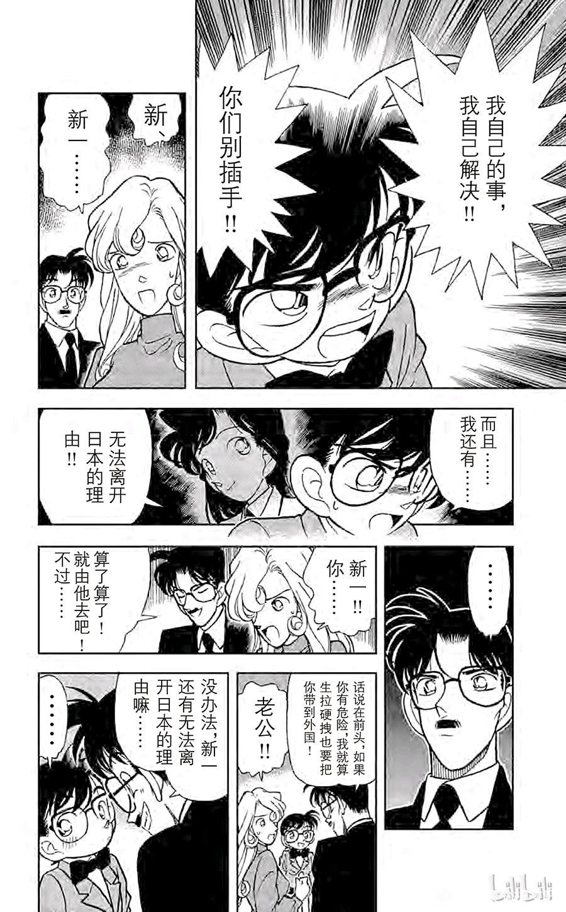
2024-01-11 06:58 | 47锛坆鈥唂鈥唌:他们居然能走到告白…真神奇2024-01-11 07:20 | 🌐之徙:回复 47锛坆鈥唂鈥唌 :新一把破案和告白称重，觉得破案重要，于是被逼迫告白💔只能说有点惨的
分割线：第38天，小五郎获得柯南的抚养费
------
------
八：小兰眼中的小孩子：柯南代餐价值之流失
第38天的古董收藏家案和第40天的天下一夜祭案有一个共同的特点：那就是小兰对柯南完全的不当回事，完全作为小孩子处理，这在整个剧情中是非常少见的。而其原因显然与“江户川文代”有关，小兰心目中柯南的形象补全了小孩子的一部分，于是这个时间段，小兰对柯南的感情惊人地与柯南对步美的感情一致。
首先是第38天的古董收藏家案，封面已经告诉你，柯兰间的代餐型暧昧不存在了，小兰正在嘲笑落水的柯南，就像小兰无视被有希子绑架的柯南的呼救一样。
真实的剧情则是小兰宁可看鱼也不看柯南，在等待小五郎办事的过程中，柯兰双方完全没有聊天的欲望，这里的情绪是与柯南绑架案相连贯的，柯南建立安全屋，小兰承担监护人责任，没有什么代餐感情，这些早已因为雪夜三小时而消磨殆尽了。
第38天的古董收藏家案和第40天的天下一夜祭案有一个共同的特点：那就是小兰对柯南完全的不当回事，完全作为小孩子处理，这在整个剧情中是非常少见的。而其原因显然与“江户川文代”有关，小兰心目中柯南的形象补全了小孩子的一部分，于是这个时间段，小兰对柯南的感情惊人地与柯南对步美的感情一致。
首先是第38天的古董收藏家案，封面已经告诉你，柯兰间的代餐型暧昧不存在了，小兰正在嘲笑落水的柯南，就像小兰无视被有希子绑架的柯南的呼救一样。
真实的剧情则是小兰宁可看鱼也不看柯南，在等待小五郎办事的过程中，柯兰双方完全没有聊天的欲望，这里的情绪是与柯南绑架案相连贯的，柯南建立安全屋，小兰承担监护人责任，没有什么代餐感情，这些早已因为雪夜三小时而消磨殆尽了。
值得注意的是，在8月3日礼物案之后，古董收藏家案又在大时间线设置了具体时间。从古董收藏家的备忘录看，这天是某个月的8日，同时应该是周五或周六（取决于某种五行规律），同时刚刚经过一个冬天，即此时是1995年的春季，只有4月8日符合这个条件。
为什么这两案都出现了具体时间呢？不难发现，这两案中柯南都使用了一个显著的技能--看手相。8月3日柯南看手相辨认外科医生，立刻被小兰怀疑为新一。但是还是一样的看手相，发现一位剑客，小兰的反应像是：小孩子又闯祸了。
固然，这里可能是小兰本身也知道剑道知识，所以不觉得奇怪，但其反映的核心事实是，小兰真的把柯南当小孩了。新一的幽灵已经在工藤家被小兰抓住，她不需要柯南来当代餐。而柯南也对代餐经历毫不留恋，马上投入推理中。
或许，这就是柯南需要的理想状态，不用照顾小兰的感受，安心帮小五郎推理，慢慢找黑衣组织……至于与小兰的未来？柯南恐怕已经不抱希望了。
为什么这两案都出现了具体时间呢？不难发现，这两案中柯南都使用了一个显著的技能--看手相。8月3日柯南看手相辨认外科医生，立刻被小兰怀疑为新一。但是还是一样的看手相，发现一位剑客，小兰的反应像是：小孩子又闯祸了。
固然，这里可能是小兰本身也知道剑道知识，所以不觉得奇怪，但其反映的核心事实是，小兰真的把柯南当小孩了。新一的幽灵已经在工藤家被小兰抓住，她不需要柯南来当代餐。而柯南也对代餐经历毫不留恋，马上投入推理中。
或许，这就是柯南需要的理想状态，不用照顾小兰的感受，安心帮小五郎推理，慢慢找黑衣组织……至于与小兰的未来？柯南恐怕已经不抱希望了。
2024-03-25 10:40 | 夏未念花繁🌸:这个金就是指金曜日，周五吧2024-03-25 21:35 | 🌐之徙:回复 夏未念花繁🌸 :是的是周五（动画化时不知为何改掉了星期）
没有哪个日常案件是无用的，这次古董收藏家案，又出现了意外，由于剑客凶手向小五郎挥刀，小五郎第一次表现出沉睡的自己和正常的自己完全不是一个人，而小兰也因此从无聊的状态解放出来，她拥有了新的人生目标：
【稳固小五郎的名气，从而坐稳“名侦探的女儿”这一位置】
诚然，美术馆案后小兰对父亲是充满自信的，她也真实地相信自己能与新一门当户对，然而新一在卡拉OK案无视的举动还是让小兰不放心，今天又发现小五郎如此不稳定的沉睡形态，小兰必须想到补救措施，她很快实施了。
实施对象是横沟警官。
而柯南对此事的反应是什么呢？他选择发侦探徽章给三小只，拒绝在一棵树上吊死，这是他能够最快保护小五郎的方法。
同样是小五郎遭遇危险，柯南与小兰的措施还是这样不同，毕竟他们本来就是极不和谐的两个人。
【稳固小五郎的名气，从而坐稳“名侦探的女儿”这一位置】
诚然，美术馆案后小兰对父亲是充满自信的，她也真实地相信自己能与新一门当户对，然而新一在卡拉OK案无视的举动还是让小兰不放心，今天又发现小五郎如此不稳定的沉睡形态，小兰必须想到补救措施，她很快实施了。
实施对象是横沟警官。
而柯南对此事的反应是什么呢？他选择发侦探徽章给三小只，拒绝在一棵树上吊死，这是他能够最快保护小五郎的方法。
同样是小五郎遭遇危险，柯南与小兰的措施还是这样不同，毕竟他们本来就是极不和谐的两个人。
第39天：消失的尸体事件
每当我觉得柯南的处境已经极端压抑时，总会出现一次少侦主题的案件。柯南从绷带怪人案开始，可以说长期没有开心的时候，绷带怪人案舍命救小兰，结果小兰转头就去追星达也，卡拉OK案柯南冒雪给小兰买礼物，结果被小兰翻箱倒柜一个小时，绑架案就不说了，真是身心俱疲。柯南唯一的笑容是在古董收藏家那里解决柜子拼图的时候，这样廉价的快乐却是转瞬即逝。
但是柯南在少侦这里是真的开心，三小只对推理的热情感染着大侦探，他甚至能轻松地开玩笑。三小只虽然比较天真，但出事时也拥有真正的担当。
每当我觉得柯南的处境已经极端压抑时，总会出现一次少侦主题的案件。柯南从绷带怪人案开始，可以说长期没有开心的时候，绷带怪人案舍命救小兰，结果小兰转头就去追星达也，卡拉OK案柯南冒雪给小兰买礼物，结果被小兰翻箱倒柜一个小时，绑架案就不说了，真是身心俱疲。柯南唯一的笑容是在古董收藏家那里解决柜子拼图的时候，这样廉价的快乐却是转瞬即逝。
但是柯南在少侦这里是真的开心，三小只对推理的热情感染着大侦探，他甚至能轻松地开玩笑。三小只虽然比较天真，但出事时也拥有真正的担当。
注意这个被砸的柯南。
柯南这里提前设置了安全屋，然而当三小只跟来时，柯南是发自内心高兴的，右下角柯南的笑容都藏不住了。
当然，最危险的潜入工作还是柯南自己做，三小只负责迅速报警，尽管后来柯南独自制服了犯人，但要是没有警察及时赶到，恐怕会损失证据（尤其尸体可能被处理掉），因此三小只对功劳是很大的，尤其是这次和大都会暗号不一样，大都会的三小只只是柯南的执行人，这里如何报警可是全靠三小只自己处理的，成长速度惊人。（对比某个上车不能报警的……）
战后总结，光彦又划水，连划三把了 ，元太和步美各自有贡献，元太似乎是在目暮不相信少侦时唯一坚定站在柯南这边的人（看表情），也是元太鼓励少侦前来破案，由于博士设备外放而闯祸后，迅速选择报警的也是元太。步美则是急中生智让目暮获得一手信息，贡献巨大。
，元太和步美各自有贡献，元太似乎是在目暮不相信少侦时唯一坚定站在柯南这边的人（看表情），也是元太鼓励少侦前来破案，由于博士设备外放而闯祸后，迅速选择报警的也是元太。步美则是急中生智让目暮获得一手信息，贡献巨大。
快乐的时光是短暂的，柯南又要陪小兰了。在天下一夜祭中，柯南将感受到小兰为了维护父亲名气的强大执念……
柯南这里提前设置了安全屋，然而当三小只跟来时，柯南是发自内心高兴的，右下角柯南的笑容都藏不住了。
当然，最危险的潜入工作还是柯南自己做，三小只负责迅速报警，尽管后来柯南独自制服了犯人，但要是没有警察及时赶到，恐怕会损失证据（尤其尸体可能被处理掉），因此三小只对功劳是很大的，尤其是这次和大都会暗号不一样，大都会的三小只只是柯南的执行人，这里如何报警可是全靠三小只自己处理的，成长速度惊人。（对比某个上车不能报警的……）
战后总结，光彦又划水，连划三把了
，元太和步美各自有贡献，元太似乎是在目暮不相信少侦时唯一坚定站在柯南这边的人（看表情），也是元太鼓励少侦前来破案，由于博士设备外放而闯祸后，迅速选择报警的也是元太。步美则是急中生智让目暮获得一手信息，贡献巨大。快乐的时光是短暂的，柯南又要陪小兰了。在天下一夜祭中，柯南将感受到小兰为了维护父亲名气的强大执念……
插楼致歉
2.9日是新干线事件漫画里是明确标的嘛
2.9日是新干线事件漫画里是明确标的嘛
2024-01-10 10:20 | 🌐之徙:不是这只是一种紧密排列的时间线，刚好排到2月8日的新干线，并且有利于验证柯步的世纪之吻
大时间线的新干线案应该在9月份左右，小时间线是第31天，动画组的时间线可能真的是2月8日左右。
具象化的小孩子：诡异的兔子气球
小时间线第40天，毛利一家前往埼玉县参加天下一夜祭，并破解一道证明题。
和其他事件不同的是，本次事件是小兰第一次要求全家人到外地玩，为了便于管理柯南，小兰买了一个兔子气球，这样她可以不用时刻弯腰照顾柯南。对比新干线的强制管理，这里的小兰可谓省心省力，这个气球，正是柯南正式成为小兰眼中的小孩子之体现。
随后毛利一家遇见了本次证明题的尖下巴凶手，并表现出莫名其妙的兴奋。设定上小兰是经常看书的，她说初中看过这些书，应该也不是谎话，但此处小兰的兴奋真的是【见到作者的激动】吗？非也。
小兰这里的激动，主要是与名气相关的，在小五郎点出尖下巴并非独立创作之后，小兰仍然希望结识尖下巴，这就是想出名的执念。这种执念从洋子案就开始了，到美术馆案由于小五郎登报，暂时得到满足，而后又因为古董收藏家案而动摇。
所以尖下巴与达也的情况不同，他并不是小兰的代餐，只是小兰成名之路的一个踏板，那么，踏板碎裂了，自然就要找下一个踏板了。
小时间线第40天，毛利一家前往埼玉县参加天下一夜祭，并破解一道证明题。
和其他事件不同的是，本次事件是小兰第一次要求全家人到外地玩，为了便于管理柯南，小兰买了一个兔子气球，这样她可以不用时刻弯腰照顾柯南。对比新干线的强制管理，这里的小兰可谓省心省力，这个气球，正是柯南正式成为小兰眼中的小孩子之体现。
随后毛利一家遇见了本次证明题的尖下巴凶手，并表现出莫名其妙的兴奋。设定上小兰是经常看书的，她说初中看过这些书，应该也不是谎话，但此处小兰的兴奋真的是【见到作者的激动】吗？非也。
小兰这里的激动，主要是与名气相关的，在小五郎点出尖下巴并非独立创作之后，小兰仍然希望结识尖下巴，这就是想出名的执念。这种执念从洋子案就开始了，到美术馆案由于小五郎登报，暂时得到满足，而后又因为古董收藏家案而动摇。
所以尖下巴与达也的情况不同，他并不是小兰的代餐，只是小兰成名之路的一个踏板，那么，踏板碎裂了，自然就要找下一个踏板了。
2024-02-25 00:27 | 黑暗刺猬-夏特:小孩子、兔子、绑在柯南身上——猜一个人2024-03-15 03:44 | 炙颜汐:回复 黑暗刺猬-夏特 :首先排除灰原哀，我选宫野志保
本案中横沟警官登场，横沟的推理水平似乎远远强于目暮，只是气场不足。总之，本次横沟试图发现小五郎沉睡的秘密，但是被小兰使用著名的【三步走】化解了。
没错，这里小兰的行为逻辑，与早些时间她遇见尖下巴的逻辑是一样的：追求更稳定的名气。小兰已经知道，被叫醒的小五郎会十分滑稽（古董收藏家案），所以极力阻止横沟，甚至直接把新一的名字报出来，然而横沟并不认识新一，报纸上小五郎的报道则限于美术馆案（小五郎没有被麻醉），所以无动于衷。
于是小兰使出杀手锏，直接抱住横沟，不管怎么样先阻止他再说，同样，这里不能认为横沟是小兰的代餐，这只是小兰的一种应激反应。不过，小兰缺乏边界感也确实是真的，为了其他的目的能抱住陌生男性，这件事情某种程度上比吃代餐还严重一些。
基于同样的目的，小兰一把拉起柯南气球的绳子，差点让小五郎功亏一篑，理由同样是【不能妨碍爸爸办案】，幸好横沟警官智商在线，有惊无险地过去了。
这件事情给柯南的教训是：要找个没人的地方射晕小五郎，再来一次剑客劈头或者小兰抓包是真的受不了，后续的月光案，暗夜男爵案等等，都采取了异地射晕的方式。而小兰获得的是正反馈💔横沟成为小五郎头号迷弟，小兰心中对名气的危机感又一次暂时解决了。
没错，这里小兰的行为逻辑，与早些时间她遇见尖下巴的逻辑是一样的：追求更稳定的名气。小兰已经知道，被叫醒的小五郎会十分滑稽（古董收藏家案），所以极力阻止横沟，甚至直接把新一的名字报出来，然而横沟并不认识新一，报纸上小五郎的报道则限于美术馆案（小五郎没有被麻醉），所以无动于衷。
于是小兰使出杀手锏，直接抱住横沟，不管怎么样先阻止他再说，同样，这里不能认为横沟是小兰的代餐，这只是小兰的一种应激反应。不过，小兰缺乏边界感也确实是真的，为了其他的目的能抱住陌生男性，这件事情某种程度上比吃代餐还严重一些。
基于同样的目的，小兰一把拉起柯南气球的绳子，差点让小五郎功亏一篑，理由同样是【不能妨碍爸爸办案】，幸好横沟警官智商在线，有惊无险地过去了。
这件事情给柯南的教训是：要找个没人的地方射晕小五郎，再来一次剑客劈头或者小兰抓包是真的受不了，后续的月光案，暗夜男爵案等等，都采取了异地射晕的方式。而小兰获得的是正反馈💔横沟成为小五郎头号迷弟，小兰心中对名气的危机感又一次暂时解决了。
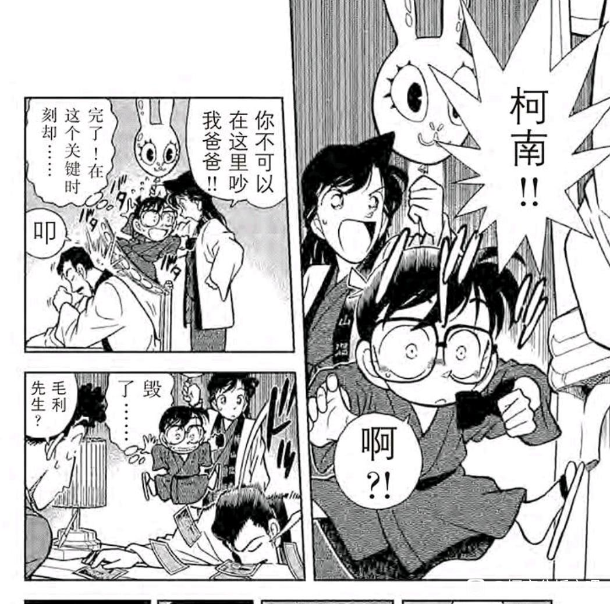
2024-01-11 04:55 | 渊虹水寒墨眉:小兰真的很喜欢随便抱别的男人2024-01-18 21:42 | 2014只蝴蝶飞过:我的妈，小兰真吓人，看着真的好心疼柯南。这么一条细细的线，被小兰一下子拽起来。这得老难受了吧
分割线：第41天，月光案开始
------
------
九、“柯南”与“新一”的重新链接：月光案和赤木量子案
小时间线第41天和第42天，毛利一家前往月影岛调查月光案，我其实不是很在乎小兰强行拽着老警察，或者柯南吃不到饭团之类的画面，这些画面如果不是动画组加以画重点，其实并不是那么重要。
重要的是麻生成实仅进行半天的交流，就立刻发现柯南才是推理的主导角色。
我们知道，麻生成实的杀人计划已经是箭在弦上，甚至自杀计划都已经安排了，他邀请小五郎的目的其实就是希望自己自杀后能有人发现真相，于是在观察后，他认为真相应该会由柯南发现，所有这些话，【都是在小兰面前说的】
而小五郎的名气问题其实并没有解决，岛上的所有人认为小五郎是飞行员的名字，【但没有在小兰面前说】，小兰视角里只有老警察认为是飞行员。
那么，视野里【小五郎的名气问题基本解决，而柯南的推理能力真的有点高】就成为了小兰的主要思维，她倒不至于怀疑柯南是新一，但越发觉得柯南和新一有交流（此前柯南从来没说过【是新一哥哥说的啦】）
这也就成为赤木量子案的铺垫，小兰不能再把柯南当成普通小孩了，这也意味着柯兰关系的逐渐恢复。
代价是新兰关系继续破碎下去。
小时间线第41天和第42天，毛利一家前往月影岛调查月光案，我其实不是很在乎小兰强行拽着老警察，或者柯南吃不到饭团之类的画面，这些画面如果不是动画组加以画重点，其实并不是那么重要。
重要的是麻生成实仅进行半天的交流，就立刻发现柯南才是推理的主导角色。
我们知道，麻生成实的杀人计划已经是箭在弦上，甚至自杀计划都已经安排了，他邀请小五郎的目的其实就是希望自己自杀后能有人发现真相，于是在观察后，他认为真相应该会由柯南发现，所有这些话，【都是在小兰面前说的】
而小五郎的名气问题其实并没有解决，岛上的所有人认为小五郎是飞行员的名字，【但没有在小兰面前说】，小兰视角里只有老警察认为是飞行员。
那么，视野里【小五郎的名气问题基本解决，而柯南的推理能力真的有点高】就成为了小兰的主要思维，她倒不至于怀疑柯南是新一，但越发觉得柯南和新一有交流（此前柯南从来没说过【是新一哥哥说的啦】）
这也就成为赤木量子案的铺垫，小兰不能再把柯南当成普通小孩了，这也意味着柯兰关系的逐渐恢复。
代价是新兰关系继续破碎下去。
月光案可能是目前为止，柯南生涯中遭遇的最复杂的案件，夏江案虽然是连续杀人，但凶手只有一位且是临时起意；明美案三个嫌疑人都死了，但这只是黑衣组织的手法；月光案可是在警方已经介入的情况下，麻生成实继续作案连杀三人，同时对方还是毒集团，所以本案柯南【不装了】的时刻特别多，因此遭到了小五郎三次重击，其中一次力气非常大。
我一直认为，不要对小五郎日常拳击柯南抱太大敌视，这种重击是在不断提醒读者：柯南不能太过分，不然可能会陷入危险，而小五郎就是柯南的保险丝，在真正的危险到来前把柯南敲回去，这是服务于剧情的。
唯独这次，我感觉小五郎真打重了，以至于他自己都吓了一跳，这是在传递一个什么信息呢？柯南在真正的大案件【不装了】，这种特征已经被小五郎用最大的力气拳击，其他人（尤其是小兰）不可能没注意到，这和美术馆的旁敲侧击是不一样的。
所以小兰的内心中，柯南与新一的链接持续得到强化，在月光案第一天，小兰还处于无所事事的状态，但第二天的小兰一直在追着柯南跑，提供一些帮助（主要是音乐知识），但主要是试图获得柯南相关的更多信息。
我一直认为，不要对小五郎日常拳击柯南抱太大敌视，这种重击是在不断提醒读者：柯南不能太过分，不然可能会陷入危险，而小五郎就是柯南的保险丝，在真正的危险到来前把柯南敲回去，这是服务于剧情的。
唯独这次，我感觉小五郎真打重了，以至于他自己都吓了一跳，这是在传递一个什么信息呢？柯南在真正的大案件【不装了】，这种特征已经被小五郎用最大的力气拳击，其他人（尤其是小兰）不可能没注意到，这和美术馆的旁敲侧击是不一样的。
所以小兰的内心中，柯南与新一的链接持续得到强化，在月光案第一天，小兰还处于无所事事的状态，但第二天的小兰一直在追着柯南跑，提供一些帮助（主要是音乐知识），但主要是试图获得柯南相关的更多信息。
应该说，在这种【对柯南的好奇】驱动下，小兰难得地像是【工藤的女人】了，不论是解决音乐暗号时真心的高兴，还是大半夜陪着柯南跑来跑去传递信息，这让柯南对小兰的好感有一定的回升。
但很可惜，小兰的这个状态是暂时的，完全是出于好奇的一种暂时推理热情，这与和叶对服部的那种感情实在是难以比较。
更重要的是，小兰虽然不喜欢推理，但也没有到极端厌恶推理的部分，小兰并不排斥破解一些简单的暗号，只是完全缺乏主动破解的热情。小兰真正不喜欢的，是“新一因为推理会离开她”，而对柯南的跟随让她发现，存在柯南这位推理时可以被她跟踪的人，相当于柯南第二次成为小兰的代餐，和第一次的掌控欲代餐不同，这次代餐是小兰对热带乐园没有跟上新一的一种补救，算是一种微小的成长。
只是，相比小兰微小的成长，柯南已经近距离感受月光案，“不要逼死犯人”成为柯南永远的信条，而小兰终究只是火海外的局外人，她没有接住柯南，正如M26柯南没有接住她一样。
还记得雪夜三小时那一章的标题吗？
【错过的两人】
但很可惜，小兰的这个状态是暂时的，完全是出于好奇的一种暂时推理热情，这与和叶对服部的那种感情实在是难以比较。
更重要的是，小兰虽然不喜欢推理，但也没有到极端厌恶推理的部分，小兰并不排斥破解一些简单的暗号，只是完全缺乏主动破解的热情。小兰真正不喜欢的，是“新一因为推理会离开她”，而对柯南的跟随让她发现，存在柯南这位推理时可以被她跟踪的人，相当于柯南第二次成为小兰的代餐，和第一次的掌控欲代餐不同，这次代餐是小兰对热带乐园没有跟上新一的一种补救，算是一种微小的成长。
只是，相比小兰微小的成长，柯南已经近距离感受月光案，“不要逼死犯人”成为柯南永远的信条，而小兰终究只是火海外的局外人，她没有接住柯南，正如M26柯南没有接住她一样。
还记得雪夜三小时那一章的标题吗？
【错过的两人】
2024-02-13 11:20 | 贴吧用户_GCMEMPJ:+12024-02-24 12:19 | 雪者风形:【错过的两人】……
重燃的虚无希望：赤木量子案
这个案件过于著名，小兰的许多表现经常被拿出来形容其缺乏教养之类，本文不对小兰个人的品质做判断，我想说的是，这次事件是卡拉OK案的超级加倍版本，并且这个事件中柯南的态度更加退让，小兰的情绪更加极端。
然而，两个事件的结果却不太相同，卡拉OK案后柯兰关系陷入冰点，而赤木量子案后新兰关系却是回升的状态。
只是，这种回升的趋势仅仅持续了【小时间线的一天】，我称之为【虚无的希望】。
故事一开始，柯南怀念高中生活，然而却是以踢足球为主的怀念，同时表现出在住毛利家的烦躁，这就是柯南现阶段的感想，符合自卡拉OK案以来柯南一贯的低沉情绪。
这个案件过于著名，小兰的许多表现经常被拿出来形容其缺乏教养之类，本文不对小兰个人的品质做判断，我想说的是，这次事件是卡拉OK案的超级加倍版本，并且这个事件中柯南的态度更加退让，小兰的情绪更加极端。
然而，两个事件的结果却不太相同，卡拉OK案后柯兰关系陷入冰点，而赤木量子案后新兰关系却是回升的状态。
只是，这种回升的趋势仅仅持续了【小时间线的一天】，我称之为【虚无的希望】。
故事一开始，柯南怀念高中生活，然而却是以踢足球为主的怀念，同时表现出在住毛利家的烦躁，这就是柯南现阶段的感想，符合自卡拉OK案以来柯南一贯的低沉情绪。
接下来赤木量子出现了，一大堆名场面随之到来。
首先柯南问出“莫非他是你的初恋情人？”，这里有两种解释：
A、柯南在给小兰上强度，看看小兰这方面的反应。（此前小兰似乎没有新一与其他女生交往的记忆）
B、柯南就是常见的胡说，刚变小对小兰也是这套话。
虽然有点极端，但我认为这里就是选项A，柯南看到赤木量子这个情况，其实已经猜到她是来委托的，如果小兰不在家，肯定没有这个玩笑。而且这里的用词是“初恋”而不是“男朋友”，显然是给小兰听的，【小兰的初恋可能是别人的初恋哦】
小兰的态度是【不可能，谁会喜欢那个推理狂】，这是典型的以己度人，小兰喜欢新一的其他方面，唯独不是推理属性，因此在隔绝新一与其他女性时，就用“推理狂”作为负面标签，柯南对此相当不满。
当然，即使是柯南也根本没想到赤木量子接下来的操作：她顺着说新一是自己男朋友，两人甚至亲吻过，这个强度就有点过分了。
小五郎的反应是喜闻乐见，小兰震惊到失去理智，
柯南……他在设想自己真的亲吻赤木量子，嗯？
这个接吻的画面是小兰和柯南的共同想象，有那么一瞬间，柯南内心中已经不存在小兰了，过山车牵个手/用冰可乐捂脸，这些曾经让新一动心的时刻，仿佛从未发生过一样消散了。
当然，柯南很快反应过来，并重新理清思绪。我们不禁要问，如果不是赤木量子，而是灰原哀，新兰间那些廉价的美好回忆，真的能成为柯哀感情的堤坝吗？
首先柯南问出“莫非他是你的初恋情人？”，这里有两种解释：
A、柯南在给小兰上强度，看看小兰这方面的反应。（此前小兰似乎没有新一与其他女生交往的记忆）
B、柯南就是常见的胡说，刚变小对小兰也是这套话。
虽然有点极端，但我认为这里就是选项A，柯南看到赤木量子这个情况，其实已经猜到她是来委托的，如果小兰不在家，肯定没有这个玩笑。而且这里的用词是“初恋”而不是“男朋友”，显然是给小兰听的，【小兰的初恋可能是别人的初恋哦】
小兰的态度是【不可能，谁会喜欢那个推理狂】，这是典型的以己度人，小兰喜欢新一的其他方面，唯独不是推理属性，因此在隔绝新一与其他女性时，就用“推理狂”作为负面标签，柯南对此相当不满。
当然，即使是柯南也根本没想到赤木量子接下来的操作：她顺着说新一是自己男朋友，两人甚至亲吻过，这个强度就有点过分了。
小五郎的反应是喜闻乐见，小兰震惊到失去理智，
柯南……他在设想自己真的亲吻赤木量子，嗯？
这个接吻的画面是小兰和柯南的共同想象，有那么一瞬间，柯南内心中已经不存在小兰了，过山车牵个手/用冰可乐捂脸，这些曾经让新一动心的时刻，仿佛从未发生过一样消散了。
当然，柯南很快反应过来，并重新理清思绪。我们不禁要问，如果不是赤木量子，而是灰原哀，新兰间那些廉价的美好回忆，真的能成为柯哀感情的堤坝吗？
2024-03-10 04:04 | 学习机425:这里真的tomato好好笑，兰姐一脸红温，小柯满脑子废料
柯南毕竟是柯南，心情平复只用了几秒，就很快投入破案工作，假装新一打电话来接受赤木量子的委托。
现在我们回到小兰的视角，看看她眼中自卡拉OK案以来的新一：
【新一久久不出现，在卡拉OK案也不理我，但最后还是在繁忙的时间抽空送了我礼物！】
【为了能与新一在名气上匹配，我要成为名侦探的女儿！不允许横沟警官打扰爸爸办案！（抱住）】
【咦？赤木量子是谁……不可能啦，一定是量子有难言之隐，哈哈……她说的不会是真的吧 】
】
【嗯？新一居然打电话打到毛利家？他不但关心量子，甚至知道量子去哪了？！啊啊啊啊……他还可能知道量子的电话！（无视柯南的辩解）】
【难道新一真的瞒着我……这么说，从卡拉OK开始就瞒着我？从云霄飞车开始？（陷入彻底的自我怀疑）】
所以，此时的小兰是真心觉得新一是“爱情大骗子”，本就缺乏安全感的她更难以想到其他的可能性，赤木量子的委托人身份则被小兰抛之脑后，这种情绪比卡拉OK案更强烈，卡拉OK案还可以欺骗自己新一很忙，然而小兰突然发现，不忙的新一也未必会回到自己身边。
上帝视角的读者当然知道小兰的推导是错误的，但可怕的是即使推导错误，结论似乎是正确的，柯南陪小兰去美术馆，去天下一夜祭，从来没有很高兴的表情，想变回高中生的动机是逮捕黑衣组织甚至是可以踢足球，而不是小兰。
小兰的应激行动不仅仅是压迫赤木量子，她的行动将持续到第47天的小五郎同学会，这段时间小兰各类措施的力度将远超【成为名侦探的女儿】计划，如果要命名的话，大概是【训练诱惑力】计划。
现在我们回到小兰的视角，看看她眼中自卡拉OK案以来的新一：
【新一久久不出现，在卡拉OK案也不理我，但最后还是在繁忙的时间抽空送了我礼物！】
【为了能与新一在名气上匹配，我要成为名侦探的女儿！不允许横沟警官打扰爸爸办案！（抱住）】
【咦？赤木量子是谁……不可能啦，一定是量子有难言之隐，哈哈……她说的不会是真的吧
】【嗯？新一居然打电话打到毛利家？他不但关心量子，甚至知道量子去哪了？！啊啊啊啊……他还可能知道量子的电话！（无视柯南的辩解）】
【难道新一真的瞒着我……这么说，从卡拉OK开始就瞒着我？从云霄飞车开始？（陷入彻底的自我怀疑）】
所以，此时的小兰是真心觉得新一是“爱情大骗子”，本就缺乏安全感的她更难以想到其他的可能性，赤木量子的委托人身份则被小兰抛之脑后，这种情绪比卡拉OK案更强烈，卡拉OK案还可以欺骗自己新一很忙，然而小兰突然发现，不忙的新一也未必会回到自己身边。
上帝视角的读者当然知道小兰的推导是错误的，但可怕的是即使推导错误，结论似乎是正确的，柯南陪小兰去美术馆，去天下一夜祭，从来没有很高兴的表情，想变回高中生的动机是逮捕黑衣组织甚至是可以踢足球，而不是小兰。
小兰的应激行动不仅仅是压迫赤木量子，她的行动将持续到第47天的小五郎同学会，这段时间小兰各类措施的力度将远超【成为名侦探的女儿】计划，如果要命名的话，大概是【训练诱惑力】计划。
小兰大概是在什么时机才可能发现赤木量子的谎言的呢？应该是在发现一个小型足球这个位置。然而小兰无视了这个显然的信息。没错，小兰嘴上说“新一踢足球很帅”，但对足球根本就是叶公好龙，这足球大小都不一样，连赤木量子也说的是“哥哥在学校指导足球用的”，小兰竟然毫无察觉。我严重地怀疑如果新一成为足球运动员所以会长期外出打球赛的话，小兰就会把新一叫成“足球狂”了。
而第二个时机自然是小兰发现极为混乱的房间，小兰甚至全力向玩偶打了一拳，柯南的表情是恐惧，瞳孔缩小，但小兰表示让柯南把房间打扫干净（？）柯南还真去打扫了（？？）这里小兰的表现像一个人。
开柜门的琴酒！
小兰已经觉得很不对劲，很可能已经缓过来知道新一在办案，但情绪没办法立刻消除，她做的动作和琴酒一模一样。
第三次时机则是小兰在厕所门口，清楚听到厕所内新一破案的声音，这次是真的没法骗自己了，新一真的在破案，所以小兰试图破门而入活捉新一，又愿意听新一的私密电话。但这只是柯南计划的一部分，柯南迅速挂掉电话润了。
此时小兰的思绪已经和赤木量子是不是新一的女朋友无关了，她震惊于这样一件事：
【为什么你和赤木量子（仅仅是委托人）有共同的秘密，我却连电话都不能听！】
此时这场模拟已经不亚于江户川文代的绑架，我们都知道，小兰将会在未来的某一天体验一模一样的震惊。
感觉被骗-欺骗自己-恍然大悟-新一润走，很可能是小兰将经历的四个步骤，如果小兰还是什么都没有改变，她的未来就如同今天一样容易预测。
而第二个时机自然是小兰发现极为混乱的房间，小兰甚至全力向玩偶打了一拳，柯南的表情是恐惧，瞳孔缩小，但小兰表示让柯南把房间打扫干净（？）柯南还真去打扫了（？？）这里小兰的表现像一个人。
开柜门的琴酒！
小兰已经觉得很不对劲，很可能已经缓过来知道新一在办案，但情绪没办法立刻消除，她做的动作和琴酒一模一样。
第三次时机则是小兰在厕所门口，清楚听到厕所内新一破案的声音，这次是真的没法骗自己了，新一真的在破案，所以小兰试图破门而入活捉新一，又愿意听新一的私密电话。但这只是柯南计划的一部分，柯南迅速挂掉电话润了。
此时小兰的思绪已经和赤木量子是不是新一的女朋友无关了，她震惊于这样一件事：
【为什么你和赤木量子（仅仅是委托人）有共同的秘密，我却连电话都不能听！】
此时这场模拟已经不亚于江户川文代的绑架，我们都知道，小兰将会在未来的某一天体验一模一样的震惊。
感觉被骗-欺骗自己-恍然大悟-新一润走，很可能是小兰将经历的四个步骤，如果小兰还是什么都没有改变，她的未来就如同今天一样容易预测。
2024-02-23 22:54 | 雪者风形:听说Angel也是一种鸡尾酒（）而且主体就是Gin（）2024-02-25 00:45 | 黑暗刺猬-夏特:回复 雪者风形 :还真是——Angels，原料：Dry Gin……
直树家，小兰终于破门而入，以下这个镜头非常生动。
量子在找小守，她左顾右盼，最后找到了。
小兰在找新一，她继续破门而入，这种搜索方法其实是默认新一一定是【躲起来的】，小兰其实是在用愤怒掩盖绝望，她很快就要掩盖不住了。
柯南在对直树进行急救，背对小兰。小兰这种暴力闯入已经到了无视他人生命安全的地步了，没错，和刚刚经过月光案的柯南产生严重的冲突。
随后小兰对直树进行无端审问，如果不是量子迅速想到打电话的方法（小兰甚至没有新一的电话），直树很可能还要挨打。
总之，柯南此时对小兰的态度只剩下逃跑了，然而故事的转折也发生在此刻：和雪夜三小时不同，小兰做出了让柯南感到“脸红”的反应。
量子在找小守，她左顾右盼，最后找到了。
小兰在找新一，她继续破门而入，这种搜索方法其实是默认新一一定是【躲起来的】，小兰其实是在用愤怒掩盖绝望，她很快就要掩盖不住了。
柯南在对直树进行急救，背对小兰。小兰这种暴力闯入已经到了无视他人生命安全的地步了，没错，和刚刚经过月光案的柯南产生严重的冲突。
随后小兰对直树进行无端审问，如果不是量子迅速想到打电话的方法（小兰甚至没有新一的电话），直树很可能还要挨打。
总之，柯南此时对小兰的态度只剩下逃跑了，然而故事的转折也发生在此刻：和雪夜三小时不同，小兰做出了让柯南感到“脸红”的反应。
这是让剧情走向发生关键变化的一幕：
此时小兰已经确认新一就在转角处，但小兰却停下脚步，不敢前进，因为小兰事实上害怕面对这一真相，即“工藤新一和别的女孩子有我不知道的秘密”，甚至“新一被拜托后出现在她家里”，小兰的【不晓得她为什么要哭】并不是说绑架案的事情，而是：
【工藤新一专门和她打电话，帮她解决困难，她有什么好哭的，明明最想哭的是我！】
可以看到，小兰自动把新一解决案件当成一件理所应当的事情，是可以和“陪陪我”等价的，充满了对新一工作价值的不尊重。
但是，小兰的眼泪是有效的，柯南这次是相当心软，首先柯南是不愿意让任何人流泪的人，其次柯南白天测试的结果是【小兰相当在意自己】这个不错的结果，最后是小兰创造的愧疚环境，即的确是柯南将小兰困在谎言中。即使事实上根本不欠小兰什么，柯南还是说出“让你伤心我很难过”，这句话是真心的。
不妨对比雪夜三小时，柯南说的是“很高兴看到你会为我流泪”（大意），而当时的小兰也在用强，强行说自己“没有想念新一”，于是只好经历柯南的厌恶。
对小兰来讲，她发现眼泪很有用，她将继续频繁使用这一有力“药物”，直到新一“产生抗体”，而对于柯南来讲，这短暂的感情回升，也将立刻经历考验--第44天的暗夜男爵事件。
此时小兰已经确认新一就在转角处，但小兰却停下脚步，不敢前进，因为小兰事实上害怕面对这一真相，即“工藤新一和别的女孩子有我不知道的秘密”，甚至“新一被拜托后出现在她家里”，小兰的【不晓得她为什么要哭】并不是说绑架案的事情，而是：
【工藤新一专门和她打电话，帮她解决困难，她有什么好哭的，明明最想哭的是我！】
可以看到，小兰自动把新一解决案件当成一件理所应当的事情，是可以和“陪陪我”等价的，充满了对新一工作价值的不尊重。
但是，小兰的眼泪是有效的，柯南这次是相当心软，首先柯南是不愿意让任何人流泪的人，其次柯南白天测试的结果是【小兰相当在意自己】这个不错的结果，最后是小兰创造的愧疚环境，即的确是柯南将小兰困在谎言中。即使事实上根本不欠小兰什么，柯南还是说出“让你伤心我很难过”，这句话是真心的。
不妨对比雪夜三小时，柯南说的是“很高兴看到你会为我流泪”（大意），而当时的小兰也在用强，强行说自己“没有想念新一”，于是只好经历柯南的厌恶。
对小兰来讲，她发现眼泪很有用，她将继续频繁使用这一有力“药物”，直到新一“产生抗体”，而对于柯南来讲，这短暂的感情回升，也将立刻经历考验--第44天的暗夜男爵事件。
最后讲讲量子小姐的故事。
首先，量子大概率不姓赤木，柯南认为这是假名，而量子也没有反对（这张量子非常哀），但是量子这个名字应该是真的，而且出现在小守的游戏中。
小守的游戏中四个角色的名字是小守，英雄，直树和量子，其他三位应该是陪着小守长大的，直树我们已经知道是英雄青梅竹马的“好兄弟”，那么量子究竟是谁？柯南没有深究，不过其实是有端倪的。
我们可以结合量子接的第一通电话来看，量子一开始应该以为是绑匪打来的，但听到声音后立刻平静下来，电话那头还询问了“他（应该是新一）来了吗？”，可以认为电话应该是英雄打来的，英雄应该早就收到绑架信息，要求他踢假球，并且和量子商量过怎么解决。
以下是我分析的隐藏剧情：
【英雄应该和量子讨论认为不宜报警或找侦探，而应该以其他名义（一开始可能是同学名义，后来改成男女朋友名义）请著名的工藤新一解决，从对方案的积极性看，应该是英雄提出了男女朋友方案】
【但英雄其实是对这个方案不那么乐意的，电话里英雄的语气是有些落寞的】
【有意思的是，量子也对这个方案不满意，她在事务所门口等了很久，一直没有下定决心，至于不委托小五郎，很可能是希望最小化“男女朋友名义“造成的影响】
【但双方还是继续执行计划，对英雄来说他甚至做好了全程踢假球的准备，而量子事实上做到了最好，成功联系工藤新一并解决案件。比起自己的名誉，量子似乎更在意英雄球场上的名誉】
这个拧巴，又互相为对方考虑，又极度想占有对方的感情的关系，是不是有点熟悉？
当灰原哀决定让柯南“危命复活”时，她已经做好让新一与小兰永远在一起的准备了，而赤木英雄也战胜了自己的某种私心，让量子自称“新一的女朋友”。
至于量子的心意，恐怕是掩盖不住的吧，他向小兰介绍自己的“哥哥”时，那种由衷高兴的神情，真的是伪装的吗？尤其注意量子是很以英雄的职业为自豪的哦。
当然，这里并不是说英雄和量子是恋爱关系，直树认为量子是单身，不过如果单独拿出柯哀中的一位，似乎也能说是“单身”吧？
首先，量子大概率不姓赤木，柯南认为这是假名，而量子也没有反对（这张量子非常哀），但是量子这个名字应该是真的，而且出现在小守的游戏中。
小守的游戏中四个角色的名字是小守，英雄，直树和量子，其他三位应该是陪着小守长大的，直树我们已经知道是英雄青梅竹马的“好兄弟”，那么量子究竟是谁？柯南没有深究，不过其实是有端倪的。
我们可以结合量子接的第一通电话来看，量子一开始应该以为是绑匪打来的，但听到声音后立刻平静下来，电话那头还询问了“他（应该是新一）来了吗？”，可以认为电话应该是英雄打来的，英雄应该早就收到绑架信息，要求他踢假球，并且和量子商量过怎么解决。
以下是我分析的隐藏剧情：
【英雄应该和量子讨论认为不宜报警或找侦探，而应该以其他名义（一开始可能是同学名义，后来改成男女朋友名义）请著名的工藤新一解决，从对方案的积极性看，应该是英雄提出了男女朋友方案】
【但英雄其实是对这个方案不那么乐意的，电话里英雄的语气是有些落寞的】
【有意思的是，量子也对这个方案不满意，她在事务所门口等了很久，一直没有下定决心，至于不委托小五郎，很可能是希望最小化“男女朋友名义“造成的影响】
【但双方还是继续执行计划，对英雄来说他甚至做好了全程踢假球的准备，而量子事实上做到了最好，成功联系工藤新一并解决案件。比起自己的名誉，量子似乎更在意英雄球场上的名誉】
这个拧巴，又互相为对方考虑，又极度想占有对方的感情的关系，是不是有点熟悉？
当灰原哀决定让柯南“危命复活”时，她已经做好让新一与小兰永远在一起的准备了，而赤木英雄也战胜了自己的某种私心，让量子自称“新一的女朋友”。
至于量子的心意，恐怕是掩盖不住的吧，他向小兰介绍自己的“哥哥”时，那种由衷高兴的神情，真的是伪装的吗？尤其注意量子是很以英雄的职业为自豪的哦。
当然，这里并不是说英雄和量子是恋爱关系，直树认为量子是单身，不过如果单独拿出柯哀中的一位，似乎也能说是“单身”吧？
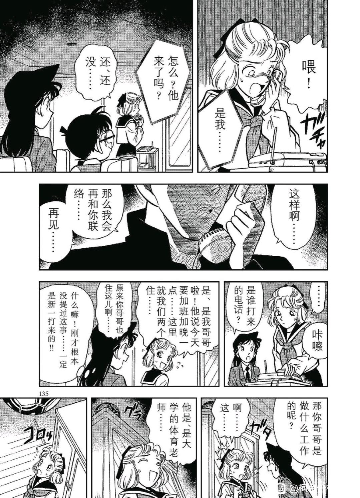
2024-02-13 11:25 | 贴吧用户_GCMEMPJ:此案件+12024-02-16 10:18 | 贴吧用户_7PX2yAy:英雄长得也和新一一样啊 这么再看看冲田铁煮鱼 简直了 暗示呢
番外：
（以下纯属娱乐）
卡拉OK案和赤木量子案拥有共通的结局，那么，能否在封面找出一些端倪呢？
（以上纯属娱乐）
（以下纯属娱乐）
卡拉OK案和赤木量子案拥有共通的结局，那么，能否在封面找出一些端倪呢？
（以上纯属娱乐）
分割线：第44天，毛利一家前往伊豆海滩
------
------
十、小兰的【诱惑力提升】计划（上）：从暗夜男爵到小五郎同学会
赤木量子案结束之后，小兰追问三天完全是形式主义的，她事实上完全清楚新一和量子毫无关系，只是在更新人物形象上花费了（大时间线）三天（某种程度上已经算快的了，绷带怪人的帅哥可是花费了大时间线一周时间更新）。
此时，小兰的首要任务是弄清楚为什么新一总是不与她见面，显然小五郎的名气没有出现问题，那么原因是什么呢？
以下是我的推断，也许有夸张的部分，但未必不合理：
【1、小兰知道柯南和新一很像，进而推论柯南和新一喜欢的女性应该有相同特征】
【2、小兰见过柯南对一些其他女性脸红，刚好是新一出现的两次对应（卡拉OK对经纪人脸红，后来又对赤木量子脸红）】
【3、因此，小兰使用最简易的诱惑力提升方案，具体来讲就是在柯南面前秀身材，而且立刻行动，以此训练并观测自己的诱惑力】
于是就有了暗夜男爵案，此时是大时间线的第二个夏季，我们注意到，第一个夏季的小兰并没有前往海滩，甚至在每月礼物案表现得相当保守（仅仅想到曾经在柯南面前表白，就逃走了）
但是第二个夏季，柯南还是一如既往地不想旅游，却被小兰【主动】要求去海滩，以小兰的家庭地位，她似乎不太能要求小五郎带她去，但却可以蹭博士的免费票，难得的机会，小兰不顾酷暑，目标直指柯南，效果拔群。
并且小兰很可能发现柯南很好玩，而柯南显然也不拒绝。在小兰的主动攻势下，柯兰关系迅速回升。
赤木量子案结束之后，小兰追问三天完全是形式主义的，她事实上完全清楚新一和量子毫无关系，只是在更新人物形象上花费了（大时间线）三天（某种程度上已经算快的了，绷带怪人的帅哥可是花费了大时间线一周时间更新）。
此时，小兰的首要任务是弄清楚为什么新一总是不与她见面，显然小五郎的名气没有出现问题，那么原因是什么呢？
以下是我的推断，也许有夸张的部分，但未必不合理：
【1、小兰知道柯南和新一很像，进而推论柯南和新一喜欢的女性应该有相同特征】
【2、小兰见过柯南对一些其他女性脸红，刚好是新一出现的两次对应（卡拉OK对经纪人脸红，后来又对赤木量子脸红）】
【3、因此，小兰使用最简易的诱惑力提升方案，具体来讲就是在柯南面前秀身材，而且立刻行动，以此训练并观测自己的诱惑力】
于是就有了暗夜男爵案，此时是大时间线的第二个夏季，我们注意到，第一个夏季的小兰并没有前往海滩，甚至在每月礼物案表现得相当保守（仅仅想到曾经在柯南面前表白，就逃走了）
但是第二个夏季，柯南还是一如既往地不想旅游，却被小兰【主动】要求去海滩，以小兰的家庭地位，她似乎不太能要求小五郎带她去，但却可以蹭博士的免费票，难得的机会，小兰不顾酷暑，目标直指柯南，效果拔群。
并且小兰很可能发现柯南很好玩，而柯南显然也不拒绝。在小兰的主动攻势下，柯兰关系迅速回升。
但是柯南很快就幻灭了，因为小兰这次做了完全出乎柯南意料的举动。
那就是主动开撩前田聪，没错，和绷带怪人的被动不同，这次是完全主动的。可以看到前田聪是惊讶的一方，小兰是花痴的一方。
而如果我们将时间线调后，又可以将同身份的京极真与此处对比。小兰第一次看见京极真是什么态度呢？是“好像认识，忘记在哪见的了”，所以小兰这里说前田聪是她的偶像，虽然不一定是假的，却不能成为小兰花痴到如此程度的理由，以至于柯南直接生气，认为量子案小兰【最想哭的是我】完全是表演。这直接抵消了量子案结尾带来的好感增长。
对小兰来讲，更多的感情是前田聪替她打抱不平，赶跑酒鬼男，这个感情是与【新一关键时变得好可靠】这个小兰最喜欢新一的理由等价的。因此，在小兰不知道前田聪有未婚妻的情况下，她敢于主动出击寻找代餐，发现未婚妻后就收敛一些了（暂时的）。
对小兰来讲，这是理所当然的习惯，但柯南显然是不高兴的，不过没有关系，更不高兴的还在后面。
那就是主动开撩前田聪，没错，和绷带怪人的被动不同，这次是完全主动的。可以看到前田聪是惊讶的一方，小兰是花痴的一方。
而如果我们将时间线调后，又可以将同身份的京极真与此处对比。小兰第一次看见京极真是什么态度呢？是“好像认识，忘记在哪见的了”，所以小兰这里说前田聪是她的偶像，虽然不一定是假的，却不能成为小兰花痴到如此程度的理由，以至于柯南直接生气，认为量子案小兰【最想哭的是我】完全是表演。这直接抵消了量子案结尾带来的好感增长。
对小兰来讲，更多的感情是前田聪替她打抱不平，赶跑酒鬼男，这个感情是与【新一关键时变得好可靠】这个小兰最喜欢新一的理由等价的。因此，在小兰不知道前田聪有未婚妻的情况下，她敢于主动出击寻找代餐，发现未婚妻后就收敛一些了（暂时的）。
对小兰来讲，这是理所当然的习惯，但柯南显然是不高兴的，不过没有关系，更不高兴的还在后面。
2024-02-16 10:22 | 贴吧用户_7PX2yAy:我去 又这么像2024-02-16 21:57 | 透明深林:突然发现这里柯南特地点了一下，全日本空手道冠军和东京都空手道优胜的区别2024-03-10 04:11 | 学习机425:有一说一 我认为这里的酒鬼和毛利好像，也不失为老贼的恶趣味
柯南这种不高兴，几乎直接表示出来了。
当柯南落水后，他第一时间找阿笠博士确认了情况，但在小兰询问时，他的思路是【小兰会叫小五郎和柯南回家】，这里的思路表明，在柯南的眼中【小兰认为柯南是小孩子】，尽管小兰已经给予柯南身材诱惑，但看见小兰对前田聪的态度，柯南还是不由得联想到第40天的天下一夜祭（这是小兰最认为柯南是小孩子的时候，小兰同样崇拜一位作家）。
如果柯南有重要性，难道不应该让小五郎查清楚吗？柯南甚至认为小兰宁愿回家也不愿拜托爸爸查清楚，只能说代餐场面对柯南来讲总是很大的打击。
与柯南的不开心相反，小兰很开心，她成功在柯南身上测试了身材诱惑力，吃到代餐，甚至专门测试了小五郎的名气（结果大获成功，没人说是飞行员），想干的事情都干了，甚至能喊柯南白痴了。
新兰的开心与不开心总是相反，这种情况从第一天，开心的新一被小兰包包攻击就开始了。
当柯南落水后，他第一时间找阿笠博士确认了情况，但在小兰询问时，他的思路是【小兰会叫小五郎和柯南回家】，这里的思路表明，在柯南的眼中【小兰认为柯南是小孩子】，尽管小兰已经给予柯南身材诱惑，但看见小兰对前田聪的态度，柯南还是不由得联想到第40天的天下一夜祭（这是小兰最认为柯南是小孩子的时候，小兰同样崇拜一位作家）。
如果柯南有重要性，难道不应该让小五郎查清楚吗？柯南甚至认为小兰宁愿回家也不愿拜托爸爸查清楚，只能说代餐场面对柯南来讲总是很大的打击。
与柯南的不开心相反，小兰很开心，她成功在柯南身上测试了身材诱惑力，吃到代餐，甚至专门测试了小五郎的名气（结果大获成功，没人说是飞行员），想干的事情都干了，甚至能喊柯南白痴了。
新兰的开心与不开心总是相反，这种情况从第一天，开心的新一被小兰包包攻击就开始了。
小兰接下来的行动是与佐山明子修复关系，使用的话术是小兰熟练的。【分享一个私人秘密使对方心理上较不设防】，这个策略在夏江身上成功使用，因为夏江是个善良的女孩，然而本案佐山明子是凶手，对她来讲小兰是莫名其妙出现的人，因此小兰的策略失败。
值得注意的是，前田聪对未婚妻的推理热情相当自豪，而佐山明子听着前田聪的夸赞也露出害羞的表情，这些似乎都是小兰所不能理解的事情。毕竟对方可是能互相顶罪的真情侣，哪怕是在细节上都要比新兰甜一些。
值得注意的是，前田聪对未婚妻的推理热情相当自豪，而佐山明子听着前田聪的夸赞也露出害羞的表情，这些似乎都是小兰所不能理解的事情。毕竟对方可是能互相顶罪的真情侣，哪怕是在细节上都要比新兰甜一些。
随后就进入了案件准备阶段，佐山明子实行自己的计划，为了不让前田聪沾罪，她以【前田聪竟然在看美女】的荒唐理由把他赶出房间，前田聪难以理解，遂进行对等报复，当着佐山明子的面带小兰去屋顶看星星。
这里可不可以认为前田聪在吃代餐呢？我认为大概率不是，前田并不清楚具体情况，但他有自信等待一段时间，这种自信似乎与优作-有希子的自信类似，前田的“星空再美也比不上你美”根本没有对小兰说，这话就是前田对佐山的心声，不小心说出来了。
要命的是小兰的行为，如果是一般人，到了屋顶就该劝和了，但是小兰的行为是任由前田发挥，自己慢慢享受，这里问题就相当大了，最坏的设想是小兰【发现自己的诱惑力竟然可以拆散已经订婚的人，因此十分高兴】，好一点的设想是小兰吃代餐上头，以至于能无视对方的未婚妻，最好的设想无非是前田在吃代餐，小兰不是故意的。但这也只是回到绷带怪人雨中漫步的水平，而绷带怪人的小兰至少提了一下新一，这里居然完全不提，就站在那脸红。
所以柯南愤怒地推开前田，开始唱反调，柯南真的只是对前田不满吗？他有复盘案件的习惯，如果复盘完发现前田和佐山是真爱，那么小兰会给柯南什么印象？
漫画中，这个严重的负面印象真的留下了了，在第55天的妃英理案有所体现。此时的小兰当然意识不到这些，她在柯南身上的实验太成功了，柯南竟然在吃自己的醋耶！小兰将加大力度。
这里可不可以认为前田聪在吃代餐呢？我认为大概率不是，前田并不清楚具体情况，但他有自信等待一段时间，这种自信似乎与优作-有希子的自信类似，前田的“星空再美也比不上你美”根本没有对小兰说，这话就是前田对佐山的心声，不小心说出来了。
要命的是小兰的行为，如果是一般人，到了屋顶就该劝和了，但是小兰的行为是任由前田发挥，自己慢慢享受，这里问题就相当大了，最坏的设想是小兰【发现自己的诱惑力竟然可以拆散已经订婚的人，因此十分高兴】，好一点的设想是小兰吃代餐上头，以至于能无视对方的未婚妻，最好的设想无非是前田在吃代餐，小兰不是故意的。但这也只是回到绷带怪人雨中漫步的水平，而绷带怪人的小兰至少提了一下新一，这里居然完全不提，就站在那脸红。
所以柯南愤怒地推开前田，开始唱反调，柯南真的只是对前田不满吗？他有复盘案件的习惯，如果复盘完发现前田和佐山是真爱，那么小兰会给柯南什么印象？
漫画中，这个严重的负面印象真的留下了了，在第55天的妃英理案有所体现。此时的小兰当然意识不到这些，她在柯南身上的实验太成功了，柯南竟然在吃自己的醋耶！小兰将加大力度。
案件侦破阶段，小五郎和他女儿一样在吃代餐，而且已经神志不清了。可以发现，上条与妃英理很像（甚至小五郎很像上条的前夫，有可能是双向的代餐），刚刚目睹小兰代餐的柯南，立刻就看见小五郎这副样子，很难不有所联想，于是这次柯南也进行了拳击。
要注意，小五郎对冲野洋子的喜欢是纯粹的追星行为，大概可以属于个人爱好一类，但这里完全就是在吃代餐，甚至已经幻想度过“美好的夜晚”了。应当说，小兰对于吃代餐行为毫无负罪感，和父亲有很大的关系，漫画在同一章刻画毛利父女的相同行为，绝不是无意的。
要注意，小五郎对冲野洋子的喜欢是纯粹的追星行为，大概可以属于个人爱好一类，但这里完全就是在吃代餐，甚至已经幻想度过“美好的夜晚”了。应当说，小兰对于吃代餐行为毫无负罪感，和父亲有很大的关系，漫画在同一章刻画毛利父女的相同行为，绝不是无意的。
2024-03-10 04:16 | 学习机425:这里就是！先不说老贼对毛利父女的恶趣味，毛利吃代餐甚至都想到了美好的一夜，也就不奇怪小兰无所谓和男人贴贴了。另一方面小兰也习惯了自己和老爹爱恰代餐的行为，所以会有爸爸乱搞是天性，妈妈你怎么可以和男人逛街 这种大孝女行为
事件的对比远远没有结束。
当看到领带的一刻，前田已经完全发现真相，显然是自己的未婚妻作案，于是他几乎是迅速制定好计划，先是隐瞒不在场信息，再迅速穿上暗夜男爵衣服专门攻击有空手道能力的人，以此希望顶罪。
而小兰发现暗夜男爵是前田聪时，她愣了相当久的时间！如果她和新一有像前田和佐山的熟悉程度，那她恐怕立刻反应过来，要去寻找证据。结果她从审讯过程开始发愣，又到房间里静坐，想了半天才想出来新一说过要怎么处理。
更有趣的是，柯南对小兰也有预测偏差，他以为小兰只是“装装样子”，并且当柯南认为凶手是前田聪时，他不认为小兰会为前田寻找证据，只认为小兰会比较伤心。柯南对小兰的预测是偏负面的，但大体上还算有效，因为小兰确实伤心了很久。
这至少说明以下两件事：
【1、新兰双方的熟悉程度实在不高，远不是真正情侣所能比较的】
【2、新一的潜移默化效果不错，但柯南并未意识到，许多对柯南来说是公理的东西，对小兰具有显著的指导作用】
小兰居然记得新一的话，对柯南来说是个小惊喜--如果这个惊喜不是为前田聪脱罪就更好了，阿笠博士之于柯南是忘年之交，前田聪只不过是见了一面的所谓偶像。所以还有一件事可以说明：
【3、小兰运用新一的公理时，不一定注意使用环境】
这或许可以解释某个拉窗帘事件吧。
当看到领带的一刻，前田已经完全发现真相，显然是自己的未婚妻作案，于是他几乎是迅速制定好计划，先是隐瞒不在场信息，再迅速穿上暗夜男爵衣服专门攻击有空手道能力的人，以此希望顶罪。
而小兰发现暗夜男爵是前田聪时，她愣了相当久的时间！如果她和新一有像前田和佐山的熟悉程度，那她恐怕立刻反应过来，要去寻找证据。结果她从审讯过程开始发愣，又到房间里静坐，想了半天才想出来新一说过要怎么处理。
更有趣的是，柯南对小兰也有预测偏差，他以为小兰只是“装装样子”，并且当柯南认为凶手是前田聪时，他不认为小兰会为前田寻找证据，只认为小兰会比较伤心。柯南对小兰的预测是偏负面的，但大体上还算有效，因为小兰确实伤心了很久。
这至少说明以下两件事：
【1、新兰双方的熟悉程度实在不高，远不是真正情侣所能比较的】
【2、新一的潜移默化效果不错，但柯南并未意识到，许多对柯南来说是公理的东西，对小兰具有显著的指导作用】
小兰居然记得新一的话，对柯南来说是个小惊喜--如果这个惊喜不是为前田聪脱罪就更好了，阿笠博士之于柯南是忘年之交，前田聪只不过是见了一面的所谓偶像。所以还有一件事可以说明：
【3、小兰运用新一的公理时，不一定注意使用环境】
这或许可以解释某个拉窗帘事件吧。
最后是前田和佐山的结局：双双入狱。
众所周知，名柯的绝大部分真爱CP都出现在灰原哀登场后，夏江小武缺乏描写，英雄量子极端隐晦，小百合剧情十分狗血，毛妃长期分居，甚至优作和有希子还吵了一架，剩下的是一大堆情杀案。
然而前田和佐山却有一种别样的美，对于他们来说，活人的生命不是衡量效用价值的唯一标准。柯南大概永远无法理解有人会杀人，但对于佐山，只有作案才能将黑客杀死，即使被捕也值得。
如果抛开法律的衡量，前田和佐山就是最接近真爱的一对CP，佐山从开始办案就试图让前田脱离漩涡，甚至不惜让前田把她忘记，而前田的回应，突出一个“我不知道你的计划，但我还是要来到你身边”。
态度上他们和柯哀关系相当呼应，而这个分镜更是与新一对小哀的“你为什么要对我做那么多”呼应，也许，这对CP本身就是柯哀关系的先行作品吧。
顺便的，本案的【暗夜公爵】电脑病毒程序只是个幌子，真的程序在琴酒手上。如果进行变量代换，能销毁一切信息的暗夜公爵，唯一无法销毁的，恐怕就是真正的爱情吧。
众所周知，名柯的绝大部分真爱CP都出现在灰原哀登场后，夏江小武缺乏描写，英雄量子极端隐晦，小百合剧情十分狗血，毛妃长期分居，甚至优作和有希子还吵了一架，剩下的是一大堆情杀案。
然而前田和佐山却有一种别样的美，对于他们来说，活人的生命不是衡量效用价值的唯一标准。柯南大概永远无法理解有人会杀人，但对于佐山，只有作案才能将黑客杀死，即使被捕也值得。
如果抛开法律的衡量，前田和佐山就是最接近真爱的一对CP，佐山从开始办案就试图让前田脱离漩涡，甚至不惜让前田把她忘记，而前田的回应，突出一个“我不知道你的计划，但我还是要来到你身边”。
态度上他们和柯哀关系相当呼应，而这个分镜更是与新一对小哀的“你为什么要对我做那么多”呼应，也许，这对CP本身就是柯哀关系的先行作品吧。
顺便的，本案的【暗夜公爵】电脑病毒程序只是个幌子，真的程序在琴酒手上。如果进行变量代换，能销毁一切信息的暗夜公爵，唯一无法销毁的，恐怕就是真正的爱情吧。
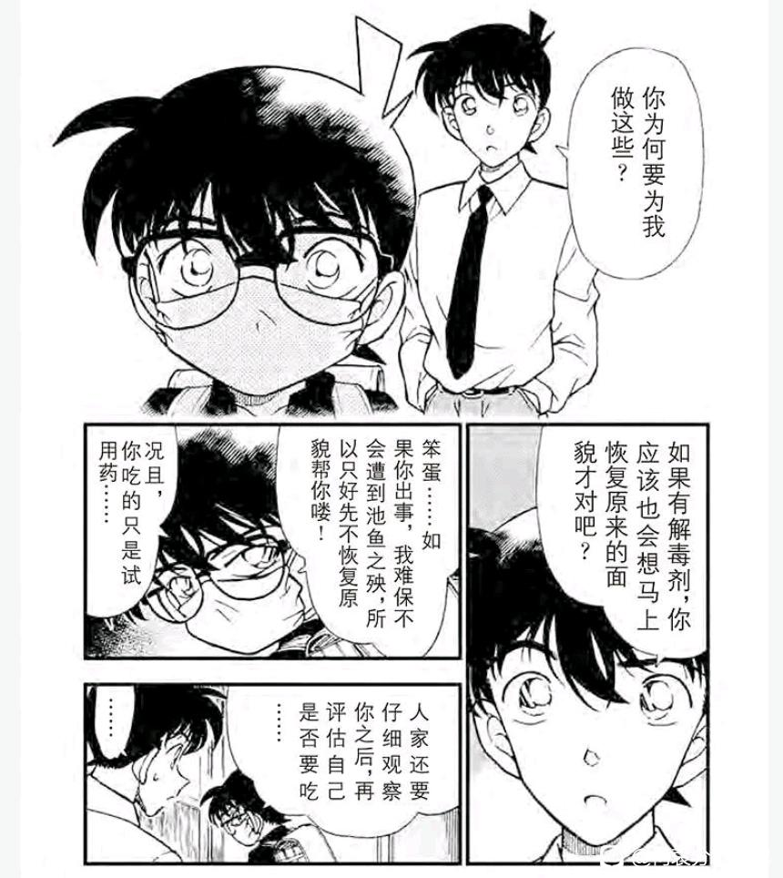
2024-01-13 03:28 | 一叶之秋🌿🍁🍁:我一直感觉这个佐山明子挺像大号的灰原哀，对她有好感。2024-02-11 03:13 | 贴吧用户_7Q86GAQ:我也这么觉得，无条件相信，为对方打掩护才是真爱。反观死罗神兰神的操作

第45天：松本小百合案
这个案件可能是整部名柯中最狗血的案件，除了作案动机还算合理，其他所有方面都给人一种狗血的感觉。
抛开狗血的部分，我们注意到此次出行居然是柯南主动的，而小兰又迟到令园子很不满。这里小兰应该没有迷路，纯粹是时间观念不好，是那种等到最后一刻才出门的人。（这似乎是“你总是考虑周全”的反面特征）
柯南本次主动出行，和小兰毫无关系，纯粹是对初中老师嫁给谁表示好奇，然后，柯南直接被小百合认出来很像新一，甚至直接被小百合摘眼镜！
小百合45天摘柯南的眼镜，小兰完成此成就的时间是第67天落叶缤纷的质问，尽管小百合拥有视角优势，并且同样有初恋滤镜，但她可是独立解题，和小兰在魔术师案那种把答案喂到嘴里完全不是一个难度。
所以小兰平时与新一对话时，该不会完全没有正眼看过他吧💔
这个案件可能是整部名柯中最狗血的案件，除了作案动机还算合理，其他所有方面都给人一种狗血的感觉。
抛开狗血的部分，我们注意到此次出行居然是柯南主动的，而小兰又迟到令园子很不满。这里小兰应该没有迷路，纯粹是时间观念不好，是那种等到最后一刻才出门的人。（这似乎是“你总是考虑周全”的反面特征）
柯南本次主动出行，和小兰毫无关系，纯粹是对初中老师嫁给谁表示好奇，然后，柯南直接被小百合认出来很像新一，甚至直接被小百合摘眼镜！
小百合45天摘柯南的眼镜，小兰完成此成就的时间是第67天落叶缤纷的质问，尽管小百合拥有视角优势，并且同样有初恋滤镜，但她可是独立解题，和小兰在魔术师案那种把答案喂到嘴里完全不是一个难度。
所以小兰平时与新一对话时，该不会完全没有正眼看过他吧💔
整个案件的手法实在是乏善可陈，男方简易投毒，女方欣然接受，逻辑链条完全崩坏，关键三年后双方还能在一起，松本老大甚至不反对。
所以我的注意力不在这些表面情节，而在柯南的急救步骤，根据前文，园子喝柠檬茶，小兰喝咖啡，柯南是乌龙茶。随后小兰又送来了早餐。
（注意，小兰虽然迟到赶来，却连早餐都没有准备，我实在难以想象小兰究竟把时间耽搁在什么地方了，最坏的猜测是小兰每次都是有意迟到，以在园子面前形成心理差距。不过我宁愿相信小兰就是时间观念不好而已）
柯南先用自己的乌龙茶冲洗氢氧化钠，随后依靠迟到的早餐牛奶进行蛋白质冲洗。注意这里柯南的急救并不是完全理性的，既然老师曾经把小新一当成初恋代餐，柯南就进行了更加亲力亲为的急救。
当然，柯南本身是不希望无辜之人死去的，这是他救人的主要原因。但是柯南似乎很难拒绝别人的求助/依靠，这似乎是新兰关系能够维持的重要条件，如果在复盘中，柯南发现小百合事实上是自愿中毒，自己动了感情的专业急救被完全工具化，不知道他会作何感想？
这种反思，会不会在某一天作用在小兰身上呢？
所以我的注意力不在这些表面情节，而在柯南的急救步骤，根据前文，园子喝柠檬茶，小兰喝咖啡，柯南是乌龙茶。随后小兰又送来了早餐。
（注意，小兰虽然迟到赶来，却连早餐都没有准备，我实在难以想象小兰究竟把时间耽搁在什么地方了，最坏的猜测是小兰每次都是有意迟到，以在园子面前形成心理差距。不过我宁愿相信小兰就是时间观念不好而已）
柯南先用自己的乌龙茶冲洗氢氧化钠，随后依靠迟到的早餐牛奶进行蛋白质冲洗。注意这里柯南的急救并不是完全理性的，既然老师曾经把小新一当成初恋代餐，柯南就进行了更加亲力亲为的急救。
当然，柯南本身是不希望无辜之人死去的，这是他救人的主要原因。但是柯南似乎很难拒绝别人的求助/依靠，这似乎是新兰关系能够维持的重要条件，如果在复盘中，柯南发现小百合事实上是自愿中毒，自己动了感情的专业急救被完全工具化，不知道他会作何感想？
这种反思，会不会在某一天作用在小兰身上呢？
2024-02-07 05:34 | 成冰的雨点:当初看这个小百合案的时候我都觉得尬死了。就因为是初恋情人，所以哪怕那么多年都没联系过也不了解对方是个什么人（园子就说男方在圈子里被认为是败家子、靠不住）而且还曾经当过自己好朋友的男友，这些都不管就非嫁不可？爱到了哪怕知道对方要杀自己还甘愿服毒的地步？2024-02-07 05:36 | 成冰的雨点:至于男方，行凶理由倒是充分，可是能给自己的新娘下毒就说明也没怎么爱对方啊，结果听到“初恋情人”四个字就一下子爱情全来了？
十一、小兰的【诱惑力提升】计划（下）：从暗夜男爵到小五郎同学会
经历了幻灭的暗夜男爵案和不知所云的小百合案之后，柯南又可以放松一下了。然而，柯南这次直接踏入少侦的感情世界，只能说一点也不轻松。
发生在第46天的步美绑架案是少侦感情线的起点，其重要性可能仅次于新兰/柯哀感情线，作为最重要的对照组，作者在同一话内为步美，光彦和元太都明示了辅助箭头。
少侦之前发生了什么呢？第26天鬼屋案柯南全力寻找真相，保护步美：第33天大都会案少侦合力寻找真相打倒坏人，第39天消失尸体案三小只成功独立完成任务帮助柯南，此刻柯南与三小只刚好构成了双向帮助关系，可以安排更加核心的内容了。
如果说推理上柯南与三小只完全不可比较，那么情感上，柯南和三小只一样保持在萌新水平，我有的时候甚至会怀疑三小只的情感悟性比柯南还要高不少：
步美喜欢柯南的理由：【即使危险我也不担心，因为柯南一定会保护我的。】这个理由高于小兰喜欢新一的【他虽然是推理狂，可是关键时刻好可靠】，因为步美喜欢的保护是柯南本身面对危险的一部分，而小兰却把推理与可靠对立起来。
光彦喜欢步美的理由：【步美才不笨呢！我的生涯规划里一定有步美。】这个理由高于新一喜欢小兰的青梅竹马，新一/柯南似乎没有勇气在别人贬低小兰能力时为小兰辩护，倒是有【厉害？你说空手道吗？】的负面记录。
元太喜欢步美的理由没有明示，不过其实有若干暗示，元太喜欢的是善良，真实的步美，并勇敢的保护她，这种理由高于新一/柯南对小兰并不特殊的保护。如上话保护小百合，本话保护步美。
怎么回事，新兰关系竟然全面低于三小只各自的单箭头，柯哀可还没出手呢！
经历了幻灭的暗夜男爵案和不知所云的小百合案之后，柯南又可以放松一下了。然而，柯南这次直接踏入少侦的感情世界，只能说一点也不轻松。
发生在第46天的步美绑架案是少侦感情线的起点，其重要性可能仅次于新兰/柯哀感情线，作为最重要的对照组，作者在同一话内为步美，光彦和元太都明示了辅助箭头。
少侦之前发生了什么呢？第26天鬼屋案柯南全力寻找真相，保护步美：第33天大都会案少侦合力寻找真相打倒坏人，第39天消失尸体案三小只成功独立完成任务帮助柯南，此刻柯南与三小只刚好构成了双向帮助关系，可以安排更加核心的内容了。
如果说推理上柯南与三小只完全不可比较，那么情感上，柯南和三小只一样保持在萌新水平，我有的时候甚至会怀疑三小只的情感悟性比柯南还要高不少：
步美喜欢柯南的理由：【即使危险我也不担心，因为柯南一定会保护我的。】这个理由高于小兰喜欢新一的【他虽然是推理狂，可是关键时刻好可靠】，因为步美喜欢的保护是柯南本身面对危险的一部分，而小兰却把推理与可靠对立起来。
光彦喜欢步美的理由：【步美才不笨呢！我的生涯规划里一定有步美。】这个理由高于新一喜欢小兰的青梅竹马，新一/柯南似乎没有勇气在别人贬低小兰能力时为小兰辩护，倒是有【厉害？你说空手道吗？】的负面记录。
元太喜欢步美的理由没有明示，不过其实有若干暗示，元太喜欢的是善良，真实的步美，并勇敢的保护她，这种理由高于新一/柯南对小兰并不特殊的保护。如上话保护小百合，本话保护步美。
怎么回事，新兰关系竟然全面低于三小只各自的单箭头，柯哀可还没出手呢！
2024-01-13 19:37 | 一叶之秋🌿🍁🍁:步美绝对是感情线大佬
本案照例进行少侦战功总结，虽然是乌龙案，但本案的故事逻辑与真的绑架案并没有什么不同，相当于有希子式演习。
光彦：继续划水，光彦在推理方面的突出能力完全被柯南覆盖掉了，他的高光还要很久很久。（为什么光彦很喜欢小哀？因为只有小哀觉察到光彦这种小情绪并加以正向鼓励，这种情感又又又高于新兰关系）
步美与元太继续得分，同样是恐怖环境，步美提供了海量信息，而小兰在面对绷带怪人时甚至没有办法行动。至于元太则完成高光动作并且成为关键，如果是真绑架案且没有元太，步美就完蛋了。
也许有人会觉得三小只的情感分析，对小兰是不公平的，有处处刁难的嫌疑。但是漫画告诉我们，柯南刚经历最纯粹的少侦情感，马上就要进入小五郎同学会，在那里我们将看到，现阶段运转得还不错的柯兰关系，其核心是什么存在。
光彦：继续划水，光彦在推理方面的突出能力完全被柯南覆盖掉了，他的高光还要很久很久。（为什么光彦很喜欢小哀？因为只有小哀觉察到光彦这种小情绪并加以正向鼓励，这种情感又又又高于新兰关系）
步美与元太继续得分，同样是恐怖环境，步美提供了海量信息，而小兰在面对绷带怪人时甚至没有办法行动。至于元太则完成高光动作并且成为关键，如果是真绑架案且没有元太，步美就完蛋了。
也许有人会觉得三小只的情感分析，对小兰是不公平的，有处处刁难的嫌疑。但是漫画告诉我们，柯南刚经历最纯粹的少侦情感，马上就要进入小五郎同学会，在那里我们将看到，现阶段运转得还不错的柯兰关系，其核心是什么存在。
2024-03-10 04:23 | 学习机425:有一说一，要不是哀黑喜欢用光哀拉踩柯哀，我其实很吃光哀。一个一直都很聪明的小孩子遇到了一个挂逼，自己各方面包括感情都比不过挂逼的时候，有一个高冷大姐姐温柔的安慰自己。这不磕爆？
小兰计划的巅峰：小五郎同学会
动画组在处理这一案时，原创了很长一段小五郎追犯人，然后犯人的枪被偷走的故事，原因不明，毕竟本案凶手本身就是刑警，还要偷枪真是莫名其妙。
如果看漫画就明白了，没错，开门见山地小兰拉着柯南泡澡，而且可以说小兰就是在玩柯南。
全过程由小兰策划组织，主动行动，把柯南弄出鼻血，效果比暗夜公爵案好太多了。通过这一套计划，小兰对自己的身材应该充满自信了，所以后续小兰能频繁默许园子将自己的私密照片发给新一，每次都很有效，还能假装打电话要新一删照片，真是一举两得。
唯一的缺陷是这种方法建立的新兰情感，简直廉价到无可救药，但这种廉价方法却成为小兰的第二项基本策略（第一项是巩固小五郎的名气），我们很难看到小兰真的去理解或认同新一，但这类独特的策略却层出不穷，后续还有【工藤宅打扫计划】【手织毛衣计划】等等，全是小兰本身即使目标不是新一也可以做到的事情，小兰真的在和真实的新一恋爱吗？
但这种策略毕竟稳定了前田聪事件后即将再次跳崖的新兰关系，如果柯南永远不成长，这个策略还真能长期生效，问题是柯南刚刚近距离感受最纯粹的三小只的箭头，这种策略终有一天也会被柯南免疫的。
动画组在处理这一案时，原创了很长一段小五郎追犯人，然后犯人的枪被偷走的故事，原因不明，毕竟本案凶手本身就是刑警，还要偷枪真是莫名其妙。
如果看漫画就明白了，没错，开门见山地小兰拉着柯南泡澡，而且可以说小兰就是在玩柯南。
全过程由小兰策划组织，主动行动，把柯南弄出鼻血，效果比暗夜公爵案好太多了。通过这一套计划，小兰对自己的身材应该充满自信了，所以后续小兰能频繁默许园子将自己的私密照片发给新一，每次都很有效，还能假装打电话要新一删照片，真是一举两得。
唯一的缺陷是这种方法建立的新兰情感，简直廉价到无可救药，但这种廉价方法却成为小兰的第二项基本策略（第一项是巩固小五郎的名气），我们很难看到小兰真的去理解或认同新一，但这类独特的策略却层出不穷，后续还有【工藤宅打扫计划】【手织毛衣计划】等等，全是小兰本身即使目标不是新一也可以做到的事情，小兰真的在和真实的新一恋爱吗？
但这种策略毕竟稳定了前田聪事件后即将再次跳崖的新兰关系，如果柯南永远不成长，这个策略还真能长期生效，问题是柯南刚刚近距离感受最纯粹的三小只的箭头，这种策略终有一天也会被柯南免疫的。
2024-01-13 19:42 | 一叶之秋🌿🍁🍁:关键是后面危命的复活篇，小兰还说一起洗澡对小孩子的成长不好，合着大姐你知道呀2024-01-13 20:28 | 🌐之徙:回复 一叶之秋🌿🍁🍁 :所以这里就是拿柯南做活体测试。 之前古董收藏家案，柯南闻一下小兰都不行2024-03-24 15:35 | 洛菲斯♬:柯南真是太可怜了……小孩被青少年女性拉着洗澡，就是遭受性骚扰甚至猥亵。此处兰有看人下菜碟的嫌疑，柯南是不谙世事的小孩，监护人又远在国外，祸害柯南大概率不会被追究，如果这样对待身边有负责监护人的小孩，她和她爸都要吃不了兜着走。
如果我们把思路再扩展一些，小五郎同学会的作案动机是什么呢？
死者女缠着凶手男，男方告白，女方始终不明确回应。然后男方等不下去选择换人，女方不干了骚扰男方家庭，男方怒而杀女方，杀了之后还给衣服脱了。
这里就相当可怕了，偏偏在这样的故事里，小兰选择与柯南亲密接触，更有后来新一表白而小兰吊着，小兰骚扰赤木量子等等一系列举动，新兰关系的不详氛围更上一层楼。
本案的作案手法和动机无关，偏偏作者用了这个别扭的动机，偏偏小兰和本案女死者有泡澡诱惑，小五郎解决案件后的忧郁，真的只是对凶手忧郁吗？他对女儿的情感难道一无所知吗？小五郎见过女儿对赤木量子无端骚扰，他不担心吗？
以上这些只是怀疑，但下一案，小五郎跑到一个选婿会，明面上是蹭吃蹭喝，真的没有为小兰物色其他男性的准备吗？
这是小五郎的同学会，小五郎对案件的手法向来不感兴趣，他在乎的是动机，如果小兰身边已经具备了某种危险的动机，小五郎绝不会没有行动。
死者女缠着凶手男，男方告白，女方始终不明确回应。然后男方等不下去选择换人，女方不干了骚扰男方家庭，男方怒而杀女方，杀了之后还给衣服脱了。
这里就相当可怕了，偏偏在这样的故事里，小兰选择与柯南亲密接触，更有后来新一表白而小兰吊着，小兰骚扰赤木量子等等一系列举动，新兰关系的不详氛围更上一层楼。
本案的作案手法和动机无关，偏偏作者用了这个别扭的动机，偏偏小兰和本案女死者有泡澡诱惑，小五郎解决案件后的忧郁，真的只是对凶手忧郁吗？他对女儿的情感难道一无所知吗？小五郎见过女儿对赤木量子无端骚扰，他不担心吗？
以上这些只是怀疑，但下一案，小五郎跑到一个选婿会，明面上是蹭吃蹭喝，真的没有为小兰物色其他男性的准备吗？
这是小五郎的同学会，小五郎对案件的手法向来不感兴趣，他在乎的是动机，如果小兰身边已经具备了某种危险的动机，小五郎绝不会没有行动。
2024-02-24 12:43 | 雪者风形:版本早了30年……
小时间线第48天，大时间线1995年11月18日，选婿会案是一个少见的完全确定时间的案件。从大时间线看，此时距离柯南变小已经过去近两年，我们大时间线一个月＝小时间线两天的简易公式还是可行的。
本案的死者四井丽花看似有无数舔狗，但其队伍成分严重不纯，四位赘婿候选人中，一枝隆是本次凶手，不怀好意；二阶堂是内定赘婿，有恃无恐；三船是【服部平次先行体验版】，完全是生意人；好像只有年龄最小的五条修是真正意义的舔狗，但也无非是觊觎软饭的家伙。小五郎到这种地方物色新一的替代人选，未免过于失望。
这几个人中，只有三船得到柯南的高度评价，作为小服部的三船能够独立分析小五郎的品质，其对人物的主观认知符合客观事实，后续三船又表现出救人至上和追求真相的理念，不愧是拥有返场资格的路人。
然而小五郎的态度是无视，这人怎么看怎么像新一，小五郎对于这类人毫无好感。至于小兰则更没有行动，【小五郎的名气计划】又出了漏洞，小兰只好忙于补救。
于是，这次案件的柯南反而是最轻松的，不需要考虑小五郎和小兰的心理情况，能够心安理得地嘲笑小五郎。
本案的死者四井丽花看似有无数舔狗，但其队伍成分严重不纯，四位赘婿候选人中，一枝隆是本次凶手，不怀好意；二阶堂是内定赘婿，有恃无恐；三船是【服部平次先行体验版】，完全是生意人；好像只有年龄最小的五条修是真正意义的舔狗，但也无非是觊觎软饭的家伙。小五郎到这种地方物色新一的替代人选，未免过于失望。
这几个人中，只有三船得到柯南的高度评价，作为小服部的三船能够独立分析小五郎的品质，其对人物的主观认知符合客观事实，后续三船又表现出救人至上和追求真相的理念，不愧是拥有返场资格的路人。
然而小五郎的态度是无视，这人怎么看怎么像新一，小五郎对于这类人毫无好感。至于小兰则更没有行动，【小五郎的名气计划】又出了漏洞，小兰只好忙于补救。
于是，这次案件的柯南反而是最轻松的，不需要考虑小五郎和小兰的心理情况，能够心安理得地嘲笑小五郎。
三船的吐槽或许可以解释为什么柯南能迅速与服部变成好朋友，柯南在事务所长期进行表演，压力每天都很大，能有一个同龄朋友吐槽小五郎（甚至包括小兰）是非常重要的。（柯南曾经向博士吐槽，但博士年龄毕竟大，并不能理解柯南的苦恼。至于三小只则并不是很好的吐槽对象）
小服部三船能达成让柯南十分轻松的效果，服部本人的效果可见一斑，而服部人称小灰原，柯南在灰原面前的愉悦程度恐怕又高一个数量级。至于小兰，即使柯南使用变声器等方式上线新一，依然在小兰面前处于无尽的表演状态，挂下电话后是疲惫的，与小兰“捉迷藏”是痛苦的，吐槽小五郎是会被打的。（柯南吐槽小五郎并无恶意，小五郎的一些优势科目是柯南认可的，类似于柯南吐槽服部还没长大）
值得一提的是，三船作为正面人物，他是显然事业重于爱情的，这似乎是作者所推崇的一种特质，而所有主要角色中，似乎只有某个人完全缺乏这个特质……
小服部三船能达成让柯南十分轻松的效果，服部本人的效果可见一斑，而服部人称小灰原，柯南在灰原面前的愉悦程度恐怕又高一个数量级。至于小兰，即使柯南使用变声器等方式上线新一，依然在小兰面前处于无尽的表演状态，挂下电话后是疲惫的，与小兰“捉迷藏”是痛苦的，吐槽小五郎是会被打的。（柯南吐槽小五郎并无恶意，小五郎的一些优势科目是柯南认可的，类似于柯南吐槽服部还没长大）
值得一提的是，三船作为正面人物，他是显然事业重于爱情的，这似乎是作者所推崇的一种特质，而所有主要角色中，似乎只有某个人完全缺乏这个特质……
总之，案件发生了，继绷带怪人案后，小兰又一次受到攻击，并且同样是在柯南的救援下，幻视柯南是新一并死死睡着，最后小兰醒来，身边人告诉她是柯南在救她，剧情上是雷同的，并且后续还会反复出现。
本身这种剧情没有什么问题，而且积累下来可以形成小兰的正向怀疑，对于恋爱喜剧是不错的元素。但是剧情并不是这样发展的，在幻视新一之后，小兰的思维迅速倒退回代餐型柯南，并且继续叫新一推理狂。
在不把小兰当笨蛋的基础上，只剩下一种解释：小兰对于有柯南代餐的现状并没有什么不满意的，相对于面对新一的自卑和脆弱，小兰在柯南面前要轻松自信甚至大胆很多，柯南不能给予的浪漫感则可以靠外置代餐补充，新一从最喜欢的形象，逐渐退化为一种执念了。
紧挨着的下一章服部登场，小兰打电话时甚至没有提到自己幻视新一，或者柯南救他之类的事情，反而因为新一感冒就匆匆挂电话。如果说柯南在小兰面前是长期表演，小兰在新一面前何尝又不是表演呢？
新兰关系的表演成分，让这段感情的纯粹性甚至不如选婿案的二阶堂x四井，这一对可是一起杀过人的亲密关系，互相之间毫无秘密，二阶堂自信放任四井选婿，而四井也专门把其他男人叫做笼中鸟，摆明了要他们陪跑。
如果新兰真的要形成稳定的零表演关系，恐怕真得一起谋杀一个人之类的，换而言之，是不可能的。
本身这种剧情没有什么问题，而且积累下来可以形成小兰的正向怀疑，对于恋爱喜剧是不错的元素。但是剧情并不是这样发展的，在幻视新一之后，小兰的思维迅速倒退回代餐型柯南，并且继续叫新一推理狂。
在不把小兰当笨蛋的基础上，只剩下一种解释：小兰对于有柯南代餐的现状并没有什么不满意的，相对于面对新一的自卑和脆弱，小兰在柯南面前要轻松自信甚至大胆很多，柯南不能给予的浪漫感则可以靠外置代餐补充，新一从最喜欢的形象，逐渐退化为一种执念了。
紧挨着的下一章服部登场，小兰打电话时甚至没有提到自己幻视新一，或者柯南救他之类的事情，反而因为新一感冒就匆匆挂电话。如果说柯南在小兰面前是长期表演，小兰在新一面前何尝又不是表演呢？
新兰关系的表演成分，让这段感情的纯粹性甚至不如选婿案的二阶堂x四井，这一对可是一起杀过人的亲密关系，互相之间毫无秘密，二阶堂自信放任四井选婿，而四井也专门把其他男人叫做笼中鸟，摆明了要他们陪跑。
如果新兰真的要形成稳定的零表演关系，恐怕真得一起谋杀一个人之类的，换而言之，是不可能的。
分割线：第49天，服部平次登场
------
------
十二、雪崩的重启：新兰关系的第二次下降
新兰关系的第一次下降始于绷带怪人案，柯南首次目睹小兰吃代餐，随后由于外部压力（有希子演习）矛盾暂时掩盖，但在小兰若干计划（包括赤木量子流眼泪与身材诱惑力计划）的作用下，下降的势头暂时被遏制。虽然还是有前田聪这种危险事件，但小兰通过小五郎同学会的极端行为，还是勉强撑住了。
而第二次下降，随着服部平次的到来而到来，小兰做出对柯南来说完全无法理解的事情：对着服部露出相当花痴的表情。
如果结合直到和叶登场后的几次案件，小兰可不只是凝视服部而已，她是真的有进行某些攻略活动的，如果说绑带怪人时的帅哥和前田聪算是男方主动，达也算追星，抱横沟有所谓正当理由，和麻生成实睡觉反正不知道对方是男的，把柯南当代餐反正也无所谓，那么这里攻略服部是真的说不过去了。
柯南究竟还有多少耐心应付这段感情？
新兰关系的第一次下降始于绷带怪人案，柯南首次目睹小兰吃代餐，随后由于外部压力（有希子演习）矛盾暂时掩盖，但在小兰若干计划（包括赤木量子流眼泪与身材诱惑力计划）的作用下，下降的势头暂时被遏制。虽然还是有前田聪这种危险事件，但小兰通过小五郎同学会的极端行为，还是勉强撑住了。
而第二次下降，随着服部平次的到来而到来，小兰做出对柯南来说完全无法理解的事情：对着服部露出相当花痴的表情。
如果结合直到和叶登场后的几次案件，小兰可不只是凝视服部而已，她是真的有进行某些攻略活动的，如果说绑带怪人时的帅哥和前田聪算是男方主动，达也算追星，抱横沟有所谓正当理由，和麻生成实睡觉反正不知道对方是男的，把柯南当代餐反正也无所谓，那么这里攻略服部是真的说不过去了。
柯南究竟还有多少耐心应付这段感情？
由于选婿会上，柯南大晚上不睡觉硬喝咖啡，雨天在室外跑来跑去还得急救小兰，最后破案又淋了一身水，很快就进入感冒状态。
而毕竟选婿案中小兰提到新一了，出于不要让小兰担心的目的，柯南给小兰打了一通电话，结果遭受了小兰的无理取闹，小兰完全无视新一感冒的原因，仿佛感冒是新一的错，并要求新一回来，随后竟然找个理由直接挂断电话，（显然有客人到并不需要挂电话，哪怕暂时搁置一下呢？）
充分说明小兰此刻并没有那么想与新一沟通，前面提到，自从小兰开发了诱惑柯南的方案，柯南的代餐功能就日益完善了，小兰也许在新一出现时很想见他，但只要新一不出现，那与前田聪仰望星空却是心安理得，小兰心中新一的形象进一步失真。
而对柯南来讲，这绝不是令人开心的事情，柯南心中的小兰形象一直在崩坠，但这次“感冒的人总是更伤心”，新兰关系的这次双向危机，比第一次单向危机更加严重。
就在此时，服部平次登场了，和灰原/有希子一样，服部也把柯南耍的团团转，让我们进入服部平次的视角，看看新兰关系此时是如何处于雪崩的开端吧。
而毕竟选婿案中小兰提到新一了，出于不要让小兰担心的目的，柯南给小兰打了一通电话，结果遭受了小兰的无理取闹，小兰完全无视新一感冒的原因，仿佛感冒是新一的错，并要求新一回来，随后竟然找个理由直接挂断电话，（显然有客人到并不需要挂电话，哪怕暂时搁置一下呢？）
充分说明小兰此刻并没有那么想与新一沟通，前面提到，自从小兰开发了诱惑柯南的方案，柯南的代餐功能就日益完善了，小兰也许在新一出现时很想见他，但只要新一不出现，那与前田聪仰望星空却是心安理得，小兰心中新一的形象进一步失真。
而对柯南来讲，这绝不是令人开心的事情，柯南心中的小兰形象一直在崩坠，但这次“感冒的人总是更伤心”，新兰关系的这次双向危机，比第一次单向危机更加严重。
就在此时，服部平次登场了，和灰原/有希子一样，服部也把柯南耍的团团转，让我们进入服部平次的视角，看看新兰关系此时是如何处于雪崩的开端吧。
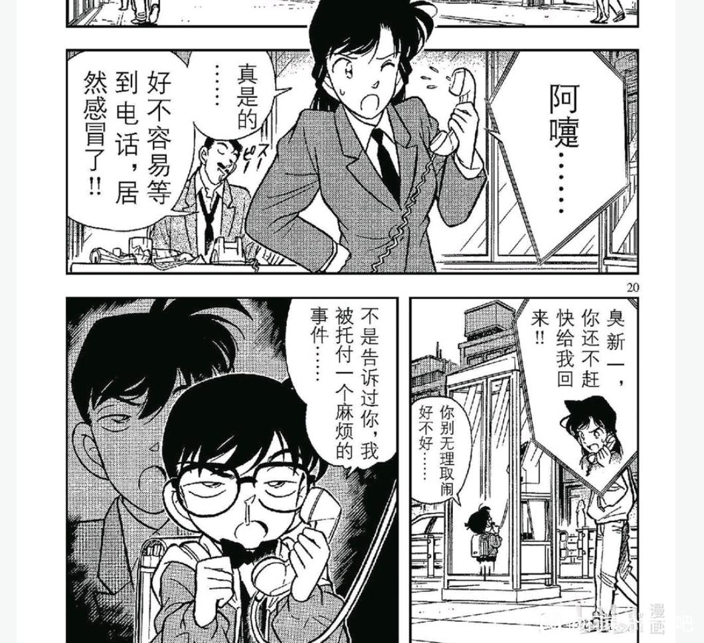
2024-02-24 12:48 | 雪者风形:感冒的人总是更伤心这个太真实了，比方说我五六年前感冒时写的碧蓝同人就是男女主一起去世End（）
服部视角：
我是高中生侦探服部平次，某天我和青梅竹马远山和叶在雪山玩，意外得知了工藤新一的存在。虽然没见过面，可是我听说工藤解决了很多案件，并且最近突然失踪了。
为了找到工藤新一，我前往关东，有个叫铃木的富婆告诉我工藤的女人一定知道他的下落，我本来不信，可是这位毛利小姐确实知道工藤在感冒，还是工藤告诉她的，看来至少工藤对她是有好感的，但是有好感的人，会一直不出现吗？
通过询问，我又发现工藤给她打电话，从来只聊他自己的事情，竟然都不过问对方的近况，显然工藤对毛利的生活了如指掌，不，他应该随时可以与毛利见面才对，这与其说是有好感，不如说是一直在隐瞒什么吧……而且工藤也不花点心思消除这些疑点，要是我这么监视和叶（可以吗？），一定早就被她发现了。
工藤的女人虽然看起来很关注工藤，但是对这些重要的细节却完全不知道，她该不会对推理一窍不通吧……而且看样子，毛利甚至没有主动找过工藤（我每次跑路都被和叶知道，有的时候还被她跟踪，伤脑筋），看来那个富婆的话有很多夸张成分。
可恶，既然如此，我就把工藤找出来当面问他好了！皮肤虽然很黑，头脑却还是很好，真相只有一个！
我是高中生侦探服部平次，某天我和青梅竹马远山和叶在雪山玩，意外得知了工藤新一的存在。虽然没见过面，可是我听说工藤解决了很多案件，并且最近突然失踪了。
为了找到工藤新一，我前往关东，有个叫铃木的富婆告诉我工藤的女人一定知道他的下落，我本来不信，可是这位毛利小姐确实知道工藤在感冒，还是工藤告诉她的，看来至少工藤对她是有好感的，但是有好感的人，会一直不出现吗？
通过询问，我又发现工藤给她打电话，从来只聊他自己的事情，竟然都不过问对方的近况，显然工藤对毛利的生活了如指掌，不，他应该随时可以与毛利见面才对，这与其说是有好感，不如说是一直在隐瞒什么吧……而且工藤也不花点心思消除这些疑点，要是我这么监视和叶（可以吗？），一定早就被她发现了。
工藤的女人虽然看起来很关注工藤，但是对这些重要的细节却完全不知道，她该不会对推理一窍不通吧……而且看样子，毛利甚至没有主动找过工藤（我每次跑路都被和叶知道，有的时候还被她跟踪，伤脑筋），看来那个富婆的话有很多夸张成分。
可恶，既然如此，我就把工藤找出来当面问他好了！皮肤虽然很黑，头脑却还是很好，真相只有一个！
2024-01-18 07:25 | 破星裂:服部这段太好玩了
我们再从小兰视角看一下服部。
小兰的第一印象是：这家伙是来找工藤茬的，因此在一开始对服部的态度相当差。然而当服部展现推理能力，并且放出“工藤可能会出现”这种诱饵的时候，小兰几乎是无条件地相信了服部。
服部的所谓工藤在窥视小兰，本来就没有任何证据，并且也没有给出工藤可能出现的理由。小兰本可以不相信的（事实上一开始也确实不想去），为什么小兰的态度能迅速转变？唯一的解释是，面对【认为自己是“工藤的女人”】的服部，小兰绝不可以在服部说【可能找到工藤】时选择不去。她必须强迫自己去，仿佛在进行角色扮演一样。
在案发现场，服部生气地将柯南赶走，并质问小兰“没有照顾好小孩”，小兰这里的反映相当有趣，如果按照一般的逻辑，应该是“这孩子总能发现一些不得了的证据”，至少小兰要强调柯南在玩推理游戏（例如面对麻生成实的时候），但这里的小兰给我一种气场完全被压制的感觉，怀抱柯南的小兰仿佛完全被服部的逻辑牵着走，直接向服部道歉。
如果延续之前的解释，那就是小兰为了维护自己在服部心中的【工藤的女人】标签，选择接受了服部的话术，似乎小兰对侦探的女朋友该做什么没什么概念，她在服部面前试图展示的形象与侦探的女朋友相去甚远，而更像一个不那么合格的监护人。
小兰的第一印象是：这家伙是来找工藤茬的，因此在一开始对服部的态度相当差。然而当服部展现推理能力，并且放出“工藤可能会出现”这种诱饵的时候，小兰几乎是无条件地相信了服部。
服部的所谓工藤在窥视小兰，本来就没有任何证据，并且也没有给出工藤可能出现的理由。小兰本可以不相信的（事实上一开始也确实不想去），为什么小兰的态度能迅速转变？唯一的解释是，面对【认为自己是“工藤的女人”】的服部，小兰绝不可以在服部说【可能找到工藤】时选择不去。她必须强迫自己去，仿佛在进行角色扮演一样。
在案发现场，服部生气地将柯南赶走，并质问小兰“没有照顾好小孩”，小兰这里的反映相当有趣，如果按照一般的逻辑，应该是“这孩子总能发现一些不得了的证据”，至少小兰要强调柯南在玩推理游戏（例如面对麻生成实的时候），但这里的小兰给我一种气场完全被压制的感觉，怀抱柯南的小兰仿佛完全被服部的逻辑牵着走，直接向服部道歉。
如果延续之前的解释，那就是小兰为了维护自己在服部心中的【工藤的女人】标签，选择接受了服部的话术，似乎小兰对侦探的女朋友该做什么没什么概念，她在服部面前试图展示的形象与侦探的女朋友相去甚远，而更像一个不那么合格的监护人。
2024-02-13 11:42 | 贴吧用户_GCMEMPJ:+1
接下来服部的形象在小兰眼中进行了多次升级。
首先服部这里正常分析了死者的死因和死亡时间，这里原本是小五郎，服部和目暮在交流案情，但突然插入了小兰的镜头。
我们注意到，小五郎和目暮都在认真听，并且各自流汗，显然是对死者的死法和死亡时间震惊，但是小兰的表情是没有表情，似乎没有听推理内容，而主要关注服部推理时的形象。小兰此时应该是觉得服部的样子很像新一，但还没有打算当代餐来吃。
而后目暮表示平次是平藏的儿子，小兰立刻脸颊粉红，直接幻视新一。
如果小兰在目暮的介绍前幻视，还可以解释为小兰就是喜欢侦探型男生（但不喜欢侦探过程），但偏偏是在目暮后幻视，连代餐都变得有些功利和俗气，仿佛服部的代餐只是小兰名气计划的一个目标。
当然，小兰此时还没有真正的行动，就被柯南的哈欠打断，这和绷带怪人时期的闪电是一样的，外部突发事件可以暂时让小兰离开代餐状态，要是一直没有外部事件，小兰大概会享受很久后，在最后一刻退缩，新出医生和基德等表示习惯。
首先服部这里正常分析了死者的死因和死亡时间，这里原本是小五郎，服部和目暮在交流案情，但突然插入了小兰的镜头。
我们注意到，小五郎和目暮都在认真听，并且各自流汗，显然是对死者的死法和死亡时间震惊，但是小兰的表情是没有表情，似乎没有听推理内容，而主要关注服部推理时的形象。小兰此时应该是觉得服部的样子很像新一，但还没有打算当代餐来吃。
而后目暮表示平次是平藏的儿子，小兰立刻脸颊粉红，直接幻视新一。
如果小兰在目暮的介绍前幻视，还可以解释为小兰就是喜欢侦探型男生（但不喜欢侦探过程），但偏偏是在目暮后幻视，连代餐都变得有些功利和俗气，仿佛服部的代餐只是小兰名气计划的一个目标。
当然，小兰此时还没有真正的行动，就被柯南的哈欠打断，这和绷带怪人时期的闪电是一样的，外部突发事件可以暂时让小兰离开代餐状态，要是一直没有外部事件，小兰大概会享受很久后，在最后一刻退缩，新出医生和基德等表示习惯。
随着案件的侦办，柯南的感冒越来越重。和服部的想象完全不同，柯南此时已经在作画上向读者传达极端难受的信息，然而这个状态下柯南仍然挣扎着办案，到处找线索，哪怕是模糊的照片也被柯南大致记忆。
但小兰却在此时，【抓住了生病的柯南的连衣帽，把他提了回来】，然后说【不要打扰服部办案】。如果说，天下一夜祭小兰为了维护小五郎的名气，不惜拖拽柯南的气球线，那么这里，小兰就几乎是为了自己代餐的舒适感，把柯南的帽子往后拉，这可是病人啊！
柯南的第一反应是“呃？”，首先是疑惑，柯南习惯了小兰【不要打扰爸爸办案哦】，但是不要打扰服部还是头一次听，大惑不解的柯南选择看看服部再看看小兰，然后宕机了。
【柯南看到小兰在对着其他高中生侦探犯花痴，这个表情大概和小兰看新一踢足球的表情差不多。但柯南从来没有在自己推理时看见小兰这样的崇拜表情】
柯南曾以为自己有特殊性，今天柯南发现自己的特殊性是只有他推理时不会被小兰欣赏。
如果小兰只是和帅哥雨中漫步，和前田聪仰望星空，柯南会不爽和愤怒，但这里柯南的表情是伤心，我感觉泪珠都要出来了。
【小兰不是不喜欢推理，她是不喜欢新一推理，其他人推理她很欣赏】
柯南倒下了，新兰感情的又一次雪崩开始了。
但小兰却在此时，【抓住了生病的柯南的连衣帽，把他提了回来】，然后说【不要打扰服部办案】。如果说，天下一夜祭小兰为了维护小五郎的名气，不惜拖拽柯南的气球线，那么这里，小兰就几乎是为了自己代餐的舒适感，把柯南的帽子往后拉，这可是病人啊！
柯南的第一反应是“呃？”，首先是疑惑，柯南习惯了小兰【不要打扰爸爸办案哦】，但是不要打扰服部还是头一次听，大惑不解的柯南选择看看服部再看看小兰，然后宕机了。
【柯南看到小兰在对着其他高中生侦探犯花痴，这个表情大概和小兰看新一踢足球的表情差不多。但柯南从来没有在自己推理时看见小兰这样的崇拜表情】
柯南曾以为自己有特殊性，今天柯南发现自己的特殊性是只有他推理时不会被小兰欣赏。
如果小兰只是和帅哥雨中漫步，和前田聪仰望星空，柯南会不爽和愤怒，但这里柯南的表情是伤心，我感觉泪珠都要出来了。
【小兰不是不喜欢推理，她是不喜欢新一推理，其他人推理她很欣赏】
柯南倒下了，新兰感情的又一次雪崩开始了。
小兰用这种表情看着服部，竟然到了目不转睛的地步，柯南由于白干作用【胸口痛】（心痛），想的是“先解决案件，再把服部撵走（也就是处理小兰的感情问题）”，柯南的事件优先级仍然是先案件后感情，只是这里的【后感情】，总有些逃避的味道。
而在柯南痛苦时，小兰并没有停止代餐行为。我们注意这两张图的分镜，中间穿插了服部的破案，并不是衔接的。也就是柯南痛苦捂胸时，小兰只是看了一眼，就转身继续看服部，直到柯南重重倒地，小兰才转头（甚至没有转身）去照顾柯南。
和柯南心中有优先级一样，小兰心中也有优先级，看服部吃代餐是优先的，关照柯南是次要的。小兰对新一和柯南的感冒一视同仁地不重视，我甚至怀疑柯南后来在小哀感冒时一直尽力照顾，很大可能是柯南自己体会过感冒没人管的痛苦。
而在柯南痛苦时，小兰并没有停止代餐行为。我们注意这两张图的分镜，中间穿插了服部的破案，并不是衔接的。也就是柯南痛苦捂胸时，小兰只是看了一眼，就转身继续看服部，直到柯南重重倒地，小兰才转头（甚至没有转身）去照顾柯南。
和柯南心中有优先级一样，小兰心中也有优先级，看服部吃代餐是优先的，关照柯南是次要的。小兰对新一和柯南的感冒一视同仁地不重视，我甚至怀疑柯南后来在小哀感冒时一直尽力照顾，很大可能是柯南自己体会过感冒没人管的痛苦。
由于柯南显然重病，小兰不得不从代餐位离开，开始照顾柯南，然而我并没有发现小兰有任何实际的照顾举动。
在将小兰送到其他房间的路上，小兰依然目不转睛地看着服部，与此对应的是柯南竟然还在关注服部破案的细节，此时柯南已经知道服部这种弄法要搞出冤案的，相比于自己的生命，他更关注案件的真相和服部侦探生涯的成长。至于小兰，怀中发高烧的柯南似乎完全比不上服部制造冤案的英姿。我始终认为小兰根本没听具体案情，只是追求服部和新一的表面相似而已。
进入房间的小兰，没有任何急救手段，我们知道柯南是急救专家，曾经靠乌龙茶和牛奶救了小百合老师一命，而光彦也在柯南的言传身教中具备了相当优秀的急救知识（甚至高于小哀），但是小兰这里的做法完全对不住她青梅竹马的身份，把高烧病人摇晃并且喊“振作点”是什么操作？如果最恶意的猜测成立的话：
【小兰把柯南从现场支走，只是希望柯南的病不影响服部办案，这样把柯南安置后，小兰还能继续去吃代餐】
而柯南的情况比小兰想象的更严重，这时小兰做出了更夸张的行为：离开柯南去找已经上门的医生。
这个医生是目暮警官他们叫的，且不说小兰的寻路能力十分低下，医生进入大厅就能看到目暮等人，很快就能被引导到柯南处，小兰根本不需要去拉医生过来，这里小兰的行为只有一个解释：
【小兰心善，见不得柯南受苦。】
就像新一感冒了，小兰随便找理由挂断电话，这里柯南已经感觉死亡逼近了，小兰却逃跑了，同样的剧情再次出现。不错，这里有为剧情服务的考虑，柯南变大要支走小兰，那么不能是小兰去找冰箱拿冰块吗？为什么是找医生这个根本无效的理由？
因为小兰就是这样的人物形象，一直没变过，她的行为是那么容易预测，那么让柯南心灰意冷。
在将小兰送到其他房间的路上，小兰依然目不转睛地看着服部，与此对应的是柯南竟然还在关注服部破案的细节，此时柯南已经知道服部这种弄法要搞出冤案的，相比于自己的生命，他更关注案件的真相和服部侦探生涯的成长。至于小兰，怀中发高烧的柯南似乎完全比不上服部制造冤案的英姿。我始终认为小兰根本没听具体案情，只是追求服部和新一的表面相似而已。
进入房间的小兰，没有任何急救手段，我们知道柯南是急救专家，曾经靠乌龙茶和牛奶救了小百合老师一命，而光彦也在柯南的言传身教中具备了相当优秀的急救知识（甚至高于小哀），但是小兰这里的做法完全对不住她青梅竹马的身份，把高烧病人摇晃并且喊“振作点”是什么操作？如果最恶意的猜测成立的话：
【小兰把柯南从现场支走，只是希望柯南的病不影响服部办案，这样把柯南安置后，小兰还能继续去吃代餐】
而柯南的情况比小兰想象的更严重，这时小兰做出了更夸张的行为：离开柯南去找已经上门的医生。
这个医生是目暮警官他们叫的，且不说小兰的寻路能力十分低下，医生进入大厅就能看到目暮等人，很快就能被引导到柯南处，小兰根本不需要去拉医生过来，这里小兰的行为只有一个解释：
【小兰心善，见不得柯南受苦。】
就像新一感冒了，小兰随便找理由挂断电话，这里柯南已经感觉死亡逼近了，小兰却逃跑了，同样的剧情再次出现。不错，这里有为剧情服务的考虑，柯南变大要支走小兰，那么不能是小兰去找冰箱拿冰块吗？为什么是找医生这个根本无效的理由？
因为小兰就是这样的人物形象，一直没变过，她的行为是那么容易预测，那么让柯南心灰意冷。
2024-03-24 18:51 | 洛菲斯♬:结合本篇和死罗神篇兰的表现来看，就是新一本人在她面前露出极度痛苦的神情，她也会不管不顾，顶多是从离开人去找医生变成黏着人去找医生。
柯南失踪后，小兰终于感到慌张了--慌张了一页纸。
小兰的视角里新一出现了，此时刚才对服部的花痴，对柯南的担忧，全部就像没发生过一样消失了。
完全消失了。
如果服部的理论成立，新一将看到小兰对服部花痴；如果柯南还在生病吐血，他现在最需要医生。
但小兰仿佛一瞬间忘记了上述所有事情，甚至忘记眼前的新一也是感冒的，她直接发动三连问：
“你到底去哪了？”（然而小兰从来没有在电话中过问一下具体是什么案子）
“我还以为你发生什么意外了！”（新一早上才和小兰通话！而且卡拉OK和赤木量子两案都见过面！）
“你知道我有多担心你吗？”（听说感冒挂电话，转头对着服部吃代餐？）
新一肯定是没空管小兰的，赶紧帮服部纠错才是重要的，并且此时新一应该是认为自己已经永久变大，之前对小兰的失望有所缓和，所以他直接要求小兰等一等。不过另一种解释是新一急于推理，根本就没听清小兰的三连问，否则新一高低得腹诽两句，“说什么多担心我，我生病的时候还不是去吃代餐了……”（半月眼）
小兰的视角里新一出现了，此时刚才对服部的花痴，对柯南的担忧，全部就像没发生过一样消失了。
完全消失了。
如果服部的理论成立，新一将看到小兰对服部花痴；如果柯南还在生病吐血，他现在最需要医生。
但小兰仿佛一瞬间忘记了上述所有事情，甚至忘记眼前的新一也是感冒的，她直接发动三连问：
“你到底去哪了？”（然而小兰从来没有在电话中过问一下具体是什么案子）
“我还以为你发生什么意外了！”（新一早上才和小兰通话！而且卡拉OK和赤木量子两案都见过面！）
“你知道我有多担心你吗？”（听说感冒挂电话，转头对着服部吃代餐？）
新一肯定是没空管小兰的，赶紧帮服部纠错才是重要的，并且此时新一应该是认为自己已经永久变大，之前对小兰的失望有所缓和，所以他直接要求小兰等一等。不过另一种解释是新一急于推理，根本就没听清小兰的三连问，否则新一高低得腹诽两句，“说什么多担心我，我生病的时候还不是去吃代餐了……”（半月眼）
2024-03-24 18:55 | 洛菲斯♬:兰没有更早确认柯南就是新一，和她对柯南与新一的高度冷漠是相关的，但凡对两人的病情上点心，就会发现两人同时感冒且不同时出现的疑点
案件结束，服部被打脸。此时小兰已经注意到新一流了很多汗，不过按照正常人的思路，此时应该去找柯南才对，但是小兰没有，漫画中专门画了一个镜头，让小兰和小五郎一起听新一推理（但没有实质作用），明示小兰完全忘记了柯南的事情。
然而即使案件结束，小兰也丝毫没想起柯南，而是对着新一进行了莫名其妙的质问，新一这次编的谎话还算及格，逻辑基本自洽，并且提到了柯南（小兰还是没想起来柯南需要急救），但小兰的脑回路确实夸张，【一定是偷看我担心的样子嘲笑我】，且不说嘲笑的问题，小兰真的担心过吗？好像只有新一变小第一周真正担心过吧！
这种以受害人自居的策略似乎曾经有效，但现在完全无效了。赤木量子以受害者自居，是当时柯南真的在欺骗小兰，但这里小兰的连环三问完全站不住脚，甚至说着说着自己说不下去了（因为本来就没有很担心新一嘛！）
所以新一的回答突出一个敷衍，“我是名侦探当然知道一切了”，这个话术好像是柯南被有希子绑架时，对着酒店的小孩使用的话术💔拿小兰当孩子骗，比骗少侦容易多了，毕竟小兰也不需要真正的答案，不是吗？
然而即使案件结束，小兰也丝毫没想起柯南，而是对着新一进行了莫名其妙的质问，新一这次编的谎话还算及格，逻辑基本自洽，并且提到了柯南（小兰还是没想起来柯南需要急救），但小兰的脑回路确实夸张，【一定是偷看我担心的样子嘲笑我】，且不说嘲笑的问题，小兰真的担心过吗？好像只有新一变小第一周真正担心过吧！
这种以受害人自居的策略似乎曾经有效，但现在完全无效了。赤木量子以受害者自居，是当时柯南真的在欺骗小兰，但这里小兰的连环三问完全站不住脚，甚至说着说着自己说不下去了（因为本来就没有很担心新一嘛！）
所以新一的回答突出一个敷衍，“我是名侦探当然知道一切了”，这个话术好像是柯南被有希子绑架时，对着酒店的小孩使用的话术💔拿小兰当孩子骗，比骗少侦容易多了，毕竟小兰也不需要真正的答案，不是吗？
与对小兰的敷衍相反，新一对服部颇有种【孺子可教】的感情，服部出场时水平是差新一不少的，但服部三观与新一接近，又从新一身上学到了非常多的人文关怀和价值判断，成长速度惊人，甚至反过来帮助柯南成长（第148天，大阪3K事件）
背对着小兰说敷衍的话，小兰眼镜含泪但并没有什么效果。
正对着服部说着简单又复杂的道理，服部听进去了，并且立刻开始觉得工藤的感冒不太对劲。
两个分镜传递着新一的价值取向，如果将服部视为小灰原，我们可以发现更有趣的事情：服部对着新一【我赢了！】，小哀对着柯南【将死】，然后被柯南以完美的方式找到真相，并成为服部和小哀最重要的回忆之一。
小兰似乎也有类似的回忆，但总是有很大的噪声，从帮前田聪找证据到拉窗帘“不希望任何人死”，如果说小哀的滤镜是男友滤镜，小兰的滤镜是什么？降智滤镜？
背对着小兰说敷衍的话，小兰眼镜含泪但并没有什么效果。
正对着服部说着简单又复杂的道理，服部听进去了，并且立刻开始觉得工藤的感冒不太对劲。
两个分镜传递着新一的价值取向，如果将服部视为小灰原，我们可以发现更有趣的事情：服部对着新一【我赢了！】，小哀对着柯南【将死】，然后被柯南以完美的方式找到真相，并成为服部和小哀最重要的回忆之一。
小兰似乎也有类似的回忆，但总是有很大的噪声，从帮前田聪找证据到拉窗帘“不希望任何人死”，如果说小哀的滤镜是男友滤镜，小兰的滤镜是什么？降智滤镜？
开导完服部，新一又要变小了，在彻底变小前新一的执念是“和小兰说一句话”
这句话是什么呢？结合上下文，有这么几种可能性：
1、表白，这是最不可能的。
2、回答小兰的连环三问，可能性不太大，因为这三问并没有可以回答的地方。
3、希望小兰告诉目暮警官，案件中不要出现新一的名字。可能性很大，事实上变回柯南后这件事情完成了。
4、柯南变大前需要破案和解决感情问题（当时想赶走服部），现在破案破了，新一可能想表达对小兰吃代餐的不满（如果新一彻底变大，这是很可能要做的）
不论新一是怎么想的，小兰仿佛两个世界的人，小兰对新一和柯南的病情完全不关心，又是对新一跑路不满，又是对柯南躲起来不满。
柯南将昏迷三天，他有一些时间来思考小兰的问题，而小兰则脑补了一出新一骗她的戏码，雪崩的新兰感情，还能停下来吗？
这句话是什么呢？结合上下文，有这么几种可能性：
1、表白，这是最不可能的。
2、回答小兰的连环三问，可能性不太大，因为这三问并没有可以回答的地方。
3、希望小兰告诉目暮警官，案件中不要出现新一的名字。可能性很大，事实上变回柯南后这件事情完成了。
4、柯南变大前需要破案和解决感情问题（当时想赶走服部），现在破案破了，新一可能想表达对小兰吃代餐的不满（如果新一彻底变大，这是很可能要做的）
不论新一是怎么想的，小兰仿佛两个世界的人，小兰对新一和柯南的病情完全不关心，又是对新一跑路不满，又是对柯南躲起来不满。
柯南将昏迷三天，他有一些时间来思考小兰的问题，而小兰则脑补了一出新一骗她的戏码，雪崩的新兰感情，还能停下来吗？
好好好，收藏了
cy
小时间线第52天，柯南从昏迷中醒来。
在小兰的视角里，柯南和新一同时重病并倒下，我们不清楚小兰能不能进行一些联想，不过小兰的行动是可以推测的。
小兰确实是在照顾生病的柯南，相比之前睡在垃圾堆，这次柯南确实是睡在一个不错的地方。柯南出门后，可以发现小五郎的桌面还算整洁，白干没有被喝，而且小五郎真的在睡觉（而不是在看电视或喝酒），显然柯南睡了小五郎的床，小五郎在外面将就睡了一晚，甚至小五郎把桌子方向转了一下，可以看到柯南的房间，这样柯南有事情时可以立刻注意（柯南的报纸应该是小五郎给的）
看起来好像小兰照顾得还不错，但这其实意味着柯南【到现在为止还没有固定的床位】，如果从大时间线上看，之后的雪山案是1996年2月24日，相当于此时柯南已经打了两年的地铺💔即使小时间线，那也是一个多月的地铺了，有希子的抚养费呢？
小兰还有一个选择，就是像绷带怪人案一样在自己房间弄个柯南的床，但是小兰不仅没有这么做，还把小五郎的床腾出来了，结合小兰对新一感冒避之不及的情况，她似乎尤其担心自己被传染。
与小兰的情况相反，当柯南生病时，小五郎总是相当照顾的，危命复活时是小五郎在床边，OVA10（如果算正史的话）也是小五郎照顾柯南。我不进好奇，如果“天空的遇难船”是柯南/新一疑似生病，小兰会有什么样的反应？
在小兰的视角里，柯南和新一同时重病并倒下，我们不清楚小兰能不能进行一些联想，不过小兰的行动是可以推测的。
小兰确实是在照顾生病的柯南，相比之前睡在垃圾堆，这次柯南确实是睡在一个不错的地方。柯南出门后，可以发现小五郎的桌面还算整洁，白干没有被喝，而且小五郎真的在睡觉（而不是在看电视或喝酒），显然柯南睡了小五郎的床，小五郎在外面将就睡了一晚，甚至小五郎把桌子方向转了一下，可以看到柯南的房间，这样柯南有事情时可以立刻注意（柯南的报纸应该是小五郎给的）
看起来好像小兰照顾得还不错，但这其实意味着柯南【到现在为止还没有固定的床位】，如果从大时间线上看，之后的雪山案是1996年2月24日，相当于此时柯南已经打了两年的地铺💔即使小时间线，那也是一个多月的地铺了，有希子的抚养费呢？
小兰还有一个选择，就是像绷带怪人案一样在自己房间弄个柯南的床，但是小兰不仅没有这么做，还把小五郎的床腾出来了，结合小兰对新一感冒避之不及的情况，她似乎尤其担心自己被传染。
与小兰的情况相反，当柯南生病时，小五郎总是相当照顾的，危命复活时是小五郎在床边，OVA10（如果算正史的话）也是小五郎照顾柯南。我不进好奇，如果“天空的遇难船”是柯南/新一疑似生病，小兰会有什么样的反应？
2024-02-11 03:46 | 贴吧用户_7Q86GAQ:小五郎虽然总是揍柯南，但我感觉他对柯南比兰神上心2024-03-15 06:20 | 炙颜汐:我记得红修篇告白之后，小柯还是打的地铺来着
接下来我们将看到奇怪的一幕：柯南以小人之心，度元太光彦之腹。柯南认为只有步美是真的来看他，元太和光彦只是陪着步美，这显然是不对的，三小只应该已经发现柯南在的话，事情会有趣和可靠得多。
元太在图书馆发现警车时，立刻通知柯南，甚至让出了观景位给其他三位伙伴：光彦则注意到柯南心情不好，一直在开元太的玩笑（被元太的小五郎拳揍了几次），柯南对于元太和光彦的分析根本就是完全错误。
但这种错误有迹可循，柯南在步美绑架案中乱入了三小只的感情世界，而此时的柯南根本不认识除了小兰外其他有实时恋爱情况的人（园子单身，服部不熟），所以柯南的解释是：
【小兰本来不想去外交官家，只是因为可能碰到新一，才跟着服部去】推导出：
【所以元太和光彦肯定不想来，只是想陪着步美而已，步美来的原因是喜欢我】
柯南的恋爱白痴属性，可以说是小兰造就的，柯南匮乏的数据集实在难以得出正确的结论，偏偏数据集里的小兰还是相当稀奇的一种恋爱脑。而作者恰恰在灰原哀登场后，迅速增加了以高佐为代表的一大堆感情线，帮柯南“开窍”，理由不言自明。
元太在图书馆发现警车时，立刻通知柯南，甚至让出了观景位给其他三位伙伴：光彦则注意到柯南心情不好，一直在开元太的玩笑（被元太的小五郎拳揍了几次），柯南对于元太和光彦的分析根本就是完全错误。
但这种错误有迹可循，柯南在步美绑架案中乱入了三小只的感情世界，而此时的柯南根本不认识除了小兰外其他有实时恋爱情况的人（园子单身，服部不熟），所以柯南的解释是：
【小兰本来不想去外交官家，只是因为可能碰到新一，才跟着服部去】推导出：
【所以元太和光彦肯定不想来，只是想陪着步美而已，步美来的原因是喜欢我】
柯南的恋爱白痴属性，可以说是小兰造就的，柯南匮乏的数据集实在难以得出正确的结论，偏偏数据集里的小兰还是相当稀奇的一种恋爱脑。而作者恰恰在灰原哀登场后，迅速增加了以高佐为代表的一大堆感情线，帮柯南“开窍”，理由不言自明。
也许是为了便于三小只理解案情，少侦的敌人一般是穷凶极恶的罪犯，一眼就知道是坏人那种，例如大都会的意大利强盗甘文崔，步美绑架案的少女绑架犯（虽然认错人），而最有代表性的当属本次图书馆馆长，其凶恶程度远超谋财害命的阿部丰（火祭案）或者杀死哥哥并藏尸的弟弟（消失的尸体案），甚至高于月光案麻生成实杀的三个罪人。
小兰方面则是云霄飞车（情杀）偶像密室（为情自杀）夏江案（情杀）卡拉OK案（情杀）小五郎同学会（情杀），甚至绷带怪人和选婿案等都可以算是为情复仇。
于是少侦的体验是越来越团结，越来越成长，而小兰这些案件就是各种反思，小兰总要为情杀案伤心，还经常共情凶手。
如果说小兰的案件是为了衬托新兰感情的不靠谱，少侦案件无疑是在一次次加深少侦内部羁绊，作者需要在灰原登场前塑造团结友善的少侦，而图书馆馆长等凶恶犯人，正是少侦成长路上的绝佳工具人。
小兰自己却是其他案件的工具人……
小兰方面则是云霄飞车（情杀）偶像密室（为情自杀）夏江案（情杀）卡拉OK案（情杀）小五郎同学会（情杀），甚至绷带怪人和选婿案等都可以算是为情复仇。
于是少侦的体验是越来越团结，越来越成长，而小兰这些案件就是各种反思，小兰总要为情杀案伤心，还经常共情凶手。
如果说小兰的案件是为了衬托新兰感情的不靠谱，少侦案件无疑是在一次次加深少侦内部羁绊，作者需要在灰原登场前塑造团结友善的少侦，而图书馆馆长等凶恶犯人，正是少侦成长路上的绝佳工具人。
小兰自己却是其他案件的工具人……
2024-01-19 10:44 | 六道轮回仅剩骸:甘文崔
本次案件强度确实相当高，大都会的甘文崔为了找金币，并不会杀死少侦，但图书馆馆长可以说毫无下限，危险性等同于步美真的躲进少女绑架犯的后备箱。
但在柯南的带领下三小只越来越莽，本案的三小只确实有许多下饭操作，元太藏匿技能几乎为0，步美胡乱开灯导致馆长回头，如果这两件事没有发生，馆长甚至直接离开了，三小只将轻松破案，因此本案步美和元太的贡献是负的。只有光彦发挥稳定，计划执行良好，为正贡献。（光彦终于上分，不容易啊）
但是，三小只真的只是三傻吗？这种级别的探索能力和追求真相的正义感，危机情况下执行柯南相当复杂的计划（真的很复杂！），别忘了他们只是一年级小学生，短短一个多月就从鬼屋案的无组织无纪律，变成相当可靠的侦探助手，柯南的领导能力也慢慢得到锻炼，没有这些经验，柯南恐怕不能在朱蒂老师面前成为柯导吧。
柯南与少侦是互相成长的关系，而这种关系总是很难在新兰中看见，新兰关系更像是新一拖着小兰成长（还很可能是假成长），同时小兰让新一的成长减速（尤其是感情方面），这种拖车型的成长关系，远远不如少侦的多人自行车关系，更不用说火箭式的柯哀关系了。
（顺便一提，步美真的好爱冒险而且考虑死法时步美想到的是挂水泥沉江…步美不会与什么黑手党有关系吧）
但在柯南的带领下三小只越来越莽，本案的三小只确实有许多下饭操作，元太藏匿技能几乎为0，步美胡乱开灯导致馆长回头，如果这两件事没有发生，馆长甚至直接离开了，三小只将轻松破案，因此本案步美和元太的贡献是负的。只有光彦发挥稳定，计划执行良好，为正贡献。（光彦终于上分，不容易啊）
但是，三小只真的只是三傻吗？这种级别的探索能力和追求真相的正义感，危机情况下执行柯南相当复杂的计划（真的很复杂！），别忘了他们只是一年级小学生，短短一个多月就从鬼屋案的无组织无纪律，变成相当可靠的侦探助手，柯南的领导能力也慢慢得到锻炼，没有这些经验，柯南恐怕不能在朱蒂老师面前成为柯导吧。
柯南与少侦是互相成长的关系，而这种关系总是很难在新兰中看见，新兰关系更像是新一拖着小兰成长（还很可能是假成长），同时小兰让新一的成长减速（尤其是感情方面），这种拖车型的成长关系，远远不如少侦的多人自行车关系，更不用说火箭式的柯哀关系了。
（顺便一提，步美真的好爱冒险
而且考虑死法时步美想到的是挂水泥沉江…步美不会与什么黑手党有关系吧）
2024-03-10 04:37 | 学习机425:都说了三小只是酒厂高层吃药变得
小时间线第53天，大时间线1996年2月24日，雪山山庄杀人案
本案是我认为非常奇怪的一案，疑点与可能的伏笔相当多。
首先，这个案件是少数明确案发日期的案件，而且【精确到年】，之前除了云霄飞车的平城六年，没有哪个案件提到年份，而此案件却堂而皇之提及年月日，甚至星期六都明确表示了，说明从这个案件开始，青山的大时间线已经彻底摆烂，不再关心是否超过一年的问题，之后的体感时间只好以小时间线为主。
另一方面，这个案子又与正在进行的主要剧情（柯南试图变大未果）没有联系，同时案内小五郎和柯南的关系非常要好，毛利一家其乐融融，柯南抽中别墅券后小五郎还主动出钱滑雪，一点也不符合暗夜男爵案中根本没带钱的小五郎。
如果我们再注意到小兰和柯南完全是一副姐弟态度，小五郎几乎全程酒醉办案但并不糊涂（小五郎的酒量被提高了），甚至柯南直接就是正面麻醉针，而且说的是“还是让他睡着好了”（柯南可以用啊嘞嘞告诉小五郎线索，但由于小五郎态度不好，柯南怒而麻醉）
所以我这里做一个大胆的假设：这是一个两年后的案子，柯南应该是三年级左右，没有变大，小五郎酒量提升且与柯南关系非常好，小兰应该不再怀疑柯南是新一。
以这个视角来看，有些事情就变得有趣了。
本案是我认为非常奇怪的一案，疑点与可能的伏笔相当多。
首先，这个案件是少数明确案发日期的案件，而且【精确到年】，之前除了云霄飞车的平城六年，没有哪个案件提到年份，而此案件却堂而皇之提及年月日，甚至星期六都明确表示了，说明从这个案件开始，青山的大时间线已经彻底摆烂，不再关心是否超过一年的问题，之后的体感时间只好以小时间线为主。
另一方面，这个案子又与正在进行的主要剧情（柯南试图变大未果）没有联系，同时案内小五郎和柯南的关系非常要好，毛利一家其乐融融，柯南抽中别墅券后小五郎还主动出钱滑雪，一点也不符合暗夜男爵案中根本没带钱的小五郎。
如果我们再注意到小兰和柯南完全是一副姐弟态度，小五郎几乎全程酒醉办案但并不糊涂（小五郎的酒量被提高了），甚至柯南直接就是正面麻醉针，而且说的是“还是让他睡着好了”（柯南可以用啊嘞嘞告诉小五郎线索，但由于小五郎态度不好，柯南怒而麻醉）
所以我这里做一个大胆的假设：这是一个两年后的案子，柯南应该是三年级左右，没有变大，小五郎酒量提升且与柯南关系非常好，小兰应该不再怀疑柯南是新一。
以这个视角来看，有些事情就变得有趣了。
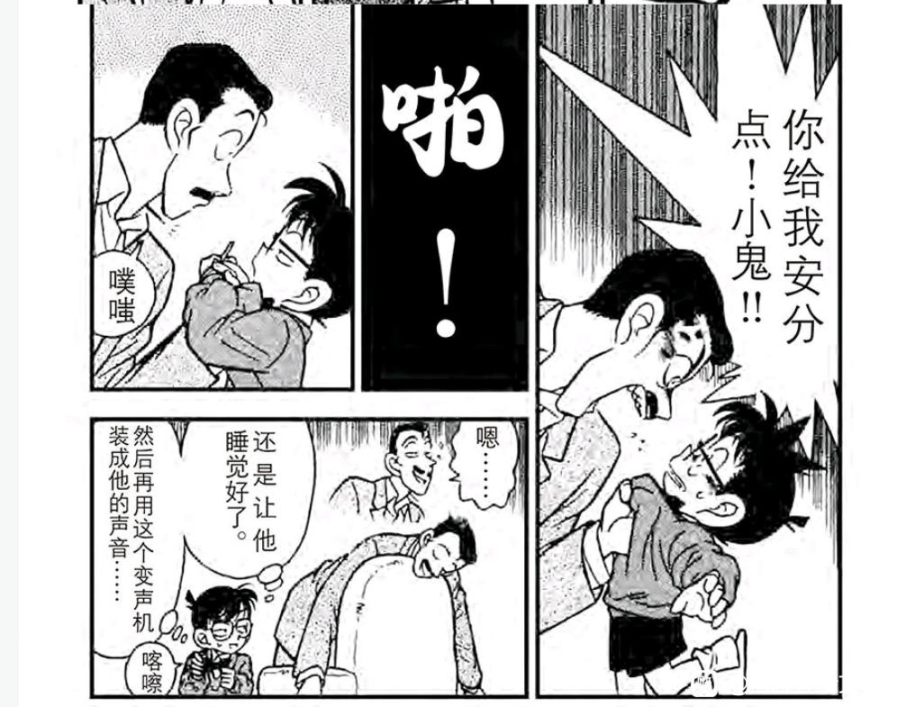
2024-02-21 11:06 | FTAC_X2:设想为两年后会有一个问题：兰应该高中毕业了，但生活状况还和高中一样，这就有点奇怪了……
以下是一些脑洞，很可能有不合理之处：
既然这个案子反映的是两年后的柯南，相当于可以在其中找到大量的结局内容。
首先是小兰的情况，我们知道小兰曾经说过“我爸爸被雪山埋了”，但这里直接给老父亲一推，小五郎甚至划得不错。合理推断是此时小兰已经不怕鬼了，不再迷信一些誓言和宿命的东西。
而更重要的感情线，则隐藏在本案死者死前看的电视剧中。我们注意到，这个电视剧也是小兰喜欢看的，而且是“每集必看”，这个电视剧究竟讲了什么，能让小兰“每集必看”，甚至想蹭本案死者的电视呢？
既然这个案子反映的是两年后的柯南，相当于可以在其中找到大量的结局内容。
首先是小兰的情况，我们知道小兰曾经说过“我爸爸被雪山埋了”，但这里直接给老父亲一推，小五郎甚至划得不错。合理推断是此时小兰已经不怕鬼了，不再迷信一些誓言和宿命的东西。
而更重要的感情线，则隐藏在本案死者死前看的电视剧中。我们注意到，这个电视剧也是小兰喜欢看的，而且是“每集必看”，这个电视剧究竟讲了什么，能让小兰“每集必看”，甚至想蹭本案死者的电视呢？
随后我们看见了这个电视剧的一些画面：
这似乎是某个苦情戏，女主要男主别走，我们注意到男主流着很大的汗珠，说【我们不能在一起的】，男主说的不是【解决完麻烦的事情，我一定会回来】，而是【不能在一起】。
这是小兰最喜欢看的电视剧，该电视剧内容和案件没有关系，应该是精心设计的。我们可以推理三年后的新兰感情了：
A：新兰HE，小兰会喜欢看这个电视剧吗？
B：新兰此时已经分手，电视剧这位流汗的男性很可能是某次感冒变大的新一，如果是这样，小兰将会对电视剧产生强烈代入感，我们甚至能够知道是新一主动提出分手的，小兰应该会把新兰关系当成一份珍贵的回忆，并且有所成长。
当然，还有一种解释，即小兰还没看到这一集，她追的剧内男女主角的关系和新兰关系一样，小兰以为很甜，结果结局却是不能在一起。（如果是这样就更可悲了）
在看完这集后，受害者被琴酒棍法攻击，我怀疑这影射柯南会先解决感情问题再解决黑衣组织问题。
这似乎是某个苦情戏，女主要男主别走，我们注意到男主流着很大的汗珠，说【我们不能在一起的】，男主说的不是【解决完麻烦的事情，我一定会回来】，而是【不能在一起】。
这是小兰最喜欢看的电视剧，该电视剧内容和案件没有关系，应该是精心设计的。我们可以推理三年后的新兰感情了：
A：新兰HE，小兰会喜欢看这个电视剧吗？
B：新兰此时已经分手，电视剧这位流汗的男性很可能是某次感冒变大的新一，如果是这样，小兰将会对电视剧产生强烈代入感，我们甚至能够知道是新一主动提出分手的，小兰应该会把新兰关系当成一份珍贵的回忆，并且有所成长。
当然，还有一种解释，即小兰还没看到这一集，她追的剧内男女主角的关系和新兰关系一样，小兰以为很甜，结果结局却是不能在一起。（如果是这样就更可悲了）
在看完这集后，受害者被琴酒棍法攻击，我怀疑这影射柯南会先解决感情问题再解决黑衣组织问题。
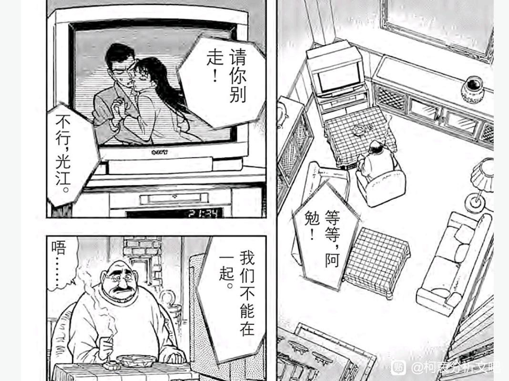
补一些本案的小五郎。
醉酒下状态非常好，拿着相机进行证据拍摄；与柯南分工十分明确，完全知晓柯南的实力但自己不甘落后；柯南不用麻醉针都能让小五郎把事情解决，却故意正面射击小五郎；事后小五郎与柯南愉快地下将棋，你看看这两人关系多好；旁白还煞有介事地说【看似平白无奇之物（日常案件）换个角度……】
如果再延伸一点呢？本次凶手的大肠癌论文被死者窃取，APTX4869的解药方案是否也被窃取了？所以柯南尽管解决黑衣组织，却还是不能永远变大？
从目前的局势看，FBI是最适合把解药据为己有的势力。也许詹姆斯不是黑方，却是莫里亚蒂--更黑的一方……
好像有点跑偏了，但真的不可能吗？
醉酒下状态非常好，拿着相机进行证据拍摄；与柯南分工十分明确，完全知晓柯南的实力但自己不甘落后；柯南不用麻醉针都能让小五郎把事情解决，却故意正面射击小五郎；事后小五郎与柯南愉快地下将棋，你看看这两人关系多好；旁白还煞有介事地说【看似平白无奇之物（日常案件）换个角度……】
如果再延伸一点呢？本次凶手的大肠癌论文被死者窃取，APTX4869的解药方案是否也被窃取了？所以柯南尽管解决黑衣组织，却还是不能永远变大？
从目前的局势看，FBI是最适合把解药据为己有的势力。也许詹姆斯不是黑方，却是莫里亚蒂--更黑的一方……
好像有点跑偏了，但真的不可能吗？
2024-02-24 13:01 | 雪者风形:如果这一观点符合实际情况，那么结局真的已经摆在明面上了……不过我就是无解药/不使用解药/解除冻龄派的，所以只觉得乐.jpg
十三、父辈的归因：柯南的简易归因谬误
如果说新兰感情的第一次下降，被外部压力遏制，那么服部以来的第二次下降，则是被柯南自身的归因谬误巧妙地掩盖起来。
第54天的电视台杀人案和55天的妃英理案，是柯南合理化小兰行为的开始，柯南似乎不自觉地为小兰找代餐的行为找到很好的理由--因为父母嘛。
这种归因真的正确吗？
有趣的是，小兰也在进行归因谬误，由于服部戳破了小五郎的虚假名气，小兰的名气提升计划又一次出现挫折。因此即使小五郎参加的只是一档即将过气的侦探节目，小兰还是积极参加，并且将小五郎的“失忆”归因为谦虚。小兰应该完全知道小五郎破案后完全不记得的事情，这种“谦虚”归因，恐怕是小兰对于父亲名气的执念过强导致的。
相比于小兰的胡乱归因，台上的小五郎倒是相当实际，他并没有吹嘘美术馆等自己知道的案子，而是充满了节目效果，又真正向观众传达了有效信息，其表现之好连柯南都夸赞了。
小五郎应该知道，要想配得上现在的名气，自身必须要有所成长，这段窃听器的注意事项显然是小五郎精心准备的。小兰嘛，她的名气是建立在父亲的名气上的。
（博士家后来装满了窃听器，我怀疑柯南只是窃听专家，反侦察还得看小五郎）
如果说新兰感情的第一次下降，被外部压力遏制，那么服部以来的第二次下降，则是被柯南自身的归因谬误巧妙地掩盖起来。
第54天的电视台杀人案和55天的妃英理案，是柯南合理化小兰行为的开始，柯南似乎不自觉地为小兰找代餐的行为找到很好的理由--因为父母嘛。
这种归因真的正确吗？
有趣的是，小兰也在进行归因谬误，由于服部戳破了小五郎的虚假名气，小兰的名气提升计划又一次出现挫折。因此即使小五郎参加的只是一档即将过气的侦探节目，小兰还是积极参加，并且将小五郎的“失忆”归因为谦虚。小兰应该完全知道小五郎破案后完全不记得的事情，这种“谦虚”归因，恐怕是小兰对于父亲名气的执念过强导致的。
相比于小兰的胡乱归因，台上的小五郎倒是相当实际，他并没有吹嘘美术馆等自己知道的案子，而是充满了节目效果，又真正向观众传达了有效信息，其表现之好连柯南都夸赞了。
小五郎应该知道，要想配得上现在的名气，自身必须要有所成长，这段窃听器的注意事项显然是小五郎精心准备的。小兰嘛，她的名气是建立在父亲的名气上的。
（博士家后来装满了窃听器，我怀疑柯南只是窃听专家，反侦察还得看小五郎）
录制间隙，电视台播出了一个简单的推理案，被柯南秒了。
我们注意这里柯南与小兰的对话，柯南自身是很想说出正确答案，之前他也完全不在乎在小兰面前展示推理能力，遇到小兰有兴趣的（例如月光案的音符暗号）甚至完全不装地在小兰面前推理。
但这次柯南选择故意说错，还通过颜艺给小兰加深印象，“差点露出马脚？”，一个虚拟的案子会露出马脚吗？
只有一种解释：柯南此时不希望小兰以任何形式将柯南和新一的形象建立联系，比如“你的推理好厉害！简直和新一一样…对了，上次新一不告而别是为什么你知道嘛？…”，这种防微杜渐是柯南逃避感情问题的体现，我们在下一案将看到更明显的逃避。
【柯南既无法回答小兰的连环三问，又没有勇气向小兰问代餐行为，这种局面是柯南不敢面对的】
这就是外交官案的结果，不是卡拉OK案后的冷漠，而是进一步有意识地伪装，骗小兰也骗自己。
当柯南做这些事情的时候，小兰丝毫没有感受到。并且，【小兰更乐于看到柯南答错】，从小兰的表情可以看出柯南答错后她更高兴。小兰宁愿相信柯南的推理能力低一些，怕鬼和爱迷路的特征对小兰来说无所谓，但是如果柯南和新一的推理能力一样，小兰的代餐岂不是又要充满福尔摩斯了？。
我们注意这里柯南与小兰的对话，柯南自身是很想说出正确答案，之前他也完全不在乎在小兰面前展示推理能力，遇到小兰有兴趣的（例如月光案的音符暗号）甚至完全不装地在小兰面前推理。
但这次柯南选择故意说错，还通过颜艺给小兰加深印象，“差点露出马脚？”，一个虚拟的案子会露出马脚吗？
只有一种解释：柯南此时不希望小兰以任何形式将柯南和新一的形象建立联系，比如“你的推理好厉害！简直和新一一样…对了，上次新一不告而别是为什么你知道嘛？…”，这种防微杜渐是柯南逃避感情问题的体现，我们在下一案将看到更明显的逃避。
【柯南既无法回答小兰的连环三问，又没有勇气向小兰问代餐行为，这种局面是柯南不敢面对的】
这就是外交官案的结果，不是卡拉OK案后的冷漠，而是进一步有意识地伪装，骗小兰也骗自己。
当柯南做这些事情的时候，小兰丝毫没有感受到。并且，【小兰更乐于看到柯南答错】，从小兰的表情可以看出柯南答错后她更高兴。小兰宁愿相信柯南的推理能力低一些，怕鬼和爱迷路的特征对小兰来说无所谓，但是如果柯南和新一的推理能力一样，小兰的代餐岂不是又要充满福尔摩斯了？。
2024-01-20 10:40 | 贴吧用户_58S8VRC:被打死的电视台策划叫诹访道彦
柯南不会放过这些虚假的案件，他要用这些案件向小兰灌输【柯南的推理能力没那么强】的概念，因为真正的案件不容许柯南这么做。
当柯南寻找线索时碰到了迷路的小兰，于是两人一起进入一个昏暗房间。我们来看柯南真的在推理时，小兰的反应。
柯南这里进行了相当危险的操作，其危险性与蓝色古堡等同，小孩子的身体处理不好容易掉下去。
小兰的反应是什么呢？对环境感到害怕，希望离开，【注意力完全没有在柯南上】，对柯南的危险行为，小兰与其说不感兴趣，不如说是刻意忽视了。
小兰更喜欢在围在她身边的柯南，当柯南进行调查时，小兰因为害怕环境而不敢跟上，这与小兰【喜欢推理错的柯南】是等价的。
推理永远是小兰最大的敌人。
当柯南寻找线索时碰到了迷路的小兰，于是两人一起进入一个昏暗房间。我们来看柯南真的在推理时，小兰的反应。
柯南这里进行了相当危险的操作，其危险性与蓝色古堡等同，小孩子的身体处理不好容易掉下去。
小兰的反应是什么呢？对环境感到害怕，希望离开，【注意力完全没有在柯南上】，对柯南的危险行为，小兰与其说不感兴趣，不如说是刻意忽视了。
小兰更喜欢在围在她身边的柯南，当柯南进行调查时，小兰因为害怕环境而不敢跟上，这与小兰【喜欢推理错的柯南】是等价的。
推理永远是小兰最大的敌人。
案件结束了，由于是在电视台破案，小五郎从【报纸上的名侦探】升级为【电视里的名侦探】，小兰的名气计划超额完成。
（诹访道彦在此案由于对节目指手画脚而被杀，尚不清楚与动画组的对应关系）
总之，由于父亲名气的提升，小兰拥有了更多自信，她将执行可能是唯一一个与新一无关的计划：父母复合计划。
在小兰看来，这个计划的逻辑是：
【小五郎全国闻名->说明小五郎不再颓废了->说明妃英理会同意复合】
小兰似乎没有考虑父母分居更深层次的原因，而只能注意一些表面的现象，并且持续使用一些相当幼稚的复合计划。这可能与小兰的思维方式有关，小兰的思维中人是静态的，爱情也是静态的，因此毛妃分居被小兰认为是暂时的，只要外部环境变好，就仿佛能自然地复合。
如果上述推论正确，我们会发现小兰对新一也是这个态度，小兰眼中的新一同样是一个静态的模型，仅仅依靠记忆中的“新一语录”仿佛就能解决大部分问题，所以小兰很难理解大本钟的新一，为什么发生态度上的变化（但这些变化早就发生了）
如果小兰保持这种思维方式，去让毛妃复合，让平和表白，去挽留新一，那么小兰将一次一次失败，而且我们悲哀的发现，失败了这么多次的小兰到现在仍然乐此不疲。似乎需要有其他人点醒小兰，只是这个人从未出现。
（诹访道彦在此案由于对节目指手画脚而被杀，尚不清楚与动画组的对应关系）
总之，由于父亲名气的提升，小兰拥有了更多自信，她将执行可能是唯一一个与新一无关的计划：父母复合计划。
在小兰看来，这个计划的逻辑是：
【小五郎全国闻名->说明小五郎不再颓废了->说明妃英理会同意复合】
小兰似乎没有考虑父母分居更深层次的原因，而只能注意一些表面的现象，并且持续使用一些相当幼稚的复合计划。这可能与小兰的思维方式有关，小兰的思维中人是静态的，爱情也是静态的，因此毛妃分居被小兰认为是暂时的，只要外部环境变好，就仿佛能自然地复合。
如果上述推论正确，我们会发现小兰对新一也是这个态度，小兰眼中的新一同样是一个静态的模型，仅仅依靠记忆中的“新一语录”仿佛就能解决大部分问题，所以小兰很难理解大本钟的新一，为什么发生态度上的变化（但这些变化早就发生了）
如果小兰保持这种思维方式，去让毛妃复合，让平和表白，去挽留新一，那么小兰将一次一次失败，而且我们悲哀的发现，失败了这么多次的小兰到现在仍然乐此不疲。似乎需要有其他人点醒小兰，只是这个人从未出现。
2024-02-13 11:57 | 贴吧用户_GCMEMPJ:+1
父母复合计划：第55天的妃英理案
小兰与母亲见面，即使从小时间线来说未免也太晚了，更不用说新一变小前也长时间没有见过妃英理。
从小兰见母亲还要瞒着父亲看，此时毛妃关系几乎是完全破裂，如果是落魄的小五郎，小兰甚至没有勇气见母亲（更不必说复合），因此当小五郎因为电视台而声名鹊起时，小兰迫不及待地约了母亲。
【甚至瞒着柯南，如果父亲从柯南嘴里知道小兰去见母亲，父亲会不高兴】
对于小兰而言，可以在柯南面前说喜欢新一，却不愿在柯南面前透露自己父母的感情状况。（小兰对新一也没有说得很清楚），这可能是不希望柯南留下坏印象，进而影响新一的判断。
而柯南对毛妃的态度是无动于衷的，对比柯南帮小哀找母亲的录音带（甚至怕小哀接受不了还提前听了），也许，正是小兰这种遮掩的态度，错过了新一的某些关心吧。
在第151天【少年元太的灾难】中，大家误以为元太的父母可能有矛盾，小哀的立场与此刻柯南的立场完全一致：
【没有立场过问】
小兰与母亲见面，即使从小时间线来说未免也太晚了，更不用说新一变小前也长时间没有见过妃英理。
从小兰见母亲还要瞒着父亲看，此时毛妃关系几乎是完全破裂，如果是落魄的小五郎，小兰甚至没有勇气见母亲（更不必说复合），因此当小五郎因为电视台而声名鹊起时，小兰迫不及待地约了母亲。
【甚至瞒着柯南，如果父亲从柯南嘴里知道小兰去见母亲，父亲会不高兴】
对于小兰而言，可以在柯南面前说喜欢新一，却不愿在柯南面前透露自己父母的感情状况。（小兰对新一也没有说得很清楚），这可能是不希望柯南留下坏印象，进而影响新一的判断。
而柯南对毛妃的态度是无动于衷的，对比柯南帮小哀找母亲的录音带（甚至怕小哀接受不了还提前听了），也许，正是小兰这种遮掩的态度，错过了新一的某些关心吧。
在第151天【少年元太的灾难】中，大家误以为元太的父母可能有矛盾，小哀的立场与此刻柯南的立场完全一致：
【没有立场过问】
2024-01-17 12:09 | 一叶之秋🌿🍁🍁:我记得青山也说过，灰原与小兰的刻画上是相反的。2024-01-17 18:04 | 🌐之徙:回复 一叶之秋🌿🍁🍁 :越看漫画越觉得，相反的地方比想象的多很多。
回到柯南视角，妃英理案中，柯南的反应，是新兰糖吗？
“她穿的这么漂亮原来是要和我约会啊……啊？我就是新一啊？？”
这句话映射了柯南心中自服部登场以来对小兰的逃避心理：他居然没有立刻反应过来这件事的蹊跷。他对新一的社会特征过于逃避，以至于出现如此纰漏。
然而事情还没有完，如果是正常的思路，柯南应该迅速推理出小兰应该在与母亲见面；就算差一点，也得推测是和园子去做什么秘密的事情；但是柯南的视角里直接涌现【小兰与其他男人约会】的思维。
没错，在柯南的思维中，小兰与其他男人约会的形象已经十分具体了，雨中漫步与仰望星空，从侧面抱住某人或者进入男女混浴的温泉。
柯南又迅速联想到【最近没有打电话】，事实上柯南在服部案前打了一通感冒电话（被小兰挂断）后就没有打电话（只过去大约一周时间），对柯南来讲，早上的电话能让小兰下午盯着服部花痴，一周没打电话那简直无法想象。
然而柯南毕竟是正常人，像赤木量子案一样【大闹咖啡厅】是柯南不会做的事情，所以柯南的选择是进行独立侦查，甚至全程没有对小兰的约会产生影响。
我难以想象如果小兰的约会对象是新出智明/本堂瑛佑，柯南会有什么样的动作，如果对方是低质量男性，柯南也许会阻止，但服部/新出等高质量男性与小兰产生互动时，柯南似乎不会有很大的反应。
这是……“青梅竹马在确保对方不会遇见很差的人？！”似乎是健康的友谊呢。
“她穿的这么漂亮原来是要和我约会啊……啊？我就是新一啊？？”
这句话映射了柯南心中自服部登场以来对小兰的逃避心理：他居然没有立刻反应过来这件事的蹊跷。他对新一的社会特征过于逃避，以至于出现如此纰漏。
然而事情还没有完，如果是正常的思路，柯南应该迅速推理出小兰应该在与母亲见面；就算差一点，也得推测是和园子去做什么秘密的事情；但是柯南的视角里直接涌现【小兰与其他男人约会】的思维。
没错，在柯南的思维中，小兰与其他男人约会的形象已经十分具体了，雨中漫步与仰望星空，从侧面抱住某人或者进入男女混浴的温泉。
柯南又迅速联想到【最近没有打电话】，事实上柯南在服部案前打了一通感冒电话（被小兰挂断）后就没有打电话（只过去大约一周时间），对柯南来讲，早上的电话能让小兰下午盯着服部花痴，一周没打电话那简直无法想象。
然而柯南毕竟是正常人，像赤木量子案一样【大闹咖啡厅】是柯南不会做的事情，所以柯南的选择是进行独立侦查，甚至全程没有对小兰的约会产生影响。
我难以想象如果小兰的约会对象是新出智明/本堂瑛佑，柯南会有什么样的动作，如果对方是低质量男性，柯南也许会阻止，但服部/新出等高质量男性与小兰产生互动时，柯南似乎不会有很大的反应。
这是……“青梅竹马在确保对方不会遇见很差的人？！”似乎是健康的友谊呢。
2024-03-25 00:58 | 洛菲斯♬:笑死。柯南大概对兰可能会放弃新一选择其他优秀男人这种事有一定心理准备，尽管还有情感和占有欲，但身为小孩的处境注定他不能持续干涉下去。
如果柯南以上意见，还可以归结为吃醋，那么下面柯南的思考就很夸张了，和吃醋无关，已经上升到对小兰人格的不信任了。
首先柯南思考了小兰当第三者的可能性，得出结论“应该不可能”，而我们知道柯南的这个思考有迹可循，与前田聪约会时对方都有未婚妻了，在柯南的思考里，小兰当第三者是需要考虑一下的事情，而且只是作为这个男人的第二个排除理由（第一个理由是这个男人直接走向吧台），充分说明此时小兰在柯南心中的形象如何。
而下一位更加夸张，这位渣男毫不掩饰地表达对女性的轻视，而柯南却把他当做主要对手，换而言之在柯南看来，【小兰有可能喜欢这种人】
某种程度上柯南并没有说错，绷带怪人案的帅哥和这位渣男性质完全相同，几句甜言蜜语就能把小兰叫去雨中散步，而柯南极为厌恶这种人，这种厌恶其实与吃醋没什么关系，就是讨厌人渣而已。而小兰的形象已经如此“饥不择食”，我们看到柯南不仅完全知晓，还会总结归纳。
（值得注意小兰与柯南的雪山案，虽然与“两年后“的案件相同，但小兰没有带墨镜，似乎本位面小兰与柯南只是正常去滑雪了……带着刚感冒的柯南去滑雪？）
首先柯南思考了小兰当第三者的可能性，得出结论“应该不可能”，而我们知道柯南的这个思考有迹可循，与前田聪约会时对方都有未婚妻了，在柯南的思考里，小兰当第三者是需要考虑一下的事情，而且只是作为这个男人的第二个排除理由（第一个理由是这个男人直接走向吧台），充分说明此时小兰在柯南心中的形象如何。
而下一位更加夸张，这位渣男毫不掩饰地表达对女性的轻视，而柯南却把他当做主要对手，换而言之在柯南看来，【小兰有可能喜欢这种人】
某种程度上柯南并没有说错，绷带怪人案的帅哥和这位渣男性质完全相同，几句甜言蜜语就能把小兰叫去雨中散步，而柯南极为厌恶这种人，这种厌恶其实与吃醋没什么关系，就是讨厌人渣而已。而小兰的形象已经如此“饥不择食”，我们看到柯南不仅完全知晓，还会总结归纳。
（值得注意小兰与柯南的雪山案，虽然与“两年后“的案件相同，但小兰没有带墨镜，似乎本位面小兰与柯南只是正常去滑雪了……带着刚感冒的柯南去滑雪？）
相比在咖啡厅胡乱分析的柯南，小兰的行为更加夸张，她迟到了四十分钟，只为了买个蛋糕让柯南离开？
A：小兰就是单纯没有时间观念
B：小兰对自己的家庭信息严防死守，严禁【和新一有交流的】柯南知道
选项A是迟到的原因，选项B是迟到40分钟之久的原因，而更有趣的是，小兰即使在有意保守秘密的情况下，最终也失败了。
随后是名场面：妃英理对着柯南说出了和琴酒一模一样的话，柯南本就害怕妃英理，一下子吓到变形。我们可以发现，不论是小五郎还是妃英理，都不支持柯南/新一去当侦探，对于小五郎，他讨厌新一的因素多种多样，但“当侦探的没一个好东西”才是小五郎最大的理由；而对于妃英理，她自己虽然有不错的推理能力，但好像只是律师的辅助技能，她本人并不热衷推理，更是对常常带着女儿冒险的小新一不满。
所以柯南的视角里，小兰讨厌推理可能源于父母，这就为小兰的行为提供了错误的归因。影响小兰的不止有父母，还有新一本人，小兰并不是那么讨厌推理，只是讨厌新一因推理而离开她，只是这种讨厌的载体还是在推理上。
柯南忽视了这个微妙的差别，为小兰构建了合理化但错误的归因。这个归因持续一周就再次失败，在福尔摩斯迷杀人案中。
A：小兰就是单纯没有时间观念
B：小兰对自己的家庭信息严防死守，严禁【和新一有交流的】柯南知道
选项A是迟到的原因，选项B是迟到40分钟之久的原因，而更有趣的是，小兰即使在有意保守秘密的情况下，最终也失败了。
随后是名场面：妃英理对着柯南说出了和琴酒一模一样的话，柯南本就害怕妃英理，一下子吓到变形。我们可以发现，不论是小五郎还是妃英理，都不支持柯南/新一去当侦探，对于小五郎，他讨厌新一的因素多种多样，但“当侦探的没一个好东西”才是小五郎最大的理由；而对于妃英理，她自己虽然有不错的推理能力，但好像只是律师的辅助技能，她本人并不热衷推理，更是对常常带着女儿冒险的小新一不满。
所以柯南的视角里，小兰讨厌推理可能源于父母，这就为小兰的行为提供了错误的归因。影响小兰的不止有父母，还有新一本人，小兰并不是那么讨厌推理，只是讨厌新一因推理而离开她，只是这种讨厌的载体还是在推理上。
柯南忽视了这个微妙的差别，为小兰构建了合理化但错误的归因。这个归因持续一周就再次失败，在福尔摩斯迷杀人案中。
案件解决后，柯南发现渣男的约会对象是园子。
这很可能是园子唯一一次单独找男性约会，之前园子与小兰一起出发，吸引人的总是小兰，然而当园子单独出发时却只能找到这类渣男。
或许园子真诚地希望小兰在场时能够帮她筛选掉一些渣男，而实际情况虽然也完成了目标，方式却是小兰把渣男吸引走，让园子少走许多弯路，十分有趣。
随后电视播到小五郎的冥场面，从上一案我们知道，小五郎应该真的打了某个电话，留有的电话记录被覆盖（因此上案凶手才能认罪），虽说是节目效果，但也的确值得生气。
妃英理显然完全知道新一与小兰的关系，她最担心的是小兰重蹈覆辙。柯南看到的是妃英理以为新一和小五郎一样，当了侦探就变得不靠谱起来，但妃英理真的不知道新一和小五郎不是一类人吗？
也许新一与小五郎不同，但两人对于自己青梅竹马的感情都不是很关注，妃英理和小兰都属于很需要伴侣关心的人，但新一却能够忘记约会日期，比小五郎还要马虎，妃英理的真实叮嘱，可能是希望小兰注意到这一点，如果一直强行让新一关注自己，要么让新一变成小五郎，要么新一就会永远离开。
而事实也证明，侦探并不是不会关心，只是要区分对象，和柯南灵魂共鸣的那个女孩，怎么会得不到关心呢？
这很可能是园子唯一一次单独找男性约会，之前园子与小兰一起出发，吸引人的总是小兰，然而当园子单独出发时却只能找到这类渣男。
或许园子真诚地希望小兰在场时能够帮她筛选掉一些渣男，而实际情况虽然也完成了目标，方式却是小兰把渣男吸引走，让园子少走许多弯路，十分有趣。
随后电视播到小五郎的冥场面，从上一案我们知道，小五郎应该真的打了某个电话，留有的电话记录被覆盖（因此上案凶手才能认罪），虽说是节目效果，但也的确值得生气。
妃英理显然完全知道新一与小兰的关系，她最担心的是小兰重蹈覆辙。柯南看到的是妃英理以为新一和小五郎一样，当了侦探就变得不靠谱起来，但妃英理真的不知道新一和小五郎不是一类人吗？
也许新一与小五郎不同，但两人对于自己青梅竹马的感情都不是很关注，妃英理和小兰都属于很需要伴侣关心的人，但新一却能够忘记约会日期，比小五郎还要马虎，妃英理的真实叮嘱，可能是希望小兰注意到这一点，如果一直强行让新一关注自己，要么让新一变成小五郎，要么新一就会永远离开。
而事实也证明，侦探并不是不会关心，只是要区分对象，和柯南灵魂共鸣的那个女孩，怎么会得不到关心呢？
cy
小时间线56天，雾天狗案。
雾天狗案是小兰第一次面临鬼怪类案件，而作者已经多次强调小兰会对各种古怪的事情害怕，不论是看见绷带怪人就走不动路，还是月光案害怕诅咒的钢琴，本次雾天狗则是这种恐惧的第一次具象化，小兰的表现仍然相当失态。这样的人设真的讨喜吗？
与此同时作者刻画了步美，有点害怕又十分好奇的可爱女孩，在柯南的保护下变得越来越勇敢。如果故事中许多人都怕鬼，那么小兰的特征尚可接受，然而偏偏作者让小五郎成为唯物主义者，让山村操成为搞笑角色，让服部一次又一次当怪物猎人，让和叶都不怕鬼了，却在不断强化小兰怕鬼的特点，这绝不是什么可爱的刻画，而是在描绘一种反面教材。
或许，我们可以从早期小兰【遇到类似鬼怪】的案件，探究小兰怕鬼的形成原因。
雾天狗案是小兰第一次面临鬼怪类案件，而作者已经多次强调小兰会对各种古怪的事情害怕，不论是看见绷带怪人就走不动路，还是月光案害怕诅咒的钢琴，本次雾天狗则是这种恐惧的第一次具象化，小兰的表现仍然相当失态。这样的人设真的讨喜吗？
与此同时作者刻画了步美，有点害怕又十分好奇的可爱女孩，在柯南的保护下变得越来越勇敢。如果故事中许多人都怕鬼，那么小兰的特征尚可接受，然而偏偏作者让小五郎成为唯物主义者，让山村操成为搞笑角色，让服部一次又一次当怪物猎人，让和叶都不怕鬼了，却在不断强化小兰怕鬼的特点，这绝不是什么可爱的刻画，而是在描绘一种反面教材。
或许，我们可以从早期小兰【遇到类似鬼怪】的案件，探究小兰怕鬼的形成原因。
小兰的视角里，第一次听说雾天狗，是从贪财的老和尚口子，此时小兰的表情并不夸张，小兰有正常的思考能力，此时小兰认为雾天狗只是劝说毛利一家高费住宿的恐吓话术，因此并没有明显的害怕。之后还悠哉悠哉地去观景了。
小兰的害怕出现在老和尚更具体的恐吓中，老和尚这里故意针对小兰，导致小兰出现很夸张的表情，我们可以发现小兰的怕鬼是与自身安全相关的。
而小五郎害怕的鬼只是视觉冲击+快速反应而已，这种行为换柯南也得吓一跳（例如上一案妃英理在柯南身后用琴酒语言吓柯南），这种“害怕”比小兰的简单得多。
有鉴于小兰怕鬼的心绪是不断发展的，我做出以下推论：
【小兰的思维中将“鬼怪事件“与“自己/身边人将陷入危险”逐渐联系起来，因而小兰的怕鬼，其实是害怕各种危险的案件，更深层的原因是，由于小兰对推理从来不感兴趣，也不尊重侦探们在破解鬼怪问题的辛苦劳动，因此不能从鬼怪案被破解获得不怕鬼的正向反馈，而只能通过鬼怪＝凶杀获得怕鬼的反馈，于是越来越怕鬼】
换而言之，怕鬼是排斥推理的结果，尽管新一/小五郎/柯南/服部做了大量正向工作，但小兰天然不会接受，甚至于因为怕鬼而更排斥推理，一般的恐惧可以克服，人为的恐惧却不行，恐怕小兰得因为怕鬼确实失去什么，又因为不怕鬼而得到什么，才能彻底克服怕鬼心理吧。
小兰的害怕出现在老和尚更具体的恐吓中，老和尚这里故意针对小兰，导致小兰出现很夸张的表情，我们可以发现小兰的怕鬼是与自身安全相关的。
而小五郎害怕的鬼只是视觉冲击+快速反应而已，这种行为换柯南也得吓一跳（例如上一案妃英理在柯南身后用琴酒语言吓柯南），这种“害怕”比小兰的简单得多。
有鉴于小兰怕鬼的心绪是不断发展的，我做出以下推论：
【小兰的思维中将“鬼怪事件“与“自己/身边人将陷入危险”逐渐联系起来，因而小兰的怕鬼，其实是害怕各种危险的案件，更深层的原因是，由于小兰对推理从来不感兴趣，也不尊重侦探们在破解鬼怪问题的辛苦劳动，因此不能从鬼怪案被破解获得不怕鬼的正向反馈，而只能通过鬼怪＝凶杀获得怕鬼的反馈，于是越来越怕鬼】
换而言之，怕鬼是排斥推理的结果，尽管新一/小五郎/柯南/服部做了大量正向工作，但小兰天然不会接受，甚至于因为怕鬼而更排斥推理，一般的恐惧可以克服，人为的恐惧却不行，恐怕小兰得因为怕鬼确实失去什么，又因为不怕鬼而得到什么，才能彻底克服怕鬼心理吧。
仿佛步美+小五郎的怕鬼对比还不太够，青山对本案的纯物理特征非常执着，本案似乎在物理上完全可以实现，柯南甚至没有使用麻醉枪，还给小五郎安装了扩音器。用所有的细节告诉读者，这里没有鬼怪，真相是可推理的。
对于柯南来说，推理出作案手法的他不辞辛苦地去森林里寻找证据，然后被小兰拎回去了。（小兰并没有注意到柯南离开，却热衷于在柯南不在时把他找回来。）
此时一个小黑旁观了一切，并表示流汗黄豆。我认为这个小黑应该不是本案的凶手（身高不对，凶手似乎只比柯南高一点点，但小黑很高），办案期间嫌疑人似乎不能到处乱跑，很可能只是某个路人。
这个剧情似乎说明，小兰相当满足于初期侦办的“自杀”伪结果，对于小兰而言，真相不一定重要，但发现鬼怪不会伤人则很重要。同时，此时的小兰还没有形成恐惧鬼怪的习惯，但总是以这种态度面对鬼怪案，小兰最终会变成那个谈鬼色变的人。
另外，我们不清楚小兰在高中学了什么，本案的物理知识使用高中物理应该是完全可以理解的，但小兰对物理知识的认知好像与目暮警官一个水平……正常的话，小兰应该知道小五郎用水下压强的知识进行了推理，但是小兰的关注点只有帕斯卡这个生词💔相比中森青子的学霸属性，小兰的学习似乎不尽人意，小兰的想法不会真的是读完高中就结婚吧。
对于柯南来说，推理出作案手法的他不辞辛苦地去森林里寻找证据，然后被小兰拎回去了。（小兰并没有注意到柯南离开，却热衷于在柯南不在时把他找回来。）
此时一个小黑旁观了一切，并表示流汗黄豆。我认为这个小黑应该不是本案的凶手（身高不对，凶手似乎只比柯南高一点点，但小黑很高），办案期间嫌疑人似乎不能到处乱跑，很可能只是某个路人。
这个剧情似乎说明，小兰相当满足于初期侦办的“自杀”伪结果，对于小兰而言，真相不一定重要，但发现鬼怪不会伤人则很重要。同时，此时的小兰还没有形成恐惧鬼怪的习惯，但总是以这种态度面对鬼怪案，小兰最终会变成那个谈鬼色变的人。
另外，我们不清楚小兰在高中学了什么，本案的物理知识使用高中物理应该是完全可以理解的，但小兰对物理知识的认知好像与目暮警官一个水平……正常的话，小兰应该知道小五郎用水下压强的知识进行了推理，但是小兰的关注点只有帕斯卡这个生词💔相比中森青子的学霸属性，小兰的学习似乎不尽人意，小兰的想法不会真的是读完高中就结婚吧。
分割线：第58天，阿笠博士首次与少侦一起行动
------
------
十四、不被认可的推理能力：新兰永远的间隙
如果说服部出场以来，柯南的行为有什么发生改变的话，那就是柯南越来越不愿意在小兰面前推理了。外交官案的柯南到处探头，电视台案的柯南已经故意推理错误，妃英理案赶在小兰来前破案，到了雾天狗案，柯南找个证据都瞒着小兰，连“这是小五郎叔叔要找的”都没说。
这是柯南的一种应对措施，而起因就是【柯南看见小兰对服部的推理认可，但小兰从未认可新一】，既然根本不会有正反馈，干脆完全隐藏起来吧，把小兰的反常行为简单地解释为家庭原因，刻意忽视雪崩下的裂缝。
但这种忽视很快就要失败了，阿笠博士似乎注意到这一点，事务所剧情后的柯南愤愤不平，少侦剧情后的柯南总是比较开心，所以博士精心设计了一堆暗号，主动带着少侦陪柯南玩推理游戏，这一切正是为了让柯南体会到久违的认可感。
少侦和博士后来建立了非凡的友谊，但少侦与博士的首次合作，我想应该是来源于博士希望柯南打起精神（不知道有没有告诉少侦，我想应该没有），无独有偶，博士对公交车案后自闭的小哀也采取了类似措施，找了一个养狗的家庭叫少侦出来玩。
博士在情感方面应该是相当细腻的，能注意到柯/哀的一些小情绪，并提供相当有效的解决方案，如果按照这个逻辑，博士恐怕是漫画中最早“生锈”的人，以博士的缜密心思，怎么可能意识不到柯哀的特殊关系呢？
如果说服部出场以来，柯南的行为有什么发生改变的话，那就是柯南越来越不愿意在小兰面前推理了。外交官案的柯南到处探头，电视台案的柯南已经故意推理错误，妃英理案赶在小兰来前破案，到了雾天狗案，柯南找个证据都瞒着小兰，连“这是小五郎叔叔要找的”都没说。
这是柯南的一种应对措施，而起因就是【柯南看见小兰对服部的推理认可，但小兰从未认可新一】，既然根本不会有正反馈，干脆完全隐藏起来吧，把小兰的反常行为简单地解释为家庭原因，刻意忽视雪崩下的裂缝。
但这种忽视很快就要失败了，阿笠博士似乎注意到这一点，事务所剧情后的柯南愤愤不平，少侦剧情后的柯南总是比较开心，所以博士精心设计了一堆暗号，主动带着少侦陪柯南玩推理游戏，这一切正是为了让柯南体会到久违的认可感。
少侦和博士后来建立了非凡的友谊，但少侦与博士的首次合作，我想应该是来源于博士希望柯南打起精神（不知道有没有告诉少侦，我想应该没有），无独有偶，博士对公交车案后自闭的小哀也采取了类似措施，找了一个养狗的家庭叫少侦出来玩。
博士在情感方面应该是相当细腻的，能注意到柯/哀的一些小情绪，并提供相当有效的解决方案，如果按照这个逻辑，博士恐怕是漫画中最早“生锈”的人，以博士的缜密心思，怎么可能意识不到柯哀的特殊关系呢？
2024-01-19 01:10 | 一叶之秋🌿🍁🍁:博士和哀之间已经发展为父女之情，应该也希望小哀能得到幸福。2024-01-19 02:21 | 贴吧用户_58S8VRC:兰讨厌推理源于新一会因为推理离开自己，而离开会导致兰极度不安，而由于不安所以不敢付出，而是单方面向不断向新一索求以填满自己内心的不安，新兰关系感觉被兰玩成了零和博弈2024-01-19 05:14 | 🌐之徙:回复 贴吧用户_58S8VRC :嗯嗯，我甚至觉得，把推理换成足球/小说家，情况也不会有太多不同。 小兰的世界比新一的世界小太多了，她做的事情是把新一拉退到她的世界。2024-01-19 09:58 | 珞瞳:漫画没怎么补前期 楼主对少侦的分析帮忙补全了……
收藏收藏，膜拜大佬
接下来是我认为非常有趣的一部分。
博士的变声器技术成功上市，一下子变成大富翁，喜提新车，博士迫不及待地与孩子们分享自己的喜悦。（同时也映射，对柯南的认可现在也只能在博士和少侦面前出现）
随后博士给了三小只一人一支变声笔！我们知道，变声器技术是“沉睡的小五郎”得以存活的关键秘密之一，而博士就这么简单地给了三小只。后续柯南与博士双簧时，三小只经常出现（然后被小哀推走），我怀疑三小只早就推理出柯南一直在幕后指挥。
博士将如此重要的信息给了三小只，同时三小只也知道柯南有麻醉枪等一系列道具，【但小兰好像不知道柯南有任何道具！】，例如后续第62天的三胞胎案中，柯南试图麻醉园子，但小兰好像对柯南身上的道具一点概念都没有。
那么，排除一切不可能后，【博士把各种道具交给三小只时，应该告诉他们要保密，甚至是专门对小兰保密】
【而三小只是真正的守口如瓶，从来没有透露过柯南有变声器或麻醉枪】
博士对三小只的能力表示相当认可，可能是从消失的尸体案开始，侦探徽章直接侦破杀人案，三小只可靠的能力应该给博士留下深刻的印象。
【博士知道柯南需要推理的伙伴，而小兰过去不是，将来也不是这个伙伴，于是博士转而给予三小只各种道具】
莫非，在小哀出场前博士就生锈了？
博士的变声器技术成功上市，一下子变成大富翁，喜提新车，博士迫不及待地与孩子们分享自己的喜悦。（同时也映射，对柯南的认可现在也只能在博士和少侦面前出现）
随后博士给了三小只一人一支变声笔！我们知道，变声器技术是“沉睡的小五郎”得以存活的关键秘密之一，而博士就这么简单地给了三小只。后续柯南与博士双簧时，三小只经常出现（然后被小哀推走），我怀疑三小只早就推理出柯南一直在幕后指挥。
博士将如此重要的信息给了三小只，同时三小只也知道柯南有麻醉枪等一系列道具，【但小兰好像不知道柯南有任何道具！】，例如后续第62天的三胞胎案中，柯南试图麻醉园子，但小兰好像对柯南身上的道具一点概念都没有。
那么，排除一切不可能后，【博士把各种道具交给三小只时，应该告诉他们要保密，甚至是专门对小兰保密】
【而三小只是真正的守口如瓶，从来没有透露过柯南有变声器或麻醉枪】
博士对三小只的能力表示相当认可，可能是从消失的尸体案开始，侦探徽章直接侦破杀人案，三小只可靠的能力应该给博士留下深刻的印象。
【博士知道柯南需要推理的伙伴，而小兰过去不是，将来也不是这个伙伴，于是博士转而给予三小只各种道具】
莫非，在小哀出场前博士就生锈了？
应该说，即使博士的伯父家没有其他秘密，柯南也已经很开心了，少侦剧情的柯南，笑得是相当灿烂。而我们知道，蓝色古堡案之前，柯哀似乎没有经历任何的暗号破解剧情，而小哀却能准确说出【这不是你最喜欢的暗号吗？】并贴贴，我怀疑不但博士早就生锈，三小只也向小哀透露了大量关于柯南的信息，例如柯南碰到暗号问题就变得特别像小孩。
这一类暗号往往是与案件无关的，柯南确实是在享受推理游戏。有趣的是，柯南无法在小兰面前正常享受推理游戏，此刻柯南的快乐与电视台案柯南故意说错答案的苦涩，形成鲜明的对比。
这一类暗号往往是与案件无关的，柯南确实是在享受推理游戏。有趣的是，柯南无法在小兰面前正常享受推理游戏，此刻柯南的快乐与电视台案柯南故意说错答案的苦涩，形成鲜明的对比。
2024-01-19 08:27 | 一叶之秋🌿🍁🍁:最喜欢的暗号可能是初遇论伏笔2024-01-19 08:52 | 🌐之徙:回复 一叶之秋🌿🍁🍁 :不太可能吧，就算有初遇，柯哀双方应该也不太记得初遇的细节了。我倾向于就是三小只生锈，跟小哀说了一大堆柯南的事情（说不定是小哀主动打听的）
番外：如果小兰看见这一幕：（我们假设把所有博士换成小兰）
（以下纯属娱乐）
……
由于长期负反馈，新一/柯南根本不敢再
在小兰面前表现成这样，如果真的这么做，可能在第一张图就被包包锤击，在第二张图就被骂推理狂，在第四张图由于小兰被莫名其妙追问，所以新一/柯南将在博士的伯父家跑马拉松……
最后柯南被步美抢走啦！
（以上纯属娱乐）
（以下纯属娱乐）
……
由于长期负反馈，新一/柯南根本不敢再
在小兰面前表现成这样，如果真的这么做，可能在第一张图就被包包锤击，在第二张图就被骂推理狂，在第四张图由于小兰被莫名其妙追问，所以新一/柯南将在博士的伯父家跑马拉松……
最后柯南被步美抢走啦！
（以上纯属娱乐）
2024-03-25 03:55 | 洛菲斯♬:别说，步美看见兰贬低柯南的推理能力，可能都会上前维护，确实可以抢走柯南
早在大都会案，步美就表现出优秀的侦查能力，经常能先于柯南找到若干线索。不过柯南一开始似乎没注意到这一点，对柯南来说，三小只是类似于小兰那种需要保护的人，柯南似乎不太习惯在有协助的情况下破案，不得不说这是小兰长期在案发现场无所作为带来的负面结果。
然而本案中柯南这种观念被打破了，步美拥有强大的侦查能力，元太的执行热情比一般人高非常多，光彦此时还不明显，但如果柯南需要推理或记忆上的助手，光彦将非常可靠。（光彦本案又划水了……）
没错，博士宝箱案，是第一次少侦动作优先于柯南的案件，柯南对这种情况感到非常惊喜，而且事实上也是少侦的积极行动，让本案犯人迅速落网（这可是持枪犯人，早一天归案早一天安全）
也许是跟着小兰的日子太长了，柯南的惊喜过了头，真正惊喜的人还没转学过来呢。
然而本案中柯南这种观念被打破了，步美拥有强大的侦查能力，元太的执行热情比一般人高非常多，光彦此时还不明显，但如果柯南需要推理或记忆上的助手，光彦将非常可靠。（光彦本案又划水了……）
没错，博士宝箱案，是第一次少侦动作优先于柯南的案件，柯南对这种情况感到非常惊喜，而且事实上也是少侦的积极行动，让本案犯人迅速落网（这可是持枪犯人，早一天归案早一天安全）
也许是跟着小兰的日子太长了，柯南的惊喜过了头，真正惊喜的人还没转学过来呢。
最后我们来看看，同样是遇到鬼怪类，少侦与小兰有什么不同吧。
嗯……好像不太公平呢。
三小只中最怕鬼的可能是光彦，不过光彦的怕鬼和小兰有极大的不同，光彦的世界观还不完善，他真的相信电视上的哥美拉存在于世界的某个生态环境中，所以当奇怪的事情出现，光彦也会害怕。但一旦光彦发现其中的原理，就会立刻完全不怕，这种正向反馈使得光彦迅速成为唯物主义战士，并在蓝色古堡拿下MVP。
步美的怕鬼来自对他人的担心，不论是鬼屋案还是蓝色古堡，步美都是那个虽然害怕但还是要拯救同伴的人，她会不顾小哀的劝告返回去找大家，她能说出“逃避是没有用的”，并且步美的勇气似乎是与生俱来，并不是柯南影响下产生的。（某个和叶丢了躲在房间哭的小兰：……）
元太基本不太怕鬼，拿着打鬼棒球棍的元太似乎从来不会害怕未知的事物，元太比较害怕的是自己闯了祸，导致自己会被杀或者变成犯人，这种恐惧来源于高度的责任感。
所以当柯南解释完变声笔，反派式地捆好犯人后，三小只哪里还有害怕的表情。日常中勇气的积累，将在危机时迸发出强烈的力量。
日常中恐惧的积累，将成为关键时刻的黑色子弹。
嗯……好像不太公平呢。
三小只中最怕鬼的可能是光彦，不过光彦的怕鬼和小兰有极大的不同，光彦的世界观还不完善，他真的相信电视上的哥美拉存在于世界的某个生态环境中，所以当奇怪的事情出现，光彦也会害怕。但一旦光彦发现其中的原理，就会立刻完全不怕，这种正向反馈使得光彦迅速成为唯物主义战士，并在蓝色古堡拿下MVP。
步美的怕鬼来自对他人的担心，不论是鬼屋案还是蓝色古堡，步美都是那个虽然害怕但还是要拯救同伴的人，她会不顾小哀的劝告返回去找大家，她能说出“逃避是没有用的”，并且步美的勇气似乎是与生俱来，并不是柯南影响下产生的。（某个和叶丢了躲在房间哭的小兰：……）
元太基本不太怕鬼，拿着打鬼棒球棍的元太似乎从来不会害怕未知的事物，元太比较害怕的是自己闯了祸，导致自己会被杀或者变成犯人，这种恐惧来源于高度的责任感。
所以当柯南解释完变声笔，反派式地捆好犯人后，三小只哪里还有害怕的表情。日常中勇气的积累，将在危机时迸发出强烈的力量。
日常中恐惧的积累，将成为关键时刻的黑色子弹。
第59天：龙舌兰爆炸案
柯南的快乐时光又结束了，小兰身边的柯南基本上是职业假笑+背后半月眼的表情循环。
由于小五郎越来越出名，本次毛利一家被请到游戏公司，这似乎是小兰【名气计划】的又一个重大胜利，而柯南明显地更加不耐烦。
（小兰抽中100号，于是断言会有好事发生，然而对柯南来说却不是什么好事，被黑衣组织的炸弹炸了两次，线索还全没了。小兰这种“会有好事发生”的心态，被柯南认为是犯傻，而且似乎并不可爱）
此外，柯南应该是想玩小五郎主题的侦探游戏，但不知道为什么被小兰拉去玩格斗游戏了。
A、柯南本想玩推理游戏的，被小兰强行拉走。
B、柯南确实想玩，但不想在小兰面前表现，所以并没有去玩。
选项B的可能性更大一些，这与电视台案柯南的表现是一致的。而小兰则总是顺利地玩到喜欢的游戏，哪怕小五郎在旁边呕吐，柯南十分不情愿。
【可能她运气真的很好吧！】
柯南的快乐时光又结束了，小兰身边的柯南基本上是职业假笑+背后半月眼的表情循环。
由于小五郎越来越出名，本次毛利一家被请到游戏公司，这似乎是小兰【名气计划】的又一个重大胜利，而柯南明显地更加不耐烦。
（小兰抽中100号，于是断言会有好事发生，然而对柯南来说却不是什么好事，被黑衣组织的炸弹炸了两次，线索还全没了。小兰这种“会有好事发生”的心态，被柯南认为是犯傻，而且似乎并不可爱）
此外，柯南应该是想玩小五郎主题的侦探游戏，但不知道为什么被小兰拉去玩格斗游戏了。
A、柯南本想玩推理游戏的，被小兰强行拉走。
B、柯南确实想玩，但不想在小兰面前表现，所以并没有去玩。
选项B的可能性更大一些，这与电视台案柯南的表现是一致的。而小兰则总是顺利地玩到喜欢的游戏，哪怕小五郎在旁边呕吐，柯南十分不情愿。
【可能她运气真的很好吧！】
接下来又是一个冥场面，小兰打拳力度过大，直接爆表了。
我发现柯南对于小兰展现武力值/展现对自己的思念时，总是一副无所谓的态度。从千金绑架案开始，小兰用空手道救下柯南，柯南的反应就只是“好厉害……”而不是别的感激之情。后来赤木家小兰一拳打爆一个玩偶，一旁的柯南露出的表情是惊恐。这次小兰让机器爆表，柯南的反应是“可怕”，甚至物理意义上吓得去上厕所了。
柯南对于小兰空手道的态度，似乎不是一种防身的方法，而是某种可怕的特质。柯南见过绷带怪人案小兰空手道的失效，又见过暗夜男爵案小兰对前田聪“手下留情”。一次又一次地刷新，柯南眼中的空手道仿佛变成了针对新一/柯南的利器，能够恐吓赤木家的新一，能够胁迫不想去美术馆的柯南，却永远不是什么防身或帮助。
小兰的空手道是“厉害的”“可怕的”，却不是“有安全感的”，正如小兰不认同新一的推理，柯南也不认同小兰的空手道了。
我发现柯南对于小兰展现武力值/展现对自己的思念时，总是一副无所谓的态度。从千金绑架案开始，小兰用空手道救下柯南，柯南的反应就只是“好厉害……”而不是别的感激之情。后来赤木家小兰一拳打爆一个玩偶，一旁的柯南露出的表情是惊恐。这次小兰让机器爆表，柯南的反应是“可怕”，甚至物理意义上吓得去上厕所了。
柯南对于小兰空手道的态度，似乎不是一种防身的方法，而是某种可怕的特质。柯南见过绷带怪人案小兰空手道的失效，又见过暗夜男爵案小兰对前田聪“手下留情”。一次又一次地刷新，柯南眼中的空手道仿佛变成了针对新一/柯南的利器，能够恐吓赤木家的新一，能够胁迫不想去美术馆的柯南，却永远不是什么防身或帮助。
小兰的空手道是“厉害的”“可怕的”，却不是“有安全感的”，正如小兰不认同新一的推理，柯南也不认同小兰的空手道了。
2024-03-25 04:02 | 洛菲斯♬:这处情节和真第一集中兰对新一发怒后赢得比赛形成呼应，或许青山在监制时也想到了
本次龙舌兰被炸，出乎绝大多数人的意料，柯南也显得极为着急，对柯南来讲，这是不可复制的寻找黑衣组织的机会。尽管被炸伤，柯南依然到处乱跑。
然后柯南遇到了“担心死你了”的小兰，我们来看看小兰是怎么担心的。
“你受伤了？”小兰还是能注意到柯南右侧脸上的伤口的。
没了……我以为小兰接下来要去找创可贴或者至少是纸巾，然而小兰只是抱怨一下，甚至不太关心柯南是为什么受伤的。而主要地认为“柯南的伤是他自己造成的”，类似于暗夜男爵案柯南落水，小兰直接说柯南是白痴。
有鉴于这些剧情，我严重怀疑新出医生案中，小兰生称小时候给新一包扎，完全是子虚乌有的事情（新出医生案中小兰包扎时还伤到自己了，不知道是不熟练还是故意的）
巧合的是，这两次新一和柯南受伤的地方一模一样，小兰的记忆真的准确吗？
然后柯南遇到了“担心死你了”的小兰，我们来看看小兰是怎么担心的。
“你受伤了？”小兰还是能注意到柯南右侧脸上的伤口的。
没了……我以为小兰接下来要去找创可贴或者至少是纸巾，然而小兰只是抱怨一下，甚至不太关心柯南是为什么受伤的。而主要地认为“柯南的伤是他自己造成的”，类似于暗夜男爵案柯南落水，小兰直接说柯南是白痴。
有鉴于这些剧情，我严重怀疑新出医生案中，小兰生称小时候给新一包扎，完全是子虚乌有的事情（新出医生案中小兰包扎时还伤到自己了，不知道是不熟练还是故意的）
巧合的是，这两次新一和柯南受伤的地方一模一样，小兰的记忆真的准确吗？
2024-01-21 01:42 | _苏一只_:这里是兰拿手绢的时候东西掉出来吧？并不是不帮柯南清理伤口2024-02-11 04:46 | 贴吧用户_7Q86GAQ:这里确实是拿东西把东西带出来了2024-02-11 06:46 | 🌐之徙:回复 _苏一只_ :我的问题
回到案件，小兰的行动告诉我们，她救人不行，但让他人受伤却是手到擒来。小五郎今天倒了大霉，白天起来一直呕吐，又被女儿重踢一脚，这个力度太可怕了。关键接下来还得被柯南当工具人去打听黑衣组织，一下子暴露在组织视野里。
这里小兰的反应也是很奇怪的，暗夜男爵案的死者曾经使用咸猪手，但小兰当时只是转身和他对骂，并没有动武，这里直接踢腿只有一个理由，就是小兰大概率知道是柯南在身后，这一踢有威慑力又没实际伤害，再好不过了，小兰抓着柯南洗澡，行，柯南有动作，不行，这就是代餐的命运吗？
（把柯南换成基德，好像也差不太多）
总之，小五郎无辜被打晕，小兰的空手道确实没轻没重的，而且丝毫不考虑使用环境，关键时候用不出来，打自己人倒是伤害很高，怎么和琴酒杀真酒一个性质。
另外，明美案的柯南，还能脸红地试图给小兰装发信器，这里的柯南已经完全公事公办了，根本不会脸红，似乎小兰的“诱惑提升计划”也出现了一些副作用呢。
这里小兰的反应也是很奇怪的，暗夜男爵案的死者曾经使用咸猪手，但小兰当时只是转身和他对骂，并没有动武，这里直接踢腿只有一个理由，就是小兰大概率知道是柯南在身后，这一踢有威慑力又没实际伤害，再好不过了，小兰抓着柯南洗澡，行，柯南有动作，不行，这就是代餐的命运吗？
（把柯南换成基德，好像也差不太多）
总之，小五郎无辜被打晕，小兰的空手道确实没轻没重的，而且丝毫不考虑使用环境，关键时候用不出来，打自己人倒是伤害很高，怎么和琴酒杀真酒一个性质。
另外，明美案的柯南，还能脸红地试图给小兰装发信器，这里的柯南已经完全公事公办了，根本不会脸红，似乎小兰的“诱惑提升计划”也出现了一些副作用呢。
此时的新兰关系此时已经低于冷漠的古董收藏家案时期，因为柯南做了更加不寻常的举动：推理到一半，不管小五郎的死活，直接冲向龙舌兰的据点。
结果据点爆炸，柯南一无所获，不得不回到毛利家。我们不妨想象一下，如果柯南真的找到了线索，那么就会变成柯南与毛利父女不告而别，柯南独自追查线索。
没错，冲出去追黑衣组织的柯南，已经做好和小兰分离的准备了。甚至和新干线爆炸案不同，当时的柯南在绝望中还试图向小兰表明身份，这时的柯南甚至不会给小兰留下任何的信息，小五郎的善后更是没有考虑。
突如其来的遭遇，让所谓的“新兰感情”变得无比渺小，在摧毁组织的目标中，小五郎的暴露是无所谓的，小兰的感情是无足轻重的，柯南冲向爆炸的据点，没有人跟着他出来，没有人和他并肩作战。
只是暂时没有人。
结果据点爆炸，柯南一无所获，不得不回到毛利家。我们不妨想象一下，如果柯南真的找到了线索，那么就会变成柯南与毛利父女不告而别，柯南独自追查线索。
没错，冲出去追黑衣组织的柯南，已经做好和小兰分离的准备了。甚至和新干线爆炸案不同，当时的柯南在绝望中还试图向小兰表明身份，这时的柯南甚至不会给小兰留下任何的信息，小五郎的善后更是没有考虑。
突如其来的遭遇，让所谓的“新兰感情”变得无比渺小，在摧毁组织的目标中，小五郎的暴露是无所谓的，小兰的感情是无足轻重的，柯南冲向爆炸的据点，没有人跟着他出来，没有人和他并肩作战。
只是暂时没有人。
第60天：福尔摩斯迷案
我们知道，自电视台案以来，柯南一直在隐藏自己的推理能力，尤其不能在小兰面前表现。真正的推理能力会让小兰产生不必要的怀疑，这是柯南不愿意看到的。
然而，柯南却报名参加了本次福尔摩斯迷聚会，原因是他真的想去，在自己的喜好面前，可以暂时把对小兰的考虑放在一边。就像柯南拥有了去伦敦的机会，自然不会管小兰会不会发现，头脑一热就去了。
而小兰的反映也是可以预料的，不断地大声抱怨，表示对柯南擅自报名的不满，而柯南显然无视了小兰的不满。（注意，柯南本次报名中奖，对柯南来说很幸运，对小兰则很不幸）
似乎柯兰外出时，总是一方高兴另一方不满，一方幸运一方不幸。应该说，新一平时应该没少去福尔摩斯相关的活动，如果这样的小兰呆在身边，新一的体验将大打折扣，我合理怀疑新一参与推理活动时并不会主动带着小兰，这或许可以解释为什么云霄飞车时新一才给小兰介绍入门的福尔摩斯知识。
我们知道，自电视台案以来，柯南一直在隐藏自己的推理能力，尤其不能在小兰面前表现。真正的推理能力会让小兰产生不必要的怀疑，这是柯南不愿意看到的。
然而，柯南却报名参加了本次福尔摩斯迷聚会，原因是他真的想去，在自己的喜好面前，可以暂时把对小兰的考虑放在一边。就像柯南拥有了去伦敦的机会，自然不会管小兰会不会发现，头脑一热就去了。
而小兰的反映也是可以预料的，不断地大声抱怨，表示对柯南擅自报名的不满，而柯南显然无视了小兰的不满。（注意，柯南本次报名中奖，对柯南来说很幸运，对小兰则很不幸）
似乎柯兰外出时，总是一方高兴另一方不满，一方幸运一方不幸。应该说，新一平时应该没少去福尔摩斯相关的活动，如果这样的小兰呆在身边，新一的体验将大打折扣，我合理怀疑新一参与推理活动时并不会主动带着小兰，这或许可以解释为什么云霄飞车时新一才给小兰介绍入门的福尔摩斯知识。
2024-03-25 04:20 | 洛菲斯♬:柯南还不如跟博士和小伙伴一起去玩，他们肯定都很开心
然而小兰在看到旅馆时，态度立刻发生180度转变，小兰对于能入驻漂亮的旅馆相当满意。然而不幸的是我们知道这座旅馆空有其表，内部大部分设施都损坏或无用。小兰喜欢的事物是不存在的，又一个不详的预告。
我们注意到，尽管十分随意地前往福尔摩斯迷聚会，柯南内心中还是有点担心小兰的怀疑，当被占星师（其实是心理学专家）话术后，柯南立刻露出紧张的表情，于是被占星师继续下套。占星师的预言是虚假的，但柯南心中的担忧却真实存在。在柯南的心目中，大概有一个这样的事物优先级：
【真实案件推理＞我最喜欢的福尔摩斯＞我要对小兰隐瞒推理能力＞一般的趣味暗号推理】
如果说小兰的优先级小于真实案件是天经地义，那么本案小兰的优先级则显然低于福尔摩斯，总有种意料之中的味道。
我们注意到，尽管十分随意地前往福尔摩斯迷聚会，柯南内心中还是有点担心小兰的怀疑，当被占星师（其实是心理学专家）话术后，柯南立刻露出紧张的表情，于是被占星师继续下套。占星师的预言是虚假的，但柯南心中的担忧却真实存在。在柯南的心目中，大概有一个这样的事物优先级：
【真实案件推理＞我最喜欢的福尔摩斯＞我要对小兰隐瞒推理能力＞一般的趣味暗号推理】
如果说小兰的优先级小于真实案件是天经地义，那么本案小兰的优先级则显然低于福尔摩斯，总有种意料之中的味道。
接下来漫画再一次强调了“为什么小兰不喜欢福尔摩斯”，标准答案是“那是小说里的人耶！”
我们不清楚这个观念是小五郎先有还是小兰先有，小五郎平时似乎以读报纸为主，看书基本都是临时抱佛脚，而小兰的阅读相当广泛，连天下一夜祭案的尖下巴凶手这种人的书都看过。这种“书里的人物一定虚假”的观念应该主要来自小兰。
但是，小兰似乎不太明白，在福尔摩斯以前，世界上几乎没有像样的刑侦学，福尔摩斯真正改变了这个世界，因此，福尔摩斯在柯南等人的心中是崇高的。更关键的是，只要对福尔摩斯稍有了解，上述信息并不难获得，但小兰似乎从来不愿意去了解一下，她经常希望新一“体会她的心意”，但她自己却从来没有体会过新一。
对比因为柯南而喜欢足球的小哀，真是高下立判。
我们不清楚这个观念是小五郎先有还是小兰先有，小五郎平时似乎以读报纸为主，看书基本都是临时抱佛脚，而小兰的阅读相当广泛，连天下一夜祭案的尖下巴凶手这种人的书都看过。这种“书里的人物一定虚假”的观念应该主要来自小兰。
但是，小兰似乎不太明白，在福尔摩斯以前，世界上几乎没有像样的刑侦学，福尔摩斯真正改变了这个世界，因此，福尔摩斯在柯南等人的心中是崇高的。更关键的是，只要对福尔摩斯稍有了解，上述信息并不难获得，但小兰似乎从来不愿意去了解一下，她经常希望新一“体会她的心意”，但她自己却从来没有体会过新一。
对比因为柯南而喜欢足球的小哀，真是高下立判。
小兰注意到，新一与柯南同样喜欢福尔摩斯，这在小兰看来似乎不算什么优点，小兰认为，喜欢福尔摩斯是“孩子气”的表现，看到柯南喜欢福尔摩斯，小兰反而认为柯南更像孩子了。
所以，当小兰通过柯南回想新一时，其特征是傲娇而不是可靠，仿佛喜欢推理只是新一表现欲的一部分。应该说，新一小时候有过这种特征，但这种特征早就是过时信息了，现在的新一早已习惯在小五郎幕后推理，早已经历月光案和明美案，虽然表现欲还是很强，但已经成长到小兰无法认识的位置。
而服部对新一的评价却比小兰准确得多，尽管只见过一面，服部却连新一喜欢踢足球/五音不全都知道了，并且正面肯定了新一的推理能力。
服部应该是做过相当的功课，通过园子（五音不全这种信息一定是园子提供的）等渠道获得了一大堆新一的信息，拿着二手信息的服部，其对新一的认知就完全超过小兰，如果按照平为哀影的说法，小哀获得的是一手信息，那么小哀对柯南的认知恐怕要更深刻些，“干净的香味”这种强概括，就是最好的证明。
小兰的概括：推理狂。
所以，当小兰通过柯南回想新一时，其特征是傲娇而不是可靠，仿佛喜欢推理只是新一表现欲的一部分。应该说，新一小时候有过这种特征，但这种特征早就是过时信息了，现在的新一早已习惯在小五郎幕后推理，早已经历月光案和明美案，虽然表现欲还是很强，但已经成长到小兰无法认识的位置。
而服部对新一的评价却比小兰准确得多，尽管只见过一面，服部却连新一喜欢踢足球/五音不全都知道了，并且正面肯定了新一的推理能力。
服部应该是做过相当的功课，通过园子（
五音不全这种信息一定是园子提供的）等渠道获得了一大堆新一的信息，拿着二手信息的服部，其对新一的认知就完全超过小兰，如果按照平为哀影的说法，小哀获得的是一手信息，那么小哀对柯南的认知恐怕要更深刻些，“干净的香味”这种强概括，就是最好的证明。小兰的概括：推理狂。
当柯南，服部与小五郎进行艰苦的破案工作时，小兰正在：
执行她的两个计划。
首先是小五郎名气计划，该计划因为平次的嘲讽而出现重大漏洞，于是小兰创造了一个新词：沉睡的小五郎。灵感似乎来源于龙舌兰爆炸案时电玩公司的游戏，这个补丁让小五郎的名声进一步传播。为了把这个补丁打好，小兰甚至不惜与服部发生口角冲突。
而小兰的第二个计划是对服部平次进一步攻略，整个福尔摩斯案中，除了维护小五郎的几分钟，小兰一直在与服部积极互动，更有若干让柯南十分难受的场面。例如【你也是福尔摩斯迷啊】或者【真不愧是名侦探】，甚至当小五郎锤击服部时，小兰还帮服部说话（柯南被锤击时小兰一般是一言不发的）
不管是新一还是柯南，上述这些待遇都是享受不到的，取而代之的是【够了！我不想再听到福尔摩斯！】和【什么名侦探，根本是作弊嘛！】，小兰不是不知道怎么夸侦探，只是不想夸新一这个侦探而已。
执行她的两个计划。
首先是小五郎名气计划，该计划因为平次的嘲讽而出现重大漏洞，于是小兰创造了一个新词：沉睡的小五郎。灵感似乎来源于龙舌兰爆炸案时电玩公司的游戏，这个补丁让小五郎的名声进一步传播。为了把这个补丁打好，小兰甚至不惜与服部发生口角冲突。
而小兰的第二个计划是对服部平次进一步攻略，整个福尔摩斯案中，除了维护小五郎的几分钟，小兰一直在与服部积极互动，更有若干让柯南十分难受的场面。例如【你也是福尔摩斯迷啊】或者【真不愧是名侦探】，甚至当小五郎锤击服部时，小兰还帮服部说话（柯南被锤击时小兰一般是一言不发的）
不管是新一还是柯南，上述这些待遇都是享受不到的，取而代之的是【够了！我不想再听到福尔摩斯！】和【什么名侦探，根本是作弊嘛！】，小兰不是不知道怎么夸侦探，只是不想夸新一这个侦探而已。
而柯南对小兰与服部的互动怎么看呢？
外交官案的柯南又气又伤心，福尔摩斯案的柯南完全是一脸无所谓的态度，这倒不是柯南对小兰的容忍度更高了，只是因为对方是服部，柯南情感上更倾向服部而已。
然而，我们看到柯南对小哀的态度是：我知道冲矢昴是可靠的人，但我还是要把小哀隔绝开，而对于小兰，柯南只有在对方可能是是渣男时才出手，何以柯南对小兰的占有欲这么低呢？甚至可以发现越来越低的趋势，到新出医生/本堂时期，柯南已经可以看着他们互动，自己在旁边干自己的事情了。
因为根本无法实现高占有欲，柯南也曾把前田聪推开，可是并没有什么用，说到底，是小兰的行为让柯南的占有欲自愿降低了。
这倒是有助于新兰友情的增加。
外交官案的柯南又气又伤心，福尔摩斯案的柯南完全是一脸无所谓的态度，这倒不是柯南对小兰的容忍度更高了，只是因为对方是服部，柯南情感上更倾向服部而已。
然而，我们看到柯南对小哀的态度是：我知道冲矢昴是可靠的人，但我还是要把小哀隔绝开，而对于小兰，柯南只有在对方可能是是渣男时才出手，何以柯南对小兰的占有欲这么低呢？甚至可以发现越来越低的趋势，到新出医生/本堂时期，柯南已经可以看着他们互动，自己在旁边干自己的事情了。
因为根本无法实现高占有欲，柯南也曾把前田聪推开，可是并没有什么用，说到底，是小兰的行为让柯南的占有欲自愿降低了。
这倒是有助于新兰友情的增加。
最后我们来看一下本案，这是福尔摩斯相关的一案，因此值得看看凶手的动机：
“艾琳怎么会嘲笑福尔摩斯呢？我实在无法想象”
我们回到第一话，却能看到小兰嘲笑新一，并且小兰也不止一次说新一永远不能成为福尔摩斯，看了太多推理小说变成呆子等等，有太多嘲笑的条目了，既然“艾琳嘲笑福尔摩斯是无法想象的”，而新一是“平成年代的福尔摩斯”，那么只剩下“无法想象小兰是艾琳”。
事实上，小兰很难对应华生或艾琳的身份，小兰独立提供的帮助与华生差距太大了，而且你见过沦为福尔摩斯和埃勒里奎因play的艾琳吗？但是小兰在本章结尾，变成新平play的一部分了
“艾琳怎么会嘲笑福尔摩斯呢？我实在无法想象”
我们回到第一话，却能看到小兰嘲笑新一，并且小兰也不止一次说新一永远不能成为福尔摩斯，看了太多推理小说变成呆子等等，有太多嘲笑的条目了，既然“艾琳嘲笑福尔摩斯是无法想象的”，而新一是“平成年代的福尔摩斯”，那么只剩下“无法想象小兰是艾琳”。
事实上，小兰很难对应华生或艾琳的身份，小兰独立提供的帮助与华生差距太大了，而且你见过沦为福尔摩斯和埃勒里奎因play的艾琳吗？但是小兰在本章结尾，变成新平play的一部分了
分割线：第62天：柯南被服部识破
------
------
十五、落叶缤纷之前：新兰关系的真正起点。
我一直认为，新兰关系真正开始升温的时间，不在樱花班，不在纽约，不在多罗碧加乐园，在这些时机，新一被小兰的外表所吸引，小兰觉得新一帅气。但这些都是随时可以被取代的元素，小兰会对着新出医生胡思乱想，柯南会对着卡拉OK案女经纪人义愤填膺。这种新兰互动能为新兰关系提供一个很高的起点，却不能真正推动一段感情。
真正推动新兰感情的是相互的理解，但很可惜，直到落叶缤纷之问，新兰没有真正互相理解的时候，这导致了新兰关系的长期下滑趋势，即使小兰使用身材诱惑，也至多是减缓这种下滑。
真正的新兰升温，发生在落叶缤纷之问，小兰获得了“柯南可能是新一”的有力证据，并且可能是生平第一次地站在新一的角度思考新一的抉择；同时，柯南也察觉了小兰的思绪，并为此感动。
只是，小兰愿意思考，并不代表小兰最终会懂新一，小兰多年的思考习惯，并不能迅速改变。事实上，留给小兰思考的时间已经不多了，灰原哀将在第85天入学，少侦将在第80天成为完全成熟的伙伴，第72天的服部将与柯南建立完全的信任，柯南身边的伙伴将逐渐出现。
如果小兰早些在新一的角度思考，她将成为柯南最初的伙伴，而最好的机会是第69天的滑雪别墅案（如果是这样，小兰的伙伴地位甚至早于服部），然而，落叶缤纷之问实在太晚（66天），小兰仅有三天时间调整，这对于步美是足够的，对于灰原是非常充足的，但对于小兰是艰难的。
而更早的时间（第62天，三胞胎案），小兰仍然在实践她的诱惑力提升计划，甚至专门买了泳衣。时间在小兰手中不断流逝，而没有人能违抗时间的洪流。
我一直认为，新兰关系真正开始升温的时间，不在樱花班，不在纽约，不在多罗碧加乐园，在这些时机，新一被小兰的外表所吸引，小兰觉得新一帅气。但这些都是随时可以被取代的元素，小兰会对着新出医生胡思乱想，柯南会对着卡拉OK案女经纪人义愤填膺。这种新兰互动能为新兰关系提供一个很高的起点，却不能真正推动一段感情。
真正推动新兰感情的是相互的理解，但很可惜，直到落叶缤纷之问，新兰没有真正互相理解的时候，这导致了新兰关系的长期下滑趋势，即使小兰使用身材诱惑，也至多是减缓这种下滑。
真正的新兰升温，发生在落叶缤纷之问，小兰获得了“柯南可能是新一”的有力证据，并且可能是生平第一次地站在新一的角度思考新一的抉择；同时，柯南也察觉了小兰的思绪，并为此感动。
只是，小兰愿意思考，并不代表小兰最终会懂新一，小兰多年的思考习惯，并不能迅速改变。事实上，留给小兰思考的时间已经不多了，灰原哀将在第85天入学，少侦将在第80天成为完全成熟的伙伴，第72天的服部将与柯南建立完全的信任，柯南身边的伙伴将逐渐出现。
如果小兰早些在新一的角度思考，她将成为柯南最初的伙伴，而最好的机会是第69天的滑雪别墅案（如果是这样，小兰的伙伴地位甚至早于服部），然而，落叶缤纷之问实在太晚（66天），小兰仅有三天时间调整，这对于步美是足够的，对于灰原是非常充足的，但对于小兰是艰难的。
而更早的时间（第62天，三胞胎案），小兰仍然在实践她的诱惑力提升计划，甚至专门买了泳衣。时间在小兰手中不断流逝，而没有人能违抗时间的洪流。
对于小兰而言，实现落叶缤纷之问并不是一件容易的事情。服部花了三天时间确定柯南是新一，那是因为服部本人和柯南不熟；小五郎对新一相当了解，他早就发现新一与柯南的相似之处。目前最好的记录是松本小百合，用初恋滤镜一眼看穿。
小兰之前用看手相产生的怀疑是毫无道理的，由于缺失了相貌信息，证据链很不充分。因此，小兰不但需要机缘巧合下的外貌匹配，还需要提升少量推理知识，不然落叶缤纷之问根本无法开展。
幸运的是，小兰确实在用接下来的几个案件，较积极地参与破案，她积极提供线索，与柯南跑案发现场，虽然推理水平有限（柯南：靠她们果然不行）但好歹不是局外人了。
小兰为何能在这个时间段，突然较积极地参与案件推理呢？难道只是落叶缤纷之问的剧情需要？要知道之前的雾天狗案/龙舌兰案，小兰都是一副局外人态度，漫画中能找到小兰变化的理由吗？
还真能。
小兰之前用看手相产生的怀疑是毫无道理的，由于缺失了相貌信息，证据链很不充分。因此，小兰不但需要机缘巧合下的外貌匹配，还需要提升少量推理知识，不然落叶缤纷之问根本无法开展。
幸运的是，小兰确实在用接下来的几个案件，较积极地参与破案，她积极提供线索，与柯南跑案发现场，虽然推理水平有限（柯南：靠她们果然不行）但好歹不是局外人了。
小兰为何能在这个时间段，突然较积极地参与案件推理呢？难道只是落叶缤纷之问的剧情需要？要知道之前的雾天狗案/龙舌兰案，小兰都是一副局外人态度，漫画中能找到小兰变化的理由吗？
还真能。
小兰从案件的局外人变为局内人（只是少量线索的提供者），其诱因正是服部的一句话。服部说：工藤觉得小兰很麻烦。
在和叶出场以前，小兰对服部大概有三种感情：在服部面前维护小五郎；把服部当代餐吃；在服部面前表现自己“工藤的女人”的特征。
服部推理时触发代餐条件，服部质疑小五郎时触发维护条件，而当服部试图cue工藤时，小兰就会试图将自己包装成工藤的女人，即使现在根本不是。
那么小兰是不是很麻烦？对于福尔摩斯迷案，确实很麻烦，她不断无原则地拥护小五郎的错误推论，对案件又完全不关心，气得服部直接骂小五郎。
小兰应该是意识到这点，扮演一个只有副作用的角色只会让新一觉得麻烦（毕竟服部觉得小五郎很麻烦），所以接下来的时间，小兰对于案件终于不是完全的局外人了，这自然是一种进步，只是不是由新一促成，而是由服部促成的。
小兰似乎还不太关心新一办案时对自己的看法，倒是更关系服部办案时对“工藤的女人”的看法，实在是有些别扭。
在和叶出场以前，小兰对服部大概有三种感情：在服部面前维护小五郎；把服部当代餐吃；在服部面前表现自己“工藤的女人”的特征。
服部推理时触发代餐条件，服部质疑小五郎时触发维护条件，而当服部试图cue工藤时，小兰就会试图将自己包装成工藤的女人，即使现在根本不是。
那么小兰是不是很麻烦？对于福尔摩斯迷案，确实很麻烦，她不断无原则地拥护小五郎的错误推论，对案件又完全不关心，气得服部直接骂小五郎。
小兰应该是意识到这点，扮演一个只有副作用的角色只会让新一觉得麻烦（毕竟服部觉得小五郎很麻烦），所以接下来的时间，小兰对于案件终于不是完全的局外人了，这自然是一种进步，只是不是由新一促成，而是由服部促成的。
小兰似乎还不太关心新一办案时对自己的看法，倒是更关系服部办案时对“工藤的女人”的看法，实在是有些别扭。
继小武×夏江，英雄×量子，前田×佐山之后，本案出现了灰原哀登场前第四对HE情侣（我很不愿意把松本小百合排进来），即园子的眯眯眼姐姐铃木绫子和她的未婚夫雄三。
在灰原哀登场前，作者似乎有意限制其他情侣的笔墨，本案也不例外，我们很难看见雄三×绫子究竟是什么样的感情，不过，还是有些细节的。
作为富豪联姻，雄三与绫子的关系似乎更像自由恋爱，面对自己控制欲很强的父亲时，雄三大可以顺着父亲说自己很乐意与铃木集团的千金结婚，但雄三完全不愿意自己的爱人沦为父亲眼中的物质工具，所以他严肃反驳了父亲的市侩说法。这种态度对于抹眼泪还要等父亲睡着的小兰来说，实在是一种奢求。
当绫子知道雄三可能卷入危险时，眯眯眼的她睁眼了。与柯南的视角不同，绫子早就知道三胞胎的存在，因此一开始绫子就认为熊三不可能杀人，随后迅速执行了工藤新一标准步骤：尽力证明所爱之人不是凶手。随着案件侦办，我们发现绫子的心情反而越来越平静，对于绫子来说，她认识的熊三一定不会杀人，这种自信比夏江强太多，更是远远强于死罗神的小兰。
绫子与熊三看似平淡的感情，却因为心灵的契合而无比坚韧，或许正如车上绫子表情所展示的一样，她已经得到自己的幸福。
坐在后座的大侦探，要什么时候才能不用说谎呢？
在灰原哀登场前，作者似乎有意限制其他情侣的笔墨，本案也不例外，我们很难看见雄三×绫子究竟是什么样的感情，不过，还是有些细节的。
作为富豪联姻，雄三与绫子的关系似乎更像自由恋爱，面对自己控制欲很强的父亲时，雄三大可以顺着父亲说自己很乐意与铃木集团的千金结婚，但雄三完全不愿意自己的爱人沦为父亲眼中的物质工具，所以他严肃反驳了父亲的市侩说法。这种态度对于抹眼泪还要等父亲睡着的小兰来说，实在是一种奢求。
当绫子知道雄三可能卷入危险时，眯眯眼的她睁眼了。与柯南的视角不同，绫子早就知道三胞胎的存在，因此一开始绫子就认为熊三不可能杀人，随后迅速执行了工藤新一标准步骤：尽力证明所爱之人不是凶手。随着案件侦办，我们发现绫子的心情反而越来越平静，对于绫子来说，她认识的熊三一定不会杀人，这种自信比夏江强太多，更是远远强于死罗神的小兰。
绫子与熊三看似平淡的感情，却因为心灵的契合而无比坚韧，或许正如车上绫子表情所展示的一样，她已经得到自己的幸福。
坐在后座的大侦探，要什么时候才能不用说谎呢？
cy,了不起的大工程每天都配有详实的分析太牛了
每天都配有详实的分析太牛了第64天：插画家案
【从三胞胎案开始，小兰会尝试地为案件推理提供一些线索】这句话听起来还不错，似乎柯南会比较满意，然而柯南的感受却恰恰相反。如果是在园子面前，小兰虽然胡乱推理，但好歹不会打扰柯南，而插画家案小五郎的存在，让小兰做出了一系列相当惹柯南不快的行为。
没错，从本案开始，小兰对柯南的干涉大大增加了，有些时候甚至高于小五郎。如果说三胞胎案小兰只是干涉柯南麻醉园子，那么插画家案的小兰几乎是反对柯南在案发现场的一切行为，努力扮演【柯南的监护人角色】。
小兰的这种行为，一半来自于对父亲名气的维护，一半来自于对服部多次质疑小兰“没有管住小孩”的反馈，却唯独不是“小孩可能破坏案发现场”或“小孩子推理还太早了交给爸爸吧”等相对正当的理由。
就像小兰观察新一时，剥离了对方的推理价值。小兰在观察首选代餐柯南时，同样经常剥离柯南的推理价值，将对方的形象抽象为“推理狂”“顽皮的小孩”等等。
小兰刚刚燃起的一点对案件的兴趣，本可以在柯南心中留下一些好印象的，但小兰案发现场阻碍柯南的行为却大大削弱了这样的好印象，小兰又一次错过了潜在的落叶缤纷之问。
【从三胞胎案开始，小兰会尝试地为案件推理提供一些线索】这句话听起来还不错，似乎柯南会比较满意，然而柯南的感受却恰恰相反。如果是在园子面前，小兰虽然胡乱推理，但好歹不会打扰柯南，而插画家案小五郎的存在，让小兰做出了一系列相当惹柯南不快的行为。
没错，从本案开始，小兰对柯南的干涉大大增加了，有些时候甚至高于小五郎。如果说三胞胎案小兰只是干涉柯南麻醉园子，那么插画家案的小兰几乎是反对柯南在案发现场的一切行为，努力扮演【柯南的监护人角色】。
小兰的这种行为，一半来自于对父亲名气的维护，一半来自于对服部多次质疑小兰“没有管住小孩”的反馈，却唯独不是“小孩可能破坏案发现场”或“小孩子推理还太早了交给爸爸吧”等相对正当的理由。
就像小兰观察新一时，剥离了对方的推理价值。小兰在观察首选代餐柯南时，同样经常剥离柯南的推理价值，将对方的形象抽象为“推理狂”“顽皮的小孩”等等。
小兰刚刚燃起的一点对案件的兴趣，本可以在柯南心中留下一些好印象的，但小兰案发现场阻碍柯南的行为却大大削弱了这样的好印象，小兰又一次错过了潜在的落叶缤纷之问。
如果小兰只是时不时干扰柯南，当一个“麻烦的女人”，倒也罢了，但小兰为了干涉柯南，竟然开始使用暴力。
在第一次柯兰关系低谷的天下一夜祭案，小兰曾经拉起柯南身上的气球线，不过那是为了在横沟面前维护小五郎的形象。新干线爆炸案的小兰曾经严格限制柯南的自由，但当时案件还没有发生，而且柯南看起来确实很顽皮。（主要是当时小兰很享受控制柯南的感觉）
但这一次小兰对柯南的干涉，理由仅仅是父亲要求小兰管好柯南（小五郎经常说这句话），而小兰的行为远超天下一夜祭和新干线。
小兰先是抓起柯南的领子，导致柯南错过重要的排水口钢琴线证据，不得不二次侦查（这次是在大庭广众之下，所以被小五郎锤击了），同时还错过了犯人的阴笑表情。要知道柯南检查排水口时旁边根本没人，如果是小五郎的话根本不会管他，但小兰却学者父亲的样子把柯南赶走了。
接着柯南在检查冰箱（旁边还是没人）的时候又被小兰以“要回去了”的根本不能成立的理由干扰，柯南靠死死抓住冰箱门才完成侦查，而小兰在……拽柯南的脚？
啊？这可是一年级小男孩欸！而且小兰看起来很用力。柯南的手/脚没有拉伤，真是奇迹。
小兰发现拽不动，于是直接使用拳击，愤怒地给了柯南一拳，并拖拽柯南的伸缩吊带……这已经脱离正常的“防止柯南靠近案发现场”的目标了，完全属于家暴一类。
我们不清楚小兰究竟有什么目的，但当小兰集中注意力于某件事时，似乎会使用简单暴力排斥所有不利因素。维护小五郎时拽起柯南的气球线，在赤木家打爆毛绒玩具，吃服部代餐时把生病的柯南丢到房间里，准备自己提供线索时（例如本案的指甲油线索）发现柯南也在找线索，于是多次暴力柯南……
这种特征会让小兰在许多情况无法分清事物的优先级（为了与世良斗气而拉窗帘？）相比于小五郎每次锤击柯南大都是有理有据的锤击（例如柯南在大庭广众之下找线索），小兰似乎只学会了简单的暴力，她学习小五郎/学习新一时都是如此，学到某些东西却从来不注意使用环境。
作者对小兰“成长”的描写，总是吝啬又真实。
在第一次柯兰关系低谷的天下一夜祭案，小兰曾经拉起柯南身上的气球线，不过那是为了在横沟面前维护小五郎的形象。新干线爆炸案的小兰曾经严格限制柯南的自由，但当时案件还没有发生，而且柯南看起来确实很顽皮。（主要是当时小兰很享受控制柯南的感觉）
但这一次小兰对柯南的干涉，理由仅仅是父亲要求小兰管好柯南（小五郎经常说这句话），而小兰的行为远超天下一夜祭和新干线。
小兰先是抓起柯南的领子，导致柯南错过重要的排水口钢琴线证据，不得不二次侦查（这次是在大庭广众之下，所以被小五郎锤击了），同时还错过了犯人的阴笑表情。要知道柯南检查排水口时旁边根本没人，如果是小五郎的话根本不会管他，但小兰却学者父亲的样子把柯南赶走了。
接着柯南在检查冰箱（旁边还是没人）的时候又被小兰以“要回去了”的根本不能成立的理由干扰，柯南靠死死抓住冰箱门才完成侦查，而小兰在……拽柯南的脚？
啊？这可是一年级小男孩欸！而且小兰看起来很用力。柯南的手/脚没有拉伤，真是奇迹。
小兰发现拽不动，于是直接使用拳击，愤怒地给了柯南一拳，并拖拽柯南的伸缩吊带……这已经脱离正常的“防止柯南靠近案发现场”的目标了，完全属于家暴一类。
我们不清楚小兰究竟有什么目的，但当小兰集中注意力于某件事时，似乎会使用简单暴力排斥所有不利因素。维护小五郎时拽起柯南的气球线，在赤木家打爆毛绒玩具，吃服部代餐时把生病的柯南丢到房间里，准备自己提供线索时（例如本案的指甲油线索）发现柯南也在找线索，于是多次暴力柯南……
这种特征会让小兰在许多情况无法分清事物的优先级（为了与世良斗气而拉窗帘？）相比于小五郎每次锤击柯南大都是有理有据的锤击（例如柯南在大庭广众之下找线索），小兰似乎只学会了简单的暴力，她学习小五郎/学习新一时都是如此，学到某些东西却从来不注意使用环境。
作者对小兰“成长”的描写，总是吝啬又真实。
2024-03-25 04:53 | 洛菲斯♬:兰怀疑柯南是新一时，也未对粗暴对待柯南感到后悔，在她看来，自己对新一施暴是理所当然的事情，新一应当顺从地接受暴力，不可能存在意见
我们可以对比一下小五郎锤击柯南：
小五郎锤击柯南的时机一般是柯南在大庭广众下找证据，理由十分正义：鉴识人员会很困扰。柯南固然可以比鉴识人员更快找到线索，但却会打乱鉴识人员寻找证据的步骤，还要让鉴识人员承担破坏证据的风险，从这个角度看确实该打，而且间接保护了柯南，不至于让很多人对柯南和新一产生联想。
然而，当柯南真的找到一些线索，小五郎一般会放弃打柯南，优先看这些线索。小五郎的推理能力虽然差，但主要是小五郎难以想到各种钢琴线/钓鱼线手法，一般经过柯南的提示，小五郎还是可以联想起来（园子就不行）。
当然，要是小五郎想得太慢，那就要被柯南麻醉了。
而小兰的情况就是不论柯南进度如何，都是暴力拽走，仿佛在小兰看来推理是推理，真相是真相，反正真相一定会被父亲（或园子）推理出来，那么柯南的推理参与感就不是那么重要，反而是小兰自己尽力试图成为那个提供证据的人。
更不详的是，本案的凶手被捕后的发言，实在很难不让人产生联想，凶手害怕年轻画师的才华，所以“撕掉她的翅膀”，偏偏是本案小兰对柯南的暴力行为来到顶峰。
花与蝶的意象终究不是健康的关系，也许，柯南这位侦探界的蝴蝶，有一天也会离开小兰这朵温室的花朵，找到另一位偏偏起舞的蝴蝶吧。
小五郎锤击柯南的时机一般是柯南在大庭广众下找证据，理由十分正义：鉴识人员会很困扰。柯南固然可以比鉴识人员更快找到线索，但却会打乱鉴识人员寻找证据的步骤，还要让鉴识人员承担破坏证据的风险，从这个角度看确实该打，而且间接保护了柯南，不至于让很多人对柯南和新一产生联想。
然而，当柯南真的找到一些线索，小五郎一般会放弃打柯南，优先看这些线索。小五郎的推理能力虽然差，但主要是小五郎难以想到各种钢琴线/钓鱼线手法，一般经过柯南的提示，小五郎还是可以联想起来（园子就不行）。
当然，要是小五郎想得太慢，那就要被柯南麻醉了。
而小兰的情况就是不论柯南进度如何，都是暴力拽走，仿佛在小兰看来推理是推理，真相是真相，反正真相一定会被父亲（或园子）推理出来，那么柯南的推理参与感就不是那么重要，反而是小兰自己尽力试图成为那个提供证据的人。
更不详的是，本案的凶手被捕后的发言，实在很难不让人产生联想，凶手害怕年轻画师的才华，所以“撕掉她的翅膀”，偏偏是本案小兰对柯南的暴力行为来到顶峰。
花与蝶的意象终究不是健康的关系，也许，柯南这位侦探界的蝴蝶，有一天也会离开小兰这朵温室的花朵，找到另一位偏偏起舞的蝴蝶吧。
当新兰关系还在进行原地踏步时，少侦内部的关系却突飞猛进。第65天的哥美拉案，是阿笠博士的第一次双簧演出，同时还也是柯南第一次去理解少侦喜欢的事物。
在名柯世界中，哥美拉似乎是唯一能与假面超人相抗衡的特摄片，在大都会暗号案中我们可以看到柯南对假面超人很不感兴趣，但在本案中我们却看到柯南和少侦一起欣赏哥美拉，是柯南变了还是少侦变了？
都不是，应该说，柯南对少侦更了解了，知道他们都是正义勇敢的好孩子，同时还是侦探的好帮手。相应地，柯南也会更愿意去了解少侦的世界。这种情感类似于小哀会喜欢足球，和叶会喜欢剑道，柯南会拼命寻找比护挂件等等。但这种关系从来没有在新兰之间出现。
当然，由于年龄差距过大，柯南对特摄片的欣赏和三小只对哥美拉的喜欢还是有些不同的，光彦对哥美拉的理解十分清奇，柯南的表情似乎是觉得十分有趣。（但柯南总觉得小兰无聊，例如古董收藏家案/龙舌兰爆炸案，小兰也觉得新一是只会推理的呆子）
另外，哥美拉还是柯哀一起看的第一部电影哦，小哀也很喜欢哥美拉，还故意装睡睡在柯南肩膀上。
在名柯世界中，哥美拉似乎是唯一能与假面超人相抗衡的特摄片，在大都会暗号案中我们可以看到柯南对假面超人很不感兴趣，但在本案中我们却看到柯南和少侦一起欣赏哥美拉，是柯南变了还是少侦变了？
都不是，应该说，柯南对少侦更了解了，知道他们都是正义勇敢的好孩子，同时还是侦探的好帮手。相应地，柯南也会更愿意去了解少侦的世界。这种情感类似于小哀会喜欢足球，和叶会喜欢剑道，柯南会拼命寻找比护挂件等等。但这种关系从来没有在新兰之间出现。
当然，由于年龄差距过大，柯南对特摄片的欣赏和三小只对哥美拉的喜欢还是有些不同的，光彦对哥美拉的理解十分清奇，柯南的表情似乎是觉得十分有趣。（但柯南总觉得小兰无聊，例如古董收藏家案/龙舌兰爆炸案，小兰也觉得新一是只会推理的呆子）
另外，哥美拉还是柯哀一起看的第一部电影哦，小哀也很喜欢哥美拉，还故意装睡睡在柯南肩膀上。
柯南对三小只的理解到了什么程度呢？
破案过程中，专门花时间照顾因哥美拉玩偶服被破坏而伤心的三小只！我们知道小哀后来也获得了这个待遇（疯狂足球迷案），而这种待遇对于小兰却是几乎不可能实现的。
早在云霄飞车，明明案件已经结束，小兰有些情绪，但新一完全是应付的态度，至于伦敦马拉松更是新兰经典场景，柯南能理解三小只伤心的原因（哥美拉道具服损坏，所以不会有新的特摄片了），知道小哀把比护当成偶像的原因，却从来无法理解小兰一些莫名其妙的悲伤，自然也不可能去安慰。
不过，和对小哀的态度不同，柯南对三小只的理解还是有限的，当步美缠着柯南“给哥美拉建个坟墓”时，柯南烦躁地对步美吼叫。从故事结构上看，很可能是准备适当降低柯步关系，把重心慢慢让位给即将登场的小哀；但从叙事看，这里其实体现了柯南的主要行为逻辑，即柯南对身边某人的包容理解程度，取决于对方的思维是否可解释，小兰不可解释所以没有包容，步美孩子气的部分不可包容，但善良的灵魂可包容，【对小哀是无原则地包容，柯哀之间都几乎能脑电波通信了】
破案过程中，专门花时间照顾因哥美拉玩偶服被破坏而伤心的三小只！我们知道小哀后来也获得了这个待遇（疯狂足球迷案），而这种待遇对于小兰却是几乎不可能实现的。
早在云霄飞车，明明案件已经结束，小兰有些情绪，但新一完全是应付的态度，至于伦敦马拉松更是新兰经典场景，柯南能理解三小只伤心的原因（哥美拉道具服损坏，所以不会有新的特摄片了），知道小哀把比护当成偶像的原因，却从来无法理解小兰一些莫名其妙的悲伤，自然也不可能去安慰。
不过，和对小哀的态度不同，柯南对三小只的理解还是有限的，当步美缠着柯南“给哥美拉建个坟墓”时，柯南烦躁地对步美吼叫。从故事结构上看，很可能是准备适当降低柯步关系，把重心慢慢让位给即将登场的小哀；但从叙事看，这里其实体现了柯南的主要行为逻辑，即柯南对身边某人的包容理解程度，取决于对方的思维是否可解释，小兰不可解释所以没有包容，步美孩子气的部分不可包容，但善良的灵魂可包容，【对小哀是无原则地包容，柯哀之间都几乎能脑电波通信了】
柯南对三小只的吼叫还可以说明一些事情，例如柯南对于打扰他破案的人是相当不满的，在少侦面前可以自由表达不满（三小只可以理解柯南，会自觉变乖），换而言之，小兰屡次中途打断柯南，柯南的心情可想而知。
博士的第一次双簧极为不熟练，简直错漏百出，幸好对方是推理水平与小五郎卧龙凤雏的目暮。而且，少侦应该知道柯南手上的是变声器，可以说博士的双簧即将被三小只当场揭穿，柯南直接急了，让三小只别碍事。
而我们应该记得，三天前的三胞胎案，柯南试图射击园子时被小兰连续阻挡；一天前的插画家案，柯南找线索时被小兰强行拽走……柯南内心里，对小兰的评价至少是“别碍事”，更妙的是，如果看过新志真人剧场，就会知道剧情里真的有新一对小兰说“别碍事”。
这就是推理时新一/柯南对小兰的真实心声，而且柯南还不能正常表达出来，相比于每次都让柯南查得差不多才赶走柯南的小五郎，柯南似乎会对小兰更不满，柯南对服部脱口而出“那个麻烦的女生”，这就是小兰给柯南深刻的印象。
博士的第一次双簧极为不熟练，简直错漏百出，幸好对方是推理水平与小五郎卧龙凤雏的目暮。而且，少侦应该知道柯南手上的是变声器，可以说博士的双簧即将被三小只当场揭穿，柯南直接急了，让三小只别碍事。
而我们应该记得，三天前的三胞胎案，柯南试图射击园子时被小兰连续阻挡；一天前的插画家案，柯南找线索时被小兰强行拽走……柯南内心里，对小兰的评价至少是“别碍事”，更妙的是，如果看过新志真人剧场，就会知道剧情里真的有新一对小兰说“别碍事”。
这就是推理时新一/柯南对小兰的真实心声，而且柯南还不能正常表达出来，相比于每次都让柯南查得差不多才赶走柯南的小五郎，柯南似乎会对小兰更不满，柯南对服部脱口而出“那个麻烦的女生”，这就是小兰给柯南深刻的印象。
本案还有两个点值得注意：
首先，阿笠博士拥有无条件的发金水功能，当柯南将嫌疑人变成二选一时，阿笠博士直接表示这位叫三上的人由于是博士的好朋友，绝不可能杀人。我们注意这里博士是相当严肃的，他对自己的判断非常自信。那么，还有谁被博士以这种类似的形式提到过呢？当然有，例如宫野厚司。
我们为什么相信博士呢？第二个点来自扮演艾美拉的女演员，她一眼就能认出玩偶服里的人是谁，并且迅速准备了脱罪方法，按她的说法，十年的休戚与共就足够了，该演员从14岁进入哥美拉剧组，到24岁杀青，与本案凶手也算是半个青梅竹马了，对于青山来说，熟悉的人就应该有这种敏锐的识别能力。博士年龄比较大，他熟悉的人都是几十年的老朋友了，自然可以对是否会杀人做出准确的判断。
（顺便一提，本案的凶手可以说是没有什么脑筋，杀人的动机也莫名其妙，手法也不怎么样。鉴于男方太低能了，本案不进入CP统计）
熟悉的人即使伪装也互相能认出来…但小兰不能认出柯南！下一话正是落叶缤纷之问，我们将看到小兰认出柯南的历程有多么艰辛，小兰确实认识新一十几年了，只是远不到【休戚与共】的程度，这是属于平和，柯哀，高佐和许多重要CP的词语，唯独不是新兰的词。
首先，阿笠博士拥有无条件的发金水功能，当柯南将嫌疑人变成二选一时，阿笠博士直接表示这位叫三上的人由于是博士的好朋友，绝不可能杀人。我们注意这里博士是相当严肃的，他对自己的判断非常自信。那么，还有谁被博士以这种类似的形式提到过呢？当然有，例如宫野厚司。
我们为什么相信博士呢？第二个点来自扮演艾美拉的女演员，她一眼就能认出玩偶服里的人是谁，并且迅速准备了脱罪方法，按她的说法，十年的休戚与共就足够了，该演员从14岁进入哥美拉剧组，到24岁杀青，与本案凶手也算是半个青梅竹马了，对于青山来说，熟悉的人就应该有这种敏锐的识别能力。博士年龄比较大，他熟悉的人都是几十年的老朋友了，自然可以对是否会杀人做出准确的判断。
（顺便一提，本案的凶手可以说是没有什么脑筋，杀人的动机也莫名其妙，手法也不怎么样。鉴于男方太低能了，本案不进入CP统计）
熟悉的人即使伪装也互相能认出来…但小兰不能认出柯南！下一话正是落叶缤纷之问，我们将看到小兰认出柯南的历程有多么艰辛，小兰确实认识新一十几年了，只是远不到【休戚与共】的程度，这是属于平和，柯哀，高佐和许多重要CP的词语，唯独不是新兰的词。
番外：小五郎的破解之路
（以下纯属娱乐）
如果说小兰还在思考柯南是不是新一，小五郎早已超前一步，开始思考柯南是怎么操纵自己破案的了！
不相信吗？我们回到插画家案，案件结束后小五郎收到安眠药广告的邀请，小五郎进一步确定了他破案时就是在睡觉。
小五郎早就知道柯南不是一般的小孩，是不是新一他不关心，但作为一个唯物主义者，小五郎不可能完全不管他睡着破案的奇怪情况，问题出现在手法！
可惜的是，大叔对动机很擅长，却对手法一窍不通，凭借动机的直觉，小五郎完全确定就是柯南搞的鬼，电视台案时柯南把小五郎骗到小黑屋，说里面有冲野洋子，这些事情历历在目，但是毕竟小五郎会睡过去，根本没有柯南捣鬼的证据！
所以，大叔偷偷拿走了柯南的手表！我们注意到哥美拉案的柯南，手表突然不见（本来柯南打算麻醉目暮，不得已改成阿笠博士双簧），大叔很可能把柯南的各种装备都研究了一下，最终确定手表存在问题，而柯南回家后也看到手表被小五郎检查过！
所以之后柯南可以正面射击小五郎了，双方心照不宣，却不约而同地瞒着小兰，（小五郎大概是不想让小兰的“小五郎名气计划”破碎所以瞒着小兰的吧。）
如果我们结合下一案，柯南甚至准备把眼镜也给小五郎看看，于是故意睡沙发，很可惜被小兰截胡了。（柯南大概想让小五郎知道自己是新一，能多点信任）
这种事情多来几次，小五郎就能猜个八九不离十，小兰每次提到新一，柯南脸红时都被小五郎发现，小五郎离真相只差一个变小信息了，当然，这个信息小五郎也许永远没法获得了。
（以上纯属娱乐）
（以下纯属娱乐）
如果说小兰还在思考柯南是不是新一，小五郎早已超前一步，开始思考柯南是怎么操纵自己破案的了！
不相信吗？我们回到插画家案，案件结束后小五郎收到安眠药广告的邀请，小五郎进一步确定了他破案时就是在睡觉。
小五郎早就知道柯南不是一般的小孩，是不是新一他不关心，但作为一个唯物主义者，小五郎不可能完全不管他睡着破案的奇怪情况，问题出现在手法！
可惜的是，大叔对动机很擅长，却对手法一窍不通，凭借动机的直觉，小五郎完全确定就是柯南搞的鬼，电视台案时柯南把小五郎骗到小黑屋，说里面有冲野洋子，这些事情历历在目，但是毕竟小五郎会睡过去，根本没有柯南捣鬼的证据！
所以，大叔偷偷拿走了柯南的手表！我们注意到哥美拉案的柯南，手表突然不见（本来柯南打算麻醉目暮，不得已改成阿笠博士双簧），大叔很可能把柯南的各种装备都研究了一下，最终确定手表存在问题，而柯南回家后也看到手表被小五郎检查过！
所以之后柯南可以正面射击小五郎了，双方心照不宣，却不约而同地瞒着小兰，（小五郎大概是不想让小兰的“小五郎名气计划”破碎所以瞒着小兰的吧。）
如果我们结合下一案，柯南甚至准备把眼镜也给小五郎看看，于是故意睡沙发，很可惜被小兰截胡了。（柯南大概想让小五郎知道自己是新一，能多点信任）
这种事情多来几次，小五郎就能猜个八九不离十，小兰每次提到新一，柯南脸红时都被小五郎发现，小五郎离真相只差一个变小信息了，当然，这个信息小五郎也许永远没法获得了。
（以上纯属娱乐）
我居然赶上了直播……加油加油!哀酱好像还有点远，可以插楼吗？不可以的话麻烦直接把我删掉。
居然看完了，感谢楼主
分割线：第66天，小兰第二次怀疑柯南是新一
（如果按照某些人小兰＝Satan的理论，那么这个日期恰好是66，也许能说明一些问题？）
------
（如果按照某些人小兰＝Satan的理论，那么这个日期恰好是66，也许能说明一些问题？）
------
2024-01-24 00:27 | 没字也行:倾向于巧合吧？毕竟时间线不清楚青山在那时候还把握不把握得住了。现在已经是锁定具体日子。其余摆烂2024-01-24 01:16 | 🌐之徙:回复 没字也行 :这个肯定是巧合2024-02-06 05:29 | 贴吧用户_GDC2WKb:回复 没字也行 :巧合哪会有这么巧2024-02-06 22:14 | 没字也行:回复 贴吧用户_GDC2WKb : 过于神话作者不可取，这里的第N天数是楼主按自己的规则浓缩出来的，除非楼主就是青山，有他的大纲，而青山也确实按大纲安排才行。就青山随意推迟灰原哀出场的意思，青山是能完全不被影响的按大纲画的人吗？
十六、新兰的落叶：真正的起点和终点
在读者看来，新兰关系已经是如此不和谐，但对新兰双方而言，却不可能迅速认识到这一点，小兰对新一始终存在各式各样的幻想，柯南也由于缺乏恋爱经验，尚未对新兰关系进行分析或概括，只是依靠青梅竹马的惯性勉强维持着。
秋季的落叶是新兰关系真正的起点，这个阶段后小兰第一次从新一的角度思考，这对于小兰而言是一个巨大的进步，但不幸的是，柯南也将目睹（或者说真正理解）名柯世界里第一对真爱（优作×有希子）
在情感的赛道上，小兰开始奔向新一，但同时柯南却获得了背对小兰，奔向真正爱情的初速度（并不断加速），小兰也许在一段时间内将与新一缩短距离，但这个剧烈最终会在某时由缩小变为扩大，小兰将再也追不上新一。而这样的结果是小兰造成的，如果她早一点奔向新一，早一点完成落叶缤纷的质问呢？可惜小兰抛弃了这种如果，让落叶之问成为新兰的起点，又完全决定了新兰的终点。
我们回过头再审视落叶缤纷之问，明明是新兰的感情线，却是【以有希子开始，以有希子结束】，这种【有始有终】的格局，与后来的【志始志终】惊人地类似。
在读者看来，新兰关系已经是如此不和谐，但对新兰双方而言，却不可能迅速认识到这一点，小兰对新一始终存在各式各样的幻想，柯南也由于缺乏恋爱经验，尚未对新兰关系进行分析或概括，只是依靠青梅竹马的惯性勉强维持着。
秋季的落叶是新兰关系真正的起点，这个阶段后小兰第一次从新一的角度思考，这对于小兰而言是一个巨大的进步，但不幸的是，柯南也将目睹（或者说真正理解）名柯世界里第一对真爱（优作×有希子）
在情感的赛道上，小兰开始奔向新一，但同时柯南却获得了背对小兰，奔向真正爱情的初速度（并不断加速），小兰也许在一段时间内将与新一缩短距离，但这个剧烈最终会在某时由缩小变为扩大，小兰将再也追不上新一。而这样的结果是小兰造成的，如果她早一点奔向新一，早一点完成落叶缤纷的质问呢？可惜小兰抛弃了这种如果，让落叶之问成为新兰的起点，又完全决定了新兰的终点。
我们回过头再审视落叶缤纷之问，明明是新兰的感情线，却是【以有希子开始，以有希子结束】，这种【有始有终】的格局，与后来的【志始志终】惊人地类似。
2024-01-23 11:09 | 一叶之秋🌿🍁🍁:按国足的说法就是：留给毛利兰的时间已经不多了。2024-01-23 18:47 | 🌐之徙:回复 一叶之秋🌿🍁🍁 :“从另一个角度说，毛利兰是最早备战新出医生的……”
我们已经知道，名柯在小哀登场前，吝于描写任何一条感情线，有实际推进感情线只剩下小五郎×妃英理这样不正常的组合，于是即使让优作×有希子出场，双方也要大吵一架，不然容易破坏氛围。
我们来看看优作与有希子吵架的理由：优作应酬时，衬衫上有口红印！不久前的插画家案中，柯南刚刚见过一位找小三的死者（死者身上留了一堆小三的记号），可以说优作这件事情是极为严重的。
从后来的剧情发展看，似乎是优作真的喝醉并且被某个女性缠住了。（不善于应酬很可能是优作最大的弱点），于是有希子扬言要对等报复，优作迅速反应过来并追上跑路的有希子。
这是一段看似雷实则糖的情节，如果有什么剧情能够【不破坏小哀登场前低迷的恋爱氛围】同时【为柯南作恋爱启蒙】，那么这段情节完美适应了这两个目标。
我们还可以发现，在此之前柯南对父母感情的态度完全是毫不关心的，我猜平时优作和有希子出去玩都不带柯南。（柯南：）柯南的恋爱白痴属性，除了小兰的锅，恐怕父母也得背点锅，父母感情好的时候不带小孩，吵架了向小孩抱怨，小孩恋爱水平怎么好得了💔
我们来看看优作与有希子吵架的理由：优作应酬时，衬衫上有口红印！不久前的插画家案中，柯南刚刚见过一位找小三的死者（死者身上留了一堆小三的记号），可以说优作这件事情是极为严重的。
从后来的剧情发展看，似乎是优作真的喝醉并且被某个女性缠住了。（不善于应酬很可能是优作最大的弱点），于是有希子扬言要对等报复，优作迅速反应过来并追上跑路的有希子。
这是一段看似雷实则糖的情节，如果有什么剧情能够【不破坏小哀登场前低迷的恋爱氛围】同时【为柯南作恋爱启蒙】，那么这段情节完美适应了这两个目标。
我们还可以发现，在此之前柯南对父母感情的态度完全是毫不关心的，我猜平时优作和有希子出去玩都不带柯南。（柯南：
）柯南的恋爱白痴属性，除了小兰的锅，恐怕父母也得背点锅，父母感情好的时候不带小孩，吵架了向小孩抱怨，小孩恋爱水平怎么好得了💔
2024-01-24 00:32 | 没字也行:来自左下博士：吵架代表感情好。反观新兰一般是兰的单方面输出（说教，贬低），新一的回应都是快速结束的，都没完整吵得起来。新园反而是能吵起来的。
有希子的抱怨只是本节的起点，更关键的是本节直接明示了柯南现在对小兰的态度，而这个态度已经没有糖，全是雷了。
博士在问柯南与小兰的生活情况。我们注意到，第37天柯南被父母绑架后，优作也曾过问柯南与小兰的生活，当时柯南至少能回忆起小兰的笑脸并且脸红，但是过了一个月（小时间线）后，面对阿笠博士的八卦，柯南不但没有任何害羞反应，反而开始抱怨小兰电话里从来不关心他（对应外交官案）只想他回来，天天见面烦死了。对于博士所谓“恋爱季节”的说辞，柯南更是十分不屑（毕竟博士的恋爱水平也相当低下）。
这会是正常互有好感的人能说出来的话吗？我怀疑柯南不但对小哀“爱而不自知”，甚至对小兰“不爱而还不自知”。
更显著的是，柯南还直接明示了对小兰的正向态度：和小兰恋爱还是算了，但是小兰做饭好吃，所以小兰快点回来吧！（躺倒）
这哪里是恋爱的态度，往好了说这叫对监护人的依赖之情，往坏了说小兰在柯南心中最大的特征是会做饭。如果把云霄飞车的新兰好感设定为80，那么这里柯南对小兰的好感可能只有不到20，新兰感情的两次大下降虽然表面上没有改变什么，但形成的伤口却如此鲜明。
博士在问柯南与小兰的生活情况。我们注意到，第37天柯南被父母绑架后，优作也曾过问柯南与小兰的生活，当时柯南至少能回忆起小兰的笑脸并且脸红，但是过了一个月（小时间线）后，面对阿笠博士的八卦，柯南不但没有任何害羞反应，反而开始抱怨小兰电话里从来不关心他（对应外交官案）只想他回来，天天见面烦死了。对于博士所谓“恋爱季节”的说辞，柯南更是十分不屑（毕竟博士的恋爱水平也相当低下）。
这会是正常互有好感的人能说出来的话吗？我怀疑柯南不但对小哀“爱而不自知”，甚至对小兰“不爱而还不自知”。
更显著的是，柯南还直接明示了对小兰的正向态度：和小兰恋爱还是算了，但是小兰做饭好吃，所以小兰快点回来吧！（躺倒）
这哪里是恋爱的态度，往好了说这叫对监护人的依赖之情，往坏了说小兰在柯南心中最大的特征是会做饭。如果把云霄飞车的新兰好感设定为80，那么这里柯南对小兰的好感可能只有不到20，新兰感情的两次大下降虽然表面上没有改变什么，但形成的伤口却如此鲜明。
我们暂时把柯南那很有问题的看法放到一边，来看看小兰是如何第二次对柯南产生怀疑的。
条件A，柯南需要在小兰面前睡觉，并触发小兰【睡觉时还带眼镜？】的怀疑。由于柯南一直睡小五郎房间的地铺，小兰长期不可能满足这个条件，唯一可能满足的是绷带怪人案，但该案小兰正在专心吃代餐，没功夫怀疑柯南是新一。
条件B、柯南的眼镜需要【被小兰】摘下，新干线爆破案柯南主动摘下是没有用的，小兰必须拥有一点点好奇心，才可能发现柯南不摘眼镜时就是小时候的新一。小兰的好奇心必须在福尔摩斯迷案后才由服部激发，之前的日子小兰不可能主动摘柯南眼镜，例如小五郎同学会，小兰和戴着眼镜的柯南洗澡。
条件C、在满足条件AB之后，小兰必须迅速接触到新一小时候的照片。只看柯南的脸，小兰是想不起来这是新一小时候的脸的，只能仅仅停留在“好像见过”这种认知。小兰回忆赤井秀一时也是“好像见过”，实在不能构成怀疑。
条件D（具体形式可变）、其他一些值得怀疑的条件，例如柯南与新一都会看手相（每月礼物案），或者柯南准确说出某种毒药的成分。而柯南自电视台案开始就在伪装自己的推理能力，且在哥美拉案前并不能迅速用假面超人解释，[电视台，哥美拉]这个区间的柯南不会给小兰使用条件D的机会。
四个条件缺一不可，达成后可以触发落叶缤纷的质问，然而这只是小兰的专属条件，对于小五郎来说根本不用任何条件，直接一眼看出。
艾美拉的女演员能够一眼认出哥美拉的男演员，哪怕对方已经做足了伪装，小兰的“青梅竹马”旅途，究竟有几次正视新一的眼睛呢？
条件A，柯南需要在小兰面前睡觉，并触发小兰【睡觉时还带眼镜？】的怀疑。由于柯南一直睡小五郎房间的地铺，小兰长期不可能满足这个条件，唯一可能满足的是绷带怪人案，但该案小兰正在专心吃代餐，没功夫怀疑柯南是新一。
条件B、柯南的眼镜需要【被小兰】摘下，新干线爆破案柯南主动摘下是没有用的，小兰必须拥有一点点好奇心，才可能发现柯南不摘眼镜时就是小时候的新一。小兰的好奇心必须在福尔摩斯迷案后才由服部激发，之前的日子小兰不可能主动摘柯南眼镜，例如小五郎同学会，小兰和戴着眼镜的柯南洗澡。
条件C、在满足条件AB之后，小兰必须迅速接触到新一小时候的照片。只看柯南的脸，小兰是想不起来这是新一小时候的脸的，只能仅仅停留在“好像见过”这种认知。小兰回忆赤井秀一时也是“好像见过”，实在不能构成怀疑。
条件D（具体形式可变）、其他一些值得怀疑的条件，例如柯南与新一都会看手相（每月礼物案），或者柯南准确说出某种毒药的成分。而柯南自电视台案开始就在伪装自己的推理能力，且在哥美拉案前并不能迅速用假面超人解释，[电视台，哥美拉]这个区间的柯南不会给小兰使用条件D的机会。
四个条件缺一不可，达成后可以触发落叶缤纷的质问，然而这只是小兰的专属条件，对于小五郎来说根本不用任何条件，直接一眼看出。
艾美拉的女演员能够一眼认出哥美拉的男演员，哪怕对方已经做足了伪装，小兰的“青梅竹马”旅途，究竟有几次正视新一的眼睛呢？
小兰怀疑柯南之前，还有一段小插曲。
小兰为了撮合父母关系，强行让妃英理找了某个委托，并推荐给小五郎。我们可以看到，小五郎与妃英理对这件事都是不满意的，本身小五郎名声已经很大，平时的委托并不少，小兰这个步骤反而让小五郎觉得英理看不起自己，直接导致父母又一次争吵。
但这些都是小兰没有考虑的，小兰的脑回路处处奇怪：【妈妈推荐的委托人来了，就像是妈妈回来了一样】，这种奇怪的张话让小五郎和柯南集体无语，我怀疑小五郎和英理到现在还不能复合，小兰要占一大堆责任，对比有希子能向柯南抱怨优作，小兰的孩子角色可谓失败又别扭。
而小兰这种思维习惯，在新兰关系中也处处可见，【我拉了窗帘，就是新一想拉窗帘】，【赤木量子认识新一，就是新一在赤木家鬼混】，【我和基德在泳池，就相当于我和新一在泳池】……幸好小兰还只是学会张话，还没有学不等式，不然新一就太可怜了。
小兰为了撮合父母关系，强行让妃英理找了某个委托，并推荐给小五郎。我们可以看到，小五郎与妃英理对这件事都是不满意的，本身小五郎名声已经很大，平时的委托并不少，小兰这个步骤反而让小五郎觉得英理看不起自己，直接导致父母又一次争吵。
但这些都是小兰没有考虑的，小兰的脑回路处处奇怪：【妈妈推荐的委托人来了，就像是妈妈回来了一样】，这种奇怪的张话让小五郎和柯南集体无语，我怀疑小五郎和英理到现在还不能复合，小兰要占一大堆责任，对比有希子能向柯南抱怨优作，小兰的孩子角色可谓失败又别扭。
而小兰这种思维习惯，在新兰关系中也处处可见，【我拉了窗帘，就是新一想拉窗帘】，【赤木量子认识新一，就是新一在赤木家鬼混】，【我和基德在泳池，就相当于我和新一在泳池】……幸好小兰还只是学会张话，还没有学不等式，不然新一就太可怜了。
不论如何，小兰还是开始怀疑柯南了。魔术师案的小兰与插画家案完全是两幅面孔，小兰积极地带上柯南破案，协助柯南破解密码（主要还是提供乐理知识的帮助），吃九十九文乃的醋（文乃是一年级小学生），甚至叫小五郎别妨碍柯南。
而从柯南的反应看，柯南似乎不太记得自己曾经和小兰一起去看魔术，只是感觉小兰的态度突变。毕竟还在案件中，柯南没管太多，而是执行标准的提示小五郎方案，而小五郎由于知道柯南的麻醉针（见上一个番外），推理也比较给力，很快就解决了案件。
本案的情况和每月礼物案是不一样的，礼物案小兰并不能完全确定柯南是新一，所以案件中进行了若干试探，而魔术师案小兰完全确定柯南是新一，于是小兰希望新一迅速解决案件（恰好本次案件比较简单），好给她质问的时间。
然而，这并不是小兰的常态，外交官案和伦敦篇，小兰都可以不顾案件去质问新一。小兰在魔术师案的行为逻辑，已经由文乃告诉读者：【小兰意识到自己被大家欺骗，这里的大家至少包括新一，阿笠博士和江户川文代】，小兰意识到这么多人一起骗她，一定有十分正当的理由（而不是外交官案所谓的“躲起来嘲笑”的理由），因此小兰此时心理上处于完全的被动，她并不能像其他时候那样对新一主动出击。
尽管小兰的动作并非常态，但这些动作还是相当程度上挽救了自己在柯南心中“麻烦的女人”“做饭的监护人”的形象，往华生的形象稍微靠近了一点，不过毕竟有外交官案这种严重的代餐行为在前，小兰的形象挽救并不彻底，但如果没有这种挽救，柯南可能完全不会回答落叶缤纷的质问。某种意义上说，小兰终于靠协助推理（而不是名气提升/身材诱惑）挽救了柯南下跌的好感，只是这种偶然的情况，并不会被小兰所学习。
而从柯南的反应看，柯南似乎不太记得自己曾经和小兰一起去看魔术，只是感觉小兰的态度突变。毕竟还在案件中，柯南没管太多，而是执行标准的提示小五郎方案，而小五郎由于知道柯南的麻醉针（见上一个番外），推理也比较给力，很快就解决了案件。
本案的情况和每月礼物案是不一样的，礼物案小兰并不能完全确定柯南是新一，所以案件中进行了若干试探，而魔术师案小兰完全确定柯南是新一，于是小兰希望新一迅速解决案件（恰好本次案件比较简单），好给她质问的时间。
然而，这并不是小兰的常态，外交官案和伦敦篇，小兰都可以不顾案件去质问新一。小兰在魔术师案的行为逻辑，已经由文乃告诉读者：【小兰意识到自己被大家欺骗，这里的大家至少包括新一，阿笠博士和江户川文代】，小兰意识到这么多人一起骗她，一定有十分正当的理由（而不是外交官案所谓的“躲起来嘲笑”的理由），因此小兰此时心理上处于完全的被动，她并不能像其他时候那样对新一主动出击。
尽管小兰的动作并非常态，但这些动作还是相当程度上挽救了自己在柯南心中“麻烦的女人”“做饭的监护人”的形象，往华生的形象稍微靠近了一点，不过毕竟有外交官案这种严重的代餐行为在前，小兰的形象挽救并不彻底，但如果没有这种挽救，柯南可能完全不会回答落叶缤纷的质问。某种意义上说，小兰终于靠协助推理（而不是名气提升/身材诱惑）挽救了柯南下跌的好感，只是这种偶然的情况，并不会被小兰所学习。
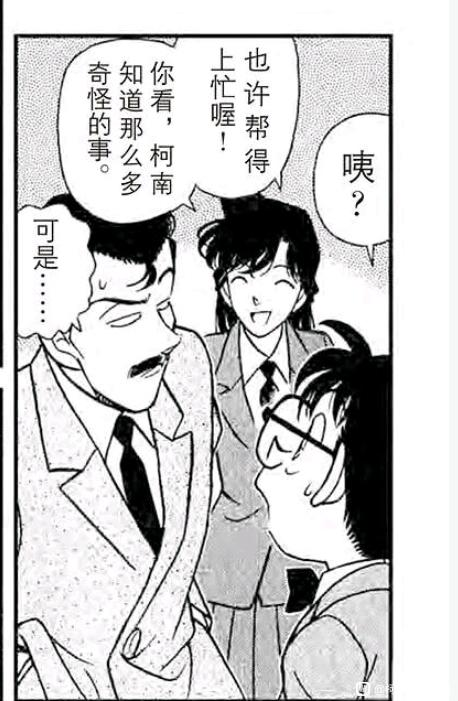
落叶缤纷之问，究竟是在问什么呢？
对于小兰来讲，面对眼前的新一，她迅速脑补了阿笠博士制造变小药的逻辑，她不需要考虑新一为什么会变小，小兰最希望得到的答案是【为什么新一变小却瞒着我】，注意小兰回忆的三个场景，小兰给柯南表白+一起洗澡+一起睡觉，全部都是亲密互动。然而，这三个场景里没有卡拉OK案，没有赤木量子案，没有外交官案，如果是正常寻求“隐瞒的原因”，应该回想新一出现的三个场景，这三个场景新一本可以不再隐瞒，却继续隐瞒还不告而别。
那么，小兰的质问就不是单纯的【隐瞒变小的理由】，而是【变小后还在我身边，我们甚至做了很多亲密互动，你却不愿意对我说真相】，这里有一个微妙的差别，此时小兰思考新一变小还是自我中心的，思考量集中在新一变小后小兰自己的感受，而丝毫不涉及新一自己可能的苦衷。
柯南应该分不出这个微妙的差别，此时的柯南选择了更加省事的办法：否认自己是新一并称“你有证据吗？”柯南面对小兰的质问已经习惯性逃避了，此时的柯南没有任何牌可打，只好希望小兰没有证据。
于是柯南的眼镜被小兰扔飞了……我们注意柯南的视线，这里柯南的主要精力甚至不在应付小兰，而在担心丢飞的眼镜，考虑到眼镜后来的护身符属性，这样的镜头真是别有深意。
可以想象，如果有希子不出现，以柯南现在对小兰的态度，他大概率会死不承认自己是新一，编出一个自己是新一亲戚的谎，但很难说服小兰。一旦这个谈话以不愉快收尾，新兰关系也将基本结束。对小兰而言，幸运的是有希子延长了谈话，让小兰终于找到正确的解题方式。
站在新一的角度思考一下。
对于小兰来讲，面对眼前的新一，她迅速脑补了阿笠博士制造变小药的逻辑，她不需要考虑新一为什么会变小，小兰最希望得到的答案是【为什么新一变小却瞒着我】，注意小兰回忆的三个场景，小兰给柯南表白+一起洗澡+一起睡觉，全部都是亲密互动。然而，这三个场景里没有卡拉OK案，没有赤木量子案，没有外交官案，如果是正常寻求“隐瞒的原因”，应该回想新一出现的三个场景，这三个场景新一本可以不再隐瞒，却继续隐瞒还不告而别。
那么，小兰的质问就不是单纯的【隐瞒变小的理由】，而是【变小后还在我身边，我们甚至做了很多亲密互动，你却不愿意对我说真相】，这里有一个微妙的差别，此时小兰思考新一变小还是自我中心的，思考量集中在新一变小后小兰自己的感受，而丝毫不涉及新一自己可能的苦衷。
柯南应该分不出这个微妙的差别，此时的柯南选择了更加省事的办法：否认自己是新一并称“你有证据吗？”柯南面对小兰的质问已经习惯性逃避了，此时的柯南没有任何牌可打，只好希望小兰没有证据。
于是柯南的眼镜被小兰扔飞了……我们注意柯南的视线，这里柯南的主要精力甚至不在应付小兰，而在担心丢飞的眼镜，考虑到眼镜后来的护身符属性，这样的镜头真是别有深意。
可以想象，如果有希子不出现，以柯南现在对小兰的态度，他大概率会死不承认自己是新一，编出一个自己是新一亲戚的谎，但很难说服小兰。一旦这个谈话以不愉快收尾，新兰关系也将基本结束。对小兰而言，幸运的是有希子延长了谈话，让小兰终于找到正确的解题方式。
站在新一的角度思考一下。
有希子与小兰的互动似乎透露着很多别扭和不愉快。
我们知道，有希子与小哀相处十分融洽，各种不守婆德的行为为我们津津乐道。而青山还刻画过服部静华与和叶的关系，同样是和谐有趣。但是小兰与有希子的每次见面都有尬点，本次也不例外。
首先，有希子看见小兰甩飞柯南的眼镜并叉腰质问，此时有希子应该是从旁边的博士家了解了一下情况，迅速过来帮柯南解围。而小兰也是毫不客气，不顾有希子远道而来，直接就对着有希子要求确认。
服部平次已经告诉我们此时的解决方法：平时互相骂无所谓，但面对长辈还是要尊重一些，但毛利一家显然没有这个习惯（很可能是父辈威严不太够，小五郎和妃英理都有各种出洋相的时刻），这就是为什么远山叔能和平藏正经地聊儿女婚事，妃英理却要跑到工藤家质问有希子没管儿子。
有希子的谎言应该比柯南想的完善一些，连江户川文代的名字都说出来了，又推翻了外貌证据，但小兰还是毫无证据地觉得有希子可能在骗她，更是乱说什么“一年级学生不会推理”，小兰又不是没见过一年级的新一，这话让我怀疑小兰真的是青梅竹马吗？
小兰全程对有希子的态度不像是对长辈的态度，反而更像是对“新一的妈妈”这个NPC人格的质问，这其实也合理，毕竟小兰眼中的新一也是抽象打包的人格。
我们知道，有希子与小哀相处十分融洽，各种不守婆德的行为为我们津津乐道。而青山还刻画过服部静华与和叶的关系，同样是和谐有趣。但是小兰与有希子的每次见面都有尬点，本次也不例外。
首先，有希子看见小兰甩飞柯南的眼镜并叉腰质问，此时有希子应该是从旁边的博士家了解了一下情况，迅速过来帮柯南解围。而小兰也是毫不客气，不顾有希子远道而来，直接就对着有希子要求确认。
服部平次已经告诉我们此时的解决方法：平时互相骂无所谓，但面对长辈还是要尊重一些，但毛利一家显然没有这个习惯（很可能是父辈威严不太够，小五郎和妃英理都有各种出洋相的时刻），这就是为什么远山叔能和平藏正经地聊儿女婚事，妃英理却要跑到工藤家质问有希子没管儿子。
有希子的谎言应该比柯南想的完善一些，连江户川文代的名字都说出来了，又推翻了外貌证据，但小兰还是毫无证据地觉得有希子可能在骗她，更是乱说什么“一年级学生不会推理”，小兰又不是没见过一年级的新一，这话让我怀疑小兰真的是青梅竹马吗？
小兰全程对有希子的态度不像是对长辈的态度，反而更像是对“新一的妈妈”这个NPC人格的质问，这其实也合理，毕竟小兰眼中的新一也是抽象打包的人格。
2024-01-23 09:01 | 林中的熊宝宝🐨:什么狗屎剧情，心疼有希子，这么好的儿子偏偏认识这么个废物2024-02-06 05:40 | 贴吧用户_GDC2WKb:这也就是有希子教养好，没直接扇她2024-03-25 05:20 | 洛菲斯♬:16岁还不会推理的兰确实可能认为7岁的柯南不可能会推理。兰希望在柯南面前保持优势地位，同样需要否定他的推理能力，认为他的推理是毫无作用的角色扮演游戏。2024-03-25 05:41 | 🌐之徙:回复 洛菲斯♬ :操哥只是笨而已，还是很有责任感的一个人
小兰真正的飞跃，在有希子和柯南的不断提示下终于达成了。
柯南的信息是：小兰很可怕。
有希子的信息是：你仔细想想看嘛，新一会这么做吗？
小兰一开始还是传统思路，想象着新一躲在母亲身后的样子，但终于顿悟了一些事情：有希子没叫小兰幻想新一的形象，她是让小兰从新一的角度思考一下，【新一会这么做吗？】
【新一变小并呆在自己身边，所有人一起欺骗小兰，新一不会没有理由这么做，新一的理由一定正当，一定不能让小兰知道。】
【小兰想知道理由，只能等新一自己说。】
【但是，即使新一什么都不和自己说，柯南毕竟陪在自己身边了，难道不是吗？往后与柯南的相处，就是与新一的相处，只要小兰好好对待柯南，也许有一天新一会主动说的吧。】
【小兰相信自己能等到那一天，于是露出释然又有些害羞的笑容。】
小兰的顿悟是巨大的进步，但太晚了，并且小兰的理解也不完全正确，她不会知道柯南入住毛利家不是为了自己，而主要是借小五郎的侦探身份调查黑衣组织，小兰的顿悟某种程度上还是自我中心的，但比起一开始只想到柯兰亲密举动要好太多了。
从这一刻开始，小兰对柯南的态度不再是代餐的态度，而是一半猜测一半确信的对新一的态度，新兰关系真正的起点开始了。
柯南的信息是：小兰很可怕。
有希子的信息是：你仔细想想看嘛，新一会这么做吗？
小兰一开始还是传统思路，想象着新一躲在母亲身后的样子，但终于顿悟了一些事情：有希子没叫小兰幻想新一的形象，她是让小兰从新一的角度思考一下，【新一会这么做吗？】
【新一变小并呆在自己身边，所有人一起欺骗小兰，新一不会没有理由这么做，新一的理由一定正当，一定不能让小兰知道。】
【小兰想知道理由，只能等新一自己说。】
【但是，即使新一什么都不和自己说，柯南毕竟陪在自己身边了，难道不是吗？往后与柯南的相处，就是与新一的相处，只要小兰好好对待柯南，也许有一天新一会主动说的吧。】
【小兰相信自己能等到那一天，于是露出释然又有些害羞的笑容。】
小兰的顿悟是巨大的进步，但太晚了，并且小兰的理解也不完全正确，她不会知道柯南入住毛利家不是为了自己，而主要是借小五郎的侦探身份调查黑衣组织，小兰的顿悟某种程度上还是自我中心的，但比起一开始只想到柯兰亲密举动要好太多了。
从这一刻开始，小兰对柯南的态度不再是代餐的态度，而是一半猜测一半确信的对新一的态度，新兰关系真正的起点开始了。
小兰的进步有没有代价呢？代价是有希子的观感。
由于极力试图向柯南表示善意，小兰的道歉完全只针柯南一个人，仿佛有希子是一个使用完毕的NPC，已经没有对话的必要。
小兰甚至准备直接带柯南走了，要知道从魔术师案开始，柯南就一直在饿肚子，后来又追凶手跑步，又被小兰叫去买菜，此时时间已过午夜，小兰想带柯南吃饭也和她的顿悟一样迟缓。但是，至少要和有希子打声招呼吧！
然而小兰完全不和有希子说话，甚至再见也是对柯南说的，原因是多方面的，小兰应该早就不那么喜欢有希子，至少纽约篇小兰就对有希子飙车不满，而这里除了不想与有希子打招呼外，还掺杂了一些讨好柯南用力过猛的成分，这符合小兰一贯的计划风格，想让父母复合就不管推荐工作会不会让父母吵架，讨好柯南就忘记有希子是新一的妈妈。
总之不管怎样，小兰还是走出坚实的一步，终于能在新一的立场想一些事情，但不幸的是，我们知道小兰并没有坚持到底。
由于极力试图向柯南表示善意，小兰的道歉完全只针柯南一个人，仿佛有希子是一个使用完毕的NPC，已经没有对话的必要。
小兰甚至准备直接带柯南走了，要知道从魔术师案开始，柯南就一直在饿肚子，后来又追凶手跑步，又被小兰叫去买菜，此时时间已过午夜，小兰想带柯南吃饭也和她的顿悟一样迟缓。但是，至少要和有希子打声招呼吧！
然而小兰完全不和有希子说话，甚至再见也是对柯南说的，原因是多方面的，小兰应该早就不那么喜欢有希子，至少纽约篇小兰就对有希子飙车不满，而这里除了不想与有希子打招呼外，还掺杂了一些讨好柯南用力过猛的成分，这符合小兰一贯的计划风格，想让父母复合就不管推荐工作会不会让父母吵架，讨好柯南就忘记有希子是新一的妈妈。
总之不管怎样，小兰还是走出坚实的一步，终于能在新一的立场想一些事情，但不幸的是，我们知道小兰并没有坚持到底。
2024-01-23 10:47 | 叶琢琢🍀:才发现小兰居然全程没和有希子说话这点2024-01-24 00:17 | 2014只蝴蝶飞过:太离谱了
回复 叶琢琢🍀 :啊，所以不光是有希子不咋喜欢小兰，小兰也不咋喜欢有希子。对比小哀的态度可以看出，小哀对有希子还是很欣赏的。2024-01-24 01:02 | 没字也行:篇幅所限的可能性很大（没那么多格子来构建婆媳关系）。真正石锤是在纽约篇，滑雪篇。2024-01-24 01:03 | 没字也行:滑雪篇是有希子真不待见兰，对比平和被爆杀2024-01-24 01:18 | 🌐之徙:回复 没字也行 :这里我觉得不是篇幅所限，青山宁可画柯南在有希子【】里飙车，也不愿意让小兰礼貌一点。2024-01-24 02:18 | 没字也行:回复 🌐之徙 : 小兰好像在逃避和有希子的交流（可能也感觉到有希子对自己不对付，不敢说）。明明可以顺着话题问有希子，对最近新一的事情清楚吗这样的。或者就是单纯的没话题.......2024-01-24 02:47 | 🌐之徙:回复 没字也行 :确实是逃避，我感觉小兰特别怕实锤新一一家人合起来骗她
楼主牛逼 一路看下来对小五郎观感提升了不少
一路看下来对小五郎观感提升了不少第67天：䉤内遗产案
这是漫画中优作与有希子联合解决的第一个案件，同时又是山村操登场的一话。我们注意到，操哥登场甚至早于高木，仅仅晚于横沟重悟。
新警官登场是为剧情服务的，天下一夜祭中柯兰关系进入谷底，于是出现更聪明的横沟以瓜分小兰的华生功能；而落叶缤纷后新兰关系重新出发，于是出现更傻的操哥，以让小兰获得破案体验。
后续的案件中，似乎有操哥多兰，横沟多哀的分配倾向，这种警官分配方式，似乎意味着小兰只有在周围智商水平较低时才比较能发挥作用，与操哥一起怕鬼。而小哀的塑造却不需要拉低警官水平，反而经常让横沟兄弟作为柯哀名场面见证者，于是横沟兄弟迅速生锈。
如果再结合操哥怕鬼，知道七只乌鸦却对主线毫无了解，靠近案发现场却游离于状况外等等特征，似乎还能得出“操为兰副”的结论，当然这个结论就见仁见智了。
这是漫画中优作与有希子联合解决的第一个案件，同时又是山村操登场的一话。我们注意到，操哥登场甚至早于高木，仅仅晚于横沟重悟。
新警官登场是为剧情服务的，天下一夜祭中柯兰关系进入谷底，于是出现更聪明的横沟以瓜分小兰的华生功能；而落叶缤纷后新兰关系重新出发，于是出现更傻的操哥，以让小兰获得破案体验。
后续的案件中，似乎有操哥多兰，横沟多哀的分配倾向，这种警官分配方式，似乎意味着小兰只有在周围智商水平较低时才比较能发挥作用，与操哥一起怕鬼。而小哀的塑造却不需要拉低警官水平，反而经常让横沟兄弟作为柯哀名场面见证者，于是横沟兄弟迅速生锈。
如果再结合操哥怕鬼，知道七只乌鸦却对主线毫无了解，靠近案发现场却游离于状况外等等特征，似乎还能得出“操为兰副”的结论，当然这个结论就见仁见智了。
2024-01-24 06:41 | 没字也行:“七只乌鸦却对主线毫无了解”---也可以反过来套，BOSS是兰神的熟悉的人2024-03-25 05:38 | 洛菲斯♬:看到有人说同情毛利兰被塑造成糟糕的角色，我就会想，怎么不同情下山村操，人又傻，长得又丑，一出场就是做丑角，还干着自己根本没能力干的工作，才不配位，观感极差，惨得不行。完全没有理由不接受毛利兰做丑角却接受山村操做丑角。
本案虽说是优作有希子糖，但是还是隐藏了一些新兰关系的信息，集中表现在众人对于“柯兰洗澡”的看法。
我们知道柯兰洗澡时，不但小五郎知道，小五郎的同学们也知道。而我们又知道妃英理和有希子也是同学，很可能有希子已经从别的渠道听说了这件事，又找阿笠博士确认了一下。
有希子对这件事的态度看似戏谑，其实是比较严肃的，她通过【让柯南和妈妈一起洗】的破窗效应，提醒柯南这种洗澡很不正常，如果新兰最后HE还好一些，万一新兰分手，而小兰又得知柯南是新一，那么【被欺骗感情】的小兰几乎一定会使用暴力，甚至做出一些极端举动。（当然，小五郎同学会的柯南其实是被小兰强迫的）
我们发现，有希子对新兰的其他互动并不太关心，相比于对小哀又是看眼神又是跑去给她做饭，有希子评价小兰时重点总是在洗澡之类的事情，而且其预测总是建立在新兰可能的分手上，似乎有希子对新兰的结局早有预感。
作为名柯世界的情商天花板，看着新兰青梅竹马一路过来的人，有希子的预测恐怕比大部分人都要准确一些，她会不会从现在开始提醒柯南做一些重要的准备呢？
我们知道柯兰洗澡时，不但小五郎知道，小五郎的同学们也知道。而我们又知道妃英理和有希子也是同学，很可能有希子已经从别的渠道听说了这件事，又找阿笠博士确认了一下。
有希子对这件事的态度看似戏谑，其实是比较严肃的，她通过【让柯南和妈妈一起洗】的破窗效应，提醒柯南这种洗澡很不正常，如果新兰最后HE还好一些，万一新兰分手，而小兰又得知柯南是新一，那么【被欺骗感情】的小兰几乎一定会使用暴力，甚至做出一些极端举动。（当然，小五郎同学会的柯南其实是被小兰强迫的）
我们发现，有希子对新兰的其他互动并不太关心，相比于对小哀又是看眼神又是跑去给她做饭，有希子评价小兰时重点总是在洗澡之类的事情，而且其预测总是建立在新兰可能的分手上，似乎有希子对新兰的结局早有预感。
作为名柯世界的情商天花板，看着新兰青梅竹马一路过来的人，有希子的预测恐怕比大部分人都要准确一些，她会不会从现在开始提醒柯南做一些重要的准备呢？
我们再来看看，同样是心上人隐藏身份躲在自己身边，有希子与小兰有什么不同。
本案由于优作吃瘪，只能偷偷藏着，等一个向有希子示好的时机，优作这次藏得不错，置换了一个真实存在的人物，还一度骗过柯南。
但是优作的伪装被有希子识破的速度非常快，有希子完全知道优作一定会过来追她，于是到处寻找线索，一下子就找到优作的烟头，露出类似小哀七朵玫瑰的微笑。而小兰显然是没有这个自信的，对于小兰来说，即使发现柯南是新一，小兰也不敢奢望柯南会对她说出真相。
【以上只是第一层】
优作怎么可能不小心留下烟头这种信息呢？更何况优作平时也不抽烟，所以事实的真相是优作故意留下烟头，让有希子提前知道自己要来。
【以上只是第二层】
有希子其实根本不需要烟头，早在柯南冲进优作躲藏的房间时有希子就对柯南进行了阻拦，她早就觉得这个可疑男子就是优作了，那有希子为什么捡到烟头还是很开心呢？因为这代表优作认输啦！
【以下是柯南所在的层】
柯南啥也不知道地成为父母play的一部分，不过在柯南发现母亲捡起烟头微笑后，大体上也能猜到第一层，所以本案柯南的推理（麻醉操哥）冗长无比，我怀疑是为了给优作组织发言的时间，不料优作推理的真相又比柯南高一层，柯南十分难受。
大体上优作和有希子的关系可以轻松进行第三层以上的互动，而小兰连第一层都很难通过，小五郎和妃英理可以进行第二层互动（故意留下线索并被对方发现）但不能进行第三层（不能理解留下线索的含义）。
而一个眼镜被点歪的比护挂件告诉我们，柯哀也可以进行第三甚至更多层的互动，这或许就是能被称为“恋爱喜剧”的元素吧。
本案由于优作吃瘪，只能偷偷藏着，等一个向有希子示好的时机，优作这次藏得不错，置换了一个真实存在的人物，还一度骗过柯南。
但是优作的伪装被有希子识破的速度非常快，有希子完全知道优作一定会过来追她，于是到处寻找线索，一下子就找到优作的烟头，露出类似小哀七朵玫瑰的微笑。而小兰显然是没有这个自信的，对于小兰来说，即使发现柯南是新一，小兰也不敢奢望柯南会对她说出真相。
【以上只是第一层】
优作怎么可能不小心留下烟头这种信息呢？更何况优作平时也不抽烟，所以事实的真相是优作故意留下烟头，让有希子提前知道自己要来。
【以上只是第二层】
有希子其实根本不需要烟头，早在柯南冲进优作躲藏的房间时有希子就对柯南进行了阻拦，她早就觉得这个可疑男子就是优作了，那有希子为什么捡到烟头还是很开心呢？因为这代表优作认输啦！
【以下是柯南所在的层】
柯南啥也不知道地成为父母play的一部分，不过在柯南发现母亲捡起烟头微笑后，大体上也能猜到第一层，所以本案柯南的推理（麻醉操哥）冗长无比，我怀疑是为了给优作组织发言的时间，不料优作推理的真相又比柯南高一层，柯南十分难受。
大体上优作和有希子的关系可以轻松进行第三层以上的互动，而小兰连第一层都很难通过，小五郎和妃英理可以进行第二层互动（故意留下线索并被对方发现）但不能进行第三层（不能理解留下线索的含义）。
而一个眼镜被点歪的比护挂件告诉我们，柯哀也可以进行第三甚至更多层的互动，这或许就是能被称为“恋爱喜剧”的元素吧。
案件的尾声，我认为这是柯南又一次重要的成长。
手法上柯南学会了保护关键人物的方法：自己扮演这个关键人物。柯南将多次以这种办法保护小哀。（小哀登场前用步美练手）
并且柯南终于目睹了一次高质量的爱情，经验不再完全是零了，这至少能让柯南面对小兰时不至于完全被绑架。
而更关键的是，柯南第一次得到母亲的直接提示，这个提示可以和东都显像馆对比看待，同样是发现女生喜欢柯南，有希子对小哀是“要保护好她”，对小兰却是“不要被她发现”，有希子的天平实在过于明显，她甚至从来没有考虑过让小兰成为柯南的助手，而选择了完全的隐瞒。
小兰在有希子面前多次的表现，终于被有希子认定为不可靠，这也意味着【柯南主动向小兰说出真相】（类似新干线或者M3）的道路被彻底堵死，小兰唯一的机会只剩下自己发现真相。
表面上，小兰几乎成功了，可实际上，即使最接近的危命复活，小兰仍然没有改变自己的命运，反而在危命复活后更加远离。新兰，这对被有希子标注为悲观的关系，宛如下降的云霄飞车般，虽然会暂时的加速，却正在不断失去能量，最终彻底停滞。
手法上柯南学会了保护关键人物的方法：自己扮演这个关键人物。柯南将多次以这种办法保护小哀。（小哀登场前用步美练手）
并且柯南终于目睹了一次高质量的爱情，经验不再完全是零了，这至少能让柯南面对小兰时不至于完全被绑架。
而更关键的是，柯南第一次得到母亲的直接提示，这个提示可以和东都显像馆对比看待，同样是发现女生喜欢柯南，有希子对小哀是“要保护好她”，对小兰却是“不要被她发现”，有希子的天平实在过于明显，她甚至从来没有考虑过让小兰成为柯南的助手，而选择了完全的隐瞒。
小兰在有希子面前多次的表现，终于被有希子认定为不可靠，这也意味着【柯南主动向小兰说出真相】（类似新干线或者M3）的道路被彻底堵死，小兰唯一的机会只剩下自己发现真相。
表面上，小兰几乎成功了，可实际上，即使最接近的危命复活，小兰仍然没有改变自己的命运，反而在危命复活后更加远离。新兰，这对被有希子标注为悲观的关系，宛如下降的云霄飞车般，虽然会暂时的加速，却正在不断失去能量，最终彻底停滞。
送走父母后，柯兰见面，小兰的第一次试探开始了。
很容易注意到，小兰的全套质问理由完全站不住脚，有希子已经说了借柯南两三天，这两三天柯南的行程完全可以预料，肯定是被有希子叫出去，根本不可能待在家里。
小兰真正想问的是【和你妈妈出去可以，但要告诉我真相，至少我要知道“新一“去哪了】，这是小兰缺乏安全感的体现，她最担心的事情，即柯南母子一起骗她，显然已经发生，小兰试图通过这样的质问，让柯南对她说出真相。
柯南摆出一张扑克脸。
对柯南来讲，他宁愿相信小兰没有发现真相，而完全不愿意给小兰一个哪怕是应付的答案。小兰需要做的事情还很多，她将立刻行动，开始小兰生涯中最完备的一个计划：从滑雪别墅到危命复活，让新一主动向她表白。
很容易注意到，小兰的全套质问理由完全站不住脚，有希子已经说了借柯南两三天，这两三天柯南的行程完全可以预料，肯定是被有希子叫出去，根本不可能待在家里。
小兰真正想问的是【和你妈妈出去可以，但要告诉我真相，至少我要知道“新一“去哪了】，这是小兰缺乏安全感的体现，她最担心的事情，即柯南母子一起骗她，显然已经发生，小兰试图通过这样的质问，让柯南对她说出真相。
柯南摆出一张扑克脸。
对柯南来讲，他宁愿相信小兰没有发现真相，而完全不愿意给小兰一个哪怕是应付的答案。小兰需要做的事情还很多，她将立刻行动，开始小兰生涯中最完备的一个计划：从滑雪别墅到危命复活，让新一主动向她表白。
分割线：第69天，小兰开始攻略新一/柯南计划
------
------
十七：幸运的小兰--新兰关系的随机数
第69天的滑雪别墅案又一次标注了大时间线：1996年12月21日，按照我们一个月＝2天的简易公式，大小时间线系统依然运转良好。
本案是小兰第一次完整体验破案流程，柯南以新一身份全程指导小兰破案，但炙热的真相烫伤了小兰，考验着小兰继续前进的勇气。
在进入这个案件之前，有一个值得注意的地方：这本以落叶缤纷之问为核心的漫画分卷中，青山的名侦探图鉴却是蔻蒂莉亚•葛蕾，后被阿笠博士证实为灰原哀的形象来源。如果说明美案的宫野志保只有剪影，那么我们可以认为当落叶缤纷质问时，灰原哀的形象已经基本完成。
这是巧合吗？恐怕是有意的安排，并且：
【并不是青山在新兰篇章后放置灰原哀元素，而是为了让小哀登场，青山选择让新兰升温以增加柯哀推进难度】
换而言之，新兰感情的推进是为柯哀服务的，就像白鸟出场推动高佐，红叶登场推动平和一样，只是柯哀的周期是最长的，比较隐晦罢了。
第69天的滑雪别墅案又一次标注了大时间线：1996年12月21日，按照我们一个月＝2天的简易公式，大小时间线系统依然运转良好。
本案是小兰第一次完整体验破案流程，柯南以新一身份全程指导小兰破案，但炙热的真相烫伤了小兰，考验着小兰继续前进的勇气。
在进入这个案件之前，有一个值得注意的地方：这本以落叶缤纷之问为核心的漫画分卷中，青山的名侦探图鉴却是蔻蒂莉亚•葛蕾，后被阿笠博士证实为灰原哀的形象来源。如果说明美案的宫野志保只有剪影，那么我们可以认为当落叶缤纷质问时，灰原哀的形象已经基本完成。
这是巧合吗？恐怕是有意的安排，并且：
【并不是青山在新兰篇章后放置灰原哀元素，而是为了让小哀登场，青山选择让新兰升温以增加柯哀推进难度】
换而言之，新兰感情的推进是为柯哀服务的，就像白鸟出场推动高佐，红叶登场推动平和一样，只是柯哀的周期是最长的，比较隐晦罢了。
2024-02-24 17:31 | 雪者风形:说起来……宏观上，现状大概是通过新兰的官配化表象来暂时维持工藤新一存续的必要性吧，毕竟越往后工藤新一的必要性越小，江户川柯南的必要性越大。感觉新兰的限速器作用和砝码作用还是挺明显的。
回到滑雪别墅案本身。
在目睹小兰的成长之前，柯南首先看到的是小兰的著名特征，即英理案一位渣男提到的“几句甜言蜜语就手到擒来”的特点。（恰好当时渣男也声称自己是在滑雪场遇到的女生，即园子）
这几位滑雪场的男老师假装是滑雪教练，并进行了甜言蜜语，我们注意到园子看似很感兴趣，其实并没有小兰那么积极，这里园子运行了一贯的策略，让小兰“吸引走”潜在渣男。果不其然，小兰不但对两位男性“滑雪教练”的身份深信不疑，还在米原老师出现时进行了拉皮条活动。
更关键的是，小兰此时基本知道身旁的柯南就是新一，却还是顶着园子“你有新一了”的提醒，上前与甜言蜜语的男老师搭话。在柯南心中，这再一次验证了英理案那位渣男说的话对小兰完全适用，本案一开始小兰就给柯南留下稍负面的印象。
不过，为了让小哀出场时拥有强大的敌人，小兰的运气被设置为最高。尽管拥有负面印象，小兰本案还是超常发挥并真正成长，而且小兰成长的情况同样被柯南观测到。
然而这不是小兰本人有成长的能力，而是一系列随机事件的组合，如果小兰只能依靠随机数成长，那么她事实上进行的是必败的战斗。
在目睹小兰的成长之前，柯南首先看到的是小兰的著名特征，即英理案一位渣男提到的“几句甜言蜜语就手到擒来”的特点。（恰好当时渣男也声称自己是在滑雪场遇到的女生，即园子）
这几位滑雪场的男老师假装是滑雪教练，并进行了甜言蜜语，我们注意到园子看似很感兴趣，其实并没有小兰那么积极，这里园子运行了一贯的策略，让小兰“吸引走”潜在渣男。果不其然，小兰不但对两位男性“滑雪教练”的身份深信不疑，还在米原老师出现时进行了拉皮条活动。
更关键的是，小兰此时基本知道身旁的柯南就是新一，却还是顶着园子“你有新一了”的提醒，上前与甜言蜜语的男老师搭话。在柯南心中，这再一次验证了英理案那位渣男说的话对小兰完全适用，本案一开始小兰就给柯南留下稍负面的印象。
不过，为了让小哀出场时拥有强大的敌人，小兰的运气被设置为最高。尽管拥有负面印象，小兰本案还是超常发挥并真正成长，而且小兰成长的情况同样被柯南观测到。
然而这不是小兰本人有成长的能力，而是一系列随机事件的组合，如果小兰只能依靠随机数成长，那么她事实上进行的是必败的战斗。
由于一上来就看见小兰没什么边界感的行为，柯南显得不太高兴。不过柯南很快就感到欣慰一些，因为小兰终于用空手道做了一些正确的事情：打破房门救园子。
自福尔摩斯迷案以来，小兰大体上紧跟了三胞胎，插画家，魔术师三个案子，对案件的敏锐程度显著提高，加之本次受害人是园子，小兰爆发出惊人的反应力和责任感。
柯南对此的反应是：没反应过来。
是的，遇见上锁的门时，柯南根本没想到旁边有一位赤木量子案时就证明的【破门高手】，而是准备用球鞋（当时没穿）踢门，直到小兰进行准备动作，柯南才反应过来--哦，原来小兰要踢门，原来小兰可以踢门。
但是柯南似乎没有这个记忆，是服部和他一起追下坠的汽车，是小五郎陪他跑第一案发现场……等等，小兰上一次有效空手道要追溯到什么时候？
……
柯南的第一个案件，董事长千金绑架案。
没错，隔了这么久，小兰的空手道第二次有效，而柯南更多看见的是不敢打绷带怪人，不想打前田聪，锤击桌子逼小五郎和柯南去美术馆，扫腿踢晕小五郎等等各种迷惑行为。
小兰终于在机缘巧合下，不再是案件的局外人，不再是案件的普通旁观者，而是案件中积极保护他人生命的勇士。也因此，柯南对小兰的观感逐渐正面。
但还是机缘巧合，小兰知道是新一在身边，知道是园子被攻击，尽管曾经“救下贝尔摩德”，但小兰救人还是需要理由的。不过，这已经是巨大的进步了。
自福尔摩斯迷案以来，小兰大体上紧跟了三胞胎，插画家，魔术师三个案子，对案件的敏锐程度显著提高，加之本次受害人是园子，小兰爆发出惊人的反应力和责任感。
柯南对此的反应是：没反应过来。
是的，遇见上锁的门时，柯南根本没想到旁边有一位赤木量子案时就证明的【破门高手】，而是准备用球鞋（当时没穿）踢门，直到小兰进行准备动作，柯南才反应过来--哦，原来小兰要踢门，原来小兰可以踢门。
但是柯南似乎没有这个记忆，是服部和他一起追下坠的汽车，是小五郎陪他跑第一案发现场……等等，小兰上一次有效空手道要追溯到什么时候？
……
柯南的第一个案件，董事长千金绑架案。
没错，隔了这么久，小兰的空手道第二次有效，而柯南更多看见的是不敢打绷带怪人，不想打前田聪，锤击桌子逼小五郎和柯南去美术馆，扫腿踢晕小五郎等等各种迷惑行为。
小兰终于在机缘巧合下，不再是案件的局外人，不再是案件的普通旁观者，而是案件中积极保护他人生命的勇士。也因此，柯南对小兰的观感逐渐正面。
但还是机缘巧合，小兰知道是新一在身边，知道是园子被攻击，尽管曾经“救下贝尔摩德”，但小兰救人还是需要理由的。不过，这已经是巨大的进步了。
小兰的积极不仅体现在破门救园子，她还迅速侦查发现园子手上的标记，陪着柯南追踪犯人的逃跑路线。应该说，柯南从未见过这样的小兰，心里给小兰加了好多分，这大大影响了柯南破案时的判断，让柯南再一次产生了将小兰带入侦探世界的想法（该想法早在电视台案就被否决了）
不过小兰又迅速表现了自己的大嘴巴特质，本次案件存在一位技术高超的记者，他不断打听着一切有价值的信息。而在这种人面前，小兰公然聊起工藤新一。
（小兰四年级的时候就把全班午餐费丢给隔壁班，结果这么多年过去，还是把新一的身份弄得人尽皆知……真是一点没改变）
小兰这些话，代表她对侦探这个职业还很不认真。因为这些话不是说给老师听或记者听，而是说给柯南听的。小兰似乎认为破案是一件简单的事情（小五郎和园子都简简单单破案了），她这些话无非是催促柯南快点破案。
而后，当记者拿出“工藤新一在某次案件中死了”的官方说法后，小兰的反应更加不靠谱了，她居然要和记者争论新一没死，差点就要把“我经常和新一通电话”说出来，甚至可能说“柯南就是新一”，吓得柯南迅速阻止小兰。
这段变故让小兰的前景再次模糊，柯南是有意让小兰进入侦探的世界，但如果小兰一直是这个状态，风险实在太高了，柯南必须要让小兰对侦探的严肃性有所认知，否则让小兰推理只会害了她。
不过小兰又迅速表现了自己的大嘴巴特质，本次案件存在一位技术高超的记者，他不断打听着一切有价值的信息。而在这种人面前，小兰公然聊起工藤新一。
（小兰四年级的时候就把全班午餐费丢给隔壁班，结果这么多年过去，还是把新一的身份弄得人尽皆知……真是一点没改变）
小兰这些话，代表她对侦探这个职业还很不认真。因为这些话不是说给老师听或记者听，而是说给柯南听的。小兰似乎认为破案是一件简单的事情（小五郎和园子都简简单单破案了），她这些话无非是催促柯南快点破案。
而后，当记者拿出“工藤新一在某次案件中死了”的官方说法后，小兰的反应更加不靠谱了，她居然要和记者争论新一没死，差点就要把“我经常和新一通电话”说出来，甚至可能说“柯南就是新一”，吓得柯南迅速阻止小兰。
这段变故让小兰的前景再次模糊，柯南是有意让小兰进入侦探的世界，但如果小兰一直是这个状态，风险实在太高了，柯南必须要让小兰对侦探的严肃性有所认知，否则让小兰推理只会害了她。
2024-01-26 02:36 | 付出与过于丰富:我想问小兰四年级的时候把全班午餐费丢给隔壁班是在哪一话啊？我怎么没这印象，但我觉得有种既然是小兰有这种事那也不觉得奇怪的奇妙观感2024-01-26 03:24 | 🌐之徙:回复 付出与过于丰富 :就在本楼图片里，小兰与老师的回忆。2024-02-24 17:36 | 雪者风形:小学时这俩还不是一个班啊……比印象里远一点了属于是。2024-02-24 18:48 | 🌐之徙:回复 雪者风形 :应该是一个班
为了破案，柯南选择向博士打电话进行场外支援（后来怎么不打给博士了？哼哼……）
不巧，博士的回电被小兰发现，博士还在电话里喊新一，这下小兰完全确认博士从头骗到尾了。生气的小兰故意问博士“新一在不在他那边”，而刚刚目睹大嘴巴小兰的柯南自然不可能告诉小兰任何真相。
与此同时又一次案件发生，我们注意到小兰并没有继续缠博士（类似于外交官案，小兰缠住新一问很多问题），而是配合柯南对案件现场进行观测，从这个角度说，尽管小兰保持了对长辈的一贯态度，但好歹没有和案件开玩笑，也算是一种进步了。
至于这种进步，是否只是偶然的，因为“小兰知道柯南是新一”而产生的随机反应，就见仁见智了。
不巧，博士的回电被小兰发现，博士还在电话里喊新一，这下小兰完全确认博士从头骗到尾了。生气的小兰故意问博士“新一在不在他那边”，而刚刚目睹大嘴巴小兰的柯南自然不可能告诉小兰任何真相。
与此同时又一次案件发生，我们注意到小兰并没有继续缠博士（类似于外交官案，小兰缠住新一问很多问题），而是配合柯南对案件现场进行观测，从这个角度说，尽管小兰保持了对长辈的一贯态度，但好歹没有和案件开玩笑，也算是一种进步了。
至于这种进步，是否只是偶然的，因为“小兰知道柯南是新一”而产生的随机反应，就见仁见智了。
2024-01-25 09:18 | ghh19890923:210楼被吞了2024-01-25 09:29 | 🌐之徙:回复 ghh19890923 :正在申请恢复2024-02-21 12:38 | FTAC_X2:这就是博士一以贯之的debuff了……明明在其他人面前可以叫柯南，但只要是类似单独相处的情况就非要改回来叫新一，总让人担心会不经意间被其他人听到2024-03-15 11:16 | 炙颜汐:回复 FTAC_X2 :这点真的很让人担心，万一朗姆甚至BOSS亲自监听，很容易就露馅的
在收集了若干轮线索后，柯南可以破案了，不过他需要一位破案代言人，我们沿着柯南的思路，可以一窥柯南此时对小兰的看法：
方案一，射击园子，被迅速否决，因为园子大半时间在睡觉，根本不能有线索。（换而言之，如果是小兰被迷晕，柯南将直接用园子破案，小兰将什么都不经历，自然没有成长）
方案二、麻醉小兰，同样被否决。柯南想起了父母的提醒，即小兰很可能在怀疑柯南，如果让小兰麻醉破案，最大的风险是小兰发现自己和父亲/园子状态一致，并结合柯南在旁边，得出小五郎的全部推理都不是本人的结论，这是比柯南自己身份暴露更高的外溢风险，很可能导致小五郎泡沫破碎并完全失去调查黑衣组织的平台。
方案三、卡拉OK方案，由于记者的存在而不可行，注意这个方案被认为是比麻醉小兰更安全的，即【柯南宁可新一登报，也不愿意小五郎泡沫破碎】，即使小兰一直怀疑柯南是新一，只要麻醉针不被发现，小五郎还是能吸引火力。对柯南而言，【向黑衣组织进攻比保护毛利一家要重要一些】
有些残忍，但就是这样。
不过小兰也不是全无收获，因为柯南选择了一个【相比破案，更倾向于照顾小兰的方案】，这是小兰本案积极行动赢得的奖励。
方案一，射击园子，被迅速否决，因为园子大半时间在睡觉，根本不能有线索。（换而言之，如果是小兰被迷晕，柯南将直接用园子破案，小兰将什么都不经历，自然没有成长）
方案二、麻醉小兰，同样被否决。柯南想起了父母的提醒，即小兰很可能在怀疑柯南，如果让小兰麻醉破案，最大的风险是小兰发现自己和父亲/园子状态一致，并结合柯南在旁边，得出小五郎的全部推理都不是本人的结论，这是比柯南自己身份暴露更高的外溢风险，很可能导致小五郎泡沫破碎并完全失去调查黑衣组织的平台。
方案三、卡拉OK方案，由于记者的存在而不可行，注意这个方案被认为是比麻醉小兰更安全的，即【柯南宁可新一登报，也不愿意小五郎泡沫破碎】，即使小兰一直怀疑柯南是新一，只要麻醉针不被发现，小五郎还是能吸引火力。对柯南而言，【向黑衣组织进攻比保护毛利一家要重要一些】
有些残忍，但就是这样。
不过小兰也不是全无收获，因为柯南选择了一个【相比破案，更倾向于照顾小兰的方案】，这是小兰本案积极行动赢得的奖励。
按照柯南的方案思路，下一个想到的方案是：
【在小兰的电话中伪装阿笠博士的声音，使用阿笠博士身份远程破案，对大众解释为阿笠博士听了小兰和柯南的话进行独立破案】
这个方案可以最大程度避免信息泄露，因为全程不会出现新一的名字，柯南伪装阿笠博士也有经验，但柯南没有这么做。
此时柯南的思考量集中于给小兰破案体验，让小兰体会一下做侦探的艰难，于是方案变为【用新一声音指导小兰破案】，这个方案会提升小兰发现自己身份的概率，但柯南不太在乎，他希望的是小兰能有直面真相的勇气。
而小兰此前唯一的侦探经验是明美案完全靠运气找到广田先生，她对侦探职业完全是戏谑的态度，大概是认为柯南已经破案（确实如此），所以准备把柯南拎回去看他怎么表演。当听到新一要她破案的声音时，小兰虽然本能闪躲了一下，但还是跃跃欲试。
柯南不能把这样的小兰当成助手，于是小兰进入侦探世界的第一课开始了。
【在小兰的电话中伪装阿笠博士的声音，使用阿笠博士身份远程破案，对大众解释为阿笠博士听了小兰和柯南的话进行独立破案】
这个方案可以最大程度避免信息泄露，因为全程不会出现新一的名字，柯南伪装阿笠博士也有经验，但柯南没有这么做。
此时柯南的思考量集中于给小兰破案体验，让小兰体会一下做侦探的艰难，于是方案变为【用新一声音指导小兰破案】，这个方案会提升小兰发现自己身份的概率，但柯南不太在乎，他希望的是小兰能有直面真相的勇气。
而小兰此前唯一的侦探经验是明美案完全靠运气找到广田先生，她对侦探职业完全是戏谑的态度，大概是认为柯南已经破案（确实如此），所以准备把柯南拎回去看他怎么表演。当听到新一要她破案的声音时，小兰虽然本能闪躲了一下，但还是跃跃欲试。
柯南不能把这样的小兰当成助手，于是小兰进入侦探世界的第一课开始了。
拥有新一的加持后，小兰变得充满自信，她甚至准备好好利用这次机会，为“小五郎名气计划”增加一些胜算，即让记者报道自己的光辉事迹（尽管完全是新一破案的）
我们注意，除了要求记者写个好点的标题是临场发挥，这里小兰完全是把电话里的声音复述出来而已，小兰接收这些信息时，主要是把自己放置在听众的角度，并没有对信息进行什么思考。（可以对比阿笠博士经常冒出来几句“原来如此“，阿笠博士是会思考柯南说出来的话的）
而这也让小兰更加确定身后的柯南就是新一，这种简单复述还要符合语境，就只能是柯南在附近指挥。带着无与伦比的自信，小兰根本没有意识到，自己其实早已经得出凶手是谁，却一点心理准备都没有，还在继续复述。
推理的最后一刻，小兰终于直面残酷的真实。
我们注意，除了要求记者写个好点的标题是临场发挥，这里小兰完全是把电话里的声音复述出来而已，小兰接收这些信息时，主要是把自己放置在听众的角度，并没有对信息进行什么思考。（可以对比阿笠博士经常冒出来几句“原来如此“，阿笠博士是会思考柯南说出来的话的）
而这也让小兰更加确定身后的柯南就是新一，这种简单复述还要符合语境，就只能是柯南在附近指挥。带着无与伦比的自信，小兰根本没有意识到，自己其实早已经得出凶手是谁，却一点心理准备都没有，还在继续复述。
推理的最后一刻，小兰终于直面残酷的真实。
推理结束后，小兰反思之前的“小五郎名气计划”，那是多么幼稚的计划啊，侦探推理根本不是基于名气，小兰终于克服自云霄飞车陷入的名气陷阱。
小兰突然发现侦探不是什么有趣的职业，新一曾经说过的“揭露犯人的满足感”是多么空虚，这是月光案柯南在火焰中领悟的痛苦道理。
前田聪与米原老师都是小兰的偶像，她以为偶像是不会犯罪的，前田聪毕竟没有真的杀人，但米原老师进行了连续杀人，这是柯南还没有经历过的大阪3K事件所遭遇的痛苦。
连续越过侦探世界的三个巨大阻碍，小兰疲惫不堪，如果侦探追求的真相如此悲伤，为什么还要有侦探？
小兰的父亲说：当侦探的没一个好东西。
小兰的母亲说：要小心青梅竹马的侦探。
新一说：要成为平成年代的福尔摩斯。
侦探，像鲨鱼一样追求血淋淋的真相，真相的炙热散发出刺眼的光芒，小兰在机缘巧合之下遭遇这种光芒，她抱住柯南/新一而失声痛哭。
对小兰而言还是太沉重了。
小兰突然发现侦探不是什么有趣的职业，新一曾经说过的“揭露犯人的满足感”是多么空虚，这是月光案柯南在火焰中领悟的痛苦道理。
前田聪与米原老师都是小兰的偶像，她以为偶像是不会犯罪的，前田聪毕竟没有真的杀人，但米原老师进行了连续杀人，这是柯南还没有经历过的大阪3K事件所遭遇的痛苦。
连续越过侦探世界的三个巨大阻碍，小兰疲惫不堪，如果侦探追求的真相如此悲伤，为什么还要有侦探？
小兰的父亲说：当侦探的没一个好东西。
小兰的母亲说：要小心青梅竹马的侦探。
新一说：要成为平成年代的福尔摩斯。
侦探，像鲨鱼一样追求血淋淋的真相，真相的炙热散发出刺眼的光芒，小兰在机缘巧合之下遭遇这种光芒，她抱住柯南/新一而失声痛哭。
对小兰而言还是太沉重了。
番外：小兰的职业规划
（以下十分主观）
小兰的未来取决于她的选择。
如果小兰迎难而上，不惧怕真相的刺眼，那她也许经过要长时间的磨练才能成为侦探，这条道路其实并不好。
如果小兰有足够的成长，其实未必要做侦探。对于小兰而言，刺眼的真相来源于【犯人是值得同情的人】，如果能够让这些值得同情的人不成为犯人呢？如果雪山别墅案的那位小学生的“自杀”能够在多年后，不是由复仇的凶手，而是由小兰将结论改为“由两名老师逼死”呢？
小兰更适合担任记者，律师或检察官一类的职业，对侦探发现的真相进行汇总和处理，以防止更多悲剧发生。如果小兰有这个觉悟，那新兰恐怕还真可能成功。
但小兰的理想好像是相夫教子……
（以上十分主观）
（以下十分主观）
小兰的未来取决于她的选择。
如果小兰迎难而上，不惧怕真相的刺眼，那她也许经过要长时间的磨练才能成为侦探，这条道路其实并不好。
如果小兰有足够的成长，其实未必要做侦探。对于小兰而言，刺眼的真相来源于【犯人是值得同情的人】，如果能够让这些值得同情的人不成为犯人呢？如果雪山别墅案的那位小学生的“自杀”能够在多年后，不是由复仇的凶手，而是由小兰将结论改为“由两名老师逼死”呢？
小兰更适合担任记者，律师或检察官一类的职业，对侦探发现的真相进行汇总和处理，以防止更多悲剧发生。如果小兰有这个觉悟，那新兰恐怕还真可能成功。
但小兰的理想好像是相夫教子……
（以上十分主观）
第70天：高山南绑架案
本案与小兰强参与的滑雪别墅案有相当的对比性。滑雪别墅案的小兰与本案的少侦都经历了【把侦探当成游戏-体验侦探的困难】这个过程，并且我们将能看到，小兰学习到【侦探的困难】是偶然而不确定的，而少侦学习到这点是必然的。
本篇一开始就是小兰与园子吐槽新一的音乐能力，此时小兰知道柯南是新一，故意取笑他。我们注意这里柯南的表情，有没有看出区别？
如果小兰和园子吐槽的不是“音痴”而是“推理狂”，柯南的表情就很难看了（例如选婿会后），柯南被说音痴或者被少侦说打电动不行，是完全不会生气的，但是被骂推理狂的柯南真的会很不爽。
然而，小兰骂新一推理狂的次数实在太多，而调侃音痴却只是偶然。落叶缤纷之后柯南对小兰好感度的提升，是这个时期小兰随机数最幸运的时候，因此小兰没有遇到推理狂语境，而只遇到音乐语境。
如果小兰不趁着这段时间做一些事情，当随机数不再有利，新兰关系就将转头向下。
可惜的是，小兰并没有太多进展，在高山南绑架案中尤为明显。
本案与小兰强参与的滑雪别墅案有相当的对比性。滑雪别墅案的小兰与本案的少侦都经历了【把侦探当成游戏-体验侦探的困难】这个过程，并且我们将能看到，小兰学习到【侦探的困难】是偶然而不确定的，而少侦学习到这点是必然的。
本篇一开始就是小兰与园子吐槽新一的音乐能力，此时小兰知道柯南是新一，故意取笑他。我们注意这里柯南的表情，有没有看出区别？
如果小兰和园子吐槽的不是“音痴”而是“推理狂”，柯南的表情就很难看了（例如选婿会后），柯南被说音痴或者被少侦说打电动不行，是完全不会生气的，但是被骂推理狂的柯南真的会很不爽。
然而，小兰骂新一推理狂的次数实在太多，而调侃音痴却只是偶然。落叶缤纷之后柯南对小兰好感度的提升，是这个时期小兰随机数最幸运的时候，因此小兰没有遇到推理狂语境，而只遇到音乐语境。
如果小兰不趁着这段时间做一些事情，当随机数不再有利，新兰关系就将转头向下。
可惜的是，小兰并没有太多进展，在高山南绑架案中尤为明显。
本案中的少侦展现了相当不错的能力。
少侦的每一步成长都是有迹可循的，为了让小哀登场时拥有成熟的少侦团队，作者在少侦的案件中不断增加强度，之前凶恶的图书馆馆长已经被少侦顺利通过，持枪的博士亲戚别墅也被少侦通过了，于是本案犯人增加为两人且都持枪，并且给犯人追加了智商。
为破解犯人的计划，柯南选择与步美交换身份射晕犯人，其余三人辅助柯南完成身份交换的情景扮演，工作相当完善，光彦还额外提供了升园寺线索（光彦的记忆力似乎比同龄人好很多），帮柯南找到犯罪动机。
但是，本案三小只的贡献却都是负的，他们虽然完美执行了柯南的大部分计划，最后只需要报警就大功告成，但最后一刻，三小只却以为局面大好，准备真的进行抢功活动，不报警而先找犯人，于是柯南一行人差点被烧死。（动画里有非常多次抢功，但漫画里似乎只有这一次）
发现了吗？三小只此时面临的问题，与小兰上一案的问题是一样的，那就是以为侦探是获得名气的手段，甚至新一和服部也有这个阶段，似乎这是进入侦探世界的第一道坎。
被这道坎绊倒并不可怕，关键在于，小兰从云霄飞车开始执行名气计划，至滑雪别墅终止，花费了69天，因为滑雪别墅案的小兰完全是抽到了最好的随机数，犯人可怜+园子昏睡+记者在场，让小兰强行体验了侦探的不易。而少侦认识到这一道坎却是大概率的，只要他们一直跟着柯南跑案发现场，这道坎就一定迈得过去。
而少侦的成长也足够迅速，本案少侦因为抢功差点被烧死，接下来的抢劫犯住院案（第80天）就严格甚至有些教条地执行柯南的计划，本案过后，少侦就不再重视抢功的意义了。
那么，小兰在本案干了什么呢？她唯一做的事情是远离案发现场。
少侦的每一步成长都是有迹可循的，为了让小哀登场时拥有成熟的少侦团队，作者在少侦的案件中不断增加强度，之前凶恶的图书馆馆长已经被少侦顺利通过，持枪的博士亲戚别墅也被少侦通过了，于是本案犯人增加为两人且都持枪，并且给犯人追加了智商。
为破解犯人的计划，柯南选择与步美交换身份射晕犯人，其余三人辅助柯南完成身份交换的情景扮演，工作相当完善，光彦还额外提供了升园寺线索（光彦的记忆力似乎比同龄人好很多），帮柯南找到犯罪动机。
但是，本案三小只的贡献却都是负的，他们虽然完美执行了柯南的大部分计划，最后只需要报警就大功告成，但最后一刻，三小只却以为局面大好，准备真的进行抢功活动，不报警而先找犯人，于是柯南一行人差点被烧死。（动画里有非常多次抢功，但漫画里似乎只有这一次）
发现了吗？三小只此时面临的问题，与小兰上一案的问题是一样的，那就是以为侦探是获得名气的手段，甚至新一和服部也有这个阶段，似乎这是进入侦探世界的第一道坎。
被这道坎绊倒并不可怕，关键在于，小兰从云霄飞车开始执行名气计划，至滑雪别墅终止，花费了69天，因为滑雪别墅案的小兰完全是抽到了最好的随机数，犯人可怜+园子昏睡+记者在场，让小兰强行体验了侦探的不易。而少侦认识到这一道坎却是大概率的，只要他们一直跟着柯南跑案发现场，这道坎就一定迈得过去。
而少侦的成长也足够迅速，本案少侦因为抢功差点被烧死，接下来的抢劫犯住院案（第80天）就严格甚至有些教条地执行柯南的计划，本案过后，少侦就不再重视抢功的意义了。
那么，小兰在本案干了什么呢？她唯一做的事情是远离案发现场。
小兰这天与园子一起去高山南演唱会，首先小兰遭遇了警车和目暮警官。此时小兰对案件并不关心。这是在合理范围内的。
随后少侦出动任务，小兰【目睹了少侦出发和目暮警官跟随保护】，要知道此时小兰是知道柯南是新一的，最简单的判断一定是出了事情，而且少侦跑在警察们前面，这件事一定不寻常，至少与孩子们关系很大。
但是小兰只是惊讶了一下，她还是没有跟上去，甚至没有哪怕询问一下情况，小兰的行为即使作为柯南的监护人也是不合格的，更不用说小兰的目标“工藤的女人”，小兰的反应其实是在逃避案件。
而这个案件正是小兰的偶像之一高山南被绑架，我们不知道小兰有没有考虑过这个可能，但对小兰来说，只要假装自己没有看见案件，就让柯南/新一和警官们，甚至少侦去解决吧，这种不负责任的态度才是小兰的常态。
小兰在滑雪别墅的表现真的很珍贵，如果此时小兰跟上柯南，至少柯南需要破门时小兰能在身边，至少三小只不想报警时小兰能代为报警。这些事情能让小兰在柯南心中大大加分。
小兰什么都没有做……当柯南用球鞋踢门失败时，他会不会想到小兰在滑雪别墅踢门的帅气场景呢？小兰不在才是常态，这是小兰自己的选择。
那么，是谁总是准备周全，把陷入危险的大侦探一次次救下来呢？
随后少侦出动任务，小兰【目睹了少侦出发和目暮警官跟随保护】，要知道此时小兰是知道柯南是新一的，最简单的判断一定是出了事情，而且少侦跑在警察们前面，这件事一定不寻常，至少与孩子们关系很大。
但是小兰只是惊讶了一下，她还是没有跟上去，甚至没有哪怕询问一下情况，小兰的行为即使作为柯南的监护人也是不合格的，更不用说小兰的目标“工藤的女人”，小兰的反应其实是在逃避案件。
而这个案件正是小兰的偶像之一高山南被绑架，我们不知道小兰有没有考虑过这个可能，但对小兰来说，只要假装自己没有看见案件，就让柯南/新一和警官们，甚至少侦去解决吧，这种不负责任的态度才是小兰的常态。
小兰在滑雪别墅的表现真的很珍贵，如果此时小兰跟上柯南，至少柯南需要破门时小兰能在身边，至少三小只不想报警时小兰能代为报警。这些事情能让小兰在柯南心中大大加分。
小兰什么都没有做……当柯南用球鞋踢门失败时，他会不会想到小兰在滑雪别墅踢门的帅气场景呢？小兰不在才是常态，这是小兰自己的选择。
那么，是谁总是准备周全，把陷入危险的大侦探一次次救下来呢？
2024-03-15 11:33 | 炙颜汐:从“怎么是你，灰原” 到“帮大忙了，灰原” 大侦探对于危机时救他的哀琳已经很习惯了
第71天：麻将案
从麻将案开始，青山正式把小兰的强运属性摆上台面，在麻将案之前，小兰并没有多少幸运的表现，唯一号称“幸运”的场景是龙舌兰爆炸案抽到100号（显然不是什么幸运，因为小五郎96号，而三位米花市民进行了插队），而大部分旅游场景都是柯南抽奖而非小兰。
前文已经提及，为了在小哀登场前强推新兰，小兰必须是幸运的，幸运地看到新一小时候的照片并摘下柯南眼镜，幸运地被柯南指定为破案的侦探。
当然，这样的幸运也会作用于麻将，本案出现了小五郎，柯南和小兰的麻将场景，三人组的麻将风格与本人的性格有千丝万缕的联系。
首先我们注意小五郎的麻将风格，可以看到小五郎的牌河中有一张9饼，镜头转到小五郎的手牌，可以看到小五郎在进行清一色，但是听牌的复杂性难倒了小五郎，虽然后面几张牌看不清楚，不过我们可以从小五郎【打2饼不听牌】和柯南【打5饼听4饼】获得手牌的完整信息：
从麻将案开始，青山正式把小兰的强运属性摆上台面，在麻将案之前，小兰并没有多少幸运的表现，唯一号称“幸运”的场景是龙舌兰爆炸案抽到100号（显然不是什么幸运，因为小五郎96号，而三位米花市民进行了插队），而大部分旅游场景都是柯南抽奖而非小兰。
前文已经提及，为了在小哀登场前强推新兰，小兰必须是幸运的，幸运地看到新一小时候的照片并摘下柯南眼镜，幸运地被柯南指定为破案的侦探。
当然，这样的幸运也会作用于麻将，本案出现了小五郎，柯南和小兰的麻将场景，三人组的麻将风格与本人的性格有千丝万缕的联系。
首先我们注意小五郎的麻将风格，可以看到小五郎的牌河中有一张9饼，镜头转到小五郎的手牌，可以看到小五郎在进行清一色，但是听牌的复杂性难倒了小五郎，虽然后面几张牌看不清楚，不过我们可以从小五郎【打2饼不听牌】和柯南【打5饼听4饼】获得手牌的完整信息：
这是小五郎的牌，小五郎最后抽上的牌是7饼，可以看到小五郎的直觉是打2饼，这个直觉不错，听到的牌是最多的，但是小五郎之前打的9饼导致振听，也就是说【小五郎因为过去的操作毁掉自己的好牌，但他仍然有很好的直觉】
柯南的打牌是5饼，这是一个完全冷静的选择，追求期望的最好胡牌（不论如何都可以获得一杯口的番数，如果打4饼则不能保证三暗刻，打8饼将失去安全牌）【柯南将小五郎的坏局面重新盘活】
然后是小兰的牌：这什么玩意……
小兰的牌完全是运气的结果，这种牌一般产生于小兰完全放弃逻辑，选择强行凑牌并希望运气站在自己这边。小兰完成此牌的时间在漫画中有记录，是从晚上7：30打到8：47，如此长的时间不可能只有一局，而路人表示小兰“又胡了”，抛去小兰学打麻将的时间，真正的情况是：【小兰刚学麻将，只选择了最高的打点，却完全无视这个打点的可能性】
小五郎和柯南的麻将局面与他们在实际生活中所做的事相同，那么，小兰的行为翻译过来就是：【小兰不但希望得到新一，还希望新一完全按她喜欢的方式行动，即最高打点，并且小兰将无视其他可能性为这个目标努力，如果运气好，小兰就会成功】
事实上，本案中的小兰正在做这件事：不希望新一是一个【玩堕落麻将游戏的人】（推理狂），于是试图把柯南从麻将桌（案发现场）拉走，让新一按她所想发展。
随后，小兰偶然接触了【麻将】（推理），小兰固然可以靠运气做些简单的推理（例如明美案找广田先生），但当运气不再，小兰还能顺利进行她的计划吗？
麻将是运气游戏，但新一却一定会奔向案发现场。小兰的手牌，听的是“南”，麻将的南风会被小兰听到，但小兰真的能听到柯南的真心吗？
柯南的打牌是5饼，这是一个完全冷静的选择，追求期望的最好胡牌（不论如何都可以获得一杯口的番数，如果打4饼则不能保证三暗刻，打8饼将失去安全牌）【柯南将小五郎的坏局面重新盘活】
然后是小兰的牌：这什么玩意……
小兰的牌完全是运气的结果，这种牌一般产生于小兰完全放弃逻辑，选择强行凑牌并希望运气站在自己这边。小兰完成此牌的时间在漫画中有记录，是从晚上7：30打到8：47，如此长的时间不可能只有一局，而路人表示小兰“又胡了”，抛去小兰学打麻将的时间，真正的情况是：【小兰刚学麻将，只选择了最高的打点，却完全无视这个打点的可能性】
小五郎和柯南的麻将局面与他们在实际生活中所做的事相同，那么，小兰的行为翻译过来就是：【小兰不但希望得到新一，还希望新一完全按她喜欢的方式行动，即最高打点，并且小兰将无视其他可能性为这个目标努力，如果运气好，小兰就会成功】
事实上，本案中的小兰正在做这件事：不希望新一是一个【玩堕落麻将游戏的人】（推理狂），于是试图把柯南从麻将桌（案发现场）拉走，让新一按她所想发展。
随后，小兰偶然接触了【麻将】（推理），小兰固然可以靠运气做些简单的推理（例如明美案找广田先生），但当运气不再，小兰还能顺利进行她的计划吗？
麻将是运气游戏，但新一却一定会奔向案发现场。小兰的手牌，听的是“南”，麻将的南风会被小兰听到，但小兰真的能听到柯南的真心吗？
而事实也像麻将牌所预言的发展。
本案的死者是一位放贷的人，被人在密室下毒而死，三位嫌疑人出于各自目的轮流破坏案发现场，导致小五郎和目暮异常恼怒。我们来看看，如果没有【融入案件的幸运】，小兰凭自己的努力，试图对案件做出努力的效果。
我截取了六张图，都是柯南在进行案件侦查的画面，侦查结束后柯南即获得案件真相。相较于其他案件，本案作者在大部分柯南的侦查过程都画了小兰，这里固然有小兰知道柯南是新一（所以格外关注）的缘故，但更多体现的是案件现场的新兰关系，大体上可以总结为：
小兰：目暮警官和爸爸已经因为案发现场被破坏而生气了，虽然你是新一，但还是不要侦查，交给他们去处理吧！咦？你在查什么？（一头雾水）什么嘛？？？
柯南：（明显无视了小兰的退堂鼓，该侦查侦查，就当小兰不存在，对于小兰存在的疑问，根本没时间解答，飞速查完就射晕小五郎，还把小兰支开去拿碘酒，明明可以让目暮随便派个人去拿）
小兰：要碘酒干嘛？你受伤了？（完全不在状态）
我们不妨设想如果这里旁边是小哀，那么柯南八成已经和小哀边聊天边破案了，由于是化学题目，很可能小哀想得比柯南还快，柯南与小哀聊天将加速破案。
但是柯南不会与小兰开这个聊天，哪怕小兰此时看起来很感兴趣的样子。柯南追求破案的最大效率，这点与柯南的麻将习惯一致。所以柯南在非必要的情况下，甚至可以和鉴识人员聊天而完全无视小兰的碎碎念。
小兰已经很积极试图融入案件了，为什么还是这个结果？一方面是小兰化学知识和推理能力的完全匮乏，另一方面，小兰的退堂鼓也起了副作用，柯南可能没有注意到高山南绑架案小兰的袖手旁观，但这里柯南确实感受到小兰逃避一切案件的思绪。
如果运气不站在小兰这边，小五郎/园子没有被一直迷晕，目暮警官正常到场，那么小兰在破案中永远是负作用，别说帮助柯南，甚至连当聆听者都不行（少侦虽然知识匮乏，但是柯南却愿意在少侦面前讲案件，因为少侦不排斥）
小兰于是被柯南支开做跑腿工作，或报警，或叫救护车，或拿碘酒。这不是运气，这是小兰最可能的命运。
本案的死者是一位放贷的人，被人在密室下毒而死，三位嫌疑人出于各自目的轮流破坏案发现场，导致小五郎和目暮异常恼怒。我们来看看，如果没有【融入案件的幸运】，小兰凭自己的努力，试图对案件做出努力的效果。
我截取了六张图，都是柯南在进行案件侦查的画面，侦查结束后柯南即获得案件真相。相较于其他案件，本案作者在大部分柯南的侦查过程都画了小兰，这里固然有小兰知道柯南是新一（所以格外关注）的缘故，但更多体现的是案件现场的新兰关系，大体上可以总结为：
小兰：目暮警官和爸爸已经因为案发现场被破坏而生气了，虽然你是新一，但还是不要侦查，交给他们去处理吧！咦？你在查什么？（一头雾水）什么嘛？？？
柯南：（明显无视了小兰的退堂鼓，该侦查侦查，就当小兰不存在，对于小兰存在的疑问，根本没时间解答，飞速查完就射晕小五郎，还把小兰支开去拿碘酒，明明可以让目暮随便派个人去拿）
小兰：要碘酒干嘛？你受伤了？（完全不在状态）
我们不妨设想如果这里旁边是小哀，那么柯南八成已经和小哀边聊天边破案了，由于是化学题目，很可能小哀想得比柯南还快，柯南与小哀聊天将加速破案。
但是柯南不会与小兰开这个聊天，哪怕小兰此时看起来很感兴趣的样子。柯南追求破案的最大效率，这点与柯南的麻将习惯一致。所以柯南在非必要的情况下，甚至可以和鉴识人员聊天而完全无视小兰的碎碎念。
小兰已经很积极试图融入案件了，为什么还是这个结果？一方面是小兰化学知识和推理能力的完全匮乏，另一方面，小兰的退堂鼓也起了副作用，柯南可能没有注意到高山南绑架案小兰的袖手旁观，但这里柯南确实感受到小兰逃避一切案件的思绪。
如果运气不站在小兰这边，小五郎/园子没有被一直迷晕，目暮警官正常到场，那么小兰在破案中永远是负作用，别说帮助柯南，甚至连当聆听者都不行（少侦虽然知识匮乏，但是柯南却愿意在少侦面前讲案件，因为少侦不排斥）
小兰于是被柯南支开做跑腿工作，或报警，或叫救护车，或拿碘酒。这不是运气，这是小兰最可能的命运。
案件结束后，事务所三人组继续打麻将。
柯南的牌风没有变化，还是追求最【稳定】的牌效收益。
小五郎的牌风仍然偏向【贪心】，他选择将混一色变为清一色。
小兰的牌风突出一个【听天由命】，与之前小兰夸张的字一色不同，这里可以看到小兰的期望价值并不比柯南的高，都是混一色，但小兰非要单等五条，还打了八条导致大概率振听。柯南明确说了，【小兰想等的牌根本不可能出现，小兰干脆自己刻一个好了】
小兰的所有麻将行为，都表现出她对自己运气的过度自信，仿佛只要她愿意等，想要的牌（新一）总会到自己手上……
如果牌（新一）被其他人扣留，永远到不了小兰手上呢？当然，小时间线第71天，柯南这张牌还没有到那个麻将风格为【保守】的女孩手上。
但是，快了。
（灰原哀将在第85天登场）
柯南的牌风没有变化，还是追求最【稳定】的牌效收益。
小五郎的牌风仍然偏向【贪心】，他选择将混一色变为清一色。
小兰的牌风突出一个【听天由命】，与之前小兰夸张的字一色不同，这里可以看到小兰的期望价值并不比柯南的高，都是混一色，但小兰非要单等五条，还打了八条导致大概率振听。柯南明确说了，【小兰想等的牌根本不可能出现，小兰干脆自己刻一个好了】
小兰的所有麻将行为，都表现出她对自己运气的过度自信，仿佛只要她愿意等，想要的牌（新一）总会到自己手上……
如果牌（新一）被其他人扣留，永远到不了小兰手上呢？当然，小时间线第71天，柯南这张牌还没有到那个麻将风格为【保守】的女孩手上。
但是，快了。
（灰原哀将在第85天登场）
2024-01-27 08:10 | 贴吧用户_Q8W5RKG:楼主加油2024-01-27 08:13 | 一叶之秋🌿🍁🍁:分析麻将可太强了。2024-03-02 07:32 | 黑暗刺猬-夏特:这部分的标题也很有趣——FILE.149 恶魔的呼唤

分割线：第72天：服部平次第三次登场
------
------
十八、伪装与试探：小兰的应变之道
经历了服部平次带来的短暂推理热情，经历了滑雪别墅的痛苦破案过程，经历了麻将案虽然积极靠近柯南却得不到任何反馈，我们可以看到小兰心态上的一些变化。
在此之前，小兰尝试靠近新一的方法主要是接近推理世界，然而小兰实在不太适合，所以从第72天的长门家案开始，小兰更换了策略，她将自己对柯南的怀疑隐藏起来，在柯南面前假装什么都不知道的样子。
这是小兰的权宜之计，既然新一破案时一般不怎么过问小兰，柯南在落叶缤纷之后也经常无视小兰，反而是在小兰未显露怀疑的时期柯兰互动比较良性，那么不如小兰自己来创造回到过去的条件，通过这种伪装+试探的方法，确定柯南/新一对自己的想法，【并想出一种非推理的接近新一的方法。】
小兰并不是专业伪装的人，她的这种做法在漫画中漏洞百出，不过确实对柯南有效。当小兰这么做时，其实等同于主动松开自己与新一紧绷的缰绳，反而提升了柯南对自己的好感。
于是相比于服部的前两次案件，本次小兰要正常得多，她不再需要用力扮演工藤的女人，而只需要扮演柯南温柔的姐姐。只是，暂时无视推理固然可以让小兰获取短暂的优势，但这真的是攻略工藤新一的正确姿势吗？
经历了服部平次带来的短暂推理热情，经历了滑雪别墅的痛苦破案过程，经历了麻将案虽然积极靠近柯南却得不到任何反馈，我们可以看到小兰心态上的一些变化。
在此之前，小兰尝试靠近新一的方法主要是接近推理世界，然而小兰实在不太适合，所以从第72天的长门家案开始，小兰更换了策略，她将自己对柯南的怀疑隐藏起来，在柯南面前假装什么都不知道的样子。
这是小兰的权宜之计，既然新一破案时一般不怎么过问小兰，柯南在落叶缤纷之后也经常无视小兰，反而是在小兰未显露怀疑的时期柯兰互动比较良性，那么不如小兰自己来创造回到过去的条件，通过这种伪装+试探的方法，确定柯南/新一对自己的想法，【并想出一种非推理的接近新一的方法。】
小兰并不是专业伪装的人，她的这种做法在漫画中漏洞百出，不过确实对柯南有效。当小兰这么做时，其实等同于主动松开自己与新一紧绷的缰绳，反而提升了柯南对自己的好感。
于是相比于服部的前两次案件，本次小兰要正常得多，她不再需要用力扮演工藤的女人，而只需要扮演柯南温柔的姐姐。只是，暂时无视推理固然可以让小兰获取短暂的优势，但这真的是攻略工藤新一的正确姿势吗？
2024-01-27 20:23 | 没字也行:也有可能是这个答案：【工藤的女人】对新一和毛利兰来说都是折磨，那么各自退后一步呢？顺眼多了2024-01-28 07:57 | 🌐之徙:228楼被吞，补在234楼。
随后是服部的谐音梗名场面，我们可以看到柯南被吓出影分身之术。注意这里小兰的表情。
相比于柯南的惊慌和小五郎的莫名其妙，小兰的表情与其说是疑惑，更像是在思考。
【服部的谐音梗只提供了形式上的隐瞒，实际上大概瞒过小五郎，却并未瞒过小兰】
结合上下文看，小兰的思考量如下：
小兰在自己的一份名单上添加了服部平次的名字，名单上已经有阿笠博士和有希子，这是小兰认为可能合谋欺骗她的名单。这将导致服部对小兰的情感代餐价值大大降低（但仍然有战术代餐价值，例如吸引柯南吃醋），毕竟小兰很难把同样侦探又同样骗她的男生作为代餐。
顺着这个思路，小兰可以轻易定位【服部知情】的时间点，即在福尔摩斯迷案后，也就是服部说：“工藤觉得你很麻烦”这个时间点，换而言之，小兰意识到，柯南真的和服部说过自己很麻烦，小兰如果足够聪明，还可以联想到麻将案柯南对小兰的完全无视。这些都加剧了小兰远离案件的行为趋势。
相比于柯南的惊慌和小五郎的莫名其妙，小兰的表情与其说是疑惑，更像是在思考。
【服部的谐音梗只提供了形式上的隐瞒，实际上大概瞒过小五郎，却并未瞒过小兰】
结合上下文看，小兰的思考量如下：
小兰在自己的一份名单上添加了服部平次的名字，名单上已经有阿笠博士和有希子，这是小兰认为可能合谋欺骗她的名单。这将导致服部对小兰的情感代餐价值大大降低（但仍然有战术代餐价值，例如吸引柯南吃醋），毕竟小兰很难把同样侦探又同样骗她的男生作为代餐。
顺着这个思路，小兰可以轻易定位【服部知情】的时间点，即在福尔摩斯迷案后，也就是服部说：“工藤觉得你很麻烦”这个时间点，换而言之，小兰意识到，柯南真的和服部说过自己很麻烦，小兰如果足够聪明，还可以联想到麻将案柯南对小兰的完全无视。这些都加剧了小兰远离案件的行为趋势。
作者在刻画小兰的正向成长时，又刻画了小兰在另一方面的完全失败：对鬼怪的心理恐惧。
本案的死者之一脸上全是绷带地进入房间，作者在柯南与服部的镜头中间专门安排了【极端恐慌】的小兰。
毫无疑问，尽管绷带怪人案已经过去了很久（小时间线一个月左右），小兰的恐惧却没有因为凶手伏法而缓解，反而变成了更加恐怖的存在。如果说绷带怪人案的小兰还能在黑暗中凭直觉踢掉犯人的刀，那么这里的小兰完全是莫名其妙地害怕，而这种害怕又进一步演变为小兰不敢靠近案发现场的一种原因。
于是小兰对鬼怪的强化反馈正式形成，越怕怕鬼怪越不敢看真相，越不知道真相越怕鬼怪，尽管柯南，小五郎，服部，和叶甚至少侦都在帮小兰做唯物主义教育，小兰依然会是那个最怕鬼的人。
如果真如一些人说的，小兰会将新一的身份泄露给朗姆，我推荐让小兰进入鬼怪场景，进而因为怕鬼真的失去新一（新一假死？）
本案的死者之一脸上全是绷带地进入房间，作者在柯南与服部的镜头中间专门安排了【极端恐慌】的小兰。
毫无疑问，尽管绷带怪人案已经过去了很久（小时间线一个月左右），小兰的恐惧却没有因为凶手伏法而缓解，反而变成了更加恐怖的存在。如果说绷带怪人案的小兰还能在黑暗中凭直觉踢掉犯人的刀，那么这里的小兰完全是莫名其妙地害怕，而这种害怕又进一步演变为小兰不敢靠近案发现场的一种原因。
于是小兰对鬼怪的强化反馈正式形成，越怕怕鬼怪越不敢看真相，越不知道真相越怕鬼怪，尽管柯南，小五郎，服部，和叶甚至少侦都在帮小兰做唯物主义教育，小兰依然会是那个最怕鬼的人。
如果真如一些人说的，小兰会将新一的身份泄露给朗姆，我推荐让小兰进入鬼怪场景，进而因为怕鬼真的失去新一（新一假死？）
小兰对自己知道柯南身份的伪装，对“工藤觉得我很麻烦”的担忧，对鬼怪的恐惧，共同构成了小兰接下来奇怪的行动路线。
当管家接到尖叫电话后，柯南，小五郎和服部都冲向阳台并看到了绷带人叼着刀。小兰没有前往，很可能是听见有人叫绷带人的名字，于是因为害怕完全没有出现在阳台上。
我们回忆一下明美案小兰面对可疑人员的时候，小兰直接从二楼跳下，制服了该可疑人员。如果小兰此刻有当时一半的勇气，则该绷带人（为本案犯人之一假扮）将束手就擒。小兰又一次放弃了她可以参与的案件，选择留在房间。
但小兰的奇怪行动没有结束，众人决定去楼下房间查看情况，我们可以看到小兰也在门口，房间只留着日向幸照顾长门董事长，但是当门被破开后，【小兰并没有进入门内，而是又一次回到房间里】
前者没有去阳台，尚可解释为小兰没反应过来，但此刻小兰已经在案发房门口，却连进去都不敢，是害怕遇到绷带人？是单纯的逃避案件？还是兼而有之？
我们来看看小兰是如何解释自己的行为吧。
当管家接到尖叫电话后，柯南，小五郎和服部都冲向阳台并看到了绷带人叼着刀。小兰没有前往，很可能是听见有人叫绷带人的名字，于是因为害怕完全没有出现在阳台上。
我们回忆一下明美案小兰面对可疑人员的时候，小兰直接从二楼跳下，制服了该可疑人员。如果小兰此刻有当时一半的勇气，则该绷带人（为本案犯人之一假扮）将束手就擒。小兰又一次放弃了她可以参与的案件，选择留在房间。
但小兰的奇怪行动没有结束，众人决定去楼下房间查看情况，我们可以看到小兰也在门口，房间只留着日向幸照顾长门董事长，但是当门被破开后，【小兰并没有进入门内，而是又一次回到房间里】
前者没有去阳台，尚可解释为小兰没反应过来，但此刻小兰已经在案发房门口，却连进去都不敢，是害怕遇到绷带人？是单纯的逃避案件？还是兼而有之？
我们来看看小兰是如何解释自己的行为吧。
小兰回到房间，开始照顾长门董事长。日向幸的证词是：“我听到尖叫很担心，刚好小兰回来房间，于是拜托小兰照顾老人，自己下去看”
另一位长门家的女儿也说是“听到尖叫不放心，赶紧来房间看董事长”（此时小兰已经在照顾）
所有人听到尖叫时都是向可能的案发地点跑去，只有小兰逆向而信。小兰说是【爸爸叫我来这】，真的是这样吗？
小五郎在房间门口已经安排服部通知警卫，且房间里已经有日向幸照顾老人，真要安排人回房间照顾老人，那也是安排管家去，更何况日向幸说的是【小兰来，刚好拜托她照顾】，也就是小兰是以【无所事事的身份】回到房间的。小五郎会叫小兰无所事事回到房间吗？
排除这些奇怪的设想，只剩下一种可能：【小兰由于害怕绷带人，擅自回到房间，并在众人面前谎称是父亲叫回的】，这段谎言同时被小五郎听到，下一个毛利镜头中，小五郎可疑地推走小兰，似乎要和小兰单独说什么话。
小五郎：我刚才有叫你回房间吗？
小兰：有什么关系嘛！我是在照顾长门董事长耶！
小五郎：我看你是因为害怕绷带人所以才跑到这里的……
小兰：（豆豆眼）额……
小五郎本来也不会追究这些，不然柯南假传圣旨早就被发现了，小兰这个谎言还是相当精妙的。
宁愿用这种方法也不愿意靠近案发现场一步吗？
另一位长门家的女儿也说是“听到尖叫不放心，赶紧来房间看董事长”（此时小兰已经在照顾）
所有人听到尖叫时都是向可能的案发地点跑去，只有小兰逆向而信。小兰说是【爸爸叫我来这】，真的是这样吗？
小五郎在房间门口已经安排服部通知警卫，且房间里已经有日向幸照顾老人，真要安排人回房间照顾老人，那也是安排管家去，更何况日向幸说的是【小兰来，刚好拜托她照顾】，也就是小兰是以【无所事事的身份】回到房间的。小五郎会叫小兰无所事事回到房间吗？
排除这些奇怪的设想，只剩下一种可能：【小兰由于害怕绷带人，擅自回到房间，并在众人面前谎称是父亲叫回的】，这段谎言同时被小五郎听到，下一个毛利镜头中，小五郎可疑地推走小兰，似乎要和小兰单独说什么话。
小五郎：我刚才有叫你回房间吗？
小兰：有什么关系嘛！我是在照顾长门董事长耶！
小五郎：我看你是因为害怕绷带人所以才跑到这里的……
小兰：（豆豆眼）额……
小五郎本来也不会追究这些，不然柯南假传圣旨早就被发现了，小兰这个谎言还是相当精妙的。
宁愿用这种方法也不愿意靠近案发现场一步吗？
对于小兰而言，逃避案件只是小事，更重要的事情是确定服部是否真的在帮柯南合谋隐瞒，以及隐瞒了多少。
小兰找到的切入点是：你们两感情不错嘛，这里小兰的表情是有点悲伤的。前两次服部与柯南关系都不太好，【服部与柯南关系不错】本身就是对小兰而言十分悲伤的事情。
随后小兰照例表示对服部推理的期待。之前小兰看见服部时总是小粉红崇拜脸，但本案并没有出现，因为【服部与柯南有共同的秘密】让小兰不再能吃情感代餐，作为替换，小兰仍然期待服部的推理，试图引起柯南的注意。
效果很差，柯南已经习惯小兰夸别人推理却嘛自己推理狂了。柯南甚至觉得很有趣，因为上次推理是柯南模仿的关西腔，于是柯南要求服部必须【模仿模仿的关西腔】，而服部也相当给力地没有把麻醉针的事情泄露出去，并继续玩柯南。
小兰获得的信息：服部参与了柯南的隐瞒计划，夸赞服部的推理对柯南已经不好用了。她要换一种战术代餐的方式。
小兰找到的切入点是：你们两感情不错嘛，这里小兰的表情是有点悲伤的。前两次服部与柯南关系都不太好，【服部与柯南关系不错】本身就是对小兰而言十分悲伤的事情。
随后小兰照例表示对服部推理的期待。之前小兰看见服部时总是小粉红崇拜脸，但本案并没有出现，因为【服部与柯南有共同的秘密】让小兰不再能吃情感代餐，作为替换，小兰仍然期待服部的推理，试图引起柯南的注意。
效果很差，柯南已经习惯小兰夸别人推理却嘛自己推理狂了。柯南甚至觉得很有趣，因为上次推理是柯南模仿的关西腔，于是柯南要求服部必须【模仿模仿的关西腔】，而服部也相当给力地没有把麻醉针的事情泄露出去，并继续玩柯南。
小兰获得的信息：服部参与了柯南的隐瞒计划，夸赞服部的推理对柯南已经不好用了。她要换一种战术代餐的方式。
2024-01-28 18:42 | 贴吧用户_QA9a7RQ:兰这里“怪腔怪调”又和哀对玛利亚的开导形成鲜明的对比
补228楼：
小兰的第一个显著表现是【放下对名气的执念】，这是小兰成长路上关键的一步。之前的小兰执着于让小五郎上电视，上广告（甚至是安眠药广告），但在滑雪别墅的痛苦成长后，本案当小五郎真的接到长门董事长的委托时，小兰并没有关于名气的渴求，反而相当客观地开始关注案件可能的内容。而柯南也在相对轻松的氛围下，得以开小五郎的玩笑。由于一起打过【____麻将】，柯南与小五郎关系迅速提升，本案开了多次玩笑。【而在小兰执着于名气时，似乎是为了照顾小兰的心情，柯南是不会开这种玩笑的】小兰通过自身的努力，得以看到一些真实的柯南/新一，那个与小兰走在放学路上，开小五郎的玩笑的新一，因为小兰对名气的执念（可能还有空手道威胁）而被隐藏了很久，如今终于被小兰找回来了。找回一部分新一的小兰是幸运的，但依靠这种幸运，能否找到完整的新一呢？
小兰的第一个显著表现是【放下对名气的执念】，这是小兰成长路上关键的一步。之前的小兰执着于让小五郎上电视，上广告（甚至是安眠药广告），但在滑雪别墅的痛苦成长后，本案当小五郎真的接到长门董事长的委托时，小兰并没有关于名气的渴求，反而相当客观地开始关注案件可能的内容。而柯南也在相对轻松的氛围下，得以开小五郎的玩笑。由于一起打过【____麻将】，柯南与小五郎关系迅速提升，本案开了多次玩笑。【而在小兰执着于名气时，似乎是为了照顾小兰的心情，柯南是不会开这种玩笑的】小兰通过自身的努力，得以看到一些真实的柯南/新一，那个与小兰走在放学路上，开小五郎的玩笑的新一，因为小兰对名气的执念（可能还有空手道威胁）而被隐藏了很久，如今终于被小兰找回来了。找回一部分新一的小兰是幸运的，但依靠这种幸运，能否找到完整的新一呢？
小兰的又一次机会出现了：
不知道是什么目的，小兰主观地认为日向幸的钢笔此时对她很重要，不顾她刚死了未婚夫，强行要把笔还给她。
这不是小兰第一次做这种自以为是的行为了，赤木量子案的小兰就不顾直树还在感动，强行质问“直树新一在哪”，后续还有伦敦篇马拉松等经典场景。似乎小兰在与任何人的交往中，都默认了自我中心的基本思维，导致了一出出奇怪的行为，现在服部还可以善意劝说小兰不要这么做，等到平和一起呗小兰从案发现场推到外面去“感受告白氛围”时，服部估计只剩下莫名其妙了。
总之，小兰对服部（其实是对柯南）使用了简易话术“没想到你还挺体贴的嘛”，效果不错，柯南明显对小兰有些不满。
小兰终于用自己的方式，而不是融入推理世界的方式获得了柯南/新一的关注，代价是什么呢？
短期代价：小兰又被推理的男生叫去跑腿买东西，推理价值被彻底放弃。
长期代价：老白干会免疫，A药的各种解药都会免疫，情感代餐会免疫，战术代餐有一天也会免疫。
不知道是什么目的，小兰主观地认为日向幸的钢笔此时对她很重要，不顾她刚死了未婚夫，强行要把笔还给她。
这不是小兰第一次做这种自以为是的行为了，赤木量子案的小兰就不顾直树还在感动，强行质问“直树新一在哪”，后续还有伦敦篇马拉松等经典场景。似乎小兰在与任何人的交往中，都默认了自我中心的基本思维，导致了一出出奇怪的行为，现在服部还可以善意劝说小兰不要这么做，等到平和一起呗小兰从案发现场推到外面去“感受告白氛围”时，服部估计只剩下莫名其妙了。
总之，小兰对服部（其实是对柯南）使用了简易话术“没想到你还挺体贴的嘛”，效果不错，柯南明显对小兰有些不满。
小兰终于用自己的方式，而不是融入推理世界的方式获得了柯南/新一的关注，代价是什么呢？
短期代价：小兰又被推理的男生叫去跑腿买东西，推理价值被彻底放弃。
长期代价：老白干会免疫，A药的各种解药都会免疫，情感代餐会免疫，战术代餐有一天也会免疫。
2024-02-21 12:57 | FTAC_X2:这一段小兰的主观行动在剧场版也有，比如唐红的恋歌，在和叶要比赛之前突然提问在忙案件的服部关于红叶的事，结果平和闹僵了
尽管支开了小兰，但破案过程的小兰还是显得有些“麻烦”。
柯南此时利用小五郎身份进行推理，矛头指向日向幸，而小兰或许是第一次地，质疑了“沉睡的小五郎”的推理。
如果是以前的小兰，她是不会质疑的，这会危害【小五郎名气计划】，但由于该计划已经被小兰放弃，小兰有机会进行其他行动，这算是小兰的一个进步。
但小兰的质疑还是太过苍白无力了，可以说是基本没听小五郎发言过程，只听了一个结论就来质疑。这里专门刻画了服部的沉默表情，如果要对服部可能的生锈进行追溯，大概就在这个时候。
而小兰的发言也是宿命般地悲观，日向与秀臣有火焰的羁绊，另一对有火焰羁绊的是柯哀，柯南因为鲁莽行动让小哀陷入危险，于是柯南火烧地下室并无视皮斯克，把小哀救了出来。如果柯南真的死亡，那么小哀就会如同日向一样行动，向黑衣组织（真正放火的人）进行复仇，似乎有种若狭剧本的感觉。
小兰在纽约篇救下了不止一个杀人犯，她不会已经形成【只要我救杀人犯，杀人犯就不会杀我】的奇怪逻辑吧。
柯南此时利用小五郎身份进行推理，矛头指向日向幸，而小兰或许是第一次地，质疑了“沉睡的小五郎”的推理。
如果是以前的小兰，她是不会质疑的，这会危害【小五郎名气计划】，但由于该计划已经被小兰放弃，小兰有机会进行其他行动，这算是小兰的一个进步。
但小兰的质疑还是太过苍白无力了，可以说是基本没听小五郎发言过程，只听了一个结论就来质疑。这里专门刻画了服部的沉默表情，如果要对服部可能的生锈进行追溯，大概就在这个时候。
而小兰的发言也是宿命般地悲观，日向与秀臣有火焰的羁绊，另一对有火焰羁绊的是柯哀，柯南因为鲁莽行动让小哀陷入危险，于是柯南火烧地下室并无视皮斯克，把小哀救了出来。如果柯南真的死亡，那么小哀就会如同日向一样行动，向黑衣组织（真正放火的人）进行复仇，似乎有种若狭剧本的感觉。
小兰在纽约篇救下了不止一个杀人犯，她不会已经形成【只要我救杀人犯，杀人犯就不会杀我】的奇怪逻辑吧。
案件结束后，柯南与服部进行复盘，这里非常有趣。如果存在某种意义的初遇论，那么这里可以进行一个辅助判断。
柯南与服部讨论长门董事长的初恋问题，服部在感情上一向落后，推理得一塌糊涂，但柯南却绘声绘色地描述了“在别的女性身上看到初恋的影子”的情节，注意这里完全没有什么证据，长门董事长所谓“找初恋”也只是本案的一个借口，并且是依靠钢笔才把日向幸和她的母亲串联起来，并不涉及“初恋的影子”
（我甚至怀疑所谓初恋或日向幸的母亲完全是董事长编出来不让日向自杀的借口，毕竟是父亲的钢笔而不是母亲的。诚然服部的“让她死掉还好一点“看起来很有道理，但冲动之下的死亡实在没有意义，这点上经历月光案的柯南看得更远）
那么柯南这里的发言，其实是把自己曾经的潜意识带入长门董事长，做出了服部根本做不出来的结论，服部说：“难道你早就知道了，却隐瞒了事实？”柯南没有回答。
当然，初遇论本质上只是辅助判断，即使柯哀双方最后谁都不记得初遇，并且没有回想起来，也不会影响太多故事走向。
我们还可以看到，小兰没有被服部对谐音梗糊弄，“你又叫他工藤了”，颇有种少侦对柯哀说“你们又在说悄悄话了！”的感觉。当发现服部选择继续隐瞒的时候，小兰露出了伤心的表情。
这个表情说明，小兰的信心动摇了，她真的有等新一回来的自信吗？【图片】
柯南与服部讨论长门董事长的初恋问题，服部在感情上一向落后，推理得一塌糊涂，但柯南却绘声绘色地描述了“在别的女性身上看到初恋的影子”的情节，注意这里完全没有什么证据，长门董事长所谓“找初恋”也只是本案的一个借口，并且是依靠钢笔才把日向幸和她的母亲串联起来，并不涉及“初恋的影子”
（我甚至怀疑所谓初恋或日向幸的母亲完全是董事长编出来不让日向自杀的借口，毕竟是父亲的钢笔而不是母亲的。诚然服部的“让她死掉还好一点“看起来很有道理，但冲动之下的死亡实在没有意义，这点上经历月光案的柯南看得更远）
那么柯南这里的发言，其实是把自己曾经的潜意识带入长门董事长，做出了服部根本做不出来的结论，服部说：“难道你早就知道了，却隐瞒了事实？”柯南没有回答。
当然，初遇论本质上只是辅助判断，即使柯哀双方最后谁都不记得初遇，并且没有回想起来，也不会影响太多故事走向。
我们还可以看到，小兰没有被服部对谐音梗糊弄，“你又叫他工藤了”，颇有种少侦对柯哀说“你们又在说悄悄话了！”的感觉。当发现服部选择继续隐瞒的时候，小兰露出了伤心的表情。
这个表情说明，小兰的信心动摇了，她真的有等新一回来的自信吗？【图片】
加油加油，真的是太棒了，分析的都好，有理有据啊，好细致
照例地，小兰选择【远离案发现场】后，作者迅速让步美进行对照组。
第74天的帝丹小学事件，是少侦逐渐趋于成熟的重要事件。在小时间线分析中，我们认为大约小哀于此时被博士收养（博士伪造入学信息需要一定时间）。
与小兰的无责任感不同，本案的三小只表现出了出色的责任感，我们还可以看到，这种责任感是与柯南无关的。
三小只对事件的前期调研相当完善，光彦通过调研得知本次闹鬼事件真实发生。（光彦的表现和鬼屋案步美太像了，果然宝可梦会越来越像训练师？）元太的调研不如光彦聪明，但他的人证很多，可谓扬长避短。
最值得注意的是步美的调研，她在伙伴完全不在身边的情况下，完整调查了整个事件，甚至对协助调查的教务主任进行了跟进调查，其对伙伴的责任感/对真相的求知欲都完全超越了完全不敢进案发现场的小兰。
而柯南对于步美的情报也是相当认真的。我们回到美术馆案就会发现，柯南对于小兰的闹鬼情报向来是和小五郎一起嘲笑，因为小兰就是很容易因为一些没头没尾的事件感到恐惧，而柯南对步美就严肃认真，因为知道步美不会无端恐惧，一定有显著的理由，例如【教务主任可能危险】。
小兰花了很大力气寻求的【在案发现场吸引柯南/新一的注意力】的成就，被步美轻易达到了。
第74天的帝丹小学事件，是少侦逐渐趋于成熟的重要事件。在小时间线分析中，我们认为大约小哀于此时被博士收养（博士伪造入学信息需要一定时间）。
与小兰的无责任感不同，本案的三小只表现出了出色的责任感，我们还可以看到，这种责任感是与柯南无关的。
三小只对事件的前期调研相当完善，光彦通过调研得知本次闹鬼事件真实发生。（光彦的表现和鬼屋案步美太像了，果然宝可梦会越来越像训练师？）元太的调研不如光彦聪明，但他的人证很多，可谓扬长避短。
最值得注意的是步美的调研，她在伙伴完全不在身边的情况下，完整调查了整个事件，甚至对协助调查的教务主任进行了跟进调查，其对伙伴的责任感/对真相的求知欲都完全超越了完全不敢进案发现场的小兰。
而柯南对于步美的情报也是相当认真的。我们回到美术馆案就会发现，柯南对于小兰的闹鬼情报向来是和小五郎一起嘲笑，因为小兰就是很容易因为一些没头没尾的事件感到恐惧，而柯南对步美就严肃认真，因为知道步美不会无端恐惧，一定有显著的理由，例如【教务主任可能危险】。
小兰花了很大力气寻求的【在案发现场吸引柯南/新一的注意力】的成就，被步美轻易达到了。
而如果我们带入柯南的视角，会发现更多有意思的事情，即【柯南这种遇到事件就默认把别人关进安全屋】的思想，究竟来自哪里？
帝丹小学的校长告诉我们，这个小学建校30年，后文小五郎也提到自己是在这里读小学的，即小五郎很可能是这里的第一批学生。而新一与小兰自然也在小时候多次夜间探索小学，那么，很可能是柯南已经形成了【这种冒险活动，其他人会妨碍自己】的特殊印象（来自小兰），于是在本次事件中又把三小只关在窗外。
这是完全没有道理的行为，消失的尸体案柯南与三小只明确知道有杀人犯在房子里，于是关窗可以理解，但这里明明什么都没发生，柯南的关窗是少侦完全无法理解的，于是三小只拿起了大石头，（校长：？）又一次打破了柯南构建的安全屋。
柯南自小学以来训练出的【保守又孤独】的安全屋策略，正在受到三小只的挑战。诚然，对于三个真正的小学生，柯南不会指望他们完成太危险的任务（高山南绑架案，三小只翻车历历在目），但由于他们有追求真相的勇气，柯南却可以很信任他们去做一些力所能及的简单任务。
最后，安全屋内会不会只剩下不被柯南信任，只能做跑腿任务的小兰呢？
帝丹小学的校长告诉我们，这个小学建校30年，后文小五郎也提到自己是在这里读小学的，即小五郎很可能是这里的第一批学生。而新一与小兰自然也在小时候多次夜间探索小学，那么，很可能是柯南已经形成了【这种冒险活动，其他人会妨碍自己】的特殊印象（来自小兰），于是在本次事件中又把三小只关在窗外。
这是完全没有道理的行为，消失的尸体案柯南与三小只明确知道有杀人犯在房子里，于是关窗可以理解，但这里明明什么都没发生，柯南的关窗是少侦完全无法理解的，于是三小只拿起了大石头，（校长：？）又一次打破了柯南构建的安全屋。
柯南自小学以来训练出的【保守又孤独】的安全屋策略，正在受到三小只的挑战。诚然，对于三个真正的小学生，柯南不会指望他们完成太危险的任务（高山南绑架案，三小只翻车历历在目），但由于他们有追求真相的勇气，柯南却可以很信任他们去做一些力所能及的简单任务。
最后，安全屋内会不会只剩下不被柯南信任，只能做跑腿任务的小兰呢？
2024-01-29 21:42 | 一叶之秋🌿🍁🍁:新一和小兰确实有过夜探小学的活动
又到了我最喜欢的少侦贡献度环节。
本案光彦终于做出了显著正贡献，不但提前带了手电筒（光彦贴心地把手电筒给了步美），而且成功侦查到若干线索，虽然被吓了一跳，但光彦迅速进行了空间思维分析，并且分析完全正确（即楼内存在两个移动的人）
步美的侦查能力依然夸张，找到一大堆的线索，不过步美找到的玩偶很有意思。（小林老师标注：唐僧＝步美，沙僧＝光彦，猪八戒＝元太，孙悟空＝柯南，感觉非常适合）
元太本案比较划水，甚至不长记性要开灯（其实开灯不算错，因为并没有案件发生，和图书馆案不一样），不过我们仍然可以发现，元太是三小只中最积极冒险的，他经常会给有些害怕的步美和光彦打气，这个少年侦探团团长还是很称职的。
携带三小只的柯南，探索能力大大提升，相比于天天在一旁打退堂鼓的小兰，柯南显然更加喜欢少侦的氛围，甚至事件结束时还玩心大发。
柯南仿佛又一次经历了小学时光，身旁不是只会说“我们快回去吧”的小兰，冒险结束后不会被妃英理打骂，却可以真正的放声大笑。
小哀说：A药的作用类似于女儿节娃娃，这个说法似乎很准确呢。
本案光彦终于做出了显著正贡献，不但提前带了手电筒（光彦贴心地把手电筒给了步美），而且成功侦查到若干线索，虽然被吓了一跳，但光彦迅速进行了空间思维分析，并且分析完全正确（即楼内存在两个移动的人）
步美的侦查能力依然夸张，找到一大堆的线索，不过步美找到的玩偶很有意思。（小林老师标注：唐僧＝步美，沙僧＝光彦，猪八戒＝元太，孙悟空＝柯南，感觉非常适合）
元太本案比较划水，甚至不长记性要开灯（其实开灯不算错，因为并没有案件发生，和图书馆案不一样），不过我们仍然可以发现，元太是三小只中最积极冒险的，他经常会给有些害怕的步美和光彦打气，这个少年侦探团团长还是很称职的。
携带三小只的柯南，探索能力大大提升，相比于天天在一旁打退堂鼓的小兰，柯南显然更加喜欢少侦的氛围，甚至事件结束时还玩心大发。
柯南仿佛又一次经历了小学时光，身旁不是只会说“我们快回去吧”的小兰，冒险结束后不会被妃英理打骂，却可以真正的放声大笑。
小哀说：A药的作用类似于女儿节娃娃，这个说法似乎很准确呢。
攻守之势异也：基德对新兰关系的检验。
大时间线1997年4月，小时间线第75天，基德终于在柯南世界中登场。这似乎代表了柯南剧情的发展正在走向正轨，青山【画自己想画的东西】的条件已然成熟。
而基德的登场也对此刻的新兰关系进行了检验。小兰在街上偶遇快斗和青子，把快斗当成新一就要去追（闯红灯？）
这个时间段，小兰此时对柯南/新一的认知，类似于柯南可以随时变为新一，也就是小兰视角里有两个假设：
1、柯南不知为何变成新一，并且和别的女孩出现在外地。并且柯南欺骗小兰自己没有去。
2、认错人了，对方只是长得和新一像。
但凡小兰对新一有基本的了解，她就应该迅速进入视角2，可是，由于麻将案以来柯南在案件内对小兰的无视态度，小兰对于【能等到新一】的期望大大降低，她不再有赤木量子案时的盛气凌人，而真的害怕失去。
没错，这一视角与后来小兰对柯哀的态度十分类似，遇见基德青子-遇见麻美学姐-遇见小哀，对于小兰而言，她害怕的事情越来越接近，越来越真实。
于是攻守之势异也，柯南担心失去小兰（因为小兰吃代餐）变为小兰害怕失去柯南（因为一些捕风捉影的事件），这构成小兰此阶段对柯南的珍视，不论是帝丹小学事件小兰对柯南不回家表现的担心，还是基德案中小兰主动寻找丢失的柯南，并在客观上提高了柯南对小兰的好感度。
大时间线1997年4月，小时间线第75天，基德终于在柯南世界中登场。这似乎代表了柯南剧情的发展正在走向正轨，青山【画自己想画的东西】的条件已然成熟。
而基德的登场也对此刻的新兰关系进行了检验。小兰在街上偶遇快斗和青子，把快斗当成新一就要去追（闯红灯？）
这个时间段，小兰此时对柯南/新一的认知，类似于柯南可以随时变为新一，也就是小兰视角里有两个假设：
1、柯南不知为何变成新一，并且和别的女孩出现在外地。并且柯南欺骗小兰自己没有去。
2、认错人了，对方只是长得和新一像。
但凡小兰对新一有基本的了解，她就应该迅速进入视角2，可是，由于麻将案以来柯南在案件内对小兰的无视态度，小兰对于【能等到新一】的期望大大降低，她不再有赤木量子案时的盛气凌人，而真的害怕失去。
没错，这一视角与后来小兰对柯哀的态度十分类似，遇见基德青子-遇见麻美学姐-遇见小哀，对于小兰而言，她害怕的事情越来越接近，越来越真实。
于是攻守之势异也，柯南担心失去小兰（因为小兰吃代餐）变为小兰害怕失去柯南（因为一些捕风捉影的事件），这构成小兰此阶段对柯南的珍视，不论是帝丹小学事件小兰对柯南不回家表现的担心，还是基德案中小兰主动寻找丢失的柯南，并在客观上提高了柯南对小兰的好感度。
2024-03-25 08:09 | 洛菲斯♬:基德这段挺有意思的。 现在回过头看，基德确实会以某些方式介入新兰关系并暴露其中的问题。2024-03-25 08:09 | 洛菲斯♬:铃树塔篇基德代柯南传情话的情节，我将其解读为新的告白转移，而且明面上的转移对象就是基德，因为柯南和基德见面后就形影不离。 M23中非常整活的鸳鸯戏水，如果记入正史，基德就间接帮柯南测出了一个大问题，兰会在确定关系后继续吃代餐，而且表现更为热情开放。
让小兰感到高兴的是，她在柯南面前抱怨“新一和别的女孩出现在一起”，似乎真的有效。柯南本次事件并没有无视小兰，而是耐心给小兰介绍把手表当指南针的办法。
客观原因是此时柯南有大把的空余时间，可以和小兰分享一些知识（对于毫无方向感的小兰，也许有天会用上吧），但小兰的确感觉轻松一些，她心中那个路边遇到的“新一”更像认错人的情况了。
于是下一幕小兰直接把自己的心情聊了出来：小兰说的是【柯南对小偷没兴趣】，而这显然不是一个正常的结论，因为前一天柯南并没有【表现】出“对小偷没兴趣”，反而听到小偷的暗号而瞬间来了精神。
所以，小兰这里下意识说的【柯南对小偷没兴趣】，其实是【新一以前就对小偷没兴趣】的即兴表达。当小兰对自己的情感稍有一些安全感（柯南教小兰指南针时），小兰更容易把柯南看成新一。
只是，当小兰说出这句话时，柯南【已经开始对小偷感兴趣了】，小兰的认知又一次跟不上新一的变化。
（与此同时，小哀很可能正在博士家进行为期三天的昏迷，小兰可以改变命运的时间进入倒计时）
客观原因是此时柯南有大把的空余时间，可以和小兰分享一些知识（对于毫无方向感的小兰，也许有天会用上吧），但小兰的确感觉轻松一些，她心中那个路边遇到的“新一”更像认错人的情况了。
于是下一幕小兰直接把自己的心情聊了出来：小兰说的是【柯南对小偷没兴趣】，而这显然不是一个正常的结论，因为前一天柯南并没有【表现】出“对小偷没兴趣”，反而听到小偷的暗号而瞬间来了精神。
所以，小兰这里下意识说的【柯南对小偷没兴趣】，其实是【新一以前就对小偷没兴趣】的即兴表达。当小兰对自己的情感稍有一些安全感（柯南教小兰指南针时），小兰更容易把柯南看成新一。
只是，当小兰说出这句话时，柯南【已经开始对小偷感兴趣了】，小兰的认知又一次跟不上新一的变化。
（与此同时，小哀很可能正在博士家进行为期三天的昏迷，小兰可以改变命运的时间进入倒计时）
基德本次扮演的目标是小兰，她会尝试搜索小兰的公开信息并进行扮演，如果我们带入基德的视角，大概可以获得这些信息：
小兰与父亲小五郎（一个经常上报纸的名侦探），奇怪的小孩柯南生活在一起，与小兰关系密切的新一已经失踪。
柯南曾经带着一群孩子打败了意大利强盗甘文崔，用书架砸晕了图书馆馆长，作为小五郎的助手解决了电视台案并全国闻名（以上都是公开信息），很可能和阿笠博士（寺井老爷爷的好朋友）有密切关系并拥有多种道具，再加上愚人节的见面，可以确定柯南就是新一。
小兰擅长空手道，曾经在十亿日元抢劫案登报（当时从背后抱住柯南），并且小兰曾经在清醒状态下破解滑雪别墅案并迅速登报。（小兰公开场合的形象还挺好的）
基德的判断是小兰也具有一定推理能力，至少会对推理小说感兴趣，于是去和柯南对暗号，结果反而被柯南列为重点怀疑对象。似乎基德很难想象小兰居然对推理完全不感兴趣。（青子对魔术很感兴趣）
不论是服部还是基德，一开始都对“工藤的女人”报太大期待，结果纷纷判断失误，除非……她不是工藤的女人？
小兰与父亲小五郎（一个经常上报纸的名侦探），奇怪的小孩柯南生活在一起，与小兰关系密切的新一已经失踪。
柯南曾经带着一群孩子打败了意大利强盗甘文崔，用书架砸晕了图书馆馆长，作为小五郎的助手解决了电视台案并全国闻名（以上都是公开信息），很可能和阿笠博士（寺井老爷爷的好朋友）有密切关系并拥有多种道具，再加上愚人节的见面，可以确定柯南就是新一。
小兰擅长空手道，曾经在十亿日元抢劫案登报（当时从背后抱住柯南），并且小兰曾经在清醒状态下破解滑雪别墅案并迅速登报。（小兰公开场合的形象还挺好的）
基德的判断是小兰也具有一定推理能力，至少会对推理小说感兴趣，于是去和柯南对暗号，结果反而被柯南列为重点怀疑对象。似乎基德很难想象小兰居然对推理完全不感兴趣。（青子对魔术很感兴趣）
不论是服部还是基德，一开始都对“工藤的女人”报太大期待，结果纷纷判断失误，除非……她不是工藤的女人？
而如果我们换到柯南的视角，会发现一些更有意思的事情。
当小兰与柯南对暗号时，柯南只是有所怀疑，并没有直接认定小兰是基德扮演的。这说明柯南内心里，其实一直希望小兰能进入他的侦探世界（他会一直向小兰推荐福尔摩斯，也是这个原因）
而当识破基德后，柯南对小兰真的很关心吗？看起来仿佛是【柯南因为担心小兰被别人看到不该看的，所以分心让基德跑了】
但仔细分析就会发现，相比于每次小哀变大，柯南固定的“你有衣服吗”，柯南居然是在基德的提示下才想到这件事的。应该说，柯南对小兰有占有欲，但仅限于【只有我能看到不穿衣服的小兰】，而且还是靠和小兰一起洗澡形成的占有欲，怎么想都不太正常。
【如果基德只是把小兰的洋装扒走自己穿，柯南是无所谓的】
于是在验证了小兰对新一的感情【害怕失去】后，基德又验证了柯南对小兰的感情【有限的占有欲】，如果把绀青之拳联系起来，基德还能发现柯南对小兰的占有欲在逐渐减少，最近甚至发展到让基德代替自己出场的程度。
虽说不应该对M27报太高的期望，但毕竟大部分基德剧场版都有快兰，下一步会是什么呢？快斗对青子的态度，会不会让柯南思考一下自己对小兰的态度呢？
当小兰与柯南对暗号时，柯南只是有所怀疑，并没有直接认定小兰是基德扮演的。这说明柯南内心里，其实一直希望小兰能进入他的侦探世界（他会一直向小兰推荐福尔摩斯，也是这个原因）
而当识破基德后，柯南对小兰真的很关心吗？看起来仿佛是【柯南因为担心小兰被别人看到不该看的，所以分心让基德跑了】
但仔细分析就会发现，相比于每次小哀变大，柯南固定的“你有衣服吗”，柯南居然是在基德的提示下才想到这件事的。应该说，柯南对小兰有占有欲，但仅限于【只有我能看到不穿衣服的小兰】，而且还是靠和小兰一起洗澡形成的占有欲，怎么想都不太正常。
【如果基德只是把小兰的洋装扒走自己穿，柯南是无所谓的】
于是在验证了小兰对新一的感情【害怕失去】后，基德又验证了柯南对小兰的感情【有限的占有欲】，如果把绀青之拳联系起来，基德还能发现柯南对小兰的占有欲在逐渐减少，最近甚至发展到让基德代替自己出场的程度。
虽说不应该对M27报太高的期望，但毕竟大部分基德剧场版都有快兰，下一步会是什么呢？快斗对青子的态度，会不会让柯南思考一下自己对小兰的态度呢？
如果我们了解【攻守之势异也】的原理，那么或许能更加明确地感受到此图小兰的心情。
小兰又一次偶遇快斗，似乎园子的识别能力比小兰强一些，她迅速认为这只是长得和新一像的人。而小兰则露出大梦初醒的表情。
“太好了！原来如此！”
小兰是为什么而高兴呢？因为她目睹了柯南和快斗同时出现！单凭园子的话，她并不能准确判断快斗是不是新一，但是由于柯南就在自己身边，那么小兰所有的疑虑都烟消云散。
新一没有和别的女孩一起走，而且变成柯南陪在自己身边，并且，在自己被基德迷昏后，柯南还救了自己（并且“一脸高兴”地上报纸），即自己并没有被柯南无视。小兰的安全感重新建立起来。
只是，被冲破一次的安全感，即使重建成功，破碎的痕迹也不会消失，因为【导致安全感破碎的燃料还在，只是导火线被取消了】。很快，作为第二条导火线的麻美学姐即将登场，而摧毁安全感的危险的燃料，由于小兰对推理的逃避，仍然在逐渐聚集……
小兰又一次偶遇快斗，似乎园子的识别能力比小兰强一些，她迅速认为这只是长得和新一像的人。而小兰则露出大梦初醒的表情。
“太好了！原来如此！”
小兰是为什么而高兴呢？因为她目睹了柯南和快斗同时出现！单凭园子的话，她并不能准确判断快斗是不是新一，但是由于柯南就在自己身边，那么小兰所有的疑虑都烟消云散。
新一没有和别的女孩一起走，而且变成柯南陪在自己身边，并且，在自己被基德迷昏后，柯南还救了自己（并且“一脸高兴”地上报纸），即自己并没有被柯南无视。小兰的安全感重新建立起来。
只是，被冲破一次的安全感，即使重建成功，破碎的痕迹也不会消失，因为【导致安全感破碎的燃料还在，只是导火线被取消了】。很快，作为第二条导火线的麻美学姐即将登场，而摧毁安全感的危险的燃料，由于小兰对推理的逃避，仍然在逐渐聚集……
2024-01-29 22:24 | 没字也行:【柯南和快斗同时出现】---会打消对身份的怀疑，同理，危命的复活再用一次，【柯南和新一的同时出现】真的能打消对身份的怀疑吗？兰神真的会在同一个地方摔倒两次？2024-01-29 22:26 | 没字也行:两次她确实都找到了真新一......或许危命并没有真的如柯哀预设的，能瞒过去。2024-01-29 22:29 | 没字也行:1122话也是柯快同台，这次是真的没找到？还是已经找到了？【基德扮演的新一比真新一更像她心目中的新一】2024-01-29 23:31 | 🌐之徙:回复 没字也行 :小兰只靠自己是很难找的，每次都是园子在旁边提醒，这次园子表示快斗不是新一，下次园子助攻黑衣骑士。 小兰独立思考的情况基本是全错。2024-01-30 02:19 | 贴吧用户_5CaMPSX:回复 没字也行 :她现在不还是怕鬼嘛2024-01-30 02:24 | 没字也行:回复 🌐之徙 : 所以新园是真的2024-02-24 18:05 | 雪者风形:回复 没字也行 :早生十年步美，青梅竹马志保，更换发型/没有闺蜜园子.jpg
分割线：第76天：小兰视角中同时出现快斗和柯南
------
------
十九、小兰的奋斗：迈向新一的坚实一步
快斗和柯南的同台出现，大大提升了小兰的安全感，因此小兰可以继续执行她靠近新一世界的计划。
在此之前，小兰尝试过直接做柯南的推理助手（滑雪别墅，由于太痛苦而被小兰放弃），在柯南旁边试图完全弄清楚他在干嘛（麻将案，但柯南并不理睬小兰），通过战术代餐吸引柯南的注意力（长门案，有效果但不显著），这些方法效果都不好，基德案后重拾信心后的小兰，选取了她认为效果可能最好的方案：继续施展自己的诱惑力。
小时间线第77天，难得平静的一天，没有发生任何案件，毛利一家去参观陶艺大师的家，好吃好喝，当晚睡在那里。
小兰选择和柯南一起睡。在这个镜头里，小兰和柯南的床位完全是靠在一起的，而小五郎则被安排得很远。
我们知道，月光案时小兰能够安排柯南的床位，而小五郎日常睡倒，可以设想本次床位安排也是小兰。和绷带怪人不同的是，【小兰明知道柯南是新一的情况下，安排了比绷带怪人还近的床位】
这是小兰诱惑计划的延续，这种办法见效迅速，可以迅速吸引柯南的目光（前提是没有案件，当天刚好满足）。可以说，小兰利用了这无事的一天，迅速完成了自己的目的。
小兰的行为其实没有太大问题，毕竟攻守之势异也，而且小兰本来也热衷于亲密接触。问题在于柯南，他的视角盯着小兰……等一下？
柯南感兴趣的好像不是小兰，他一直说的是“天天看小兰都烦死了”（对阿笠博士说），那么他乐于捕捉的信息就不是小兰的脸，而是另一个元素：
【哈欠女】
小兰的另一个镜头，哈欠女的感觉更明显了，这好像戳中了柯南的某种喜好。
难道从这里开始，青山就在设计小哀的哈欠女属性了吗？这个小哀身上的显著特征似乎会被柯南格外喜欢呢。（如果这种喜好的来源是某种初遇论？）
快斗和柯南的同台出现，大大提升了小兰的安全感，因此小兰可以继续执行她靠近新一世界的计划。
在此之前，小兰尝试过直接做柯南的推理助手（滑雪别墅，由于太痛苦而被小兰放弃），在柯南旁边试图完全弄清楚他在干嘛（麻将案，但柯南并不理睬小兰），通过战术代餐吸引柯南的注意力（长门案，有效果但不显著），这些方法效果都不好，基德案后重拾信心后的小兰，选取了她认为效果可能最好的方案：继续施展自己的诱惑力。
小时间线第77天，难得平静的一天，没有发生任何案件，毛利一家去参观陶艺大师的家，好吃好喝，当晚睡在那里。
小兰选择和柯南一起睡。在这个镜头里，小兰和柯南的床位完全是靠在一起的，而小五郎则被安排得很远。
我们知道，月光案时小兰能够安排柯南的床位，而小五郎日常睡倒，可以设想本次床位安排也是小兰。和绷带怪人不同的是，【小兰明知道柯南是新一的情况下，安排了比绷带怪人还近的床位】
这是小兰诱惑计划的延续，这种办法见效迅速，可以迅速吸引柯南的目光（前提是没有案件，当天刚好满足）。可以说，小兰利用了这无事的一天，迅速完成了自己的目的。
小兰的行为其实没有太大问题，毕竟攻守之势异也，而且小兰本来也热衷于亲密接触。问题在于柯南，他的视角盯着小兰……等一下？
柯南感兴趣的好像不是小兰，他一直说的是“天天看小兰都烦死了”（对阿笠博士说），那么他乐于捕捉的信息就不是小兰的脸，而是另一个元素：
【哈欠女】
小兰的另一个镜头，哈欠女的感觉更明显了，这好像戳中了柯南的某种喜好。
难道从这里开始，青山就在设计小哀的哈欠女属性了吗？这个小哀身上的显著特征似乎会被柯南格外喜欢呢。（如果这种喜好的来源是某种初遇论？）
2024-01-31 20:35 | 玩世家free:哈欠女可还行2024-01-31 20:36 | 没字也行:新一本身也是哈欠角色，爱睡懒觉。
通过把床位靠在一起的方式，小兰获得了一些正反馈：柯南在寻找线索的过程中，直接爬到小兰的腿上，这在柯南眼里实在不是什么重要的事情（找线索要紧），但是对于小兰而言，却像是自己对柯南的亲密动作有了回应。
然而，纵观整个名柯，柯南主动地对小兰进行亲密接触的时刻可以说相当稀少，云霄飞车是小兰主动牵手，所谓“世纪之吻”也是小兰主动。而柯南/新一的所谓接触却多半是为了案件，例如本次爬到小兰腿上，或者空中密室问小兰的Bra，（值得注意的是，在危命复活中新一为了破案，也对路人女进行了接触）
这些虚假的接触，经常被小兰认为是新一回应自己的信号。可问题是，从小哀登场后，柯南对小哀的亲密接触就经常和案件无关，足球场牵手换帽子，公交车闻身体，两相对比，小兰的亲密场景显得廉价而虚假。
本案的犯人说：自己的有些赝品比真品卖得还好，卖给了“毫无眼光的笨有钱人”，如果把这些陶器看成亲密关系，新兰与柯哀，谁是赝品谁是真品呢？
在死者的威胁下，本案犯人不得不制作了一段时间赝品，但最终选择停止制作赝品，已经制作出来的也被打碎了。
青山会打碎这些别人要求他做的赝品吗？他会不会也在赝品下藏了玻璃珠，让赝品很容易被打碎？
然而，纵观整个名柯，柯南主动地对小兰进行亲密接触的时刻可以说相当稀少，云霄飞车是小兰主动牵手，所谓“世纪之吻”也是小兰主动。而柯南/新一的所谓接触却多半是为了案件，例如本次爬到小兰腿上，或者空中密室问小兰的Bra，（值得注意的是，在危命复活中新一为了破案，也对路人女进行了接触）
这些虚假的接触，经常被小兰认为是新一回应自己的信号。可问题是，从小哀登场后，柯南对小哀的亲密接触就经常和案件无关，足球场牵手换帽子，公交车闻身体，两相对比，小兰的亲密场景显得廉价而虚假。
本案的犯人说：自己的有些赝品比真品卖得还好，卖给了“毫无眼光的笨有钱人”，如果把这些陶器看成亲密关系，新兰与柯哀，谁是赝品谁是真品呢？
在死者的威胁下，本案犯人不得不制作了一段时间赝品，但最终选择停止制作赝品，已经制作出来的也被打碎了。
青山会打碎这些别人要求他做的赝品吗？他会不会也在赝品下藏了玻璃珠，让赝品很容易被打碎？
第79天：海蛇案，本案妃英理和小五郎首次同台出场。已经有相当多的人分析了这对别扭的夫妻，本文只简单分析一下本案新兰关系的发展，不会涉及太多毛妃关系。
本案的标题叫做【三个计谋】，第一个计谋是【小兰安排父母在伊豆海滩见面】，第二个计谋是【妃英理故意弄丢戒指，吸引小五郎关注】，第三个计谋没有明示。
第三个计谋是凶手的计谋吗？并不是，因为凶手那边有完整的三个计谋：【受害者故意向小五郎示好，吸引未婚夫注意】，【受害者假装溺水，让不会游泳的未婚夫下水救她】，【本案凶手放出海蛇攻击受害者】
如果按照案件内有三个计谋，则案件外也有三个计谋，主角团的第三个计谋已经由小兰说出来了：【小兰换了新泳衣（好像每次来伊豆都换），吸引柯南的注意】
以上六个计谋，都是带有某些负面因素的，很难想象有任何一条计谋会被优作或有希子使用，优作故意留下烟头给有希子是阳谋，这六个计谋全是阴谋，对所爱之人使用阴谋真的会有效吗？
本案的标题叫做【三个计谋】，第一个计谋是【小兰安排父母在伊豆海滩见面】，第二个计谋是【妃英理故意弄丢戒指，吸引小五郎关注】，第三个计谋没有明示。
第三个计谋是凶手的计谋吗？并不是，因为凶手那边有完整的三个计谋：【受害者故意向小五郎示好，吸引未婚夫注意】，【受害者假装溺水，让不会游泳的未婚夫下水救她】，【本案凶手放出海蛇攻击受害者】
如果按照案件内有三个计谋，则案件外也有三个计谋，主角团的第三个计谋已经由小兰说出来了：【小兰换了新泳衣（好像每次来伊豆都换），吸引柯南的注意】
以上六个计谋，都是带有某些负面因素的，很难想象有任何一条计谋会被优作或有希子使用，优作故意留下烟头给有希子是阳谋，这六个计谋全是阴谋，对所爱之人使用阴谋真的会有效吗？
毛妃夫妻一见面就在给新兰上debuff，首先英理表达了完全悲观的观点，并告诉柯南不要变成小五郎这样的人。
柯南的表情非常奇怪，嘴巴张得很大，仿佛内心的秘密被说破一样，随后想的是“即使我想，也没办法变得和小五郎一样”，这个思路就更奇怪了，正常来讲不应该是“我怎么可能变成那种人”吗？
以下是我的观点：
【对柯南来说，他真的害怕如果是新兰结局，他们会变得像毛妃夫妇一样。柯南无法满足小兰的感情需求，正如小五郎无法满足英理的感情需求，这点是可以预见的，柯南迅速找的借口是“我不会变成小五郎那样的酒鬼大叔”，也就是从表象下功夫，但他内心里承认自己在情感上的地位与小五郎相似】
我们看到，柯南一有“新兰结局不会很好”的念头，就会迅速找一些理由填过去，这或许是后来柯南长期没有审视自己感情的原因，柯南在情感世界早已习惯于逃避和被动。
任何时候都能找到理由吗？万一填不了理由，新兰关系真的能直面侦探的审视吗？
柯南的表情非常奇怪，嘴巴张得很大，仿佛内心的秘密被说破一样，随后想的是“即使我想，也没办法变得和小五郎一样”，这个思路就更奇怪了，正常来讲不应该是“我怎么可能变成那种人”吗？
以下是我的观点：
【对柯南来说，他真的害怕如果是新兰结局，他们会变得像毛妃夫妇一样。柯南无法满足小兰的感情需求，正如小五郎无法满足英理的感情需求，这点是可以预见的，柯南迅速找的借口是“我不会变成小五郎那样的酒鬼大叔”，也就是从表象下功夫，但他内心里承认自己在情感上的地位与小五郎相似】
我们看到，柯南一有“新兰结局不会很好”的念头，就会迅速找一些理由填过去，这或许是后来柯南长期没有审视自己感情的原因，柯南在情感世界早已习惯于逃避和被动。
任何时候都能找到理由吗？万一填不了理由，新兰关系真的能直面侦探的审视吗？
随后毛妃同台的演绎，更是为新兰定下完全悲观的论调。
这里小兰对于“青梅竹马”的热衷，既有强行给父母拉话题的意思，又有给身边的柯南听的意思。
【如果柯南真的看重这对青梅竹马关系，则柯南的表情应该是像某次烟火表演那样，在步美说到关键词后，偷偷看小哀】
但是柯南摆出一副和毛妃一样的无语表情，明显被小兰尬到了。柯南所喜欢的小兰，似乎与青梅竹马关系并不大，而主要地跟亲密接触相关。
接下来毛利夫妻的话更是如雷贯耳。我们已知小五郎是青山的嘴替之一，这里青山直接让漫画中的小五郎对青梅竹马定性，即【看似美好，实则有很大的问题】，而英理的话更严重：
【对过于了解的彼此抱有幻想】
如果一对青梅竹马过于了解彼此，并发现很适合，则即使不抱有太多幻想也会顺利HE，例如平和。（也可以包括二十多年的柯哀青梅竹马）
但青梅竹马的危险性在于，在了解彼此并发现不合适之后，由于初恋滤镜或者思维惯性，仍然【对对方抱有幻想，希望对方变成自己喜欢的样子】，这几乎一定会走向悲剧。
毛妃关系经历了抱有幻想-感情破裂-重新认知的过程，幸运的是在重新认知后双方的感情变好了不少，而这种幸运却不是每队青梅竹马都有的。
新兰现在的阶段是【抱有幻想】，小兰希望新一真正回到自己身边，柯南希望小兰进入自己的世界。
双方都知道这不太可能，却还是继续幻想，当幻想完全不能与现实匹配，就会发生感情破裂。
当然，现在的新兰还很难意识到这些，双方都太年轻了。
这里小兰对于“青梅竹马”的热衷，既有强行给父母拉话题的意思，又有给身边的柯南听的意思。
【如果柯南真的看重这对青梅竹马关系，则柯南的表情应该是像某次烟火表演那样，在步美说到关键词后，偷偷看小哀】
但是柯南摆出一副和毛妃一样的无语表情，明显被小兰尬到了。柯南所喜欢的小兰，似乎与青梅竹马关系并不大，而主要地跟亲密接触相关。
接下来毛利夫妻的话更是如雷贯耳。我们已知小五郎是青山的嘴替之一，这里青山直接让漫画中的小五郎对青梅竹马定性，即【看似美好，实则有很大的问题】，而英理的话更严重：
【对过于了解的彼此抱有幻想】
如果一对青梅竹马过于了解彼此，并发现很适合，则即使不抱有太多幻想也会顺利HE，例如平和。（也可以包括二十多年的柯哀青梅竹马）
但青梅竹马的危险性在于，在了解彼此并发现不合适之后，由于初恋滤镜或者思维惯性，仍然【对对方抱有幻想，希望对方变成自己喜欢的样子】，这几乎一定会走向悲剧。
毛妃关系经历了抱有幻想-感情破裂-重新认知的过程，幸运的是在重新认知后双方的感情变好了不少，而这种幸运却不是每队青梅竹马都有的。
新兰现在的阶段是【抱有幻想】，小兰希望新一真正回到自己身边，柯南希望小兰进入自己的世界。
双方都知道这不太可能，却还是继续幻想，当幻想完全不能与现实匹配，就会发生感情破裂。
当然，现在的新兰还很难意识到这些，双方都太年轻了。
以上小兰的这些行为，都不能称得上【走向新一的关键一步】，但接下来小兰做出了超出柯南预期的好行为。
小兰【独立】发现了海蛇，为柯南的急救提供了极其重要的情报，并且一向怕这怕那的小兰似乎不是很怕蛇，居然能在短时间内完全记住蛇的花纹和长度。
对于柯南而言，小兰的好行为不在于发现了线索，而在于这个线索是小兰基于救人的理由主动钻进海里发现的。更重要的是，对方只是溺水，以小兰在高山南绑架案那种袖手旁观的表现，她完全可以不去多此一举侦查，但小兰很可能是基于某种最新得到的品质，进行了额外侦查。
这种最新的品质是什么呢？我们翻开前一个案件就明白了：
【柯南在陶艺家案中，面对上吊的死者，柯南考虑到死者可能还有救，不惜破坏现场也要救她下来，这一幕被小兰看见且小兰知道柯南是新一】
柯南与生俱来的【在案发现场尽可能救人】的品质（服部也有这个品质），被小兰看到，基于吸引新一/柯南注意的角度，小兰获得了这个品质。
但是，从后文我们可以发现，这种品质和纽约篇的【无条件救人】是有区别的，但小兰应该是一直没搞懂有什么区别。
总之，小兰的救人更主动了，小兰不会像明美案/滑雪别墅案那样需要相当的理由才出发去救人，也不会像月光案/高山南绑架案那样对遭遇危险的人袖手旁观，这对于小兰而言无疑是继【放弃名气计划】后又一个进步。
（这个进步却出自小兰对于毒蛇的了解……小兰比志保小两岁，属蛇，并且还带着一个Satan标签……）
小兰【独立】发现了海蛇，为柯南的急救提供了极其重要的情报，并且一向怕这怕那的小兰似乎不是很怕蛇，居然能在短时间内完全记住蛇的花纹和长度。
对于柯南而言，小兰的好行为不在于发现了线索，而在于这个线索是小兰基于救人的理由主动钻进海里发现的。更重要的是，对方只是溺水，以小兰在高山南绑架案那种袖手旁观的表现，她完全可以不去多此一举侦查，但小兰很可能是基于某种最新得到的品质，进行了额外侦查。
这种最新的品质是什么呢？我们翻开前一个案件就明白了：
【柯南在陶艺家案中，面对上吊的死者，柯南考虑到死者可能还有救，不惜破坏现场也要救她下来，这一幕被小兰看见且小兰知道柯南是新一】
柯南与生俱来的【在案发现场尽可能救人】的品质（服部也有这个品质），被小兰看到，基于吸引新一/柯南注意的角度，小兰获得了这个品质。
但是，从后文我们可以发现，这种品质和纽约篇的【无条件救人】是有区别的，但小兰应该是一直没搞懂有什么区别。
总之，小兰的救人更主动了，小兰不会像明美案/滑雪别墅案那样需要相当的理由才出发去救人，也不会像月光案/高山南绑架案那样对遭遇危险的人袖手旁观，这对于小兰而言无疑是继【放弃名气计划】后又一个进步。
（这个进步却出自小兰对于毒蛇的了解……小兰比志保小两岁，属蛇，并且还带着一个Satan标签……）
2024-02-24 18:10 | 雪者风形:属蛇……啊，这

总之，在小兰和柯南的努力下，本案最终没有死人，那五位青梅竹马的路人（仍然有一大堆复杂的箭头，除了那位【该不是要娶鲨鱼吧】的黑皮男子）也将继续他们互相试探的故事。
小五郎本案明显是有意张扬自己的身份，连续找了三次“仰慕者”，无疑是做给妃英理看的，对于英理而言，这种行为虽然在动机上可以理解，但从感性上却不能接受，与本案“明知男朋友不会游泳，故意假装溺水”和小兰后来的“明知新一急于破案，就是要让他跑马拉松”很类似，都是故意进行对方无法接受的试探，换取情感关系的主动地位。
很明显，小兰对这类试探相当认同，她既支持英理的丢戒指计划，也不反对小五郎乱找仰慕者的行为，只要在结果上双方注意到对方，即使过程中牺牲了双方的热情，对小兰来讲也是一种成功的迹象。
而柯南的表情则显得不以为然，他的认知中已经有优作有希子的标准示范，知道除了无谓试探外，还有另一种互相信任的爱情，毛妃这种别扭的关系，是小兰的模仿对象，却绝不是柯南的理想前景。
值得一提的是，如同小兰学习新一的话只学到皮毛，她学习父母的试探也只学了表面，毛妃的互相试探虽然多余，却并没有超出对方的耐心，相反案件发生后，双方很快投入各自的工作领域并互相配合（英理还抱怨小五郎看不出这是谋杀，毕竟小五郎的工作其实不对口，而小兰还以为英理生气是因为戒指试探），相比小兰在新一破案时不断进行干扰试探，毛妃的试探显得更加克制和尊重。
毕竟小五郎和英理确实爱着对方，而小兰爱的恐怕只是“对青梅竹马的过度幻想”而已……
小五郎本案明显是有意张扬自己的身份，连续找了三次“仰慕者”，无疑是做给妃英理看的，对于英理而言，这种行为虽然在动机上可以理解，但从感性上却不能接受，与本案“明知男朋友不会游泳，故意假装溺水”和小兰后来的“明知新一急于破案，就是要让他跑马拉松”很类似，都是故意进行对方无法接受的试探，换取情感关系的主动地位。
很明显，小兰对这类试探相当认同，她既支持英理的丢戒指计划，也不反对小五郎乱找仰慕者的行为，只要在结果上双方注意到对方，即使过程中牺牲了双方的热情，对小兰来讲也是一种成功的迹象。
而柯南的表情则显得不以为然，他的认知中已经有优作有希子的标准示范，知道除了无谓试探外，还有另一种互相信任的爱情，毛妃这种别扭的关系，是小兰的模仿对象，却绝不是柯南的理想前景。
值得一提的是，如同小兰学习新一的话只学到皮毛，她学习父母的试探也只学了表面，毛妃的互相试探虽然多余，却并没有超出对方的耐心，相反案件发生后，双方很快投入各自的工作领域并互相配合（英理还抱怨小五郎看不出这是谋杀，毕竟小五郎的工作其实不对口，而小兰还以为英理生气是因为戒指试探），相比小兰在新一破案时不断进行干扰试探，毛妃的试探显得更加克制和尊重。
毕竟小五郎和英理确实爱着对方，而小兰爱的恐怕只是“对青梅竹马的过度幻想”而已……
第80天：抢劫犯住院案
这是一个十分少见的单话案件，也是三小只真正成为柯南靠谱的伙伴的一案。
与动画的大量摸黑不同，漫画中的三小只仅在两个案件贡献为负（图书馆案和高山南绑架案），其余案件（共7个）均有正贡献，步美侦查，光彦推理，元太执行的架构也基本形成。可能是为了锻炼三小只，柯南在本案中开始让三小只独立执行高危险的任务（而不是小兰经常获得的跑腿任务）
除了能力的锻炼，柯南还开始教三小只踢足球，当然不是教三小只柯学足球踢击犯人，而是主动培养共同爱好。
【以上这些，都是为小哀登场做准备，让小哀能够和三小只一起看球赛，让小哀在蓝色古堡能够有靠谱的队友】
鬼屋案三个不可靠的小学生，在柯南的“揠苗助长”下终于有质的突破了。我们来看看相比同期小兰的缓慢成长，柯南交给三小只的任务是如何艰巨，三小只又是如何飞速地成长吧。
（顺便一提，小五郎似乎经常能发现周围人的行为动机，他总能够迅速发现小兰的谋划或三小只的企图，并在案发现场迅速找出动机可疑的人，如果只是外遇调查的话，小五郎很可能比刑事侦探更有优势）
（相比之下，小兰【出色的空手道】+【不错的音乐知识】+【尚可的侦查能力】实在有点弱，还因为性格原因经常妨碍柯南）
这是一个十分少见的单话案件，也是三小只真正成为柯南靠谱的伙伴的一案。
与动画的大量摸黑不同，漫画中的三小只仅在两个案件贡献为负（图书馆案和高山南绑架案），其余案件（共7个）均有正贡献，步美侦查，光彦推理，元太执行的架构也基本形成。可能是为了锻炼三小只，柯南在本案中开始让三小只独立执行高危险的任务（而不是小兰经常获得的跑腿任务）
除了能力的锻炼，柯南还开始教三小只踢足球，当然不是教三小只柯学足球踢击犯人，而是主动培养共同爱好。
【以上这些，都是为小哀登场做准备，让小哀能够和三小只一起看球赛，让小哀在蓝色古堡能够有靠谱的队友】
鬼屋案三个不可靠的小学生，在柯南的“揠苗助长”下终于有质的突破了。我们来看看相比同期小兰的缓慢成长，柯南交给三小只的任务是如何艰巨，三小只又是如何飞速地成长吧。
（顺便一提，小五郎似乎经常能发现周围人的行为动机，他总能够迅速发现小兰的谋划或三小只的企图，并在案发现场迅速找出动机可疑的人，如果只是外遇调查的话，小五郎很可能比刑事侦探更有优势）
（相比之下，小兰【出色的空手道】+【不错的音乐知识】+【尚可的侦查能力】实在有点弱，还因为性格原因经常妨碍柯南）
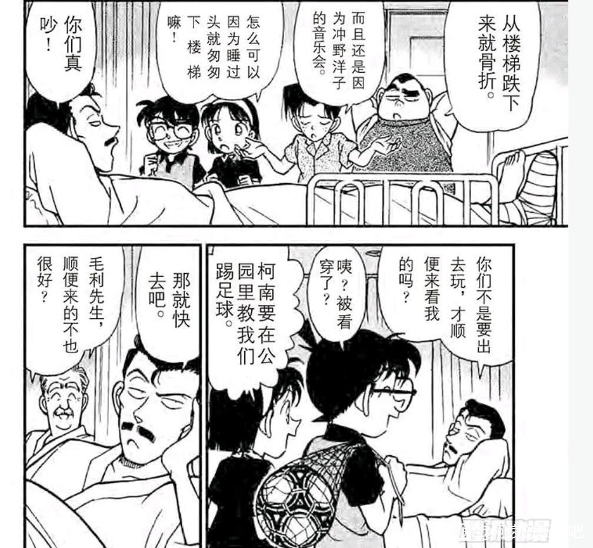
首先来看本案的犯人阵容，这可能是少侦剧情遇到的最强犯罪组织，共计四个人的强盗并且持枪，手上握有小孩人质，其中一名强盗还是警察身份，如果不看个人战斗力，只看阵容甚至比酒厂还强（黑衣组织可没有警视厅卧底）
这个集团的工作也与黑衣组织类似：把受伤的同伙干掉，相比黑衣组织派了忠诚的楠田陆道去送，这个组织采取了更有效的胁迫方法，相当于控制志保并让明美去杀水无玲奈，即使计划失败，也可以带着人质从容跑路。
柯南与三小只要面对的就是这样的组织，简直是为对抗酒厂而进行的演习。然而小兰却不经常经历这种时刻，她对穷凶极恶的犯人缺乏起码的概念，而更多面对的是些情杀案的可怜犯人。
或许不是小兰不经常有这种经验，而是她选择规避了这些事情，三小只参与高山南绑架案，虽然负贡献但教训深刻，小兰则直接回避了这些事情。柯南很难交给小兰这些困难的任务，相比之下早早就有对抗意大利强盗甘文崔经验的三小只反而更加可靠。
这个集团的工作也与黑衣组织类似：把受伤的同伙干掉，相比黑衣组织派了忠诚的楠田陆道去送，这个组织采取了更有效的胁迫方法，相当于控制志保并让明美去杀水无玲奈，即使计划失败，也可以带着人质从容跑路。
柯南与三小只要面对的就是这样的组织，简直是为对抗酒厂而进行的演习。然而小兰却不经常经历这种时刻，她对穷凶极恶的犯人缺乏起码的概念，而更多面对的是些情杀案的可怜犯人。
或许不是小兰不经常有这种经验，而是她选择规避了这些事情，三小只参与高山南绑架案，虽然负贡献但教训深刻，小兰则直接回避了这些事情。柯南很难交给小兰这些困难的任务，相比之下早早就有对抗意大利强盗甘文崔经验的三小只反而更加可靠。
柯南的视角中，犯罪集团大概4～5人，其中一人躺在病床上，外面的3～4人准备谋杀这个病床上的队友，要分配1～2人担任小孩的绑匪，会有2～3人在医院中监视。
于是柯南给三小只的任务是：先假装给小五郎推轮椅，然后迅速转移到对面的绑匪地点，告诉对面的绑匪【任务失败，速丢下人质逃跑】，这个任务既危险又安全，我们可以看到对面楼顶人数相当之多，大部分是游客，因此柯南推断绑匪只是用欺骗方式控制小孩（类似于直树控制赤木守），只要三小只一起出场，即使是两个绑匪，也不可能同时控制四个小孩。
此时歹徒要么挟持人质离开，要么抛下人质离开，而柯南应该已经提前让三小只报警，警察堵门的情况下绑匪必然无法逃离。
对于三小只而言，最大的难点在于他们不要主观发挥，例如故意不报警或者对绑匪添油加醋。然而从元太【即使犯人倒了，还是要和她说这些话】来看，三小只应该是认真吸取了高山南绑架案的惨痛教训，甚至有些教条地执行柯南的任务。
柯南是对三小只有足够信心的，他们的责任感与生俱来，执行能力也过关（至少不会像小兰那样迷路），唯一有些渴望名气的缺陷也变为“深藏功与名”的快乐，我甚至觉得，有一天光彦会侦破柯南和小哀的部分秘密（并对步美和元太说），并比小兰更早进入主线。
柯南最后的表情过于快乐，恐怕不只是用足球打倒四个犯人的成就感，还有对三小只完美任务的心满意足。小哀将见到的是一个温暖善良，富有正义感的少年侦探团。
（动画中原创了小兰乱入医院，指责小五郎不该看洋子电视，原因不明，事实上小兰也是洋子的粉丝）
于是柯南给三小只的任务是：先假装给小五郎推轮椅，然后迅速转移到对面的绑匪地点，告诉对面的绑匪【任务失败，速丢下人质逃跑】，这个任务既危险又安全，我们可以看到对面楼顶人数相当之多，大部分是游客，因此柯南推断绑匪只是用欺骗方式控制小孩（类似于直树控制赤木守），只要三小只一起出场，即使是两个绑匪，也不可能同时控制四个小孩。
此时歹徒要么挟持人质离开，要么抛下人质离开，而柯南应该已经提前让三小只报警，警察堵门的情况下绑匪必然无法逃离。
对于三小只而言，最大的难点在于他们不要主观发挥，例如故意不报警或者对绑匪添油加醋。然而从元太【即使犯人倒了，还是要和她说这些话】来看，三小只应该是认真吸取了高山南绑架案的惨痛教训，甚至有些教条地执行柯南的任务。
柯南是对三小只有足够信心的，他们的责任感与生俱来，执行能力也过关（至少不会像小兰那样迷路），唯一有些渴望名气的缺陷也变为“深藏功与名”的快乐，我甚至觉得，有一天光彦会侦破柯南和小哀的部分秘密（并对步美和元太说），并比小兰更早进入主线。
柯南最后的表情过于快乐，恐怕不只是用足球打倒四个犯人的成就感，还有对三小只完美任务的心满意足。小哀将见到的是一个温暖善良，富有正义感的少年侦探团。
（动画中原创了小兰乱入医院，指责小五郎不该看洋子电视，原因不明，事实上小兰也是洋子的粉丝）
第81天，谜之洋馆案，我认为是自云霄飞车以来小兰形象最好的一案。
自陶艺家案以来，新兰关系事实上处在缓慢升温中，一方面小兰在重拾自信后，的确非常积极地探索柯南的世界，另一方面，这几次案件也确实给了小兰相当多的表现机会，物理案（雾天狗）或者化学案（麻将案）的小兰可以说毫无作为，但如果是门槛比较低的案件（例如海蛇案，识别一条蛇，或者谜之洋馆进行暗号破解），小兰还是颇有发挥余地。
小兰的积极行为显然被柯南所感知，本案一开始，毛利一家猜测委托人的性别，相比于电视台案柯南故意说错推理，此时的柯南显然对小兰放下更多戒备，这无疑是新兰关系复苏的信号。
由于不是命案，小兰也在辅助柯南进行侦查，应该说小兰的侦查能力虽然不如步美，但也没有特别差，主要是看小兰是否愿意用心（大部分时候小兰都是直接交给父亲/新一/平次/世良去侦查，自己报完警就挂机了）
但是很不幸地，仅仅在本案中，小兰的推理热情也并没有持续到最后，更不幸的是，本案存在大量的闹钟，对小兰而言意味着紧绷的时间，因为此时博士很可能已经帮小哀办好入学证明，离小哀入学只剩四天了。
小兰终于抓住了最后的机会，但她已错过太多，这最后的机会，对于新兰感情而言，还是太匮乏了。
自陶艺家案以来，新兰关系事实上处在缓慢升温中，一方面小兰在重拾自信后，的确非常积极地探索柯南的世界，另一方面，这几次案件也确实给了小兰相当多的表现机会，物理案（雾天狗）或者化学案（麻将案）的小兰可以说毫无作为，但如果是门槛比较低的案件（例如海蛇案，识别一条蛇，或者谜之洋馆进行暗号破解），小兰还是颇有发挥余地。
小兰的积极行为显然被柯南所感知，本案一开始，毛利一家猜测委托人的性别，相比于电视台案柯南故意说错推理，此时的柯南显然对小兰放下更多戒备，这无疑是新兰关系复苏的信号。
由于不是命案，小兰也在辅助柯南进行侦查，应该说小兰的侦查能力虽然不如步美，但也没有特别差，主要是看小兰是否愿意用心（大部分时候小兰都是直接交给父亲/新一/平次/世良去侦查，自己报完警就挂机了）
但是很不幸地，仅仅在本案中，小兰的推理热情也并没有持续到最后，更不幸的是，本案存在大量的闹钟，对小兰而言意味着紧绷的时间，因为此时博士很可能已经帮小哀办好入学证明，离小哀入学只剩四天了。
小兰终于抓住了最后的机会，但她已错过太多，这最后的机会，对于新兰感情而言，还是太匮乏了。
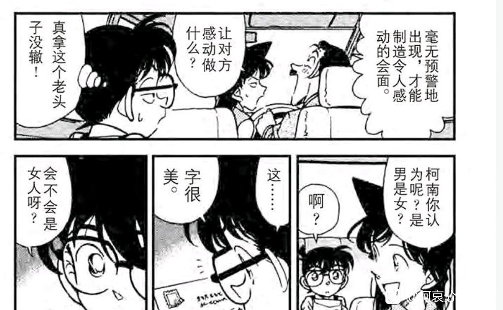
本案小兰的优秀是全方面的。
遇到三个诡异哥布林雕像，虽然被吓了一跳但还是迅速调整了状态；
完美完成小五郎安排的遍历搜索任务，并发现了柯南都没发现的关键线索【狮子】，直接让柯南喜笑颜开；（柯南久违地对小兰脸红了）
最后还顺利用空手道干掉一名歹徒。
经过多种方法的探索，小兰已经知道最适合自己的方式了：①积极参加柯南身边的推理，即使能力有限也不要紧，②配合小兰独有的诱惑方式，③偶尔用战术代餐刺激一下柯南。这确实是对小兰而言相当完善的策略，唯一的问题是，即使在本案这种没有命案的环境，小兰的【积极推理】也还是很难坚持下去，随着新兰相处的继续，小兰只能提升策略中②③的比重，以填补①的缺失。
②③都会产生耐药性。
遇到三个诡异哥布林雕像，虽然被吓了一跳但还是迅速调整了状态；
完美完成小五郎安排的遍历搜索任务，并发现了柯南都没发现的关键线索【狮子】，直接让柯南喜笑颜开；（柯南久违地对小兰脸红了）
最后还顺利用空手道干掉一名歹徒。
经过多种方法的探索，小兰已经知道最适合自己的方式了：①积极参加柯南身边的推理，即使能力有限也不要紧，②配合小兰独有的诱惑方式，③偶尔用战术代餐刺激一下柯南。这确实是对小兰而言相当完善的策略，唯一的问题是，即使在本案这种没有命案的环境，小兰的【积极推理】也还是很难坚持下去，随着新兰相处的继续，小兰只能提升策略中②③的比重，以填补①的缺失。
②③都会产生耐药性。
尽管发现了关键线索，小兰的推理还是不合格，在柯南明确告诉小兰，天黑之后才能找到答案后，我们来看看小兰是如何打退堂鼓的。
【对于小兰而言，推理弄到天黑似乎是一种罪恶】
这里小五郎显然是在很认真的推理，应该说小五郎也是那种认真就能办好事的人（但平时不认真），但他与小兰最大的不同，就是小五郎真的愿意花时间钻研问题。早在火祭案，小五郎就在认定凶手后疯狂找证据，一副誓不罢休的样子。这里小五郎同样是认真地研究暗号，很可能已经有不少初步结果了，不然后面柯南给的那些抽象提示也没法搞懂。
在这样明示的柯南/新一，这样认真的老父亲面前，小兰非要叫小五郎回家，换我我也生气。
小兰该不会小时候每次晚上和新一出去，回家就被英理骂，所以觉得推理到天黑是罪恶吧💔
这种特性似乎意味着小兰任意时刻的推理热情都不能过夜，毕竟【新一晚上熬夜看推理小说，变成了只会推理的呆子】，相比于步美阻止柯南推理的“我们给哥美拉建个墓吧”这样善良的理由（步美也被柯南骂了），小兰毫无理由的劝阻确实差距不小。
【对于小兰而言，推理弄到天黑似乎是一种罪恶】
这里小五郎显然是在很认真的推理，应该说小五郎也是那种认真就能办好事的人（但平时不认真），但他与小兰最大的不同，就是小五郎真的愿意花时间钻研问题。早在火祭案，小五郎就在认定凶手后疯狂找证据，一副誓不罢休的样子。这里小五郎同样是认真地研究暗号，很可能已经有不少初步结果了，不然后面柯南给的那些抽象提示也没法搞懂。
在这样明示的柯南/新一，这样认真的老父亲面前，小兰非要叫小五郎回家，换我我也生气。
小兰该不会小时候每次晚上和新一出去，回家就被英理骂，所以觉得推理到天黑是罪恶吧💔
这种特性似乎意味着小兰任意时刻的推理热情都不能过夜，毕竟【新一晚上熬夜看推理小说，变成了只会推理的呆子】，相比于步美阻止柯南推理的“我们给哥美拉建个墓吧”这样善良的理由（步美也被柯南骂了），小兰毫无理由的劝阻确实差距不小。
于是就像小兰不让柯南推理，于是被柯南叫去跑腿一样，小兰不让小五郎推理，小五郎也不给小兰看真相的机会，反而叫她拿着手电筒守门。（小兰对此也毫无怨言，被叫去跑腿对小兰而言不算负反馈，小兰甚至会主动打扫工藤宅呢）
不过有一说一，SR常说的“小兰前期刻画得好”，其实说的不应该是前期，而是当前小兰逐步靠近柯南世界的时期（落叶缤纷-危命复活），就这个正确运用空手道+打败敌人后卖萌的样子，确实挺惹人喜欢的。
但我觉得小兰这里显然是故意卖萌，给柯南/新一看的。如果有办法的话，小兰还是很愿意在新一面前稍微塑造一个需要保护和帮助的形象，又是怕鬼又是路痴的，不过我看柯南对此并不感冒，反而更愿意保护那个“并没有看起来那么坚强”的女孩。
不过有一说一，SR常说的“小兰前期刻画得好”，其实说的不应该是前期，而是当前小兰逐步靠近柯南世界的时期（落叶缤纷-危命复活），就这个正确运用空手道+打败敌人后卖萌的样子，确实挺惹人喜欢的。
但我觉得小兰这里显然是故意卖萌，给柯南/新一看的。如果有办法的话，小兰还是很愿意在新一面前稍微塑造一个需要保护和帮助的形象，又是怕鬼又是路痴的，不过我看柯南对此并不感冒，反而更愿意保护那个“并没有看起来那么坚强”的女孩。
分割线：第82天，高木涉登场
------
------
二十、最后的冲刺：小兰的追星与自我奉献
距离小哀登场只剩下最后三天，小兰的机会只剩下两个案件：时代剧演员案和麻美学姐案。
然而，小兰在时代剧演员案的表现却很差，这不是柯南第一次看见小兰追星了，但每一次柯南的体验都不太好。
名柯刻画过不少追星的角色，小五郎追星冲野洋子，虽然动作夸张但并不越界，还和洋子成为了共轭偶像；小哀追星比护，却在真正看到比护时有些害羞，只敢薅柯南头发；园子追星基德，浪漫的话说了一堆但谁都不会觉得京极真被绿了。还有著名的大阪3K事件，告诉我们塌房的时候该干嘛。
只有小兰，经常用身体进行追星，而且追星的对象往往道德上问题很大。到目前为止，小兰明确记录的追星有：卡拉OK案（达也这种脾气照追不误，看见达也死了比他队友都难过），天下一夜祭案（二流作家尖下巴凶手突然收获了脸红红的迷妹），暗夜男爵案（前田邀请她去天台她还就真去了）
本案小兰连续遇到三个她心目中的偶像，结果是一对出轨情侣和一个杀人犯，而且早有绯闻，有的时候我怀疑小兰是不是专门找这种有点问题的明星去粉，小兰甚至还是贝姐的粉丝，嗯，十分合理。
所以，现在小兰一追星，柯南的表情如下：
距离小哀登场只剩下最后三天，小兰的机会只剩下两个案件：时代剧演员案和麻美学姐案。
然而，小兰在时代剧演员案的表现却很差，这不是柯南第一次看见小兰追星了，但每一次柯南的体验都不太好。
名柯刻画过不少追星的角色，小五郎追星冲野洋子，虽然动作夸张但并不越界，还和洋子成为了共轭偶像；小哀追星比护，却在真正看到比护时有些害羞，只敢薅柯南头发；园子追星基德，浪漫的话说了一堆但谁都不会觉得京极真被绿了。还有著名的大阪3K事件，告诉我们塌房的时候该干嘛。
只有小兰，经常用身体进行追星，而且追星的对象往往道德上问题很大。到目前为止，小兰明确记录的追星有：卡拉OK案（达也这种脾气照追不误，看见达也死了比他队友都难过），天下一夜祭案（二流作家尖下巴凶手突然收获了脸红红的迷妹），暗夜男爵案（前田邀请她去天台她还就真去了）
本案小兰连续遇到三个她心目中的偶像，结果是一对出轨情侣和一个杀人犯，而且早有绯闻，有的时候我怀疑小兰是不是专门找这种有点问题的明星去粉，小兰甚至还是贝姐的粉丝，嗯，十分合理。
所以，现在小兰一追星，柯南的表情如下：
2024-02-02 21:53 | 没字也行:一眼金田一....
当然，见明星脸红一下也没什么，但不知何种原因，小兰特别热衷于拥抱，仅本案中就出现了两次小兰拥抱凶手的场景，而且并无任何理由。
第一次，凶手做势要跳楼去救妻子，小兰抓住时机进行横沟式侧抱，注意这里实际上是六楼，小兰也不往楼下看一眼确定楼高，总之抱了再说，旁边的柯南已经是一脸无所谓的表情了（柯南并没有在看尸体，也没什么可看的，他的姿势很轻松，就是在看左边两个人的表演而已）
第二次，凶手在现场假装很痛苦的样子（其实是在偷笑），小兰就算想要安慰，也可以随便找一个柯南被小五郎打->小兰关心地看着柯南这种镜头，但作者仍然采用从后方抱住凶手的画法。
所有这些都在凸现小兰完全没有边界感的特征，而且我们知道柯南已经对这些基本麻木了，早在基德案，柯南就认为基德拿走小兰的衣服无所谓，别拿内衣就行。那个绷带怪人案能和园子一起气氛的柯南，早就不存在了。
第一次，凶手做势要跳楼去救妻子，小兰抓住时机进行横沟式侧抱，注意这里实际上是六楼，小兰也不往楼下看一眼确定楼高，总之抱了再说，旁边的柯南已经是一脸无所谓的表情了（柯南并没有在看尸体，也没什么可看的，他的姿势很轻松，就是在看左边两个人的表演而已）
第二次，凶手在现场假装很痛苦的样子（其实是在偷笑），小兰就算想要安慰，也可以随便找一个柯南被小五郎打->小兰关心地看着柯南这种镜头，但作者仍然采用从后方抱住凶手的画法。
所有这些都在凸现小兰完全没有边界感的特征，而且我们知道柯南已经对这些基本麻木了，早在基德案，柯南就认为基德拿走小兰的衣服无所谓，别拿内衣就行。那个绷带怪人案能和园子一起气氛的柯南，早就不存在了。
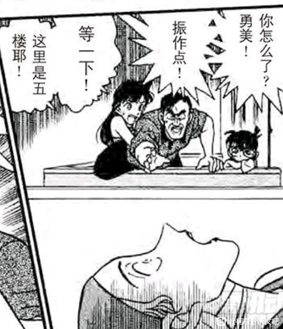
进一步，我们可以看到小兰不愿意进入案发现场的其中一个原因：
小兰似乎害怕尸体，这与小兰的怕鬼一脉相承，似乎对于小兰而言，死去的人还是能通过尸体发挥作用，所以不但自己要远离，还希望其他人远离。尽管从贝姐到元太的所有人都在教小兰世界上没有鬼，然而并没有什么用。
但小兰却不怕柯南嘴里的“僵尸”，因为这是柯南/新一说的，显然在小兰的认知里，柯南/新一是完全不相信鬼的，因此他嘴里的僵尸也不会是客观存在，而只能是修辞手法。但是，如果柯南和新一的身份被分开，则小兰还是会感到害怕。说到底，小兰的怕鬼与不怕鬼，都是建立在主观臆断上的。（可以对比光彦的怕鬼与不怕鬼都建立在客观存在上）
在本案的镜头语言中，柯南在寻找线索，而小兰在寻找柯南。但柯南是在真实的空间寻找线索，而小兰却是在凶手制造的虚假空间中找柯南。
更具有对比性的是，柯南已经知道真相，他只需要找小五郎藏着的枪（总能找到的），但小兰是在门口没有柯南的鞋子的情况下，还进行无谓的寻找。
鉴于此时已经和小哀登场同属一卷，可以做一个更具体的影射：【小兰在自己主观的时空中将再也找不到柯南/新一了，但即使一开始就找不到，小兰还是会去找。】
正如妃英理所言，【对青梅竹马抱有不切实际的幻想】。
小兰似乎害怕尸体，这与小兰的怕鬼一脉相承，似乎对于小兰而言，死去的人还是能通过尸体发挥作用，所以不但自己要远离，还希望其他人远离。尽管从贝姐到元太的所有人都在教小兰世界上没有鬼，然而并没有什么用。
但小兰却不怕柯南嘴里的“僵尸”，因为这是柯南/新一说的，显然在小兰的认知里，柯南/新一是完全不相信鬼的，因此他嘴里的僵尸也不会是客观存在，而只能是修辞手法。但是，如果柯南和新一的身份被分开，则小兰还是会感到害怕。说到底，小兰的怕鬼与不怕鬼，都是建立在主观臆断上的。（可以对比光彦的怕鬼与不怕鬼都建立在客观存在上）
在本案的镜头语言中，柯南在寻找线索，而小兰在寻找柯南。但柯南是在真实的空间寻找线索，而小兰却是在凶手制造的虚假空间中找柯南。
更具有对比性的是，柯南已经知道真相，他只需要找小五郎藏着的枪（总能找到的），但小兰是在门口没有柯南的鞋子的情况下，还进行无谓的寻找。
鉴于此时已经和小哀登场同属一卷，可以做一个更具体的影射：【小兰在自己主观的时空中将再也找不到柯南/新一了，但即使一开始就找不到，小兰还是会去找。】
正如妃英理所言，【对青梅竹马抱有不切实际的幻想】。
2024-02-25 11:02 | 雪者风形:这两个分镜太有内味了，四舍五入阴阳两隔
最初的暗雷：麻美学姐案
小时间线第83天至84天，小哀正在采购课本和书包（划掉）并准备了一套吓唬柯南的说辞。
麻美学姐案隐藏的信息相当多，我们从著名的【小兰拉着园子打扫工藤家】开始讲起。
许多CA都对小兰的打扫行为嗤之以鼻，认为这是新兰关系的一种写照，即【小兰经常对新一进行无效付出】，与雪夜自冻三小时一脉相承。
这种观点虽然没什么问题，不过要注意一点，在第一次打扫，也就是麻美学姐案，柯南【并不反对】，这与后来小兰明知新一反对还要去打扫，是有所不同的。
柯南此时并不认为黑衣组织还会继续对工藤家进行搜查，他后来听小哀说酒厂查了两次，大吃一惊。尽管卡拉OK案（第35天，变小后一个月）时，柯南会尝试复原房间以隐藏行踪，但时间一长就松懈了，例如落叶缤纷质问后（第66天，变小后两个月），柯南就和有希子在家住了一晚，而且显然没有时间精细打扫（迅速睡觉，第二天就被有希子抓去群马了）
本次打扫，对柯南而言主要是要整理各种书籍资料，在滑雪别墅案和基德案，柯南都经常call博士去工藤家查资料，这次整理很可能是让博士下次查资料更有条理一些，因此这次打扫是柯南愿意去做的，既然小兰提出帮忙，还能把园子叫过来，那柯南也不会反对。
以及，小兰叫园子打扫，并不能直接认为是小兰在PUA园子或者其他负面的观点，作为整部作品着墨最多的友谊，兰园关系一直是比较健康的，互相帮个忙实在不是什么雷点。我怀疑园子之所以愿意过来打扫，就是嗅到八卦的味道，而小兰也乐意让园子在柯南面前八卦新兰关系。
不要忘记，此时小兰眼里柯南是新一，她甚至为此专门挑起初恋话题，让园子八卦下去，好看看柯南的反应。
小时间线第83天至84天，小哀正在采购课本和书包（划掉）并准备了一套吓唬柯南的说辞。
麻美学姐案隐藏的信息相当多，我们从著名的【小兰拉着园子打扫工藤家】开始讲起。
许多CA都对小兰的打扫行为嗤之以鼻，认为这是新兰关系的一种写照，即【小兰经常对新一进行无效付出】，与雪夜自冻三小时一脉相承。
这种观点虽然没什么问题，不过要注意一点，在第一次打扫，也就是麻美学姐案，柯南【并不反对】，这与后来小兰明知新一反对还要去打扫，是有所不同的。
柯南此时并不认为黑衣组织还会继续对工藤家进行搜查，他后来听小哀说酒厂查了两次，大吃一惊。尽管卡拉OK案（第35天，变小后一个月）时，柯南会尝试复原房间以隐藏行踪，但时间一长就松懈了，例如落叶缤纷质问后（第66天，变小后两个月），柯南就和有希子在家住了一晚，而且显然没有时间精细打扫（迅速睡觉，第二天就被有希子抓去群马了）
本次打扫，对柯南而言主要是要整理各种书籍资料，在滑雪别墅案和基德案，柯南都经常call博士去工藤家查资料，这次整理很可能是让博士下次查资料更有条理一些，因此这次打扫是柯南愿意去做的，既然小兰提出帮忙，还能把园子叫过来，那柯南也不会反对。
以及，小兰叫园子打扫，并不能直接认为是小兰在PUA园子或者其他负面的观点，作为整部作品着墨最多的友谊，兰园关系一直是比较健康的，互相帮个忙实在不是什么雷点。我怀疑园子之所以愿意过来打扫，就是嗅到八卦的味道，而小兰也乐意让园子在柯南面前八卦新兰关系。
不要忘记，此时小兰眼里柯南是新一，她甚至为此专门挑起初恋话题，让园子八卦下去，好看看柯南的反应。
从园子的视角看，这次打扫无疑是有趣的，她获得了一大堆八卦消息。容易发现，园子对新一的描述似乎总是比小兰准确得多。
小兰：“新一应该谈过一两次恋爱吧”这个观点简直莫名其妙，她四岁就认识新一，像赤木量子这种虚假事件都能大发雷霆，真谈恋爱她能不知道？
（坏了，如果是秀兰论就解释得通了，秀一的确【谈过一两次恋爱】）
而园子的三个观点全部正确，超级迟钝以至于完全不考虑小哀喜欢自己，喜欢有希子这种性格（可能还有外形）的女生，喜欢小兰的点是反差感：【又温柔（爱哭）又有力气（是空手道吗？）】
园子点出了以下两个观点：柯南的初恋（不论是否掺杂有噪声）应该是小兰，至少他自己这么认为，小兰的初恋（不论是否掺杂有噪声）的确是新一。这两个观点通过柯南和小兰相似的脸红表情被基本证实。
然而，新兰双方并不愿意把自己的初恋信息完全暴露给对方，似乎暴露得太随意会导致情感关系的被动。小兰事实上有前田聪作为初恋的烟雾弹，而柯南其实还没有，于是我们将看到柯南利用麻美学姐，造成小兰的误判并给小兰上强度的行为，这是新兰关系攻守变换的又一实例。
小兰：“新一应该谈过一两次恋爱吧”这个观点简直莫名其妙，她四岁就认识新一，像赤木量子这种虚假事件都能大发雷霆，真谈恋爱她能不知道？
（坏了，如果是秀兰论就解释得通了，秀一的确【谈过一两次恋爱】）
而园子的三个观点全部正确，超级迟钝以至于完全不考虑小哀喜欢自己，喜欢有希子这种性格（可能还有外形）的女生，喜欢小兰的点是反差感：【又温柔（爱哭）又有力气（是空手道吗？）】
园子点出了以下两个观点：柯南的初恋（不论是否掺杂有噪声）应该是小兰，至少他自己这么认为，小兰的初恋（不论是否掺杂有噪声）的确是新一。这两个观点通过柯南和小兰相似的脸红表情被基本证实。
然而，新兰双方并不愿意把自己的初恋信息完全暴露给对方，似乎暴露得太随意会导致情感关系的被动。小兰事实上有前田聪作为初恋的烟雾弹，而柯南其实还没有，于是我们将看到柯南利用麻美学姐，造成小兰的误判并给小兰上强度的行为，这是新兰关系攻守变换的又一实例。
2024-02-05 02:31 | 没字也行:在纽约篇回收了（小兰对新一感情变质的开始），不过老贼说不是（小兰初恋你们猜？）.......呃，是不是老贼故意说漏嘴了，把贝新论锤下了。如果纽约篇的新一是贝姐，完美符合种种灰线。2024-02-08 02:47 | 贴吧用户_G3MKtCU:其实错了，新一并不是迟钝，在园子的角度和柯南的角度是一样的：兰喜欢新一。但问题就在于新一不确定是不是真的喜欢自己，园子不知道新一的想法，所以她才说新一迟钝，很显然新一并不迟钝，危命里新一最后问哀得到想答案被记住的，因为猜不到哀的心思，直到有希子挑明，但就这样新一还是无法完全相信2024-02-08 02:51 | 🌐之徙:回复 贴吧用户_G3MKtCU :这不是迟钝是什么2024-02-08 02:58 | 贴吧用户_G3MKtCU:回复 🌐之徙 :新一如果真的迟钝那反应就不是相信，而是完全不知道，会表现出惊讶，新一对待兰的态度也是一样，云霄飞车里新一幻想自己表白结果被兰一句玩笑给打破2024-02-08 03:00 | 贴吧用户_G3MKtCU:回复 🌐之徙 :对于侦探来说破案所要的证据必须充分而不是怀疑，如果只是怀疑那得到的答案不一定准确，这是新一的人设，他虽然自信但对于破案是严谨的2024-02-08 03:26 | 🌐之徙:回复 贴吧用户_G3MKtCU :迟钝的不只是对别人的观察，还有对自己的审视。柯南对自己的情感变化是迟钝的，对外部的感知同样是迟钝的。云霄飞车幻想和兰表白，但他其实又没那么喜欢小兰，想要吸引小哀注意却又不敢确定。2024-02-08 03:27 | 🌐之徙:回复 贴吧用户_G3MKtCU :【如果迟钝就会完全不知道，会表现出惊讶】没道理，迟钝可以是完全的不知情，也可以是比别人慢半拍。
随后麻美学姐按响了工藤家的门铃。单看小兰的表现，我们可能还以为小兰推理能力突然开窍，居然准确地判断门外不是新一，但仔细一想，小兰完全是对着答案解题嘛，因为柯南就在旁边。
总之内田麻美进入了工藤家，并自然而然（基本是被迫地）加入了打扫房间的行列。
我们首先要分析一下麻美学姐的动机，作为被新一直接拒绝的人，麻美不会抱有任何幻想，她对新一的感情，主要是不甘和初恋甜蜜的混合，她要邀请新一参加大学的推理社聚会，很可能是想利用新一以拒绝推理社里追求她对那位渣男（也就是本案凶手），至少要让那位渣男认识到不是所有人都能追到手的。
另外，尽管小兰不认识麻美，麻美却知道小兰是新一的初恋，麻美对小兰是感兴趣的，她非常想知道小兰是一个什么样的人，为什么会成为新一的初恋，于是进行了多种试探。（正如小兰也想知道麻美是一个什么样的人，为什么会“被新一表白“）
麻美学姐的第三个动机应该是向新一道歉和致谢，她当时散布谣言是很不成熟的行为，却让麻美学姐获得了成长的教训，对于麻美学姐而言，初恋虽然已经褪色，但她所经历了甜蜜与不甘却保留了下来，并成为她人生中重要的记忆。
如果说，赤木量子与小哀相似，那么麻美学姐似乎更像【两年后的小兰】（当然是高配的），她和小兰一样都很有异性吸引力，当感情需求得不到满足时会做一些极端的行为，甚至散布【新一向我表白了】的动作也如出一撤。
那么可不可以认为，麻美学姐的结局已经是小兰结局的上限？麻美的网球是全国冠军而小兰空手道只是市冠军，麻美参加了推理社团而小兰拒绝推理，麻美是足球社社长而小兰分不清儿童足球，麻美是上大学的学霸而小兰学习不怎么好（很可能高中毕业就要结婚），唯一弱于小兰的家政烹饪能力都被填补了。
小兰唯一的优势是青梅竹马的初恋，而初恋是容易褪色的。
总之内田麻美进入了工藤家，并自然而然（基本是被迫地）加入了打扫房间的行列。
我们首先要分析一下麻美学姐的动机，作为被新一直接拒绝的人，麻美不会抱有任何幻想，她对新一的感情，主要是不甘和初恋甜蜜的混合，她要邀请新一参加大学的推理社聚会，很可能是想利用新一以拒绝推理社里追求她对那位渣男（也就是本案凶手），至少要让那位渣男认识到不是所有人都能追到手的。
另外，尽管小兰不认识麻美，麻美却知道小兰是新一的初恋，麻美对小兰是感兴趣的，她非常想知道小兰是一个什么样的人，为什么会成为新一的初恋，于是进行了多种试探。（正如小兰也想知道麻美是一个什么样的人，为什么会“被新一表白“）
麻美学姐的第三个动机应该是向新一道歉和致谢，她当时散布谣言是很不成熟的行为，却让麻美学姐获得了成长的教训，对于麻美学姐而言，初恋虽然已经褪色，但她所经历了甜蜜与不甘却保留了下来，并成为她人生中重要的记忆。
如果说，赤木量子与小哀相似，那么麻美学姐似乎更像【两年后的小兰】（当然是高配的），她和小兰一样都很有异性吸引力，当感情需求得不到满足时会做一些极端的行为，甚至散布【新一向我表白了】的动作也如出一撤。
那么可不可以认为，麻美学姐的结局已经是小兰结局的上限？麻美的网球是全国冠军而小兰空手道只是市冠军，麻美参加了推理社团而小兰拒绝推理，麻美是足球社社长而小兰分不清儿童足球，麻美是上大学的学霸而小兰学习不怎么好（很可能高中毕业就要结婚），唯一弱于小兰的家政烹饪能力都被填补了。
小兰唯一的优势是青梅竹马的初恋，而初恋是容易褪色的。
2024-02-17 01:29 | 透明深林:麻美学姐应该是足球社经理吧2024-02-17 03:53 | 🌐之徙:回复 透明深林 :高中足球社，大学推理社2024-02-25 06:25 | 黑暗刺猬-夏特:回复 🌐之徙 :足球社那不是新一上国中、国一（初一）的事情吗？2024-02-25 07:04 | 🌐之徙:回复 黑暗刺猬-夏特 :啊确实是初中，我写错了，推理社还是大学的
我们再来看看柯南见到麻美学姐的反应。
尽管喜怒不形于色，但柯南对麻美学姐是有负面感受的，柯南对麻美的信件选择了战术遗忘，这和柯南遗忘小兰的热带乐园约定十分类似。
同样是初恋，松本小百合是真自杀，却被柯南尽力急救，麻美学姐被人放火，柯南视角里却进了【麻美学姐可能自己点燃蜡烛】的思考量，救人也不太积极（进火场一点伤都没有，倒是有时间照顾小兰的感受并给她带头盔）。
上述这些事情表明，柯南表面上虽然对麻美的造谣无所谓，但内心深处是有所不满的。因此，我们可以理解柯南轻松将麻美当工具人使用的态度：他打断了麻美说出告白真相的过程，让小兰怀疑麻美是新一的初恋，恰好麻美学姐也乐于观测小兰的反应，于是顺势接过柯南的话茬。
柯南的这个方法和赤木量子案时的动作基本类似，让小兰有个假想敌会比较好，至少能让小兰吃代餐/战术代餐时有一定的危机感。
尽管喜怒不形于色，但柯南对麻美学姐是有负面感受的，柯南对麻美的信件选择了战术遗忘，这和柯南遗忘小兰的热带乐园约定十分类似。
同样是初恋，松本小百合是真自杀，却被柯南尽力急救，麻美学姐被人放火，柯南视角里却进了【麻美学姐可能自己点燃蜡烛】的思考量，救人也不太积极（进火场一点伤都没有，倒是有时间照顾小兰的感受并给她带头盔）。
上述这些事情表明，柯南表面上虽然对麻美的造谣无所谓，但内心深处是有所不满的。因此，我们可以理解柯南轻松将麻美当工具人使用的态度：他打断了麻美说出告白真相的过程，让小兰怀疑麻美是新一的初恋，恰好麻美学姐也乐于观测小兰的反应，于是顺势接过柯南的话茬。
柯南的这个方法和赤木量子案时的动作基本类似，让小兰有个假想敌会比较好，至少能让小兰吃代餐/战术代餐时有一定的危机感。
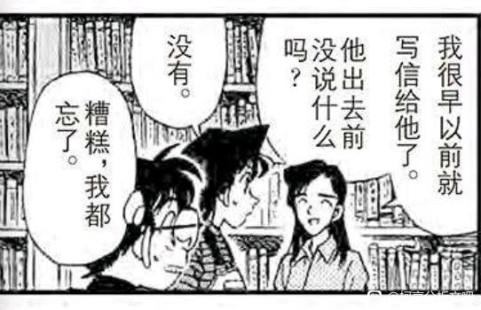
接下来是著名的柠檬派场景。
这里看似是新兰糖（即所谓柯南喜欢任何小兰做的食物），其实很难经得起分析。首先我们要知道，麻美学姐给小兰推荐的做派方式，虽然【有点奇怪】，但并不会难吃，应该是麻美学姐练习做派过程中一个卖相不太好的产品，麻美让小兰做这个派，主要是提醒小兰要更关注本质。
从获悉“新一曾经向麻美表白”后，小兰就处于持续的心神不宁状态，在柯南看来，这是个不错的信号，说明小兰确实害怕失去新一；但在麻美看来，这说明小兰对于新一只有表面的认知，小兰对于新一自己的话经常表示“骗人！”，但却能无来由地相信麻美的【新一喜欢柠檬派】，足见此时小兰已经处于相当不自信的位置，漫画中特写了麻美下决心教小兰【奇怪的派】的镜头，说明麻美此时是作为小兰的学姐在给小兰指导意见（而不是如她所说是在整小兰）
可惜的是，小兰并没有听进学姐的指导。就如同学姐当年也没有第一时间明白新一的拒绝。
这里看似是新兰糖（即所谓柯南喜欢任何小兰做的食物），其实很难经得起分析。首先我们要知道，麻美学姐给小兰推荐的做派方式，虽然【有点奇怪】，但并不会难吃，应该是麻美学姐练习做派过程中一个卖相不太好的产品，麻美让小兰做这个派，主要是提醒小兰要更关注本质。
从获悉“新一曾经向麻美表白”后，小兰就处于持续的心神不宁状态，在柯南看来，这是个不错的信号，说明小兰确实害怕失去新一；但在麻美看来，这说明小兰对于新一只有表面的认知，小兰对于新一自己的话经常表示“骗人！”，但却能无来由地相信麻美的【新一喜欢柠檬派】，足见此时小兰已经处于相当不自信的位置，漫画中特写了麻美下决心教小兰【奇怪的派】的镜头，说明麻美此时是作为小兰的学姐在给小兰指导意见（而不是如她所说是在整小兰）
可惜的是，小兰并没有听进学姐的指导。就如同学姐当年也没有第一时间明白新一的拒绝。
2024-02-05 02:39 | 没字也行:翻译：喜欢新一你要喜欢新一这个人的本质（推理），而且剥开屑柯南的皮，里面到底还是新一。不要因为新一披了个柯南的皮就退缩了呀。2024-02-05 03:06 | 🌐之徙:回复 没字也行 :哈哈，学姐肯定不知道柯南是新一，她就是觉得小兰太注重表面了，所以善意提醒一下（即使新一没变小，学姐的话也成立）
这是我觉得对小兰而言最不利的画面。
小兰并没有听学姐【关注本质】的忠告，她沉浸于【学姐知道太多我所不知道的新一】的情绪，并认为自己毫无胜算。
只能说，这才哪到哪呢，小哀还没出场，小兰就说出如此不利的话，难怪后来小兰越来越害怕柯南是新一，毕竟小哀对柯南的了解已经接近读心术级别了。
但更关键的是，既然小兰了解的新一比别人少，那就自己多去了解啊！即使小兰已经错过了很长时间，却也不妨碍她从现在开始了解侦探的世界。
但小兰的选择是直接在柯南身边抱怨自己不了解新一，仿佛是在暗示柯南多主动靠近小兰一样。
这种等待的态度似乎比不了解侦探更加致命。不了解侦探只是暂时的，但惯于等待的习惯却很难改变。
步美告诉我们，逃避是没有用的。小兰的等待就是一种逃避，逃避对她而言可怕的推理领域，等待新一像儿时那样找到捉迷藏的她。
麻美学姐没有等待，她派不好吃就去练习做派，还因此发现她的很多朋友都只是假装觉得好吃。
当等待终于变成错过，小兰还有面对真相的勇气吗？
小兰并没有听学姐【关注本质】的忠告，她沉浸于【学姐知道太多我所不知道的新一】的情绪，并认为自己毫无胜算。
只能说，这才哪到哪呢，小哀还没出场，小兰就说出如此不利的话，难怪后来小兰越来越害怕柯南是新一，毕竟小哀对柯南的了解已经接近读心术级别了。
但更关键的是，既然小兰了解的新一比别人少，那就自己多去了解啊！即使小兰已经错过了很长时间，却也不妨碍她从现在开始了解侦探的世界。
但小兰的选择是直接在柯南身边抱怨自己不了解新一，仿佛是在暗示柯南多主动靠近小兰一样。
这种等待的态度似乎比不了解侦探更加致命。不了解侦探只是暂时的，但惯于等待的习惯却很难改变。
步美告诉我们，逃避是没有用的。小兰的等待就是一种逃避，逃避对她而言可怕的推理领域，等待新一像儿时那样找到捉迷藏的她。
麻美学姐没有等待，她派不好吃就去练习做派，还因此发现她的很多朋友都只是假装觉得好吃。
当等待终于变成错过，小兰还有面对真相的勇气吗？
2024-03-07 02:08 | 昆明湖之泪:我去，大佬的分析真的绝了，白马探也是判断兰真的不懂侦探
小兰明确知道自己不了解新一，并且她选择了等待，那么，要怎么了解新一呢？
小兰选择从麻美学姐那里了解。所以她毫无预案地冲入火场，如果没有柯南在一边提醒，小兰的行为无异于自杀。这里的小兰情绪极端不稳定，她所想的很可能是带有自毁倾向的方案，即反正自己比不过麻美，就算自己被火烧死也是无所谓的。
（如果有什么自毁倾向是毫无意义的，那么这就是。小哀在公交车上进入了冷酷的理智，让她下决心要切断组织和大家的关系，但小兰的自毁往往是莫名其妙的）
当预感到新一不会因她的等待而停下时，小兰的行为往往偏于极端，从雪夜三小时，到看见快斗就闯红灯想质问，再到这里冲入火场，小兰的行为一般会收获柯南的保护，这对于小兰似乎是一种正向鼓励。
而柯南是那个费力不讨好的角色，他还是愿意基于保护的目的，一次一次挽救小兰，直到M26的尝试接住，然后失败，落寞，沉思……小哀能够理解柯南干净的香味，理解他总是把别人保护在身后的责任感，并和他一起承担。而小兰的理解却是偏差的，她在不断地制造危险的环境，反正新一不会让任何人死掉。
【柯南还是那么不可思议】，如果是高木在这里，一定要问柯南“你究竟是何方神圣”了，小兰选择继续沉默，即使到了危命复活还是沉默，她希望柯南主动说出来，因为她自己不愿意前进。
小兰选择从麻美学姐那里了解。所以她毫无预案地冲入火场，如果没有柯南在一边提醒，小兰的行为无异于自杀。这里的小兰情绪极端不稳定，她所想的很可能是带有自毁倾向的方案，即反正自己比不过麻美，就算自己被火烧死也是无所谓的。
（如果有什么自毁倾向是毫无意义的，那么这就是。小哀在公交车上进入了冷酷的理智，让她下决心要切断组织和大家的关系，但小兰的自毁往往是莫名其妙的）
当预感到新一不会因她的等待而停下时，小兰的行为往往偏于极端，从雪夜三小时，到看见快斗就闯红灯想质问，再到这里冲入火场，小兰的行为一般会收获柯南的保护，这对于小兰似乎是一种正向鼓励。
而柯南是那个费力不讨好的角色，他还是愿意基于保护的目的，一次一次挽救小兰，直到M26的尝试接住，然后失败，落寞，沉思……小哀能够理解柯南干净的香味，理解他总是把别人保护在身后的责任感，并和他一起承担。而小兰的理解却是偏差的，她在不断地制造危险的环境，反正新一不会让任何人死掉。
【柯南还是那么不可思议】，如果是高木在这里，一定要问柯南“你究竟是何方神圣”了，小兰选择继续沉默，即使到了危命复活还是沉默，她希望柯南主动说出来，因为她自己不愿意前进。
巧合的是，本案的凶手与小兰的行为颇有可比性。
本案凶手故意纵火，自己扮演英雄救美的英雄，希望借此撬开麻美学姐的心扉；小兰则故意冲入火场，让自己变成英雄柯南所需要救护的美人，希望借此撬开柯南/新一的心扉。
麻美学姐案，最后一话就叫敞开心扉，小兰回忆着新一踢足球的样子，而金句频出的麻美学姐告诉我们，【勉强打开一个人的心扉并不容易】，而小兰似乎从来没有找到正确的打开方式，只能勉强地不断尝试。
【小哀打开柯南的心扉，只花费半天时间，另外半天柯南打开了小哀的心扉】
正确的打开方式不只是知道对方做了什么，还知道对方为什么会这么做，小哀向柯南哭泣的时候，这两项她都知道了，知道柯南尽全力救了明美却还是失败；同时柯南也知道了小哀的两项打开方式，理解了她的恐惧与坚强。
小兰知道柯南做了什么，也曾经猜过对方为什么这么做，但猜错了，因为那是以自我为中心的猜法，猜到的都是【躲在身边嘲笑我】之类的滑稽理由，小兰从来没有柯南的打开方式，她连试柯南手机密码都试了一个晚上。正如扉页中小兰看着新一踢足球，却不知道他为何而踢。
本案凶手故意纵火，自己扮演英雄救美的英雄，希望借此撬开麻美学姐的心扉；小兰则故意冲入火场，让自己变成英雄柯南所需要救护的美人，希望借此撬开柯南/新一的心扉。
麻美学姐案，最后一话就叫敞开心扉，小兰回忆着新一踢足球的样子，而金句频出的麻美学姐告诉我们，【勉强打开一个人的心扉并不容易】，而小兰似乎从来没有找到正确的打开方式，只能勉强地不断尝试。
【小哀打开柯南的心扉，只花费半天时间，另外半天柯南打开了小哀的心扉】
正确的打开方式不只是知道对方做了什么，还知道对方为什么会这么做，小哀向柯南哭泣的时候，这两项她都知道了，知道柯南尽全力救了明美却还是失败；同时柯南也知道了小哀的两项打开方式，理解了她的恐惧与坚强。
小兰知道柯南做了什么，也曾经猜过对方为什么这么做，但猜错了，因为那是以自我为中心的猜法，猜到的都是【躲在身边嘲笑我】之类的滑稽理由，小兰从来没有柯南的打开方式，她连试柯南手机密码都试了一个晚上。正如扉页中小兰看着新一踢足球，却不知道他为何而踢。
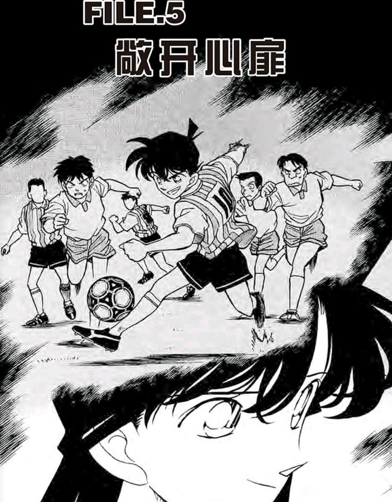
最后讲一下新一对初恋的描述。
如果从不太可靠的黑白背景出发，新一对初恋的描述半真半假；如果从最浅薄的初遇论的角度出发，这里描述的其实是小哀；拥有如此多的解释，只能说明作者在刻画这个片段的时候，使用了大量二义性质的表达。
所谓当局者迷，旁观者清，麻美学姐认为新一说的是小兰，园子认为新一说的是小兰，小兰也这么认为（不要被小兰装糊涂骗了，她脸红的表情已经出卖了自己的观点，小兰这里装糊涂和她在危命复活的表现一样，明知道新一来表白，故意说什么借作业的事情，其实是让新一更加主动地战术而已）
唯一有疑问的是柯南本人，尽管他的描述确实偏向小兰，但他的表现更像是单纯地不想被说出隐私，在小兰装傻之后直接配合表演。如果此时小兰定义新一喜欢自己，那么柯南其实就没有转圜的余地。而柯南的表现恰恰说明：
【柯南希望自己有转圜的余地】
下一话，转学生登场了。这个转圜的余地，真的遇到了正确的人。
如果从不太可靠的黑白背景出发，新一对初恋的描述半真半假；如果从最浅薄的初遇论的角度出发，这里描述的其实是小哀；拥有如此多的解释，只能说明作者在刻画这个片段的时候，使用了大量二义性质的表达。
所谓当局者迷，旁观者清，麻美学姐认为新一说的是小兰，园子认为新一说的是小兰，小兰也这么认为（不要被小兰装糊涂骗了，她脸红的表情已经出卖了自己的观点，小兰这里装糊涂和她在危命复活的表现一样，明知道新一来表白，故意说什么借作业的事情，其实是让新一更加主动地战术而已）
唯一有疑问的是柯南本人，尽管他的描述确实偏向小兰，但他的表现更像是单纯地不想被说出隐私，在小兰装傻之后直接配合表演。如果此时小兰定义新一喜欢自己，那么柯南其实就没有转圜的余地。而柯南的表现恰恰说明：
【柯南希望自己有转圜的余地】
下一话，转学生登场了。这个转圜的余地，真的遇到了正确的人。
2024-02-05 02:49 | 没字也行:（文吧有分析新明初遇）我倾向怀疑却是明美（12岁），不然十亿案的偏向明美的态度从何而来？步美敲定的年上恋属性（4岁小孩子和5岁小孩子差别不大，不至于有年上感），也能很好的回应。2024-02-05 03:05 | 🌐之徙:回复 没字也行 :有一定可能，不过小时候的明美是否爱哭还两说呢2024-02-08 02:51 | 贴吧用户_G3MKtCU:我是倾向于不论初遇如何，此时柯南自认的初恋就是小兰，但他的自认可以有偏差。
回复 🌐之徙 :明美就是爱哭的，明美本质和兰一样，都是愚蠢的恋爱脑2024-02-08 02:53 | 贴吧用户_G3MKtCU:回复 🌐之徙 :而且明美的善良同样是愚蠢的，时光胶囊篇里明美毫无理由的在他人认为自己犯错的情况下主动释放善意，并毫不在意2024-02-08 02:54 | 贴吧用户_G3MKtCU:回复 🌐之徙 :还有十亿日元事件里明知道组织的冷血依然选择相信。对待赤井也是即使赤井不怀好意的接近自己但依旧选择喜欢2024-02-08 02:54 | 贴吧用户_G3MKtCU:回复 🌐之徙 :所以兰和明美没有任何区别，硬要说区别就是明美的剧情太少了，远没有兰多2024-02-08 02:56 | 贴吧用户_G3MKtCU:回复 🌐之徙 :如果新一喜欢明美，那柯哀就是不可能成的，这是固定的结论，因为新一只会选择与明美更像的兰，而不是和姐姐性格完全相反的哀2024-02-08 03:18 | 🌐之徙:回复 贴吧用户_G3MKtCU :别的不说，明美从来没有真正相信过组织，她本来就是死局所以只能接受组织的任务。 并且明美的设定一直在补充，现在下结论太早了。明美和小兰一个很大的区别是她真的能让一般的犯人不犯罪，能让赤井真的爱上她（但小兰一般不能）2024-02-08 03:24 | 贴吧用户_G3MKtCU:回复 🌐之徙 :我只能说半斤八两2024-02-08 03:26 | 贴吧用户_G3MKtCU:贝姐对兰的在意不是假的，贝姐不是杀人犯？明美也没感化几个凶手啊，说不相信组织我是没看出来，真要不相信那她就不会抱着幻想了
回复 🌐之徙 :赤井和哀无厘头的幻视兰，作者也没有对兰太多恶意，漫画扉页还夸兰是好孩子，就说明了兰本身和明美就是相近的，只是兰比明美更复杂，因为兰本身还蕴含着维纳斯以及撒旦的形象2024-02-08 03:29 | 🌐之徙:回复 贴吧用户_G3MKtCU :明美藏厕所的那个地方，明美在一天凶手就不敢作案一天。 贝姐接触了小兰，该杀还是杀，纽约篇凶手也是该杀就杀，说她们有相似之处没有问题，但是说半斤八两就很夸张，而且你说明美相信组织根本没证据，倒是明美自己说的【果然大家都不能逃离组织】，不要强行把两个人设并列。2024-02-08 03:34 | 贴吧用户_G3MKtCU:回复 🌐之徙 :我是不知道为什么突然把明美想的那么美好2024-02-08 03:36 | 贴吧用户_G3MKtCU:回复 🌐之徙 :我寻思贝姐在兰在的时候杀人了？2024-02-08 03:38 | 贴吧用户_G3MKtCU:回复 🌐之徙 :还有你说的明美藏在厕所那个地方凶手不敢杀人有没有一种可能柯南世界里就没有哪个凶手当着别人的面光明正大的杀人2024-02-08 03:41 | 贴吧用户_G3MKtCU:回复 🌐之徙 :兰的行为是有对立性的2024-02-08 03:43 | 🌐之徙:回复 贴吧用户_G3MKtCU :你还是回去看一下，厕所案就是直接感化的2024-02-08 03:43 | 贴吧用户_G3MKtCU:回复 🌐之徙 :明美的善良同样也没有具体表现2024-02-08 03:45 | 贴吧用户_G3MKtCU:回复 🌐之徙 :我只能说贝姐也是杀人犯2024-02-08 03:48 | 🌐之徙:回复 贴吧用户_G3MKtCU :那你能找到明美相信组织的证据吗？ 明美那句话是她不相信组织的弱证据，明美不把十亿元交给组织是不相信组织的强证据，何来【明美相信组织】一说？ 你这有点求全责备了，因为明美接受了组织的条件，所以是明美相信组织的问题？那么波本还天天给组织出任务，说明波本相信组织？2024-02-08 03:54 | 🌐之徙:回复 贴吧用户_G3MKtCU :你的思路太离谱了，善良没有具体表现？我感觉你是没有看过藏在厕所里的秘密的。 在基层没少干坏事更是你的一厢情愿，明美一直使用真名生活，十亿元完全是要用自己换出组织里的妹妹。【在基层所以没少坏事】真的暴论。2024-02-08 03:56 | 🌐之徙:回复 贴吧用户_G3MKtCU :我是没有美化明美，但是你对明美的抨击大部分不成立，与小兰半斤八两更是无稽之谈。2024-02-08 04:03 | 贴吧用户_G3MKtCU:回复 🌐之徙 :很难理解？明美做坏事是为了妹妹等于自己没干坏事？2024-02-08 04:04 | 贴吧用户_G3MKtCU:回复 🌐之徙 :明美从来就不是什么真正意义上善良的人，如果你非要觉得为了某人而干坏事也算善良那我只能说别了，哀和赤井幻视明美本身就是作者安排的2024-02-08 04:05 | 贴吧用户_G3MKtCU:回复 🌐之徙 :这就说明了兰和明美是具有共性的，除非你否认作者，那我只能说你是对的2024-02-08 05:15 | 🌐之徙:回复 贴吧用户_G3MKtCU :你没发现自己矛盾了吗？ 你已经说出来了，明美的善良和小兰的善良是不一样的。 至于幻视这个事情则另有讲究，一般出现在相同特征发生的时候，例如小兰跳出来保护小哀，或者哭被赤井看见，如果没有这个条件，幻视根本不成立。2024-02-08 05:15 | 🌐之徙:回复 贴吧用户_G3MKtCU :幻视就等于相同塑造？那小兰无数次幻视别人是新一怎么办？2024-02-08 05:16 | 🌐之徙:回复 贴吧用户_G3MKtCU :【有共性】是对的，【半斤八两】【同等塑造】则不然，只能说有部分共性2024-02-08 05:19 | 🌐之徙:回复 贴吧用户_G3MKtCU :至于抢十亿元这个事情，属于胁迫性质，法律上有清楚的定义，反而说明明美的善良是有选择的，和小兰很不同。2024-02-08 05:19 | 🌐之徙:回复 贴吧用户_G3MKtCU :你要是想进一步讨论，可以开一个帖子详细分析，就不必在这里聊了。2024-02-15 11:25 | 没字也行:回复 贴吧用户_G3MKtCU :所以新一的初恋一定得是小兰。要是明美进赛道，柯哀真崩盘了。小哀如何自处？这恋爱心态崩了呀（因为姐姐的缘故，工藤你才保护我的吗？）新明只是初遇就好了。2024-02-15 18:54 | 🌐之徙:回复 没字也行 :不至于不至于，就算新一初恋是明美也完全不妨碍柯哀的2024-02-19 00:02 | 贴吧用户_G3MKtCU:回复 没字也行 :甚至可以说明美除了没有兰的低智商行为，其他和兰差不多甚至不如兰一根🤣尤其是恋爱脑这一方面，属实是一样炸裂，说的不好听点兰未来是和有希子一样的世界明星，明美就是正常成长也就一个家庭妇女2024-02-19 00:04 | 🌐之徙:回复 贴吧用户_G3MKtCU :叫你单独开一个贴你不听，那我只好把你的回复删掉了。2024-03-10 06:05 | 学习机425:回复 🌐之徙 :楼主，建议把这条下面的评论全删了， 好无语真要吵明美是兰的高高高高配另开一个不就好了？
要完结了吗

2024-02-04 03:00 | 玩世家free:看样子是2024-02-04 06:38 | 🌐之徙:回复 玩世家free :还没呢2024-02-04 08:19 | 珞瞳:回复 🌐之徙 :楼主加油ヾ(◍°∇°◍)ﾉﾞ2024-02-04 20:48 | 玩世家free:回复 🌐之徙 :好好好
二十一、总结
小哀登场前的新兰关系如下（以下时间均为小时间线）
【青梅竹马时期：第0天至第35天】
小兰的主要计划是名气计划，该阶段柯南被小兰视为新一的代餐，因而新兰关系并未下跌太多，但新一的变小无疑加速了新兰问题的暴露，绷带怪人案和卡拉OK案小兰的差劲行为，标志着这一阶段的结束，柯南对小兰重新认知，而小兰仍然对新一抱有幻想。
【第一下跌期：第35天至第43天】
这一阶段柯兰关系极差，柯南丧失了作为小兰代餐的价值因而失去关注，至赤木量子案，由于小兰的眼泪生效，下跌趋势暂缓。
【代餐间隙期：第43天至第49天】
小兰的主要计划变更为诱惑力提升计划，同时开启多次代餐，包括前田聪，服部平次和柯南本人都受到了小兰的特殊对待，诱惑力提升计划与目睹代餐勉强让新兰关系收支均衡，但柯南无法接受小兰夸服部推理却不夸他，该阶段于是结束。
【第二下跌期：第49天至第66天】
与第一下跌期小兰对柯南的坏态度相反，第二下跌期柯南对小兰出现了很大的防备心理，隐藏推理能力+思考小兰可以做第三者+觉得渣男几句话能约走小兰+龙舌兰爆炸案不顾毛利家暴露风险直接强行寻找黑衣组织，该阶段柯南完全做好了推理毛利家的心理准备。
该阶段后期，小兰在服部的影响下短暂出现推理热情，但和柯南不相容，以至于对柯南使用了暴力。
【重新认识时期：第66天至第85天】
小兰的主要计划变更为撬开柯南的心扉，并放弃名气计划。从落叶缤纷开始，小兰终于对柯南/新一进行重新认知，并尝试多种方法接近柯南，但由于小兰对推理的排斥，小兰的大部分尝试都不得要领。相比于前几个阶段小兰代餐导致柯南紧张的情况，这个阶段小兰丧失了主动权，并由于严重缺乏自信而对柯南情感上的离开迹象表示担忧。新兰关系在这一阶段缓慢恢复，至麻美学姐案，大体恢复到代餐间隙期的水平。
小兰的排名布阵已经勉强完成，那么，该让名侦探柯南真正的女主角登场了～
---正文结束---
小哀登场前的新兰关系如下（以下时间均为小时间线）
【青梅竹马时期：第0天至第35天】
小兰的主要计划是名气计划，该阶段柯南被小兰视为新一的代餐，因而新兰关系并未下跌太多，但新一的变小无疑加速了新兰问题的暴露，绷带怪人案和卡拉OK案小兰的差劲行为，标志着这一阶段的结束，柯南对小兰重新认知，而小兰仍然对新一抱有幻想。
【第一下跌期：第35天至第43天】
这一阶段柯兰关系极差，柯南丧失了作为小兰代餐的价值因而失去关注，至赤木量子案，由于小兰的眼泪生效，下跌趋势暂缓。
【代餐间隙期：第43天至第49天】
小兰的主要计划变更为诱惑力提升计划，同时开启多次代餐，包括前田聪，服部平次和柯南本人都受到了小兰的特殊对待，诱惑力提升计划与目睹代餐勉强让新兰关系收支均衡，但柯南无法接受小兰夸服部推理却不夸他，该阶段于是结束。
【第二下跌期：第49天至第66天】
与第一下跌期小兰对柯南的坏态度相反，第二下跌期柯南对小兰出现了很大的防备心理，隐藏推理能力+思考小兰可以做第三者+觉得渣男几句话能约走小兰+龙舌兰爆炸案不顾毛利家暴露风险直接强行寻找黑衣组织，该阶段柯南完全做好了推理毛利家的心理准备。
该阶段后期，小兰在服部的影响下短暂出现推理热情，但和柯南不相容，以至于对柯南使用了暴力。
【重新认识时期：第66天至第85天】
小兰的主要计划变更为撬开柯南的心扉，并放弃名气计划。从落叶缤纷开始，小兰终于对柯南/新一进行重新认知，并尝试多种方法接近柯南，但由于小兰对推理的排斥，小兰的大部分尝试都不得要领。相比于前几个阶段小兰代餐导致柯南紧张的情况，这个阶段小兰丧失了主动权，并由于严重缺乏自信而对柯南情感上的离开迹象表示担忧。新兰关系在这一阶段缓慢恢复，至麻美学姐案，大体恢复到代餐间隙期的水平。
小兰的排名布阵已经勉强完成，那么，该让名侦探柯南真正的女主角登场了～
---正文结束---
打扰楼主了，借个楼，非常感谢